<!DOCTYPE html>
<html lang="en">
<head>
<meta charset="UTF-8">
<meta name="viewport" content="width=device-width,initial-scale=1">
<title>9th State Maths — Appendix</title>
<meta name="description" content="Class 9 Mathematics · Appendix · 9th State Maths">
<link rel="icon" href="data:image/svg+xml,<svg xmlns='http://www.w3.org/2000/svg' viewBox='0 0 100 100'><text y='.9em' font-size='90'>📘</text></svg>">
<link rel="stylesheet" href="../../../assets/book.css">
<link rel="stylesheet" href="https://cdn.jsdelivr.net/npm/katex@0.16.11/dist/katex.min.css" crossorigin="anonymous">
</head>
<body>
<header class="topbar">
<div class="topbar-in">
  <div class="crumb">
    <span class="c1"><a href="../../../index.html">Library</a> · <a href="../../index.html">Class 9 Mathematics</a></span>
    <span class="c2">Appendix · 9th State Maths</span>
  </div>
  <a class="tb-btn" data-nav="prev" href="../../90-appendix/00-front-matter/index.html" title="Front Matter">←</a>
  <details class="drawer"><summary class="tb-btn" title="Sections in this chapter">☰</summary>
<div class="drawer-panel"><div class="dh">Appendix</div><a href="../00-front-matter/index.html">Front Matter</a><a href="../9th_state_Maths/index.html" aria-current="page">9th State Maths</a><a href="../answers/index.html">Answers</a></div></details>
  <a class="tb-btn" data-nav="next" href="../../90-appendix/answers/index.html" title="Answers">→</a>
  <button class="tb-btn" data-theme-toggle title="Toggle light / dark" aria-label="Toggle light or dark theme">◐</button>
</div>
<div class="progress"><span style="width:99.3%"></span></div>
</header>
<main class="wrap">
<div class="sec-head">
  <p class="eyebrow"><a href="../index.html">Appendix · Appendix</a></p>
  <h1>9th State Maths</h1>
  <p class="sec-meta">738 figures</p>
</div>
<article class="prose">
<figure class="fig"></figure>
<p>GOVERNMENT OF TAMILNADU</p>
<h2 id="s-standard-nine">STANDARD NINE</h2>
<h2 id="s-mathematics">MATHEMATICS</h2>
<p>A publication under Free Textbook Programme of Government of Tamil Nadu</p>
<h2 id="s-department-of-school-education">Department Of School Education</h2>
<h2 id="s-untouchability-is-inhuman-and-a-crime">Untouchability is Inhuman and a Crime</h2>
<p>Government of TamilNadu</p>
<p>First Edition \(- 2018\) Revised Edition - 2019, 2020, 2022, 2023, 2025</p>
<p>Reprint \(- 2021\), 2024 (Published under new syllabus)</p>
<h3 id="s-a-call-can-change-your-life-helplines">A call can change your life helplines</h3>
<aside class="sidenote"><p>If you are forced into</p><p>Child Marriage or Child Labour, If you are Emotionally, Physically, Sexually</p></aside>
<p>NOT FOR SALE Harassed or Abused,</p>
<aside class="sidenote"><p>If you feel unsafe dial</p></aside>
<figure class="fig">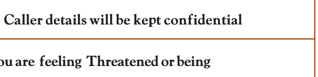</figure>
<aside class="sidenote"><p>If you are feeling Threatened or being</p></aside>
<p>Content Creation Abused or Harassed - Emotionally, Physically or Sexually,</p>
<aside class="sidenote"><p>If you are feeling unsafe,</p></aside>
<p>possess all If you need guidance for</p>
<p>The wise</p>
<aside class="sidenote"><p>Examinations or Higher Education</p></aside>
<p>State Council of Educational Research and Training Dial1441714417</p>
<p>© SCERT 2018</p>
<aside class="sidenote"><p>Caller details will be kept confidential</p></aside>
<p>Printing &amp; Publishing</p>
<p>Tamil NaduTextbook and Educational Services Corporation</p>
<figure class="fig table-fig wide"></figure>
<figure class="fig table-fig wide"></figure>
<figure class="fig"></figure>
<p>எண்்ணணென்்ப ஏனை எழுத்்ததென்்ப இவ்விரண்டும் கண்்ணணென்்ப வாழும் உயிர்க்கு - குறள் 392 Numbers and letters, they are known as eyes to humans, they are. Kural 392</p>
<p>Learning Outcomes</p>
<p>To transform the classroom processes into learning centric with a set of bench marks</p>
<h4 class="callout-h" id="s-note">Note</h4>
<p>To provide additional inputs for students in the content</p>
<p>Activity / Project</p>
<p>To encourage students to involve in activities to learn mathematics</p>
<h4 class="callout-h" id="s-ict-corner">ICT Corner</h4>
<p>To encourage learner’s understanding of content through application of technology</p>
<p>Thinking Corner</p>
<p>To kindle the inquisitiveness of students in learning mathematics. To make the students to have a diverse thinking</p>
<h4 class="callout-h" id="s-points-to-remember">Points to Remember</h4>
<p>To recall the points learnt in the topic</p>
<p>Multiple Choice Questions</p>
<p>To provide additional assessment items on the content</p>
<p>Progress Check</p>
<p>Self evaluation of the learner’s progress</p>
<h4 class="callout-h" id="s-exercise">Exercise</h4>
<p>To evaluate the learners’ in understanding the content</p>
<p class="lead">“The essence of mathematics is not to make simple things complicated but to make complicated things simple” -S. Gudder</p>
<h2 id="s-symbols">SYMBOLS</h2>
<p>= is equal to _{ly} ||| similarly</p>
<p>! is not equal to T symmetric difference 1 less than N natural numbers # less than or equal to W whole numbers 2 greater than Z integers $ greater than or equal to R real numbers . equivalent to 3 triangle j union + angle k intersection = perpendicular to U universal Set || parallel to d belongs to ( implies z does not belong to ` therefore 1 proper subset of a since (or) because 3 subset of or is contained in absolute value Y1 not a proper subset of - approximately equal to M not a subset of or is not contained in | (or) : such that</p>
<p>Al (or) A complement of \(A /\) (or) , congruent Q (or) { } empty set or null set or void set / identically equal to n(A) number of elements in the set A p pi</p>
<p>P(A) power set of A ! plus or minus \sum summation P(E) probability of an event E</p>
<p>E-book Evaluation</p>
<h2 id="s-1-set-language">1 SET LANGUAGE</h2>
<p class="lead">A set is a many that allows itself to thought of as a one -Georg Cantor</p>
<p>The theory of sets was developed by German mathematician Georg Cantor. Today it is used in almost every branch of Mathematics. In Mathematics, sets are convenient because all mathematical structures can be regarded as sets.</p>
<p>Georg Cantor (AD (CE) \(1845 - 1918)\)</p>
<p>Learning Outcomes</p>
<p>Â To describe and represent a set in different forms. Â To identify different types of sets. Â To understand and perform set operations and apply this in Venn diagram. Â To know the commutative, associative and distributive properties among sets. Â To understand and verify De Morgan’s laws. Â To use set language in solving life oriented word problems.</p>
<h2 id="s-1-1-introduction">1.1 Introduction</h2>
<p>In our daily life, we often deal with collection of objects like books, stamps, coins, etc. Set language is a mathematical way of representing a collection of objects.</p>
<p>Let us look at the following pictures. What do they represent?</p>
<p>Here, Fig.1.1 represents a collection of fruits and Fig. 1.2 represents a collection of house- hold items.</p>
<p>We observe in these cases, our attention turns from one individual object to a collection of objects based on their characteristics. Any such collection is called a set.</p>
<figure class="fig"><figcaption>Fig. 1.1 Fig. 1.2</figcaption></figure>
<h2 id="s-1-2-set">1.2 Set</h2>
<p>A set is a well-defined collection</p>
<p>of objects.</p>
<p>Here “well-defined collection of objects” means that given a specific object it must be possible for us to decide whether the object is an element of the given collection or not.</p>
<p>The objects of a set are called its members or elements.</p>
<p>For example,</p>
<ul class="qlist">
<li><span class="mk">1.</span><span class="lt">The collection of all books in a District Central Library.</span></li>
<li><span class="mk">2.</span><span class="lt">The collection of all colours in a rainbow.</span></li>
<li><span class="mk">3.</span><span class="lt">The collection of prime numbers.</span></li>
</ul>
<p>We see that in the adjacent box, statements (1), (2), and (4) are well defined Which of the following are sets ? and therefore they are sets. Whereas (3) 1. Collection of Natural numbers. and (5) are not well defined because the 2. Collection of English alphabets. words good and beautiful are difficult to 3. Collection of good students in a class. agree on. I might consider a student to be 4. Collection of States in our country. good and you may not. I might consider 5. Collection of beautiful flowers in a garden. the Jasmine is the beautiful flower but you may not. So we will consider only those collections to be sets where there is no such ambiguity.</p>
<p>Therefore (3) and (5) are not sets.</p>
<h4 class="callout-h" id="s-activity-1">Activity \(- 1\)</h4>
<p>Discuss and give as many examples of collections from your daily life situations, which are sets and which are not sets.</p>
<h4 class="callout-h" id="s-note">Note</h4>
<p>z Elements of a set are listed only once. _{T} z The order of listing the elements of the set does not change the set. For example, the collection 1,2,3,4,5,6,7,8, … as well as the collection 1, 3, 2, 4, 5, 7, 6, 8, … are the same though listed in different order. Since it is necessary to know whether an object is an element in the set or not, we do not want to list that element many times.</p>
<p>Notation</p>
<p>A set is usually denoted by capital letters of the English Alphabets A, B, P, Q, X, Y, etc. The elements of a set is written within curly brackets “{ }” If x is an element of a set A or x belongs to A, we write x ! A. If x is not an element of a set A or x does not belongs to A, we write x g A.</p>
<p>For example, Consider the set \(A = {2,3,5,7}\) then 2 is an element of A; we write 2!A 5 is an element of A; we write 5!A 6 is not an element of A; we write 6gA</p>
<figure class="fig"></figure>
<p>Consider the set \(A =\) {Ashwin, Murali Vijay, Vijay Shankar, Badrinath }. Fill in the blanks with the appropriate symbol ! or g.</p>
<ul class="qlist">
<li><span class="mk">(i)</span><span class="lt">Murali Vijay ______ A. (ii) Ashwin ______ A. (iii) Badrinath ______A.</span></li>
<li><span class="mk">(iv)</span><span class="lt">Ganguly ______ A. (v) Tendulkar ______ A</span></li>
</ul>
<h4 class="callout-h" id="s-solution">Solution</h4>
<ul class="qlist">
<li><span class="mk">(i)</span><span class="lt">Murali Vijay ! A. (ii) Ashwin ! A (iii) Badrinath ! A</span></li>
<li><span class="mk">(iv)</span><span class="lt">Ganguly g A. (v) Tendulkar g A.</span></li>
</ul>
<h2 id="s-1-3-representation-of-a-set">1.3 Representation of a Set</h2>
<p>The collection of odd numbers can be described in many ways: (1) “The set of odd numbers” is a fine description, we understand it well. (2) It can be written as {1, 3, 5, …} (3) Also, it can be said as the collection of all numbers x where x is an odd number. All of them are equivalent and useful. For instance,the two descriptions “The collection of all solutions to the equation \(x - 5 =\) 3” and {8} refer to the same set.</p>
<p>A set can be represented in any one of the following three ways or forms:</p>
<h3 id="s-1-3-1-descriptive-form">1.3.1 Descriptive Form</h3>
<p>In descriptive form, a set is described in words. For example,</p>
<ul class="qlist">
<li><span class="mk">(i)</span><span class="lt">The set of all vowels in English alphabets.</span></li>
<li><span class="mk">(ii)</span><span class="lt">The set of whole numbers.</span></li>
</ul>
<h3 id="s-1-3-2-set-builder-form-or-rule-form">1.3.2 Set Builder Form or Rule Form</h3>
<p>In set builder form, all the elements are described by a rule. For example,</p>
<figure class="fig side-fig">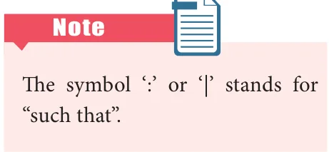</figure>
<ul class="qlist">
<li><span class="mk">(i)</span><span class="lt">\(A =\) {x : x is a vowel in English alphabets}</span></li>
<li><span class="mk">(ii)</span><span class="lt">\(B =\) {x|x is a whole number}</span></li>
</ul>
<h3 id="s-1-3-3-roster-form-or-tabular-form">1.3.3 Roster Form or Tabular Form</h3>
<p>A set can be described by listing all the elements of the set.</p>
<figure class="fig table-fig wide"></figure>
<p>Write the set of letters of the following words in Roster form</p>
<ul class="qlist">
<li><span class="mk">(i)</span><span class="lt">ASSESSMENT (ii) PRINCIPAL</span></li>
</ul>
<h4 class="callout-h" id="s-solution">Solution</h4>
<ul class="qlist">
<li><span class="mk">(i)</span><span class="lt">ASSESSMENT (ii) PRINCIPAL</span></li>
</ul>
<p>X= {A, S, E, M, N, T} Y={P, R, I, N, C, A, L}</p>
<figure class="fig"></figure>
<ul class="qlist">
<li><span class="mk">1.</span><span class="lt">Which of the following are sets?</span></li>
<li><span class="mk">(i)</span><span class="lt">The collection of prime numbers upto 100.</span></li>
<li><span class="mk">(ii)</span><span class="lt">The collection of rich people in India.</span></li>
<li><span class="mk">(iii)</span><span class="lt">The collection of all rivers in India.</span></li>
<li><span class="mk">(iv)</span><span class="lt">The collection of good Hockey players.</span></li>
<li><span class="mk">2.</span><span class="lt">List the set of letters of the following words in Roster form.</span></li>
<li><span class="mk">(i)</span><span class="lt">INDIA (ii) PARALLELOGRAM</span></li>
<li><span class="mk">(iii)</span><span class="lt">MISSISSIPPI (iv) CZECHOSLOVAKIA</span></li>
<li><span class="mk">3.</span><span class="lt">Consider the following sets \(A = {0\), 3, 5, 8}, \(B = {2\), 4, 6, 10} and \(C = {12\), 14,18, 20}.</span></li>
<li><span class="mk">(a)</span><span class="lt">State whether True or False:</span></li>
<li><span class="mk">(i)</span><span class="lt">18 ! C (ii) 6 gA (iii) 14 g C (iv) 10 ! B</span></li>
<li><span class="mk">(v)</span><span class="lt">5! B (vi) 0 ! B</span></li>
<li><span class="mk">(b)</span><span class="lt">Fill in the blanks:</span></li>
<li><span class="mk">(i)</span><span class="lt">3 ! ____ (ii) 14 ! _____ (iii) 18 ____ B (iv) 4 _____ B</span></li>
<li><span class="mk">4.</span><span class="lt">Represent the following sets in Roster form.</span></li>
<li><span class="mk">(i)</span><span class="lt">\(A =\) The set of all even natural numbers less than 20.</span></li>
<li><span class="mk">(ii)</span><span class="lt">\(B =\) {y : \(y = 21n\) , n ! N , \(n \le 5}\)</span></li>
<li><span class="mk">(iii)</span><span class="lt">\(C =\) {x : x is perfect cube, \(27 &lt; x &lt; 216}\)</span></li>
<li><span class="mk">(iv)</span><span class="lt">\(D =\) {x : x ! Z, \(- 5 &lt; x \le 2}\)</span></li>
<li><span class="mk">5.</span><span class="lt">Represent the following sets in set builder form.</span></li>
<li><span class="mk">(i)</span><span class="lt">\(B =\) The set of all Cricket players in India who scored double centuries in One</span></li>
</ul>
<p>day Internationals.</p>
<ul class="qlist">
<li><span class="mk">(ii)</span><span class="lt">\(C =\) $ \(\frac{1}{2}\) , \(\frac{2}{3}\) , \(\frac{3}{4}\) ,....</span></li>
<li><span class="mk">(iii)</span><span class="lt">\(D =\) The set of all tamil months in a year.</span></li>
<li><span class="mk">(iv)</span><span class="lt">\(E =\) The set of odd Whole numbers less than 9.</span></li>
<li><span class="mk">6.</span><span class="lt">Represent the following sets in descriptive form.</span></li>
<li><span class="mk">(i)</span><span class="lt">\(P ={\) January, June, July}</span></li>
<li><span class="mk">(ii)</span><span class="lt">\(Q = {7,11,13,17,19,23,29}\)</span></li>
<li><span class="mk">(iii)</span><span class="lt">\(R =\) {x : x ! N , \(x &lt; 5}\)</span></li>
<li><span class="mk">(iv)</span><span class="lt">\(S =\) {x : x is a consonant in English alphabet}</span></li>
</ul>
<h2 id="s-1-4-types-of-sets">1.4 Types of Sets</h2>
<p>There is a very special set of great interest: the empty collection ! Why should one care about the empty collection? Consider the set of solutions to the equation</p>
<p>\(x +1 = 0\). It has no elements at all in the set of Real Numbers. Also consider all rectangles with one angle greater than 90 degrees. There is no such rectangle and hence this describes an empty set.</p>
<p>So, the empty set is important, interesting and deserves a special symbol too.</p>
<h3 id="s-1-4-1-empty-set-or-null-set">1.4.1 Empty Set or Null Set</h3>
<figure class="fig side-fig"></figure>
<p>A set consisting of no element is called the empty set or null set or void set. It is denoted by Q or { }.</p>
<p>For example,</p>
<ul class="qlist">
<li><span class="mk">(i)</span><span class="lt">A={x : x is an odd integer and divisible by 2}</span></li>
</ul>
<p>` A={ } or Q</p>
<ul class="qlist">
<li><span class="mk">(ii)</span><span class="lt">The set of all integers between 1 and 2.</span></li>
</ul>
<h3 id="s-1-4-2-singleton-set">1.4.2.Singleton Set</h3>
<p>A set which has only one element is called a singleton set.</p>
<p>For example,</p>
<ul class="qlist">
<li><span class="mk">(i)</span><span class="lt">\(A =\) {x : \(3 &lt; x &lt; 5\), x ! N} (ii) The set of all even prime numbers.</span></li>
</ul>
<h3 id="s-1-4-3-finite-set">1.4.3 Finite Set</h3>
<figure class="fig side-fig"></figure>
<p>A set with finite number of elements is called a finite set.</p>
<p>For example,</p>
<ul class="qlist">
<li><span class="mk">1.</span><span class="lt">The set of family members.</span></li>
<li><span class="mk">2.</span><span class="lt">The set of indoor/outdoor games you play.</span></li>
<li><span class="mk">3.</span><span class="lt">The set of curricular subjects you learn in school.</span></li>
<li><span class="mk">4.</span><span class="lt">\(A =\) {x : x is a factor of 36}</span></li>
</ul>
<figure class="fig side-fig"></figure>
<h3 id="s-1-4-4-infinite-set">1.4.4 Infinite Set</h3>
<p>A set which is not finite is called an infinite set.</p>
<p>For example,</p>
<ul class="qlist">
<li><span class="mk">(i)</span><span class="lt">{5,10,15,...} (ii) The set of all points on a line.</span></li>
</ul>
<p>To discuss further about the types of sets, we need to know the cardinality of sets. Cardinal number of a set : When a set is finite, it is very useful to know how many</p>
<p>elements it has. The number of elements in a set is called the Cardinal number of the set.</p>
<p>The cardinal number of a set A is denoted by n(A)</p>
<figure class="fig"></figure>
<div class="mathblock"><p>If \(A = {1,2,3,4,5,7,9,11}\), find n(A).</p></div>
<figure class="fig side-fig"></figure>
<h4 class="callout-h" id="s-solution">Solution</h4>
<div class="mathblock"><p>\(A = {1,2,3,4,5,7,9,11}\)</p></div>
<p>Since set A contains 8 elements, n(A) \(= 8\).</p>
<h3 id="s-1-4-5-equivalent-sets">1.4.5 Equivalent Sets</h3>
<p>Two finite sets A and B are said to be equivalent if they contain the same number of elements. It is written as \(A \approx B\).</p>
<figure class="fig side-fig">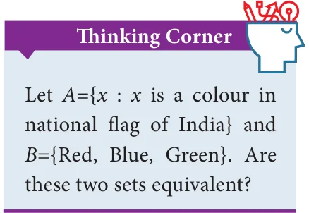</figure>
<p>If A and B are equivalent sets, then n(A) = n(B)</p>
<p>For example,</p>
<p>Consider \(A =\) { ball, bat} and \(B =\) {History, Geography}.</p>
<p>Here A is equivalent to B because n(A) = n(B) \(= 2\).</p>
<figure class="fig"></figure>
<p>Are \(P =\) { x : \(- 3 \le x \le 0\), x ! Z} and \(Q =\) The set of all prime factors of 210, equivalent sets?</p>
<h4 class="callout-h" id="s-solution">Solution</h4>
<p>\(P =\) { \(- 3\), \(- 2\), \(- 1\), 0}, The prime factors of 210 are 2,3,5,and 7 and so, \(Q = {2\), 3, 5, 7} n(P) =4 and n(Q) \(= 4\). Therefore P and Q are equivalent sets.</p>
<h3 id="s-1-4-6-equal-sets">1.4.6 Equal Sets</h3>
<figure class="fig side-fig"></figure>
<p>Two sets are said to be equal if they contain exactly the same elements, otherwise they are said to be unequal.</p>
<p>In other words, two sets A and B are said to be equal, if</p>
<ul class="qlist">
<li><span class="mk">(i)</span><span class="lt">every element of A is also an element of B</span></li>
<li><span class="mk">(ii)</span><span class="lt">every element of B is also an element of A</span></li>
</ul>
<p>For example,</p>
<p>Consider the sets \(A = {1\), 2, 3, 4} and \(B = {4\), 2, 3, 1} Since A and B contain exactly the same elements, A and B are equal sets.</p>
<figure class="fig wide">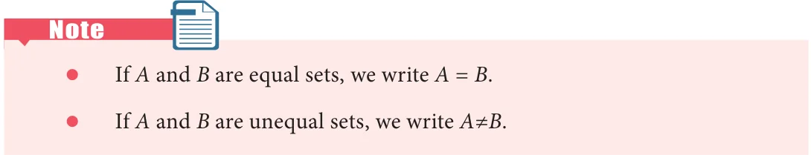</figure>
<p>A set does not change, if one or more elements of the set are repeated.</p>
<p>For example, if we are given</p>
<p>A={a, b, c} and B={a, a, b, b, b, c} then, we write \(B =\) { a, b, c, }. Since, every element of A is also an element of B and every element of B is also an element of A, the sets A and B are equal.</p>
<figure class="fig"></figure>
<h4 class="callout-h" id="s-note">Note</h4>
<p>Are \(A =\) {x : x ! N, \(4 \le x \le 8}\) and Equal sets are equivalent sets but equivalent \(B =\) { 4, 5, 6, 7, 8} equal sets? sets need not be equal sets. For example, Solution if \(A =\) { p,q,r,s,t} and B= { 4,5,6,7,8}. Here \(A =\) { 4, 5, 6, 7, 8}, \(B =\) { 4, 5, 6, 7, \(8} n(A)=n(B)\), so A and B are equivalent but A and B are equal sets. not equal.</p>
<h3 id="s-1-4-7-universal-set">1.4.7 Universal Set</h3>
<p>A Universal set is a set which contains all the elements of all the sets under consideration and is usually denoted by U. For example,</p>
<ul class="qlist">
<li><span class="mk">(i)</span><span class="lt">If we discuss about elements in Natural numbers, then the universal set U is the</span></li>
</ul>
<p>set of all Natural numbers. U={x : \(x \in\) N}.</p>
<ul class="qlist">
<li><span class="mk">(ii)</span><span class="lt">If A={earth, mars, jupiter}, then the universal set U is the planets of solar system.</span></li>
</ul>
<h3 id="s-1-4-8-subset">1.4.8 Subset</h3>
<p>Let A and B be two sets. If every element of A is also an element of B, then A is called a subset of B. We write A 3 B.</p>
<figure class="fig side-fig"></figure>
<p>A 3 B is read as “A is a subset of B” Thus A 3 B, if a ! A implies a ! B. If A is not a subset of B, we write A M B Clearly, if A is a subset of B, then n(A) \(\le\) n(B). Since every element of A is also an element of B,</p>
<p>the set B must have at least as many elements as A, thus n(A) \(\le\) n(B).</p>
<p>The other way is also true. Suppose that n(A) &gt; n(B), then A has more elements than</p>
<p>B, and hence there is at least one element in A that cannot be in B, so A is not a subset of B. For example,</p>
<ul class="qlist">
<li><span class="mk">(i)</span><span class="lt">{1}3{1,2,3} (ii) {2,4} M{1,2,3}</span></li>
</ul>
<figure class="fig"></figure>
<p>Insert the appropriate symbol 3 or M in each blank to make a true statement. (i) {10, 20, 30} ____ {10, 20, 30, 40} (ii) {p, q, r} _____ {w, x, y, z}</p>
<h4 class="callout-h" id="s-solution">Solution</h4>
<ul class="qlist">
<li><span class="mk">(i)</span><span class="lt">{10, 20, 30} ____ {10, 20, 30, 40}</span></li>
</ul>
<p>Since every element of {10, 20, 30} is also an element of {10, 20, 30, 40}, we get {10, 20, 30} 3 {10, 20, 30, 40}.</p>
<ul class="qlist">
<li><span class="mk">(ii)</span><span class="lt">{p, q, r} _____ {w, x, y, z}</span></li>
</ul>
<p>Since the element p belongs to {p, q, r} but does not belong to {w, x, y, z}, shows that {p, q, r} M {w, x, y, z}.</p>
<figure class="fig wide">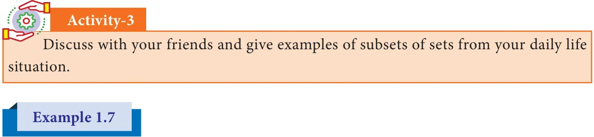</figure>
<p>Write all the subsets of \(A =\) {a, b}.</p>
<h4 class="callout-h" id="s-solution">Solution</h4>
<p>A= {a,b}</p>
<p>Subsets of A are Q,{a}, {b} and {a, b}.</p>
<h4 class="callout-h" id="s-note">Note</h4>
<p>z If A3B and B3A, then A=B. In fact this is how we defined equality of sets. z Empty set is a subset of every set. This is not easy to see ! Let A be any set. The only way for the empty set to be not a subset of A would be to have an element x in it but with x not in A. But how can x be in the empty set ? That is impossible. So this only way being impossible, the empty set must be a subset of A. (Is your head spinning? Think calmly, explain it to a friend, and you will agree it is alright !) z Every set is a subset of itself. (Try and argue why?)</p>
<h3 id="s-1-4-9-proper-subset">1.4.9. Proper Subset</h3>
<p>Let A and B be two sets. If A is a subset of B and \(A \ne B\), then A is called a proper subset of B and we write A 1 B.</p>
<p>For example,</p>
<p>If A={1,2,5} and B={1,2,3,4,5} then A is a proper subset of B ie. A 1 B.</p>
<figure class="fig side-fig">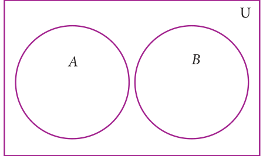</figure>
<h3 id="s-1-4-10-disjoint-sets">1.4.10 Disjoint Sets</h3>
<p>Two sets A and B are said to be disjoint if they do</p>
<p>not have common elements.</p>
<p>In other words, if \(A \cap B= \emptyset\) , then A and B are said</p>
<p>to be disjoint sets.</p>
<figure class="fig"><figcaption>Fig. 1.3</figcaption></figure>
<p>Verify whether A={20, 22, 23, 24} and B={25, 30, 40, 45} are disjoint sets.</p>
<figure class="fig side-fig">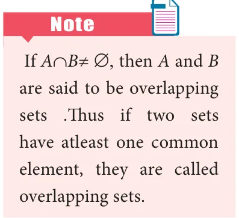</figure>
<h4 class="callout-h" id="s-solution">Solution</h4>
<div class="mathblock"><p>\(A = {20,22\), 23, 24} , B={25, 30, 40, \(45} A \cap B = {20,22\), 23, \(24} \cap {25\), 30, 40, 45}</p></div>
<p>= { }</p>
<p>Since \(A \cap B = \emptyset\) , A and B are disjoint sets.</p>
<h3 id="s-1-4-11-power-set">1.4.11 Power Set</h3>
<figure class="fig wide">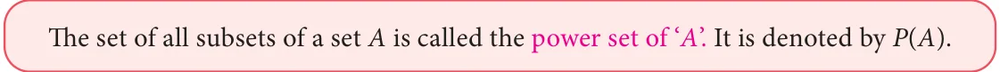</figure>
<p>For example,</p>
<ul class="qlist">
<li><span class="mk">(i)</span><span class="lt">If A={2, 3}, then find the power set of A.</span></li>
</ul>
<p>The subsets of A are \(\emptyset\) , {2},{3},{2,3}. The power set of A,</p>
<div class="mathblock"><p>P(A) = { \(\emptyset ,{2},{3},{2,3}}\)</p></div>
<ul class="qlist">
<li><span class="mk">(ii)</span><span class="lt">If \(A =\) { \(\emptyset\) , { \(\emptyset\) }}, then the power set of A is { \(\emptyset\) , { \(\emptyset\) , { \(\emptyset\) }}, { \(\emptyset\) } , {{ \(\emptyset\) }} }.</span></li>
</ul>
<p>An important property.</p>
<p>We already noted that n(A) # n[P(A)]. But how big is P(A) ? Think about this a bit, and</p>
<p>see whether you come to the following conclusion:</p>
<ul class="qlist">
<li><span class="mk">(i)</span><span class="lt">If n(A) \(= m\), then n[P(A)] \(= 2\)</span></li>
</ul>
<ul class="qlist">
<li><span class="mk">(ii)</span><span class="lt">The number of proper subsets of a set A is n[P(A)] \(- 1 = 2 - 1\).</span></li>
</ul>
<figure class="fig"></figure>
<p>Find the number of subsets and the number of proper subsets of a set X={a, b, c, x, y, z}. Solution Given X={a, b, c, x, y, z}.Then, n(X) =6</p>
<figure class="fig side-fig"></figure>
<p>The number of subsets = n[P(X)] \(= 2 = 64\)</p>
<p>The number of proper subsets \(= n[P(X)]-1 = 2 - 1\)</p>
<div class="mathblock"><p>\(= 64 - 1 = 63\)</p></div>
<figure class="fig"></figure>
<ul class="qlist">
<li><span class="mk">1.</span><span class="lt">Find the cardinal number of the following sets.</span></li>
<li><span class="mk">(i)</span><span class="lt">\(M =\) {p, q, r, s, t, u}</span></li>
<li><span class="mk">(ii)</span><span class="lt">\(P =\) {x : \(x = 3n+2\), \(n \in W\) and x&lt; 15}</span></li>
<li><span class="mk">(iii)</span><span class="lt">\(Q =\) {y : \(y = \frac{4}{3n}\) , \(n \in N\) and \(2 &lt; n \le 5}\)</span></li>
<li><span class="mk">(iv)</span><span class="lt">\(R =\) {x : x is an integers, \(x \in Z\) and \(- 5 \le x &lt;5}\)</span></li>
<li><span class="mk">(v)</span><span class="lt">\(S =\) The set of all leap years between 1882 and 1906.</span></li>
<li><span class="mk">2.</span><span class="lt">Identify the following sets as finite or infinite.</span></li>
<li><span class="mk">(i)</span><span class="lt">\(X =\) The set of all districts in Tamilnadu.</span></li>
<li><span class="mk">(ii)</span><span class="lt">\(Y =\) The set of all straight lines passing through a point.</span></li>
<li><span class="mk">(iii)</span><span class="lt">\(A =\) { x : \(x \in Z\) and x &lt;5}</span></li>
<li><span class="mk">(iv)</span><span class="lt">\(B =\) { x : \(x^{2} - 5x+6 = 0\), \(x \in\) N}</span></li>
<li><span class="mk">3.</span><span class="lt">Which of the following sets are equivalent or unequal or equal sets?</span></li>
<li><span class="mk">(i)</span><span class="lt">\(A =\) The set of vowels in the English alphabets.</span></li>
</ul>
<p>\(B =\) The set of all letters in the word “VOWEL”</p>
<ul class="qlist">
<li><span class="mk">(ii)</span><span class="lt">\(C = {2,3,4,5} D =\) { x : \(x \in W\) , 1&lt; x&lt;5}</span></li>
<li><span class="mk">(iii)</span><span class="lt">\(X =\) { x : x is a letter in the word “LIFE”} \(Y =\) { F, I, L, E}</span></li>
<li><span class="mk">(iv)</span><span class="lt">\(G =\) { x : x is a prime number and \(3 &lt; x &lt; 23} H =\) { x : x is a divisor of 18}</span></li>
<li><span class="mk">4.</span><span class="lt">Identify the following sets as null set or singleton set.</span></li>
<li><span class="mk">(i)</span><span class="lt">\(A =\) {x : \(x \in N\), \(1 &lt; x &lt; 2}\)</span></li>
<li><span class="mk">(ii)</span><span class="lt">\(B =\) The set of all even natural numbers which are not divisible by 2</span></li>
<li><span class="mk">(iii)</span><span class="lt">\(C = {0}\).</span></li>
<li><span class="mk">(iv)</span><span class="lt">\(D =\) The set of all triangles having four sides.</span></li>
<li><span class="mk">5.</span><span class="lt">State which pairs of sets are disjoint or overlapping?</span></li>
<li><span class="mk">(i)</span><span class="lt">\(A =\) {f, i, a, s} and B={a, n, f, h, s}</span></li>
<li><span class="mk">(ii)</span><span class="lt">\(C =\) {x : x is a prime number, x &gt;2} and \(D ={x:x\) is an even prime number}</span></li>
<li><span class="mk">(iii)</span><span class="lt">\(E =\) {x : x is a factor of 24} and F={x : x is a multiple of 3, \(x &lt; 30}\)</span></li>
<li><span class="mk">6.</span><span class="lt">If \(S =\) {square, rectangle, circle, rhombus, triangle}, list the elements of the following</span></li>
</ul>
<p>subset of S.</p>
<ul class="qlist">
<li><span class="mk">(i)</span><span class="lt">The set of shapes which have 4 equal sides.</span></li>
<li><span class="mk">(ii)</span><span class="lt">The set of shapes which have radius.</span></li>
<li><span class="mk">(iii)</span><span class="lt">The set of shapes in which the sum of all interior angles is 180 .</span></li>
</ul>
<ul class="qlist">
<li><span class="mk">(iv)</span><span class="lt">The set of shapes which have 5 sides.</span></li>
<li><span class="mk">7.</span><span class="lt">If \(A =\) {a, {a, b}}, write all the subsets of A.</span></li>
<li><span class="mk">8.</span><span class="lt">Write down the power set of the following sets:</span></li>
<li><span class="mk">(i)</span><span class="lt">\(A =\) {a, b} (ii) \(B = {1\), 2, 3} (iii) \(D =\) {p, q, r, s} (iv) \(E = \emptyset\)</span></li>
<li><span class="mk">9.</span><span class="lt">Find the number of subsets and the number of proper subsets of the following sets.</span></li>
<li><span class="mk">(i)</span><span class="lt">\(W =\) {red, blue, yellow} (ii) \(X =\) { \(x^{2}\) : \(x \in N\), \(x^{2} \le 100}\).</span></li>
<li><span class="mk">10.</span><span class="lt">(i) If n(A) \(= 4\), find n[P(A)]. (ii) If n(A)=0, find n[P(A)].</span></li>
<li><span class="mk">(iii)</span><span class="lt">If n[P(A)] \(= 256\), find n(A).</span></li>
</ul>
<h2 id="s-1-5-set-operations">1.5 Set Operations</h2>
<p>We started with numbers and very soon we learned arithmetical operations on them.</p>
<p>In algebra we learnt expressions and soon started adding and multiplying them as well,</p>
<p>writing (x +2),(x-3) etc. Now that we know sets, the natural question is, what can we do with sets, what are natural operations on them ?</p>
<p>When two or more sets combine together to form one set under the given conditions,</p>
<p>then operations on sets can be carried out. We can visualize the relationship between sets and set operations using Venn diagram.</p>
<p>John Venn was an English mathematician. He invented Venn diagrams which pictorially represent the relations between sets.Venn diagrams are used in the field of Set Theory, Probability, Statistics, Logic and Computer Science.</p>
<h3 id="s-1-5-1-complement-of-a-set">1.5.1 Complement of a Set</h3>
<p>The Complement of a set A is the set of all elements of U (the universal set) that are not in A. It is denoted by A ' or \(A^{c}\). In symbols A ' = {x : \(x \in U\), \(x \notin\) A}</p>
<h3 id="s-venn-diagram-for-complement-of-a-set">Venn diagram for complement of a set</h3>
<figure class="fig">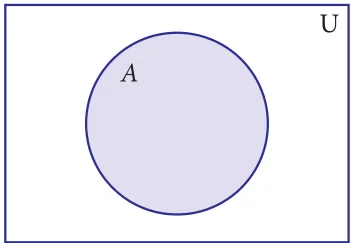<figcaption>Fig. 1.4 Fig. 1.5</figcaption></figure>
<figure class="fig">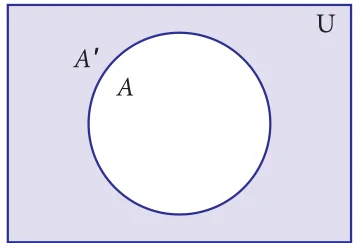</figure>
<p>A (shaded region) A ' (shaded region)</p>
<p>For example, If \(U =\) {all boys in a class} and A= {boys who play Cricket}, then complement of the set A is A ' = {boys who do not play Cricket}.</p>
<figure class="fig"></figure>
<figure class="fig side-fig"></figure>
<p>If \(U =\) {c, d, e, f, g, h, i, j} and \(A =\) { c, d, g, j} , find A ' .</p>
<h4 class="callout-h" id="s-solution">Solution</h4>
<p>\(U =\) {c, d, e, f, g, h, i, j}, \(A =\) {c, d, g, j} A ' ={e, f, h, i}</p>
<h3 id="s-1-5-2-union-of-two-sets">1.5.2 Union of Two Sets</h3>
<p>The union of two sets A and B is the set of all elements which are either in A or in B or</p>
<p>in both. It is denoted by \(A \cup B\) and read as A union B. In symbol, \(A \cup B =\) {x : \(x \in A\) or \(x \in\) B}</p>
<h3 id="s-the-union-of-two-sets-can-be-represented-by-venn-diagram-a">The union of two sets can be represented by Venn diagram as given below</h3>
<figure class="fig">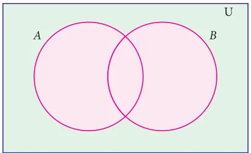<figcaption>Fig. 1.6 Fig. 1.7</figcaption></figure>
<figure class="fig"></figure>
<p>Sets A and B have common elements Sets A and B are disjoint</p>
<p>For example,</p>
<p>If P ={Asia,Africa, Antarctica, Australia} and \(Q =\) {Europe, North America, South America}, then the union set of P and Q is \(P \cup Q =\) {Asia, Africa, Antartica, Australia, Europe, North America, South America}.</p>
<figure class="fig wide">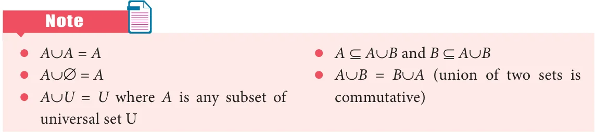</figure>
<figure class="fig"></figure>
<figure class="fig side-fig">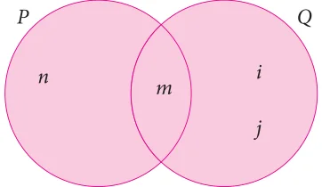</figure>
<p>If P={m, n} and Q= {m, i, j}, then, represent P and Q in Venn diagram and hence find \(P \cup Q\).</p>
<h4 class="callout-h" id="s-solution">Solution</h4>
<p>Given P={m, n} and Q= {m, i, j} From the venn diagram, \(P \cup Q={n\), m, i, j}. Fig. 1.8</p>
<h3 id="s-1-5-3-intersection-of-two-sets">1.5.3 Intersection of Two Sets</h3>
<p>The intersection of two sets A and B is the set of all elements common to both A</p>
<p>and B. It is denoted by \(A \cap B\) and read as A intersection B. In symbol , \(A \cap B={x\) : \(x \in A\) and \(x \in\) B}</p>
<figure class="fig side-fig"></figure>
<h3 id="s-intersection-of-two-sets-can-be-represented-by-a-venn-diag">Intersection of two sets can be represented by a Venn diagram as given below</h3>
<p>For example,</p>
<div class="mathblock"><p>If \(A = {1\), 2, 6}; \(B = {2\), 3, 4}, then \(A \cap B = {2}\)</p></div>
<p>because 2 is common element of the sets A and B. Fig. 1.9</p>
<figure class="fig"></figure>
<p>Let \(A =\) {x : x is an even natural number and \(1&lt; x \le 12}\) and</p>
<p>\(B =\) { x : x is a multiple of 3, \(x \in N\) and \(x \le 12}\) be two sets. Find \(A \cap B\).</p>
<h4 class="callout-h" id="s-solution">Solution</h4>
<p>Here \(A = {2\), 4, 6, 8, 10, 12} and \(B = {3\), 6, 9, 12}</p>
<div class="mathblock"><p>\(A \cap B = {6\), 12}</p></div>
<p>Example 1.13 Note � \(A \cap A = A\) � \(A \cap \emptyset = \emptyset\)</p>
<p>If \(A = {2\), 3} and \(C =\) { }, find \(A \cap C\). z A \(\cap U = A\) where A is any subset Solution of universal set U</p>
<p>There is no common element and hence \(^{z} A \cap B \subseteq A\) and \(A \cap B \subseteq B A \cap C ={\) } z A \(\cap B = B \cap A\) (Intersection of two sets is commutative)</p>
<h4 class="callout-h" id="s-note">Note</h4>
<p>z When \(B \subset A\), the union and intersection of A and B are represented in Venn diagram as follows</p>
<p>shaded region is shaded region is \(B \subset A A \cup B = A A \cap B =B\)</p>
<p class="caption">Fig. 1.10 Fig. 1.11 Fig. 1.12</p>
<p>z If A and B are any two non empty sets such that \(A \cup B = A \cap B\), then \(A = B\)</p>
<p>z Let n(A) \(= p\) and n(B) \(= q\) then</p>
<ul class="qlist">
<li><span class="mk">(a)</span><span class="lt">Minimum of n(A \(\cup\) B) = max{p, q}</span></li>
<li><span class="mk">(b)</span><span class="lt">Maximum of n(A \(\cup\) B) \(= p + q\)</span></li>
<li><span class="mk">(c)</span><span class="lt">Minimum of n(A \(\cap\) B) \(= 0\)</span></li>
<li><span class="mk">(d)</span><span class="lt">Maximum of n(A \(\cap\) B) = min{p, q}</span></li>
</ul>
<h3 id="s-1-5-4-difference-of-two-sets">1.5.4 Difference of Two Sets</h3>
<p>Let A and B be two sets, the difference of sets A and B is the set of all elements which</p>
<p>are in A, but not in B. It is denoted by \(A - B\) or A\B and read as A difference B.</p>
<p>In symbol, \(A - B =\) { x : \(x \in A\) and \(x \notin\) B}</p>
<figure class="fig side-fig">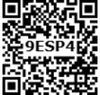</figure>
<p>\(B - A =\) { y : \(y \in B\) and \(y \notin\) A}.</p>
<h3 id="s-venn-diagram-for-set-difference">Venn diagram for set difference</h3>
<figure class="fig wide"><figcaption>Fig. 1.13 Fig. 1.14 Fig. 1.15</figcaption></figure>
<p>\(- - -\)</p>
<figure class="fig"></figure>
<p>If \(A={ - 3\), \(- 2\), 1, 4} and \(B= {0\), 1, 2, 4}, find (i) \(A - B\) (ii) \(B - A\).</p>
<h4 class="callout-h" id="s-solution">Solution</h4>
<figure class="fig">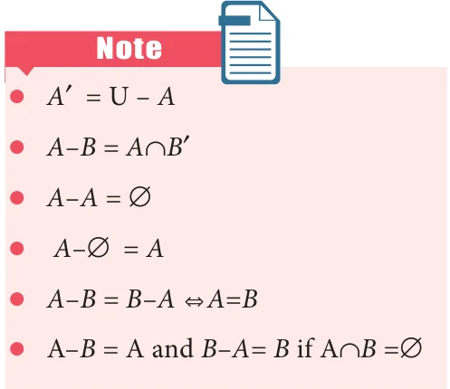</figure>
<div class="mathblock"><p>\(A - B ={ - 3\), -2, 1, \(4} - {0\), 1, 2, \(4} =\) { -3, \(-2} B - A = {0\), 1, 2, \(4} -\) { \(- 3\), -2, 1, \(4} =\) { 0, 2}</p></div>
<h3 id="s-1-5-5-symmetric-difference-of-sets">1.5.5 Symmetric Difference of Sets</h3>
<p>The symmetric difference of two sets A and B</p>
<p>is the set (A - B) \(\cup\) (B - A). It is denoted by AΔB. AΔB={ x : \(x \in A - B\) or \(x \in B -\) A}</p>
<figure class="fig"></figure>
<p>If \(A = {6\), 7, 8, 9} and B={8, 10, 12}, find AΔB.</p>
<h4 class="callout-h" id="s-solution">Solution</h4>
<div class="mathblock"><p>\(A - B = {6\), 7, \(9} B - A = {10\), 12} AΔB = (A - B) \(\cup\) (B - A) \(= {6\), 7, \(9} \cup {10,12}\) AΔB \(= {6\), 7, 9, 10, 12}.</p></div>
<figure class="fig side-fig"></figure>
<figure class="fig"></figure>
<p>Represent AΔB through Venn diagram.</p>
<h4 class="callout-h" id="s-solution">Solution</h4>
<p>AΔB= (A - B) \(\cup\) (B - A)</p>
<figure class="fig wide">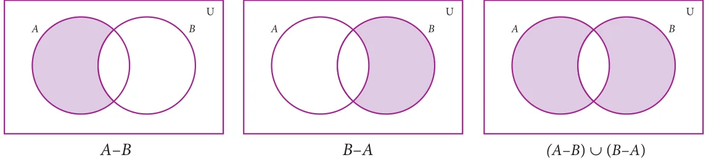</figure>
<p>\(- -\) (A - B) \(\cup\) (B - A) Fig. 1.16 Fig. 1.17 Fig. 1.18</p>
<figure class="fig wide"></figure>
<figure class="fig"></figure>
<figure class="fig side-fig">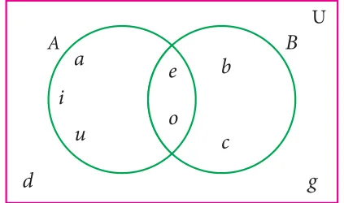</figure>
<p>From the given Venn diagram, write the elements of</p>
<ul class="qlist">
<li><span class="mk">(i)</span><span class="lt">A (ii) B (iii) \(A - B\) (iv) \(B - A\)</span></li>
<li><span class="mk">(v)</span><span class="lt">A ' (vi) B ' (vii) U</span></li>
</ul>
<p>Solution Fig. 1.19</p>
<ul class="qlist">
<li><span class="mk">(i)</span><span class="lt">\(A =\) {a, e, i, o, u} (ii) \(B =\) {b, c, e, o}</span></li>
<li><span class="mk">(iii)</span><span class="lt">\(A - B =\) {a, i, u} (iv) \(B - A =\) {b, c}</span></li>
<li><span class="mk">(v)</span><span class="lt">A ' = {b, c, d, g} (vi) B ' = {a, d, g, i, u}</span></li>
<li><span class="mk">(vii)</span><span class="lt">\(U =\) {a, b, c, d, e, g, i, o, u}</span></li>
</ul>
<figure class="fig"></figure>
<p>Draw Venn diagram and shade the region representing the following sets</p>
<ul class="qlist">
<li><span class="mk">(i)</span><span class="lt">A ' (ii) (A - B) ' (iii) (A \(\cup\) B) '</span></li>
</ul>
<h4 class="callout-h" id="s-solution">Solution</h4>
<figure class="fig">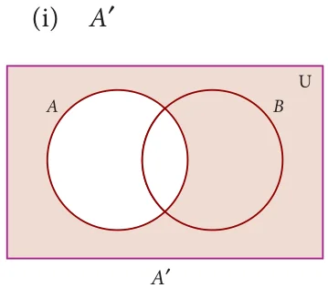</figure>
<p>' ( - ) '</p>
<figure class="fig"><figcaption>Fig. 1.20 Fig. 1.21 Fig. 1.22</figcaption></figure>
<p>' - ( - ) '</p>
<ul class="qlist">
<li><span class="mk">(iii)</span><span class="lt">(AUB) '</span></li>
</ul>
<figure class="fig">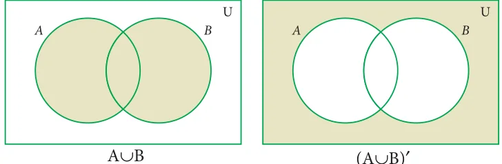</figure>
<p>\(\cup\) (A \(\cup\) ' Fig. 1.23 Fig. 1.24</p>
<figure class="fig"></figure>
<figure class="fig side-fig"></figure>
<ul class="qlist">
<li><span class="mk">1.</span><span class="lt">Using the given Venn diagram, write the elements</span></li>
</ul>
<p>of</p>
<ul class="qlist">
<li><span class="mk">(i)</span><span class="lt">A (ii) B (iii) \(A \cup B\) (iv) \(A \cap B\)</span></li>
<li><span class="mk">(v)</span><span class="lt">\(A - B\) (vi) \(B - A\) (vii) A ' (viii) B '</span></li>
<li><span class="mk">(ix)</span><span class="lt">U Fig. 1.25</span></li>
<li><span class="mk">2.</span><span class="lt">Find \(A \cup B\), \(A \cap B\), \(A - B\) and \(B - A\) for the following sets.</span></li>
<li><span class="mk">(i)</span><span class="lt">\(A = {2\), 6, 10, 14} and B={2, 5, 14, 16}</span></li>
<li><span class="mk">(ii)</span><span class="lt">\(A =\) {a, b, c, e, u} and B={a, e, i, o, u}</span></li>
<li><span class="mk">(iii)</span><span class="lt">\(A =\) {x : \(x \in N\), \(x \le 10}\) and B={x : \(x \in W\), \(x &lt; 6}\)</span></li>
<li><span class="mk">(iv)</span><span class="lt">\(A =\) Set of all letters in the word “mathematics” and</span></li>
</ul>
<p>\(B =\) Set of all letters in the word “geometry”</p>
<ul class="qlist">
<li><span class="mk">3.</span><span class="lt">If U={a, b, c, d, e, f, g, h}, A={b, d, f, h} and B={a, d, e, h}, find the following sets.</span></li>
<li><span class="mk">(i)</span><span class="lt">A ' (ii) B ' (iii) A ' \(\cup B\) ' (iv) A ' \(\cap B\) ' (v) (A \(\cup\) B) '</span></li>
<li><span class="mk">(vi)</span><span class="lt">(A \(\cap\) B) ' (vii) (A ' ) ' (viii) (B ' ) '</span></li>
<li><span class="mk">4.</span><span class="lt">Let U={0, 1, 2, 3, 4, 5, 6, 7}, A={1, 3, 5, 7} and B={0, 2, 3, 5, 7}, find the following sets.</span></li>
<li><span class="mk">(i)</span><span class="lt">A ' (ii) B ' (iii) A ' \(\cup B\) ' (iv)A ' \(\cap B\) ' ( v)(A \(\cup\) B) '</span></li>
<li><span class="mk">(vi)</span><span class="lt">(A \(\cap\) B) ' (vii) (A ' ) ' (viii) (B ' ) '</span></li>
<li><span class="mk">5.</span><span class="lt">Find the symmetric difference between the following sets.</span></li>
<li><span class="mk">(i)</span><span class="lt">\(P = {2\), 3, 5, 7, 11} and Q={1, 3, 5, 11}</span></li>
<li><span class="mk">(ii)</span><span class="lt">\(R =\) {l, m, n, o, p} and \(S =\) {j, l, n, q}</span></li>
<li><span class="mk">(iii)</span><span class="lt">\(X = {5\), 6, 7} and Y={5, 7, 9, 10}</span></li>
<li><span class="mk">6.</span><span class="lt">Using the set symbols, write down the expressions for the shaded region in the following</span></li>
</ul>
<figure class="fig wide"><figcaption>Fig. 1.26 Fig. 1.27 Fig. 1.28</figcaption></figure>
<ul class="qlist">
<li><span class="mk">7.</span><span class="lt">Let A and B be two overlapping sets and the universal set be U. Draw appropriate Venn</span></li>
</ul>
<p>diagram for each of the following,</p>
<ul class="qlist">
<li><span class="mk">(i)</span><span class="lt">\(A \cup B\) (ii) \(A \cap B\) (iii) (A \(\cap\) B) ' (iv) (B - A) ' (v) A ' \(\cup B\) ' (vi) A ' \(\cap B\) '</span></li>
<li><span class="mk">(vii)</span><span class="lt">What do you observe from the Venn diagram (iii) and (v)?</span></li>
</ul>
<h2 id="s-1-6-properties-of-set-operations">1.6 Properties of Set Operations</h2>
<p>It is an interesting investigation to find out if operations among sets (like union, intersection, etc.) follow mathematical properties such as Commutativity, Associativity, etc. We have seen numbers having many of these properties; whether sets also possess these, is to be explored.</p>
<p>We first take up the properties of set operations on union and intersection.</p>
<h3 id="s-1-6-1-commutative-property">1.6.1 Commutative Property</h3>
<figure class="fig side-fig"></figure>
<p>In set language, commutative situations can be seen when we perform operations. For example, we can look into the Union (and Intersection) of sets to find out if the operation is commutative.</p>
<p>Let \(A = {2,3,8 10\), } and \(B = {1 3 10 13\), , , } be two sets. Then, \(A \cup B = {1 2\), ,3,8 10 13, , } and</p>
<div class="mathblock"><p>\(B \cup A = {1 2\), ,3,8 10 13, , }</p></div>
<p>From the above, we see that \(A \cup B = B \cup A\). This is called Commutative property of union of sets.</p>
<p>Now, \(A \cap B = {3 10\), }and \(B \cap A = {3 10\), }. Then, we see that \(A \cap B = B \cap A\) .</p>
<p>This is called Commutative property of intersection of sets.</p>
<figure class="fig"></figure>
<figure class="fig"></figure>
<p>If \(A =\) {b e, , f,g} and \(B =\) {c e, ,g,h}, then verify the commutative</p>
<p>property of (i) union of sets (ii) intersection of sets.</p>
<figure class="fig">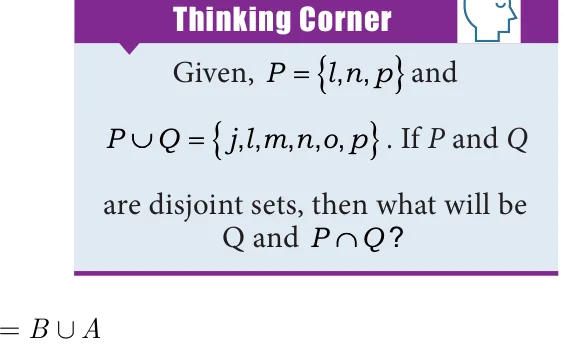</figure>
<h4 class="callout-h" id="s-solution">Solution</h4>
<p>Given, \(A =\) {b e, , f,g} and \(B =\) {c e, , , }</p>
<ul class="qlist">
<li><span class="mk">(i)</span><span class="lt">A È \(B =\) {b,c e, , f,g,h} ... (1)</span></li>
</ul>
<div class="mathblock"><p>B È \(A =\) {b,c e, , f,g,h} ... (2)</p></div>
<p>From (1) and (2) we have \(A \cup = \cup\) It is verified that union of sets is commutative.</p>
<ul class="qlist">
<li><span class="mk">(ii)</span><span class="lt">A Ç \(B =\) {e,g} ... (3)</span></li>
</ul>
<div class="mathblock"><p>B Ç \(A =\) {e,g} ... (4)</p></div>
<p>From (3) and (4) we get, \(A \cap B = B \cap A\) It is verified that intersection of sets is commutative.</p>
<h4 class="callout-h" id="s-note">Note</h4>
<p>Recall that subtraction on numbers is not commutative. Is set difference commutative? We expect that the set difference is not commutative as well. For instance, consider \(A =\) {a,b,c}, \(B =\) {b,c,d}. \(A - B =\) {a},</p>
<p>\(B - A =\) {d}; we see that \(A - B \ne B - A\).</p>
<h3 id="s-1-6-2-associative-property">1.6.2 Associative Property</h3>
<p>Now, we perform operations on union and intersection for three sets.</p>
<p>Let \(A =\) { \(- 1 0 1 2\), , , }, \(B =\) { \(- 3,0 2\), ,3} and \(C = {0 1 3\), , ,4} be three sets.</p>
<div class="mathblock"><p>Now, B ÈC \(= {-3,0 1 2\), , ,3,4}</p><p>A È (B ÈC) = { \(- 1 0 1 2\), , , } \(\cup -\) { 3,0 1 2, , ,3,4}</p><p>\(= {-3,-1 0 1 2\), , , ,3,4} ... (1)</p><p>Then, A È \(B = {-3,-1 0 1 2\), , , ,3}</p><p>(A È B) ÈC = { \(- - 3\), 1 0 1 2, , , \(,3} \cup {0 1 3\), , ,4}</p><p>\(= {-3,-1 0 1 2\), , , ,3,4} ... (2)</p></div>
<p>From (1) and (2), \(A \cup\) (B \(\cup\) C) = (A \(\cup\) B) \(\cup C\) . This is associative property of union among sets A, B, and C.</p>
<div class="mathblock"><p>Now, B ÇC \(= {0,3}\)</p><p>A Ç (B ÇC) = { \(- 1 0 1 2\), , , } \(\cap {0,3}\)</p><p>\(= {0}\) ... (3)</p><p>Then, A Ç \(B = {0 2\), }</p><p>(A Ç B) ÇC \(= {0 2\), } Ç {0 1 3, , ,4}</p><p>\(= {0}\) ... (4)</p></div>
<p>From (3) and (4), \(A \cap\) (B \(\cap\) C) = (A \(\cap\) B) \(\cap C\) . This is associative property of intersection among sets A, B and C.</p>
<p>Associative property: For any three sets A, B and C</p>
<ul class="qlist">
<li><span class="mk">(i)</span><span class="lt">\(A \cup\) (B \(\cup\) C) = (A \(\cup\) B) \(\cup C\) (ii)A \(\cap\) (B \(\cap\) C) = (A \(\cap\) B) \(\cap C\)</span></li>
</ul>
<p>Example 1.20 If \(A =\)  \(- \frac{113}{244} ,0\), , ,2, \(B =\) 0, \(\frac{135}{442}\) , ,2,  and \(C =\)  \(- \frac{115}{242}\) , ,1 2, , ,</p>
<p>then verify \(A \cap\) (B \(\cap\) C) = (A \(\cap\) B) \(\cap C\) .</p>
<h4 class="callout-h" id="s-solution">Solution</h4>
<h4 class="callout-h" id="s-note">Note</h4>
<p>Now, (B ÇC) =  \(\frac{15}{42}\)  , 2,  The set difference in general is A Ç (B ÇC) =  \(\frac{1}{4}\)  , 2 ... (1) not associativethat is, (A - B) \(- C^{1}A -\) (B - C). Then, A Ç \(B =\) 0, \(\frac{13}{44}\) , , 2 But, if the sets mutually disjoint then the set A, B and C are (A Ç B) ÇC =  \(\frac{1}{4}\)  , 2 ... (2) difference is associativethat is, (A - B) \(- C=A -\) (B - C).</p>
<p>From (1) and (2), it is verified that</p>
<p>(A Ç B) ÇC \(= A\) Ç (B ÇC)</p>
<figure class="fig"></figure>
<ul class="qlist">
<li><span class="mk">1.</span><span class="lt">If \(P = {1 2\), ,5,7,9}, \(Q = {2,3,5,9 11\), }, \(R = {3,4,5,7,9}\) and \(S = {2,3,4,5,8}\), then find</span></li>
<li><span class="mk">(i)</span><span class="lt">(P ÈQ) È R (ii) (P ÇQ) Ç S (iii) (Q Ç S) Ç R</span></li>
<li><span class="mk">2.</span><span class="lt">Test for the commutative property of union and intersection of the sets</span></li>
</ul>
<p>\(P =\) { x : x is a real number between 2 and 7} and \(Q =\) { x : x is a rational number between 2 and 7}.</p>
<ul class="qlist">
<li><span class="mk">3.</span><span class="lt">If \(A =\) {p,q,r,s}, \(B =\) {m,n,q,s,t} and \(C =\) {m,n,p,q,s}, then verify the associative property</span></li>
</ul>
<p>of union of sets.</p>
<ul class="qlist">
<li><span class="mk">4.</span><span class="lt">Verify the associative property of intersection of sets for \(A =\) { \(- 11\), 2, 5,7},</span></li>
</ul>
<div class="mathblock"><p>\(B =\) { 3, 5,6 13, } and \(C =\) { 2, 3, 5, 9}.</p></div>
<ul class="qlist">
<li><span class="mk">5.</span><span class="lt">If A={x : \(x = 2\) , \(n \in W\) and n&lt;4}, \(B =\) {x : \(x = 2n\), \(n \in\)  and n £ 4} and</span></li>
</ul>
<p>\(C = {0 1 2\), , ,5,6}, then verify the associative property of intersection of sets.</p>
<h3 id="s-1-6-3-distributive-property">1.6.3 Distributive Property</h3>
<p>In lower classes, we have studied distributive property of multiplication over addition on numbers. That is, \(a \times\) (b \(+c) =\) (a \(\times\) b) \(+(a \times\) c). In the same way we can define distributive properties on sets.</p>
<p>Distributive property: For any three sets A, B and C</p>
<ul class="qlist">
<li><span class="mk">(i)</span><span class="lt">\(A \cap\) (B \(\cup\) C) = (A \(\cap\) B) \(\cup\) (A \(\cap\) C) [Intersection over union]</span></li>
<li><span class="mk">(ii)</span><span class="lt">\(A \cup\) (B \(\cap\) C) = (A \(\cup\) B) \(\cap\) (A \(\cup\) C) [Union over intersection]</span></li>
</ul>
<h4 class="callout-h" id="s-example-1-21">Example 1.21</h4>
<p>If \(A = {0 2\), \(,4,6,8},B ={x\) : x is a prime number and \(x &lt; 11}\) and</p>
<p>\(C =\) {x : x Î N and \(5 \le x &lt; 9}\) then verify \(A \cup\) (B \(\cap\) C) = (A \(\cup\) B) \(\cap\) (A \(\cup\) C).</p>
<h4 class="callout-h" id="s-solution">Solution</h4>
<p>Given \(A = {0 2\), ,4,6,8}, \(B = {2,3,5,7}\) and \(C = {5,6,7,8}\) First, we find B ÇC \(= {5,7}\) , \(A \cup\) (B \(\cap\) C) \(= {0 2\), ,4,5, 6,7,8} ... (1)</p>
<div class="mathblock"><p>Next, A È \(B = {0 2\), ,3,4,5,6,7,8}, A ÈC \(= {0 2\), ,4,5,6,7,8} Then, (A \(\cup\) B) \(\cap\) (A \(\cup\) C) \(= {0 2\), ,4,5,6,7,8} ... (2)</p></div>
<p>From (1) and (2), it is verified that \(A \cup\) (B \(\cap\) C) = (A \(\cup\) B) \(\cap\) (A \(\cup\) C).</p>
<figure class="fig"></figure>
<p>Verify \(A \cap\) (B \(\cup\) C) = (A \(\cap\) B) \(\cup\) (A \(\cap\) C) using Venn diagrams.</p>
<h4 class="callout-h" id="s-solution">Solution</h4>
<figure class="fig wide"><figcaption>Fig.1.29</figcaption></figure>
<aside class="sidenote"><p>.... (1)</p><p>.... (2)</p></aside>
<p>From (1) and (2), \(A \cap\) (B \(\cup\) C) = (A \(\cap\) B) \(\cup\) (A \(\cap\) C) is verified.</p>
<h2 id="s-1-7-de-morgan-s-laws">1.7 De Morgan’s Laws</h2>
<p>Augustus De Morgan \((1806 - 1871)\) was a British mathematician.</p>
<figure class="fig side-fig">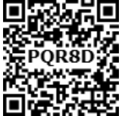</figure>
<p>He was born on 27 June 1806 in Madurai, Tamilnadu, India. His father was posted in India by the East India Company. When he was seven months old, his family moved back to England. De Morgan was educated at Trinity College, Cambridge, London. He formulated laws for set difference and complementation. These are called De Morgan’s laws.</p>
<p>th</p>
<h3 id="s-1-7-1-de-morgan-s-laws-for-set-difference">1.7.1 De Morgan’s Laws for Set Difference</h3>
<p>These laws relate the set operations union, intersection and set difference.</p>
<p>Let us consider three sets A, B and C as \(A =\) { \(- - 5\), 2 1 3, , }, \(B =\) { \(- - 3\), 2,0,3,5} and</p>
<div class="mathblock"><p>\(C =\) { \(- - 2\), 1 0, ,4,5}.</p><p>Now, B ÈC \(= {-3,-2,-1 0\), ,3,4,5}</p><p>\(A -\) (B \(\cup\) C) = { \(- 5 1\), } ... (1)</p></div>
<p>Then, \(A - B = {-5 1\), }and \(A - C =\) { \(- 5 1 3\), , }</p>
<div class="mathblock"><p>(A - B) \(\cup\) (A - C) = { \(- 5 1 3\), , } ... (2) (A - B) \(\cap\) (A - C) = { \(- 5 1\), } ... (3)</p></div>
<p>From (1) and (2), we see that</p>
<p>\(A -\) (B \(\cup\) C) \(\ne\) (A - B) \(\cup\) (A - C)</p>
<figure class="fig side-fig">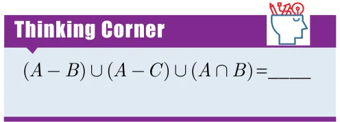</figure>
<p>But note that from (1) and (3), we see that</p>
<p>\(A -\) (B \(\cup\) C) = (A - B) \(\cap\) (A - C)</p>
<div class="mathblock"><p>Now, B ÇC = { \(- 2,0,5}\)</p><p>\(A -\) (B \(\cap\) C) \(={ - 5 1 3\), , } ... (4)</p></div>
<p>From (3) and (4) we see that</p>
<p>\(A -\) (B \(\cap\) C) \(\ne\) (A - B) \(\cap\) (A - C)</p>
<p>But note that from (2) and (4), we get \(A -\) (B \(\cap\) C) = (A - B) \(\cup\) (A - C)</p>
<figure class="fig wide">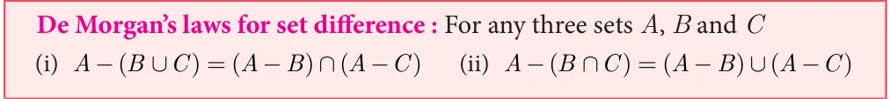</figure>
<figure class="fig"></figure>
<p>Verify \(A -\) (B \(\cup\) C) = (A - B) \(\cap\) (A - C) using Venn diagrams.</p>
<h4 class="callout-h" id="s-solution">Solution</h4>
<figure class="fig wide"><figcaption>Fig.1.30</figcaption></figure>
<aside class="sidenote"><p>.... (1)</p><p>.... (2)</p></aside>
<p>From (1) and (2), we get \(A -\) (B \(\cup\) C) = (A - B) \(\cap\) (A - C). Hence it is verified.</p>
<figure class="fig"></figure>
<p>If \(P =\) {x : xÎ W and \(0 &lt; x &lt; 10}\), \(Q =\) {x : \(x = 2n+1\), nÎ W and n&lt;5}</p>
<p>and = { , , ,7 11 13, , }, then verify \(P -\) (Q \(\cap\) R) = (P - Q) \(\cup\) (P - R)</p>
<p>Solution The roster form of sets P, Q and R are</p>
<div class="mathblock"><p>\(P = {1 2\), ,3,4,5,6,7,8,9}, \(Q = {1 3\), ,5,7,9}</p></div>
<p>Finding the elements of set Q and \(R = {2,3,5,7 11 13\), , } Given, \(x = 2n + 1\)</p>
<div class="mathblock"><p>\(n = 0 \to x = 2(0) +1 = 0 +1 = 1\)</p></div>
<p>First, we find (Q Ç R) \(= {3,5,7} n = 1 \to x = 2 1(\) ) \(+1 = 2 +1 = 3\)</p>
<div class="mathblock"><p>Then, \(P -\) (Q \(\cap\) R) \(= {1 2\), ,4,6,8,9} ... \((1) n = 2 \to x = 2 2(\) ) \(+1 = 4 +1 = 5 n = 3 \to x = 2(3) +1 = 6 +1 = 7\)</p></div>
<p>Next, \(P - Q = {2,4,6,8}\) and \(n = 4 \to x = 2(4) +1 = 8 +1 = 9\)</p>
<p>\(P - R = {1 4\), ,6,8,9} Therefore, x takes values such as and so, (P - Q) \(\cup\) (P - R) \(= {1 2\), ,4,6,8,9} ... (2) 1, 3, 5, 7 and 9. Hence from (1) and (2), it is verified that \(P -\) (Q \(\cap\) R) = (P - Q) \(\cup\) (P - R).</p>
<h3 id="s-1-7-2-de-morgan-s-laws-for-complementation">1.7.2 De Morgan’s Laws for Complementation</h3>
<p>These laws relate the set operations on union, intersection and complementation. Let us consider universal set U={0,1,2,3,4,5,6}, A={1,3,5} and B={0,3,4,5}.</p>
<figure class="fig side-fig"></figure>
<div class="mathblock"><p>Now, A È \(B = {0 1 3\), , ,4,5}</p><p>Then, (A \(\cup\) B) ' \(= {2,6}\) .....( )</p></div>
<p>Next, A¢ \(= {0 2\), ,4,6} and B¢ = { ,1 2,6}</p>
<div class="mathblock"><p>Then, A ' \(\cap B\) ' \(= {2,6}\) .....( )</p></div>
<p>From (1) and (2), we get (A \(\cup\) B) ' \(= A\) ' \(\cap B\) '</p>
<figure class="fig side-fig"></figure>
<div class="mathblock"><p>Also, \(A \cap B = {3,5}\),</p><p>(A \(\cap\) B) ' \(= {0 1 2\), , ,4,6} .....( )</p><p>A ' \(= {0 2\), ,4,6} andB ' \(= {1 2\), ,6} A ' \(\cup B\) ' \(= {0 1 2\), , ,4,6} .....( )</p></div>
<p>From (3) and (4), we get ( \(\cap\) ) ' = ' \(\cup\) '</p>
<figure class="fig wide"></figure>
<figure class="fig"></figure>
<p>Verify (A \(\cup\) B) ' \(= A\) ' \(\cap B\) ' using Venn diagrams.</p>
<h4 class="callout-h" id="s-solution">Solution</h4>
<figure class="fig"></figure>
<figure class="fig">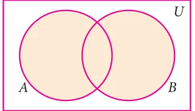</figure>
<aside class="sidenote"><p>.... (1)</p></aside>
<p>A È B (A \(\cup\) B) '</p>
<figure class="fig wide"><figcaption>Fig.1.31</figcaption></figure>
<aside class="sidenote"><p>.... (2)</p></aside>
<p>¢ ¢ ' \(\cap\) '</p>
<p>From (1) and (2), it is verified that ( \(\cup\) ) ' = ' \(\cap\) '</p>
<figure class="fig wide"></figure>
<p>If = { : \(\in\) , \(- \le \le\) },</p>
<div class="mathblock"><p>= { : \(= +\) , \(\in\) , \(- \le \le\) }, = { : \(= +\) , \(\in\) , \(- 1 \le q &lt; 4}\),</p></div>
<p>verify De Morgan’s laws for complementation.</p>
<figure class="fig side-fig"></figure>
<h4 class="callout-h" id="s-solution">Solution</h4>
<div class="mathblock"><p>Given \(U =\) { \(- - 2\), 1 0 1 2, , , ,3,4,5,6,7,8,9 10, },</p><p>\(A =\) { \(- 1 1 3\), , ,5,7,9} and \(B =\) { \(- 2 1 4\), , ,7 10, }</p></div>
<p>Law (i) (A \(\cup\) B) ' =A ' \(\cap B\) '</p>
<div class="mathblock"><p>Now, A È \(B = {-2,-1 1 3\), , ,4,5,7,9 10, }</p><p>(A \(\cup\) B) ' \(= {0 2\), ,6,8} ..... (1)</p></div>
<p>Then, A¢ \(= {-2,0 2\), ,4,6,8 10, } and B¢ \(= {-1 0 2\), , ,3,5,6,8,9}</p>
<div class="mathblock"><p>A ' \(\cap B\) ' \(= {0 2\), ,6,8} ..... ( )</p></div>
<figure class="fig side-fig">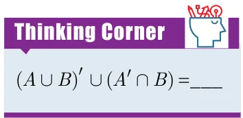</figure>
<p>From (1) and (2), it is verified that (A \(\cup\) B) ' \(= A\) ' \(\cap B\) '</p>
<p>Law (ii) (A \(\cap\) B) ' \(= A\) ' \(\cup B\) '</p>
<div class="mathblock"><p>Now, A Ç \(B =\) { ,1 7}</p><p>(A \(\cap\) B) ' \(= {-2,-1 0 2\), , ,3,4,5,6,8,9 10, } ..... (3)</p><p>Then, A ' \(\cup B\) ' \(= {-2,-1 0 2\), , ,3,4,5,6,8,9 10, } ..... (4)</p></div>
<p>From (3) and (4), it is verified that (A \(\cap\) B) ' \(= A\) ' \(\cup B\) '</p>
<figure class="fig"></figure>
<ul class="qlist">
<li><span class="mk">1.</span><span class="lt">Using the adjacent Venn diagram, find the following sets:</span></li>
</ul>
<figure class="fig side-fig"></figure>
<ul class="qlist">
<li><span class="mk">(i)</span><span class="lt">\(A - B\) (ii) B -C (iii) A ' \(\cup B\) '</span></li>
<li><span class="mk">(iv)</span><span class="lt">A ' \(\cap B\) ' (v) (B \(\cup\) C) '</span></li>
<li><span class="mk">(vi)</span><span class="lt">\(A -\) (B \(\cup\) C) (vii) \(A -\) (B \(\cap\) C)</span></li>
<li><span class="mk">2.</span><span class="lt">If \(K =\) {a,b,d,e, f}, \(L =\) {b,c,d,g} and \(M =\) {a,b,c,d,h}, then find the following:</span></li>
<li><span class="mk">(i)</span><span class="lt">\(K \cup\) (L \(\cap\) M) (ii) \(K \cap\) (L \(\cup\) M)</span></li>
<li><span class="mk">(iii)</span><span class="lt">(K \(\cup\) L) \(\cap\) (K \(\cup\) M) (iv) (K \(\cap\) L) \(\cup\) (K \(\cap\) M)</span></li>
</ul>
<p>and verify distributive laws.</p>
<ul class="qlist">
<li><span class="mk">3.</span><span class="lt">If \(A =\) {x : \(x \in\) , \(- &lt;2 x \le 4}\), B={x : x W , \(x \le 5}\), \(C =\) { \(- 4\), \(- 1 0 2\), , ,3,4}, then</span></li>
</ul>
<p>verify \(A \cup\) (B \(\cap\) C) = (A \(\cup\) B) \(\cap\) (A \(\cup\) C).</p>
<ul class="qlist">
<li><span class="mk">4.</span><span class="lt">Verify \(A \cup\) (B \(\cap\) C) = (A \(\cup\) B) \(\cap\) (A \(\cup\) C) using Venn diagrams.</span></li>
<li><span class="mk">5.</span><span class="lt">If \(A =\) {b,c e, ,g,h} , \(B =\) {a,c,d,g,i} and \(C =\) {a,d,e,g,h}, then show that</span></li>
</ul>
<p>\(A -\) (B \(\cap\) C) = (A - B) \(\cup\) (A - C).</p>
<ul class="qlist">
<li><span class="mk">6.</span><span class="lt">If \(A =\) {x : \(x = 6n\), nÎW and n&lt;6}, \(B =\) {x : \(x = 2n\), n ÎN and 2&lt;n£9} and</span></li>
</ul>
<p>\(C =\) {x : \(x = 3n\), n ÎN and 4£n&lt;10}, then show that \(A -\) (B \(\cap\) C) = (A - B) \(\cup\) (A - C)</p>
<ul class="qlist">
<li><span class="mk">7.</span><span class="lt">If \(A =\) { \(- 2,0,1,3,5}\), \(B =\) { \(- 1,0,2,5,6}\) and \(C =\) { \(- 1,2,5,6,7}\), then show that \(A -\) (B \(\cup\) C)</span></li>
</ul>
<p>= (A - B) \(\cap\) (A - C).</p>
<ul class="qlist">
<li><span class="mk">8.</span><span class="lt">If \(A =\) {y : \(y = \frac{a+ 1}{2}\) , aÎW and a £ 5}, \(B =\) {y : \(y = \frac{2n -1}{2}\) , nÎW and \(n &lt;\) 5}and</span></li>
</ul>
<p>\(C =\)  \(- - 1\), \(\frac{13}{22} ,1\), ,2, then show that \(A -\) (B \(\cup\) C) = (A - B) \(\cap\) (A - C).</p>
<ul class="qlist">
<li><span class="mk">9.</span><span class="lt">Verify \(A -\) (B \(\cap\) C) = (A - B) \(\cup\) (A - C) using Venn diagrams.</span></li>
<li><span class="mk">10.</span><span class="lt">If \(U = {4,7,8,10,11,12,15,16}\), A={7,8,11,12} and \(B = {4,8,12,15}\) then verify</span></li>
</ul>
<p>De Morgan’s Laws for complementation.</p>
<ul class="qlist">
<li><span class="mk">11.</span><span class="lt">Verify (A \(\cap\) B) ' \(= A\) ' \(\cup B\) ' using Venn diagrams.</span></li>
</ul>
<h2 id="s-1-8-application-on-cardinality-of-sets">1.8 Application on Cardinality of Sets:</h2>
<p>We have learnt about the union, intersection, complement and difference of sets. Now we will go through some practical problems on sets related to everyday life.</p>
<h3 id="s-results">Results :</h3>
<p>If A and B are two finite sets, then</p>
<ul class="qlist">
<li><span class="mk">(i)</span><span class="lt">n(A \(\cup\) B) \(= n(A)+n(B) -\) n(A \(\cap\) B)</span></li>
<li><span class="mk">(ii)</span><span class="lt">n(A - B) = n(A) - n(A \(\cap\) B)</span></li>
<li><span class="mk">(iii)</span><span class="lt">n(B - A) = n(B) - n(A \(\cap\) B)</span></li>
<li><span class="mk">(iv)</span><span class="lt">n(A ' ) = n(U) - n(A)</span></li>
</ul>
<p class="caption">Fig. 1.32</p>
<h4 class="callout-h" id="s-note">Note</h4>
<p>From the above results we may get,</p>
<p>� n(A \(\cap\) B) \(= n(A)+n(B) -\) n(A \(\cup\) B) � n(U) \(= n(A)+n(A\) ' ) z If A and B are disjoint sets then, n(A \(\cup\) B) \(= n(A)+n(B)\).</p>
<h4 class="callout-h" id="s-example-1-27">Example 1.27</h4>
<p>From the Venn diagram, verify that n(A \(\cup\) B) \(= n(A)+n(B) -\) n(A \(\cap\) B) Solution From the venn diagram,</p>
<figure class="fig side-fig">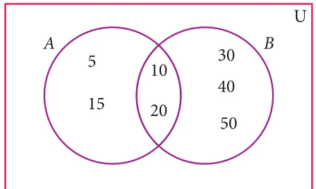</figure>
<div class="mathblock"><p>\(A = {5\), 10, 15, \(20} B = {10\), 20, 30, 40, 50,}</p><p>Then \(A \cup B = {5\), 10, 15, 20, 30, 40, 50}</p><p>\(A \cap B = {10\), 20}</p><p>n(A) \(= 4\), n(B) \(= 5\), n(A \(\cup\) B) \(= 7\), n(A \(\cap\) B) \(= 2\) n(A \(\cup\) B) \(= 7\) " (1) Fig. 1.33</p><p>\(n(A)+n(B) -\) n(A \(\cap\) B) \(= 4+5 - 2\)</p><p>=7 " (2)</p></div>
<p>From (1) and (2), n(A \(\cup\) B) \(= n(A)+n(B) -\) n(A \(\cap\) B).</p>
<figure class="fig"></figure>
<p>If n(A) \(= 36\), n(B) \(= 10\), n(A \(\cup B)=40\), and n(A ' )=27 find n(U) and n(A \(\cap\) B).</p>
<div class="mathblock"><p>Solution n(A) \(= 36\), n(B) =10, n(A \(\cup B)=40\), n(A ' )=27</p></div>
<ul class="qlist">
<li><span class="mk">(i)</span><span class="lt">n(U) \(= n(A)+n(A\) ' ) \(= 36+27 = 63\)</span></li>
<li><span class="mk">(ii)</span><span class="lt">n(A \(\cap\) B) \(= n(A)+n(B) -\) n(A \(\cup\) B) \(= 36+10-40 = 46-40 = 6\)</span></li>
</ul>
<figure class="fig wide"></figure>
<figure class="fig"></figure>
<p>Let A={b, d, e, g, h} and \(B =\) {a, e, c, h}. Verify that n(A - B) = n(A) - n(A \(\cap\) B).</p>
<h4 class="callout-h" id="s-solution">Solution</h4>
<p>\(A =\) {b, d, e, g, h}, \(B =\) {a, e, c, h}</p>
<p>\(A - B =\) {b, d, g}</p>
<div class="mathblock"><p>n(A - B) \(= 3\) ... (1)</p></div>
<p>\(A \cap B =\) {e, h}</p>
<div class="mathblock"><p>n(A \(\cap\) B) \(= 2\) , n(A) \(= 5\)</p><p>n(A) - n(A \(\cap\) B) \(= 5-2\)</p><p>\(= 3\) ... (2)</p></div>
<p>Form (1) and (2) we get n(A - B) = n(A) - n(A \(\cap\) B).</p>
<figure class="fig"></figure>
<p>In a school, all students play either Hockey or Cricket or both. 300 play Hockey, 250 play Cricket and 110 play both games. Find</p>
<ul class="qlist">
<li><span class="mk">(i)</span><span class="lt">the number of students who play only Hockey.</span></li>
<li><span class="mk">(ii)</span><span class="lt">the number of students who play only Cricket.</span></li>
<li><span class="mk">(iii)</span><span class="lt">the total number of students in the School.</span></li>
</ul>
<h4 class="callout-h" id="s-solution">Solution:</h4>
<p>Let H be the set of all students who play Hockey and C be the set of all students who play Cricket.</p>
<figure class="fig side-fig">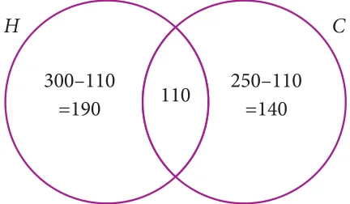</figure>
<p>Then n(H) \(= 300\), n(C) \(= 250\) and n(H \(\cap\) C) \(= 110\)</p>
<p>Using Venn diagram,</p>
<p>From the Venn diagram,</p>
<ul class="qlist">
<li><span class="mk">(i)</span><span class="lt">The number of students who play only Hockey \(= 190\) Fig. 1.34</span></li>
<li><span class="mk">(ii)</span><span class="lt">The number of students who play only Cricket \(= 140\)</span></li>
<li><span class="mk">(iii)</span><span class="lt">The total number of students in the school \(= 190+110+140 =440\)</span></li>
</ul>
<p>Aliter</p>
<ul class="qlist">
<li><span class="mk">(i)</span><span class="lt">The number of students who play only Hockey</span></li>
</ul>
<p>n(H \(- C\) ) = n(H) - n(H \(\cap\) C)</p>
<div class="mathblock"><p>\(= 300 - 110 = 190\)</p></div>
<ul class="qlist">
<li><span class="mk">(ii)</span><span class="lt">The number of students who play only Cricket</span></li>
</ul>
<p>n(C \(- H\) ) = n(C) - n(H \(\cap\) C)</p>
<div class="mathblock"><p>\(= 250 - 110 = 140\)</p></div>
<ul class="qlist">
<li><span class="mk">(iii)</span><span class="lt">The total number of students in the school</span></li>
</ul>
<figure class="fig side-fig"></figure>
<p>n(HUC) = n(H) + n(C) - n(H \(\cap\) C)</p>
<div class="mathblock"><p>\(= 300+250 - 110 = 440\)</p></div>
<figure class="fig"></figure>
<p>In a party of 60 people, 35 had Vanilla ice cream, 30 had Chocolate ice</p>
<p>cream. All the people had at least one ice cream. Then how many of them had,</p>
<ul class="qlist">
<li><span class="mk">(i)</span><span class="lt">both Vanilla and Chocolate ice cream.</span></li>
<li><span class="mk">(ii)</span><span class="lt">only Vanilla ice cream.</span></li>
<li><span class="mk">(iii)</span><span class="lt">only Chocolate ice cream.</span></li>
</ul>
<h4 class="callout-h" id="s-solution">Solution :</h4>
<p>Let V be the set of people who had Vanilla ice cream and C be the set of people who</p>
<p>had Chocolate ice cream.</p>
<div class="mathblock"><p>Then n(V) \(= 35\), n(C) \(= 30\), n(V,C) \(= 60\),</p></div>
<p>Let x be the number of people who had both ice creams. From the Venn diagram</p>
<figure class="fig side-fig">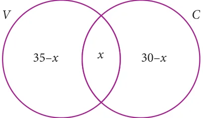</figure>
<div class="mathblock"><p>\(35 - x + x +30 - x = 60\)</p><p>\(65 - x = 60 x= 5\)</p></div>
<p>Hence 5 people had both ice creams.</p>
<ul class="qlist">
<li><span class="mk">(i)</span><span class="lt">Number of people who had only Vanilla ice Fig. 1.35</span></li>
</ul>
<div class="mathblock"><p>cream \(= 35 - x = 35 - 5 = 30\)</p></div>
<ul class="qlist">
<li><span class="mk">(ii)</span><span class="lt">Number of people who had only Chocolate ice cream \(= 30 - x\)</span></li>
</ul>
<div class="mathblock"><p>\(= 30 - 5 = 25\)</p></div>
<p>We have learnt to solve problems involving two sets using the formula n(A \(\cup\) B) = n(A) + n(B) - n(A \(\cap\) B). Suppose we have three sets, we can apply this formula to get a similar formula for three sets.</p>
<figure class="fig wide"></figure>
<h4 class="callout-h" id="s-note">Note</h4>
<p>Let us consider the following results which will be useful in solving problems using Venn diagram. Let three sets A, B and C represent the students. From the Venn diagram, Number of students in only set \(A = a\), only set \(B = b\), only set \(C = c\) . z Total number of students in only one set= (a +b +c) A B</p>
<p>z Total number of students in only two sets= (x \(+ y +\) z)</p>
<p>z Number of students exactly in three sets= \(r z ^{y} z\) Total number of students in atleast two sets (two or c more sets) \(= x + y +z + r _{C} z\) Total number of students in 3 sets \(= Fig.1.36\)</p>
<p>(a \(+b +c + x + y + z +\) r)</p>
<figure class="fig"></figure>
<p>In a college, 240 students play cricket, 180 students play football, 164 students play hockey, 42 play both cricket and football, 38 play both football and hockey, 40 play both cricket and hockey and 16 play all the three games. If each student participate in atleast one game, then find (i) the number of students in the college (ii) the number of students who play only one game. Solution Let C, F and H represent sets of students who play Cricket, Football and Hockey respectively.</p>
<div class="mathblock"><p>Then , n C( ) \(= 240\), n(F) \(= 180\), n(H) \(= 164\), n C( \(\cap\) F) \(= 42\), n(F \(\cap\) H) \(= 38\), n C( \(\cap\) H) \(= 40\), n C( \(\cap F \cap\) H) \(= 16\).</p></div>
<figure class="fig side-fig">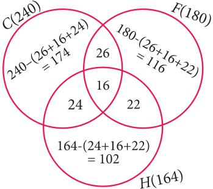</figure>
<p>Let us represent the given data in a Venn diagram.</p>
<ul class="qlist">
<li><span class="mk">(i)</span><span class="lt">The number of students in the college</span></li>
</ul>
<div class="mathblock"><p>\(= 174+26+116+22+102+24+16 = 480\)</p></div>
<ul class="qlist">
<li><span class="mk">(ii)</span><span class="lt">The number of students who play only one game</span></li>
</ul>
<p class="caption">Fig.1.37</p>
<div class="mathblock"><p>\(= 174+116+102 = 392\)</p></div>
<figure class="fig"></figure>
<p>In a residential area with 600 families \(\frac{3}{5}\) owned scooter, \(\frac{1}{3}\) owned car, \(\frac{1}{4}\) owned bicycle, 120 families owned scooter and car, 86 owned car and bicylce while 90 families owned scooter and bicylce. If \(\frac{2}{15}\) of families owned all the three types of vehicles, then find (i) the number of families owned atleast two types of vehicle. (ii) the number of families owned no vehicle. Solution Let S, C and B represent sets of families who owned Scooter, Car and Bicycle respectively.</p>
<figure class="fig side-fig"></figure>
<div class="mathblock"><p>Given, n(U) \(= 600\) n(S) \(= \frac{3}{5} \times 600 = 360 n\) C( ) \(= \frac{1}{3} \times 600 = 200\) n(B) \(= \frac{1}{4} \times 600 = 150\)</p><p>\(\frac{2}{15}\)</p><p>n(S \(\cap C \cap\) B) \(= \times 600 = 80\)</p></div>
<p>From Venn diagram,</p>
<ul class="qlist">
<li><span class="mk">(i)</span><span class="lt">The number of families owned atleast two</span></li>
</ul>
<p>types of vehicles \(= 40+6+10+80 = 136\) The number of families owned no vehicle \(= 600 -\) (owned atleast one vehicle)</p>
<p class="caption">Fig.1.38</p>
<figure class="fig">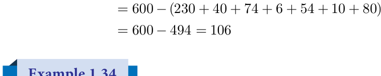</figure>
<p>\(= -\) ( \(+ + + + + +\) ) \(= - =\)</p>
<p>In a group of 100 students, 85 students speak Tamil, 40 students speak English, 20 students speak French, 32 speak Tamil and English, 13 speak English and French and 10 speak Tamil and French. If each student knows atleast any one of these languages, then find the number of students who speak all these three languages. Solution Let A, B and C represent sets of students who speak Tamil, English and French respectively.</p>
<div class="mathblock"><p>Given, n(A È B ÈC) \(= 100\), n(A) \(= 85\), n(B) \(= 40\), n(C) \(= 20\), n(A \(\cap\) B) \(= 32\), n(B \(\cap\) C) \(= 13\), n(A \(\cap\) C) \(= 10\).</p></div>
<p>We know that,</p>
<p>n(A È B ÈC)= n(A) + n(B) + n(C) - n(A \(\cap\) B) - n(B \(\cap\) C) - n(A \(\cap\) C) + n(A \(\cap B \cap\) C)</p>
<div class="mathblock"><p>\(100 = 85 + 40 + 20 - 32 - 13 - 10 +\) n(A \(\cap B \cap\) C) Then, n(A \(\cap B \cap\) C) \(= 100 - 90 = 10\)</p></div>
<p>Therefore, 10 students speak all the three languages.</p>
<figure class="fig"></figure>
<p>A survey was conducted among 200 magazine subscribers of three different magazines A, B and C. It was found that 75 members do not subscribe magazine A, 100 members do not subscribe magazine B, 50 members do not subscribe magazine C and 125 subscribe atleast two of the three magazines. Find</p>
<ul class="qlist">
<li><span class="mk">(i)</span><span class="lt">Number of members who subscribe exactly two magazines.</span></li>
<li><span class="mk">(ii)</span><span class="lt">Number of members who subscribe only one magazine.</span></li>
</ul>
<h4 class="callout-h" id="s-solution">Solution</h4>
<figure class="fig side-fig">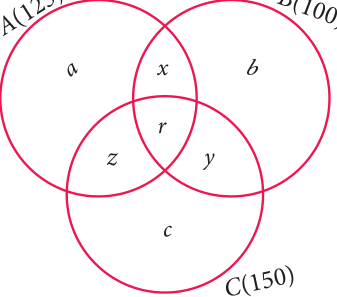</figure>
<p>Total number of subscribers \(= 200\)</p>
<figure class="fig">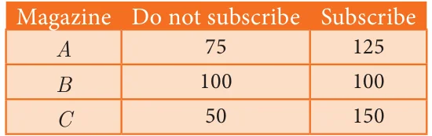</figure>
<p>From the Venn diagram, Fig.1.39 Number of members who subscribe only one magazine \(= + +\) Number of members who subscribe exactly two magazines \(= + +\) and 125 members subscribe atleast two magazines.</p>
<div class="mathblock"><p>That is, \(x + y + z + r = 125\) ... (1) Now, n(A \(\cup B \cup\) C) \(= 200\) , n(A) \(= 125\), n(B) \(= 100\), n(C) \(= 150\), n(AÇB) \(= x + r\)</p></div>
<p>n(BÇC) \(= y + r\), n(AÇC) \(= z + r\), n(AÇBÇC) \(= r\) We know that, n(AÈBÈC) \(= n(A)+ n(B)+\) n(C) - n(AÇB) - n(BÇC) - n(AÇC)+ n(AÇBÇC)</p>
<div class="mathblock"><p>\(200 = 125+100+150 - x - r - y - r - z - r+r\)</p><p>\(= 375 - (x+y+z+r) - r\)</p><p>\(= 375 - 125 - r\)  \(x + y + z + r\) =125</p><p>\(200 = 250 - r\) Þ \(r = 50\) From \((1) x + y + z + 50 = 125\) We get, \(x + y + z = 75\)</p></div>
<p>Therefore, number of members who subscribe exactly two magazines \(= 75\). From Venn diagram,</p>
<div class="mathblock"><p>(a \(+b +c) +(x + y + z +\) r) \(= 200\) ... (2)</p></div>
<p>substitute (1) in (2),</p>
<div class="mathblock"><p>\(a +b +c + 125 = 200\)</p><p>\(a +b +c = 75\)</p></div>
<p>Therefore, number of members who subscribe only one magazine \(= 75\).</p>
<figure class="fig"></figure>
<ul class="qlist">
<li><span class="mk">1.</span><span class="lt">(i) If n(A) \(= 25\), n(B) \(= 40\), n(A \(\cup\) B) \(= 50\) and n(B ' ) \(= 25\) , find n(A \(\cap\) B) and n(U).</span></li>
<li><span class="mk">(ii)</span><span class="lt">If n(A) \(= 300\), n(A \(\cup\) B) \(= 500\), n(A \(\cap\) B) \(= 50\) and n(B ' ) \(= 350\), find n(B) and n(U).</span></li>
<li><span class="mk">2.</span><span class="lt">If \(U =\) {x : \(x \in N\), \(x \le 10}\), \(A = {2,3,4,8,10}\) and \(B = {1,2,5,8,10}\), then verify that</span></li>
</ul>
<p>n(A \(\cup\) B) = n(A) + n(B) - n(A \(\cap\) B)</p>
<ul class="qlist">
<li><span class="mk">3.</span><span class="lt">Verify n(A \(\cup B \cup\) C) = n(A) + n(B) \(+ n\) C( ) - n(A \(\cap\) B) - n(B \(\cap\) C) - n(A \(\cap\) C)</span></li>
</ul>
<p>\(+n(A \cap B \cap\) C) for the following sets.</p>
<ul class="qlist">
<li><span class="mk">(i)</span><span class="lt">\(A =\) {a,c e, , f,h}, \(B =\) {c,d,e, f} and \(C =\) {a,b,c, f}</span></li>
<li><span class="mk">(ii)</span><span class="lt">\(A = {1 3\), ,5}, \(B = {2,3,5,6}\) and \(C = {1 5\), ,6,7}</span></li>
<li><span class="mk">4.</span><span class="lt">In a class, all students take part in either music or drama or both. 25 students take part</span></li>
</ul>
<p>in music, 30 students take part in drama and 8 students take part in both music and drama. Find</p>
<ul class="qlist">
<li><span class="mk">(i)</span><span class="lt">The number of students who take part in only music.</span></li>
<li><span class="mk">(ii)</span><span class="lt">The number of students who take part in only drama.</span></li>
<li><span class="mk">(iii)</span><span class="lt">The total number of students in the class.</span></li>
<li><span class="mk">5.</span><span class="lt">In a party of 45 people, each one likes tea or coffee or both. 35 people like tea and</span></li>
</ul>
<p>20 people like coffee. Find the number of people who</p>
<ul class="qlist">
<li><span class="mk">(i)</span><span class="lt">like both tea and coffee. (ii) do not like tea. (iii) do not like coffee.</span></li>
<li><span class="mk">6.</span><span class="lt">In an examination 50% of the students passed in Mathematics and 70% of students</span></li>
</ul>
<p>passed in Science while 10% students failed in both subjects. 300 students passed in both the subjects. Find the total number of students who appeared in the examination, if they took examination in only two subjects.</p>
<ul class="qlist">
<li><span class="mk">7.</span><span class="lt">A and B are two sets such that n(A - B) \(= 32 + x\), n(B - A) \(= 5x\) and n(A \(\cap\) B) \(= x\). Illustrate</span></li>
</ul>
<p>the information by means of a Venn diagram. Given that n(A) = n(B), calculate the value of x.</p>
<ul class="qlist">
<li><span class="mk">8.</span><span class="lt">Out of 500 car owners investigated, 400 owned car A and 200 owned car B, 50 owned</span></li>
</ul>
<p>both A and B cars. Is this data correct?</p>
<ul class="qlist">
<li><span class="mk">9.</span><span class="lt">In a colony, 275 families buy Tamil newspaper, 150 families buy English newspaper,</span></li>
</ul>
<p>45 families buy Hindi newspaper, 125 families buy Tamil and English newspapers, 17 families buy English and Hindi newspapers, 5 families buy Tamil and Hindi newspapers and 3 families buy all the three newspapers. If each family buy atleast one of these newspapers then find</p>
<ul class="qlist">
<li><span class="mk">(i)</span><span class="lt">Number of families buy only one newspaper</span></li>
<li><span class="mk">(ii)</span><span class="lt">Number of families buy atleast two newspapers</span></li>
<li><span class="mk">(iii)</span><span class="lt">Total number of families in the colony.</span></li>
<li><span class="mk">10.</span><span class="lt">A survey of 1000 farmers found that 600 grew paddy, 350 grew ragi, 280 grew corn, 120</span></li>
</ul>
<p>grew paddy and ragi, 100 grew ragi and corn, 80 grew paddy and corn. If each farmer grew atleast any one of the above three, then find the number of farmers who grew all the three.</p>
<figure class="fig side-fig"></figure>
<ul class="qlist">
<li><span class="mk">11.</span><span class="lt">In the adjacent diagram, if n(U) \(= 125\) , y is two times of x</span></li>
</ul>
<p>and z is 10 more than x, then find the value of x ,y and z.</p>
<ul class="qlist">
<li><span class="mk">12.</span><span class="lt">Each student in a class of 35 plays atleast one</span></li>
</ul>
<p>game among chess, carrom and table tennis. 22 play chess, 21 play carrom, 15 play table tennis, 10 play chess and table tennis, 8 play carrom and table tennis and 6 play all the three games. Find the number of students who play (i) chess and carrom but not table tennis (ii) only chess (iii) only carrom (Hint: Use Venn diagram)</p>
<ul class="qlist">
<li><span class="mk">13.</span><span class="lt">In a class of 50 students, each one come to school by bus or by bicycle or on foot. 25 by</span></li>
</ul>
<p>bus, 20 by bicycle, 30 on foot and 10 students by all the three. Now how many students come to school exactly by two modes of transport?</p>
<figure class="fig"></figure>
<figure class="fig side-fig"></figure>
<figure class="fig"></figure>
<p>Multiple Choice Questions</p>
<ul class="qlist">
<li><span class="mk">1.</span><span class="lt">Which of the following is correct?</span></li>
</ul>
<p>\((1) {7} \in {1,2,3,4,5,6,7,8,9,10} (2) 7 \in {1,2,3,4,5,6,7,8,9,10} (3) 7 \notin {1,2,3,4,5,6,7,8,9,10} (4) {7} M {1,2,3,4,5,6,7,8,9,10}\)</p>
<ul class="qlist">
<li><span class="mk">2.</span><span class="lt">The set \(P =\) {x | \(x \in Z\) , \(- 1&lt; x &lt; 1}\) is a</span></li>
</ul>
<p>(1) Singleton set (2) Power set (3) Null set (4) Subset</p>
<ul class="qlist">
<li><span class="mk">3.</span><span class="lt">If \(U ={x\) | \(x \in N\), \(x &lt; 10}\) and \(A =\) {x | \(x \in N\), \(2 \le x &lt; 6}\) then (A ' ) ' is</span></li>
</ul>
<p>(1) {1, 6, 7, 8, 9} (2) {1, 2, 3, 4} (3) {2, 3, 4, 5} (4) { }</p>
<ul class="qlist">
<li><span class="mk">4.</span><span class="lt">If \(B \subseteq A\) then n(A \(\cap\) B) is</span></li>
</ul>
<p>(1) n(A - B) (2) n(B) (3) n(B - A) (4) n(A)</p>
<ul class="qlist">
<li><span class="mk">5.</span><span class="lt">If \(A =\) {x, y, z} then the number of non- empty subsets of A is</span></li>
</ul>
<p>(1) 8 (2) 5 (3) 6 (4) 7</p>
<ul class="qlist">
<li><span class="mk">6.</span><span class="lt">Which of the following is correct?</span></li>
</ul>
<p>\((1) \emptyset \subseteq\) {a, b} \((2) \emptyset \in\) {a, b} (3) {a} \(\in\) {a, b} \((4) a \subseteq\) {a, b}</p>
<ul class="qlist">
<li><span class="mk">7.</span><span class="lt">If \(A \cup B = A \cap B\), then</span></li>
</ul>
<div class="mathblock"><p>\((1) A \ne B (2) A = B (3) A \subset B (4) \subset\)</p></div>
<ul class="qlist">
<li><span class="mk">8.</span><span class="lt">If \(B - A\) is B, then \(A \cap B\) is</span></li>
</ul>
<figure class="fig side-fig">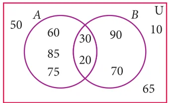<figcaption>Fig. 1.40</figcaption></figure>
<p>\((1) A (2) B (3) U (4) \emptyset\)</p>
<ul class="qlist">
<li><span class="mk">9.</span><span class="lt">From the adjacent diagram n[P(A \(\triangle\) B)] is</span></li>
</ul>
<p>(1) 8 (2) 16 (3) 32 (4) 64</p>
<ul class="qlist">
<li><span class="mk">10.</span><span class="lt">If n(A) \(= 10\) and n(B) \(= 15\), then the minimum and maximum number of elements</span></li>
</ul>
<p>in \(A \cap B\) is (1) 10,15 (2) 15,10 (3) 10,0 (4) 0,10</p>
<ul class="qlist">
<li><span class="mk">11.</span><span class="lt">Let \(A =\) { \(\emptyset\) } and \(B =\) P(A), then \(A \cap B\) is</span></li>
</ul>
<p>(1) { \(\emptyset\) , { \(\emptyset\) } } (2) { \(\emptyset\) } \((3) \emptyset (4) {0}\)</p>
<ul class="qlist">
<li><span class="mk">12.</span><span class="lt">In a class of 50 boys, 35 boys play Carrom and 20 boys play Chess then the number</span></li>
</ul>
<p>of boys play both games is (1) 5 (2) 30 (3) 15 (4) 10.</p>
<ul class="qlist">
<li><span class="mk">13.</span><span class="lt">If \(U =\) {x : \(x \in\)  and \(x &lt; 10}\), \(A = {1 2\), ,3,5,8} and \(B = {2,5,6,7,9}\), then n (A \(\cup\) B) '  is</span></li>
</ul>
<p>(1) 1 (2) 2 (3) 4 (4) 8</p>
<ul class="qlist">
<li><span class="mk">14.</span><span class="lt">For any three sets P, Q and R, \(P -\) (Q \(\cap\) R) is</span></li>
</ul>
<p>\((1) P -\) (Q \(\cup\) R) (2) (P \(\cap\) Q) \(- R (3)\) (P - Q) \(\cup\) (P - R) (4) (P - Q) \(\cap\) (P - R)</p>
<ul class="qlist">
<li><span class="mk">15.</span><span class="lt">Which of the following is true?</span></li>
</ul>
<div class="mathblock"><p>\((1) A - B = A \cap B (2) A - B = B - A (3)\) (A \(\cup\) B) ' \(= A\) ' \(\cup B\) ' (4) (A \(\cap\) B) ' \(= A\) ' \(\cup B\) '</p></div>
<ul class="qlist">
<li><span class="mk">16.</span><span class="lt">If n(A \(\cup B \cup\) C) \(= 100\), n(A) \(= 4x\), n(B) \(= 6x\), n C( ) \(= 5x\), n(A \(\cap\) B) \(= 20\),</span></li>
</ul>
<p>n(B \(\cap\) C) \(= 15\), n(A \(\cap\) C) \(= 25\) and n(A \(\cap B \cap\) C) \(= 10\), then the value of x is</p>
<p>(1) 10 (2) 15 (3) 25 (4) 30</p>
<ul class="qlist">
<li><span class="mk">17.</span><span class="lt">For any three sets A, B and C, (A - B) \(\cap\) (B - C) is equal to</span></li>
</ul>
<p>(1) A only (2) B only (3) C only (4) f</p>
<ul class="qlist">
<li><span class="mk">18.</span><span class="lt">If \(J =\) Set of three sided shapes, \(K =\) Set of shapes with two equal sides and \(L =\) Set of</span></li>
</ul>
<p>shapes with right angle, then J Ç K Ç L is (1) Set of isoceles triangles (2) Set of equilateral triangles (3) Set of isoceles right triangles (4) Set of right angled triangles</p>
<figure class="fig side-fig"></figure>
<ul class="qlist">
<li><span class="mk">19.</span><span class="lt">The shaded region in the Venn diagram is</span></li>
</ul>
<p>\((1) Z -\) (X \(\cup\) Y) (2) (X \(\cup\) Y) \(\cap Z (3) Z -\) (X \(\cap\) Y) \((4) Z \cup\) (X \(\cap\) Y)</p>
<ul class="qlist">
<li><span class="mk">20.</span><span class="lt">In a city, 40% people like only one fruit, 35% people like only two</span></li>
</ul>
<p>fruits, 20% people like all the three fruits. How many percentage of people do not like any one of the above three fruits?</p>
<p>(1) 5 (2) 8 (3) 10 (4) 15</p>
<h4 class="callout-h" id="s-points-to-remember">Points to Remember</h4>
<p>„ A set is a well defined collection of objects.</p>
<p>„ Sets are represented in three forms (i) Descriptive form (ii) Set - builder form</p>
<ul class="qlist">
<li><span class="mk">(iii)</span><span class="lt">Roster form.</span></li>
</ul>
<p>„ If every element of A is also an element of B, then A is called a subset of B.</p>
<p>„ If A3B and \(A \ne B\), then A is a proper subset of B.</p>
<p>„ The power set of the set A is the set of all the subsets of A and it is denoted by P(A).</p>
<p>„ The number of subsets of a set with m elements is \(2^{m}\).</p>
<p>„ The number of proper subsets of a set with m elements is \(2^{m}-1\).</p>
<p>„ If \(A \cap B = Q\) then A and B are disjoint sets. If \(A \cap B \ne Q\) then A and B are overlapping.</p>
<p>„ The difference of two sets A and B is the set of all elements in A but not in B. „ The symmetric difference of two sets A and B is the union of A-B and -A. „ Commutative Property For any two sets A and B,</p>
<p>\(A \cup B = B \cup A\) ; \(A \cap B = B \cap A\)</p>
<p>„ Associative Property For any three sets A, B and C</p>
<p>\(A \cup\) (B \(\cup\) C) = (A \(\cup\) B) \(\cup C\) ; \(A \cap\) (B \(\cap\) C) = (A \(\cap\) B) \(\cap C\)</p>
<p>„ Distributive Property For any three sets A, B and C</p>
<p>\(A \cap\) (B \(\cup\) C) = (A \(\cap\) B) \(\cup\) (A \(\cap\) C) Intersection over union  \(A \cup\) (B \(\cap\) C) = (A \(\cup\) B) \(\cap\) (A \(\cup\) C) Union over intersection</p>
<p>„ De Morgan’s Laws for Set Difference For any three sets A, B and C</p>
<p>\(A -\) (B \(\cup\) C) = (A - B) \(\cap\) (A - C)</p>
<p>\(A -\) (B \(\cap\) C) = (A - B) \(\cup\) (A - C)</p>
<p>„ De Morgan’s Laws for Complementation Consider an Universal set and A, B are two subsets, then</p>
<p>(A \(\cup\) B) ' \(= A\) ' \(\cap B\) ' ; (A \(\cap\) B) ' \(= A\) ' \(\cup B\) '</p>
<p>„ Cardinality of Sets If A and B are any two sets, then n(A \(\cup\) B) = n(A) + n(B) - n(A \(\cap\) B) If A, B and C are three sets, then</p>
<p>n(A \(\cup B \cup\) C) = n(A) + n(B) \(+ n\) C( ) - n(A \(\cap\) B) - n(B \(\cap\) C) - n(A \(\cap\) C) + n(A \(\cap B \cap\) C)</p>
<h2 class="callout-h" id="s-ict-corner-1">ICT Corner 1</h2>
<p>Expected Result is shown in this picture</p>
<p>Step \(- 1\) : Open the Browser, type the URL Link given below (or) Scan the QR Code. GeoGebra work sheet named “Set Language” will open. In the work sheet there are two activities. 1. Venn Diagram for two sets and 2. Venn Diagram for three sets. In the first activity Click on the boxes on the right side to see the respective shading and analyse.</p>
<p>Step \(- 2\) : Do the same for the second activity for three sets.</p>
<p>Browse in the link</p>
<h2 class="callout-h" id="s-ict-corner-2">ICT Corner 2</h2>
<p>Expected Result is shown in this picture</p>
<p>Step \(- 1\)</p>
<p>Open the Browser and copy and paste the Link given below (or) by typing the URL given (or) Scan the QR Code.</p>
<h4 class="callout-h" id="s-step-2">Step \(- 2\)</h4>
<p>GeoGebra worksheet “Union of Sets” will appear. You can create new problems by clicking on the box “NEW PROBLEM”</p>
<h4 class="callout-h" id="s-step-3">Step-3</h4>
<p>Enter your answer by typing the correct numbers in the Question Box and then hit enter. If you have any doubt, you can hit the “HINT” button</p>
<h4 class="callout-h" id="s-step-4">Step-4</h4>
<p>If your answer is correct “GREAT JOB” menu will appear. And if your answer is Wrong “Try Again!” menu will appear. Keep on working new problems until you get 5 consecutive trials as correct.</p>
<p>Browse in the link</p>
<p>Union of Sets:</p>
<figure class="fig table-fig wide"></figure>
<h2 id="s-2-1-introduction">2.1 Introduction</h2>
<p>Numbers, numbers, everywhere! Â Do you have a phone at home? How many digits does its dial have? Â What is the Pincode of your locality? How is it useful? Â When you park a vehicle, do you get a ‘token’? What is its purpose? Â Have you handled 24 ‘carat’ gold? How do you decide its purity? Â How high is the ‘power’ of your spectacles?</p>
<figure class="fig"></figure>
<p>� How much water does the overhead tank in  your house can hold? � Does your friend have fever? What is his  body temperature?</p>
<p>You have learnt about many types of numbers so far. Now is the time to extend the ideas further.</p>
<h2 id="s-rational-numbers">Rational Numbers</h2>
<p>When you want to count the number of books in your cupboard, you start with 1, 2, 3, … and so on. These counting numbers 1, 2, 3, … , are called Natural numbers. You know to show these numbers on a line (see Fig. 2.1).</p>
<p class="caption">Fig. 2.1</p>
<p>We use N to denote the set of all Natural numbers.</p>
<div class="mathblock"><p>\(N =\) { 1, 2, 3, … }</p></div>
<p>If the cupboard is empty (since no books are there). To denote such a situation we use the symbol 0. Including zero as a digit you can now consider the numbers 0, 1, 2, 3, … and call them Whole numbers. With this additional entity, the number line will look as shown below</p>
<p class="caption">Fig. 2.2</p>
<p>We use W to denote the set of all Whole numbers.</p>
<div class="mathblock"><p>\(W =\) { 0, 1, 2, 3, … }</p></div>
<p>Certain conventions lead to more varieties of numbers. Let us agree that certain conventions may be thought of as “positive” denoted by a ‘+’ sign. A thing that is ‘up’ or ‘forward’ or ‘more’ or ‘increasing’ is positive; and anything that is ‘down’ or ‘backward’ or ‘less’ or ‘decreasing’ is “negative” denoted by a ‘ - ’ sign.</p>
<p>You can treat natural numbers as positive numbers and rename them as positive integers; thereby you have enabled the entry of negative integers \(- 1\), \(- 2\), \(- 3\), … . Note that \(- 2\) is “more negative” than \(- 1\). Therefore, among \(- 1\) and \(- 2\), you find that \(- 2\) is smaller and \(- 1\) is bigger. Are \(- 2\) and \(- 1\) smaller or greater than \(- 3\)? Think about it. The number line at this stage may be given as follows:</p>
<p>\(- 4 - 3 - 2 - 1 0 1 2 3 4\)</p>
<p class="caption">Fig. 2.3</p>
<p>We use Z to denote the set of all Integers.</p>
<div class="mathblock"><p>Z= { …, \(- 3\), \(- 2\), \(- 1\), 0, 1, 2, 3, … }.</p></div>
<p>When you look at the figures (Fig. 2.2 and 2.3) above, you are sure to get amused by the gap between any pair of consecutive integers. Could there be some numbers in between?</p>
<p>You have come across fractions already. How will you mark the point that shows 12 on Z? It is just midway between 0 and 1. In the same way, you can plot 13, 14, 15, 2 34 ... etc. These are all fractions of the form ba where a and b are integers with one restriction that \(b \ne 0\). (Why?) If a fraction is in decimal form, even then the setting is same.</p>
<p>Because of the connection between fractions and ratios of lengths, we name them as Rational numbers. Here is a rough picture of the situation:</p>
<p>\(- 7 - 6 - 5 - 4.3 - 4 - 3 - 2 - 1 - 0.5 0 0.5 1 2 3 4 4.8 5 6 7\)</p>
<figure class="fig wide"><figcaption>Fig. 2.4</figcaption></figure>
<p>Since a fraction can have many equivalent fractions , there are many possible forms for the same rational number. Thus 13, 62, 248 all these denote the same rational number.</p>
<h3 id="s-2-2-1-denseness-property-of-rational-numbers">2.2.1 Denseness Property of Rational Numbers</h3>
<p>Consider a, b where \(a &gt; b\) and their AM(Arithmetic Mean) given by a +2 b . Is this AM a rational number? Let us see. If \(a = \frac{p}{q}\) (p, q integers andq ! 0); \(b =\) rs (r, s integers and s ! 0), then \(a +2 b = \frac{p}{q} +2 \frac{r}{s} = \frac{ps+qr}{2qs}\) which is a rational number.</p>
<p>We have to show that this rational number lies between a and b. \(a -\) ` \(a +2 b j= 2a -2a - b = a -2 b\) which is \(&gt; 0\) since a&gt;b.</p>
<div class="mathblock"><p>Therefore, a &gt;` a +2 b j ... (1)</p></div>
<p>` \(a +2 b j - b= a + b2- 2b = a -2 b\) which is \(&gt; 0\) since a&gt;b.</p>
<div class="mathblock"><p>Therefore, ` a +2 b j &gt;b ... (2)</p></div>
<p>From (1) and (2) we see that a &gt;` a +2 b j &gt;b, which can be visualized as follows:</p>
<aside class="sidenote"><p>\(a + b\)</p></aside>
<p class="caption">Fig. 2.5</p>
<p>Thus, for any two rational numbers, their average/mid point is rational. Proceeding similarly, we can generate infinitely many rational numbers.</p>
<figure class="fig"></figure>
<p>Find any two rational numbers between 12 and 32 .</p>
<h4 class="callout-h" id="s-solution-1">Solution 1</h4>
<p>A rational number between 1 and \(2 = 1 12 + 32 = 12\) `3 \(+6 4 j= 12 7 j= 127 A\) rational number between \(\frac{2}{2} 1\) and \(\frac{3}{12} 7 = \frac{2`}{2} 1\) `12 \(+ \frac{j}{12} 7 j= 12\) ` \(612+ 7 = \frac{`6}{2} 1\) `1312 \(j= 1324\) Hence two rational numbers between 12 and 32 are 127 and \(\frac{j}{24} 13\) (of course, there are many more!) There is an interesting result that could help you to write instantly rational numbers between any two given rational numbers.</p>
<figure class="fig wide">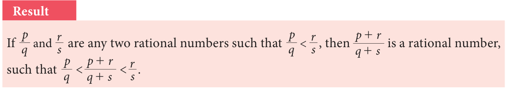</figure>
<p>Let us take the same example: Find any two rational numbers between 2 and</p>
<h4 class="callout-h" id="s-solution-2">Solution 2</h4>
<p>&lt; gives \(&lt; \frac{+}{2+3} &lt;\) or \(&lt; &lt;\) gives \(&lt; \frac{+}{2+5} &lt; &lt; \frac{+}{5+3} &lt;\) or \(&lt; &lt; &lt;\)</p>
<h4 class="callout-h" id="s-solution-3">Solution 3</h4>
<p>Any more new methods to solve? Yes, if decimals are your favourites, then the above example can be given an alternate solution as follows:</p>
<p>Hence rational numbers between \(\frac{= 0.66...}{2} 1\) and 32 can be listed as 0.51, 0.57,0.58,…</p>
<div class="mathblock"><p>\(12 = 0.5\) and 32</p></div>
<h4 class="callout-h" id="s-solution-4">Solution 4</h4>
<p>There is one more way to solve some problems. For example, to find four rational numbers between 94 and 35 , note that the LCM of 9 and 5 is 45; so we can write \(94 = 2045\) and \(53 =\) 2745Therefore, four rational numbers between . 94 and 35 are 2145, 2245, 2345, 2445, ...</p>
<figure class="fig"></figure>
<ul class="qlist">
<li><span class="mk">1.</span><span class="lt">Which arrow best shows the position of 113 on the number line?</span></li>
</ul>
<figure class="fig">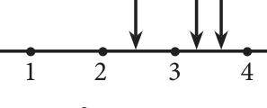</figure>
<p>\(- 5 - 4 - 3 - 2 - 1 5\)</p>
<ul class="qlist">
<li><span class="mk">2.</span><span class="lt">Find any three rational numbers between \(\frac{-}{11}\) and .</span></li>
<li><span class="mk">3.</span><span class="lt">Find any five rational numbers between (i) 4 and \(\frac{11}{5}\) (ii) 0.1 and 0.11 (iii) \(- 1\) and \(- 2\)</span></li>
</ul>
<h2 id="s-2-3-irrational-numbers">2.3 Irrational Numbers</h2>
<figure class="fig side-fig"><figcaption>Fig.2.6</figcaption></figure>
<p>You know that each rational number is assigned to a point on the number line and learnt about the denseness property of the rational numbers. Does it mean that the line is entirely filled with the rational numbers and there are no more numbers on the number line? Let us explore.</p>
<p>Consider an isosceles right-angled triangle whose base and height</p>
<p>are each 1 unit long. Using Pythagoras theorem, the hypotenuse can</p>
<p>be seen having a length \(1 + 1 = 2\) (see Fig. 2.6 ). Greeks found that this 2 is neither a whole number nor an ordinary fraction. The belief of relationship between points on the number line and all numbers was shattered! 2 was called an irrational number.</p>
<p>An irrational number is a number that cannot be expressed as an ordinary ratio of two integers.</p>
<p>Examples GOLDEN RATIO (1:1.6)</p>
<ul class="qlist">
<li><span class="mk">1.</span><span class="lt">produce a number of examples Apart from 2 , one can The Golden Ratio has been heralded as the a b</span></li>
</ul>
<p>for such irrational numbers. most beautiful ratio in</p>
<ul class="qlist">
<li><span class="mk">2.</span><span class="lt">Here are a few: of a circle to the diameter of that \(\pi\) , the ratio of the circumference 5, 7, 2 3,f art and architecture.Take a line segment and divide it into two smaller segments such that the ratio of the whole line segment (a+ab+: baa) to segment \(+ = b a\) : b</span></li>
</ul>
<p>same circle, is another example a is the same as the ratio of segment a to the for an irrational number. segment b.</p>
<ul class="qlist">
<li><span class="mk">3.</span><span class="lt">e, also known as Euler’s This gives the proportion \(\frac{a+b}{a} = \frac{a}{b}\)</span></li>
</ul>
<p>number, is another common Notice that ‘a’ is the geometric mean of a+b and b. irrational number.</p>
<ul class="qlist">
<li><span class="mk">4.</span><span class="lt">The golden ratio, also known as golden mean, or golden section, is a number often</span></li>
</ul>
<p>stumbled upon when taking the ratios of distances in simple geometric figures such as the pentagon, the pentagram, decagon and dodecahedron, etc., it is an irrational number.</p>
<h3 id="s-2-3-1-irrational-numbers-on-the-number-line">2.3.1 Irrational Numbers on the Number Line</h3>
<p>Where are the points on the number line that correspond to the irrational numbers?</p>
<p>As an example, let us locate 2 on the number line. This is easy.</p>
<p>Remember that 2 is the length of the diagonal of the square whose side is 1 unit</p>
<p>(How?)Simply construct a square and transfer the length of one of its diagonals to our number line. (see Fig.2.7).</p>
<figure class="fig"><figcaption>Fig.2.7</figcaption></figure>
<p>\(- 4 - 3 3 4\)</p>
<p>We draw a circle with centre at 0 on the number line,with a radius equal to that of diagonal of the square. This circle cuts the number line in two points, locating 2 on the right of 0 and - on its left. (You wanted to locate you have also got a bonus in -</p>
<figure class="fig table-fig">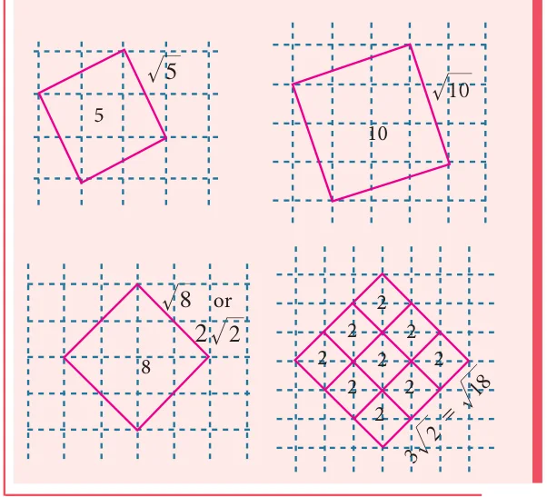</figure>
<p>You started with Natural numbers and extended it to rational numbers and then irrational numbers. You may wonder if further extension on the number line waits for us. Fortunately it stops and you can learn about it in higher classes.</p>
<p>Representation of number as terminating terminating decimal helps us to understand irrational numbers. Let us see the decimal expansion of rational numbers.</p>
<h3 id="s-2-3-2-decimal-representation-of-a-rational-number">2.3.2 Decimal Representation of a Rational Number</h3>
<p>If you have a rational number written as a fraction, you get the decimal representation by long division. Study the following examples where the remainder is always zero.</p>
<p>Consider the examples,</p>
<p>0.875 0.84 2.71875 8 7.000 25 21.00 32 87.00000 64 200 60 100 56 40</p>
<figure class="fig"></figure>
<div class="mathblock"><p>\(= 0 875\). =</p><p>\(- = - 2.71875\)</p></div>
<p>Can the decimal representation of a rational number lead to forms of decimals that do not terminate? The following examples (with non-zero remainder) throw some light on this point.</p>
<figure class="fig"></figure>
<p>Represent the following as decimal form (i) \(\frac{-}{11}\)</p>
<figure class="fig table-fig">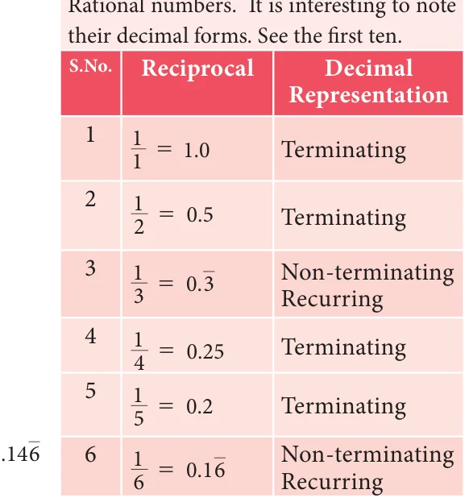</figure>
<h4 class="callout-h" id="s-solution">Solution</h4>
<p>0.3636…. 0.1466… 11 4.0000 75 11.0000 33 7 5 70 350 66 300 40 500 33 450 70 500 66 450 4 50</p>
<p>Thus we see that, \(\frac{-}{11} 4 = - 0.36 1175 = 0\).</p>
<p>A rational number can be expressed by</p>
<figure class="fig table-fig"></figure>
<ul class="qlist">
<li><span class="mk">(i)</span><span class="lt">either a terminating</span></li>
<li><span class="mk">(ii)</span><span class="lt">or a non-terminating and recurring</span></li>
</ul>
<p>(repeating) decimal expansion.</p>
<p>The converse of this statement is also true. That is, if the decimal expansion of a number is terminating or non-terminating and recurring, then the number is a rational number.</p>
<figure class="fig wide">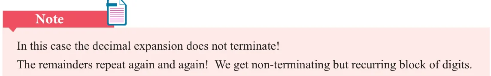</figure>
<h3 id="s-2-3-3-period-of-decimal">2.3.3 Period of Decimal</h3>
<p>In the decimal expansion of the rational numbers, the number of repeating decimals is</p>
<p>called the length of the period of decimals.</p>
<p>For example,</p>
<figure class="fig"></figure>
<p>= has the length of the period of decimal \(= 6 \frac{7}{110} = \frac{3.571428}{245} 0\). has the length of the period of decimal \(= 2\)</p>
<p>Express the rational number 1 in recurring decimal form by using the recurring decimal expansion of 13 . Hence write \(\frac{27}{27} 59\) in recurring decimal form.</p>
<h4 class="callout-h" id="s-solution">Solution</h4>
<p>We know that \(1 = 0.3\)</p>
<div class="mathblock"><p>Therefore, \(\frac{3}{27} 1 = 19\) # \(13 = 19\) # 0 333. \(...= 0 037037\). \(...= 0.037\) Also, \(5927 = 2 275 = 2 + 275 = 2 +\) `5 # 271 j</p><p>\(= 2 + (5\) # \(0.037)= 2 + (5\) # \(0.037037037...)= 2 + 0.185185...= 2.185185...= 2.185\)</p></div>
<h3 id="s-2-3-4-conversion-of-terminating-decimals-into-rational-num">2.3.4 Conversion of Terminating Decimals into Rational Numbers</h3>
<p>Let us now try to convert a terminating decimal, say 2.945 as rational number in the fraction form.</p>
<div class="mathblock"><p>\(2.945 = 2 + 0.945\)</p><p>\(2.945 = 2 + 109 + 1004 + 10005\)</p></div>
<p>\(= 2 + 900 + 100040 + 10005\) (making denominators common)</p>
<div class="mathblock"><p>\(= 2 + \frac{1000}{1000} 945\)</p></div>
<p>\(= 10002945\) or 589200 which is required (In the above, is it possible to write directly \(2.945 = 10002945\) ?)</p>
<figure class="fig"></figure>
<p>Convert the following decimal numbers in the form of \(\frac{p}{q}\) , where p and q are integers and ! : (i) 0.35 (ii) 2.176 (iii) \(- 0.0028\)</p>
<h4 class="callout-h" id="s-solution">Solution</h4>
<ul class="qlist">
<li><span class="mk">(i)</span><span class="lt">\(0.35 = 35 = 207\)</span></li>
<li><span class="mk">(ii)</span><span class="lt">\(2.176 = \frac{100}{1000} 2176 = 125272\)</span></li>
<li><span class="mk">(iii)</span><span class="lt">\(- 0.0028 = 10000- 28 = \frac{-}{2500} 7\)</span></li>
</ul>
<h3 id="s-2-3-5-conversion-of-non-terminating-and-recurring-decimals">2.3.5 Conversion of Non-terminating and recurring decimals into Rational Numbers</h3>
<p>It was very easy to handle a terminating decimal. When we come across a decimal</p>
<p>such as 2.4, we get rid of the decimal point, by just divide it by 10. Thus \(2.4 = 1024\) , which is simplified as 125 . But, when we have a decimal such as 2.4 , the problem is that we have infinite number of 4s and hence will need infinite number of 0s in the denominator. For example,</p>
<div class="mathblock"><p>\(2.4 = 2 + 104\)</p><p>\(2.44 = 2 + 4 + 4 2.444 = 2 + \frac{10}{10} 4 + \frac{100}{100} 4 + 10004\)</p></div>
<p>How tough it is to have infinite 4’s and work with them. We need to get rid of the infinite sequence in some way. The good thing about the infinite sequence is that even if we pull away one , two or more 4 out of it, the sequence still remains infinite.</p>
<div class="mathblock"><p>Let \(x = 2.4 ...(1)\)</p></div>
<p>Then, \(10x = 24.4 ...(2)\) [When you multiply by 10, the decimal moves one place to the right but you still have infinite 4s left over). Subtract the first equation from the second to get,</p>
<p>\(9x = 24.4 - 2.4 = 22\) (Infinite 4s subtract out the infinite 4s and the left out is</p>
<div class="mathblock"><p>\(24 - 2 = 22)\)</p></div>
<p>\(x = 229\) , the required value.</p>
<p>We use the same exact logic to convert any number with a non terminating repeating part into a fraction.</p>
<figure class="fig"></figure>
<p>Convert the following decimal numbers in the form of</p>
<div class="mathblock"><p>\(\frac{p}{q}\) ^ , ! and ! .</p></div>
<ul class="qlist">
<li><span class="mk">(i)</span><span class="lt">\(\frac{Z}{0.3}\) (ii) 2.124 (iii) 0.45 (iv) 0.568</span></li>
</ul>
<h4 class="callout-h" id="s-solution">Solution</h4>
<ul class="qlist">
<li><span class="mk">(i)</span><span class="lt">Let \(x = 0.3 =\) 0.3333… (1)</span></li>
</ul>
<p>(Here period of decimal is 1, multiply equation (1) by 10)</p>
<div class="mathblock"><p>\(10 x = 3.3333\)... \((2) (2) - (1)\): \(9 x = 3\) or \(x = 13\)</p></div>
<ul class="qlist">
<li><span class="mk">(ii)</span><span class="lt">Let \(x = 2.124 =\) 2.124124124… (1)</span></li>
</ul>
<p>(Here period of decimal is 3, multiply equation (1) by 1000.)</p>
<div class="mathblock"><p>\(1000 x =\) 2124.124124124… \((2) (2) - (1)\): \(999 x = 2122 x = 2122999\)</p></div>
<ul class="qlist">
<li><span class="mk">(iii)</span><span class="lt">Let \(x = 0 4\). \(5 =\) 0.45555… (1)</span></li>
</ul>
<p>(Here the repeating decimal digit is 5, which is the second digit after the decimal point, multiply equation (1) by 10)</p>
<div class="mathblock"><p>\(10 x =\) 4.5555… (2)</p></div>
<p>(Now period of decimal is 1, multiply equation (2) by 10)</p>
<div class="mathblock"><p>\(100 x =\) 45.5555… \((3) (3) - (2)\): \(90 x = 41\) or \(x = 9041\)</p></div>
<ul class="qlist">
<li><span class="mk">(iv)</span><span class="lt">Let \(x = 0.568 =\) 0.5686868… (1)</span></li>
</ul>
<p>(Here the repeating decimal digit is 68, which is the second digit after the decimal point, so multiply equation (1) by 10)</p>
<div class="mathblock"><p>\(10 x =\) 5.686868… (2)</p></div>
<p>(Now period of decimal is 2, multiply equation (2) by 100)</p>
<div class="mathblock"><p>\(1000 x =\) 568.686868… \((3) (3) - (2)\): \(990 x = 563\) or \(x = 563990\) .</p></div>
<h3 class="callout-h" id="s-note">Note</h3>
<p>To determine whether the decimal form of a rational number will terminate or non - terminate, we can make use of the following rule</p>
<p>If a rational number \(\frac{p}{q}\) , q ! 0 can be expressed in the form \(\frac{p}{2m#5n}\) , where p ! Z and m, n ! W, then rational number will have a terminating decimal expansion. Otherwise, the rational number will have a non- terminating and recurring decimal expansion</p>
<h4 class="callout-h" id="s-example-2-6">Example 2.6</h4>
<p>Without actual division, classify the decimal expansion of the following numbers as terminating or non - terminating and recurring.</p>
<ul class="qlist">
<li><span class="mk">(i)</span><span class="lt">1364 (ii) -12571 (iii) 37543 (iv) 40031</span></li>
</ul>
<h4 class="callout-h" id="s-solution">Solution</h4>
<figure class="fig"></figure>
<p>= , So 1364 has a terminating decimal expansion. \(- = -\) , So \(- 71\) has a terminating decimal expansion. \(\frac{125}{375} = \frac{5}{31#53}\) , So \(\frac{125}{375} 43\) has a non - terminating recurring decimal expansion. = # , So 40031 has a terminating decimal expansion.</p>
<div class="mathblock"><p>\(1 =\) 0.9999…</p></div>
<p>Verify that \(1 = 0.9 7 =\) 6.9999…</p>
<div class="mathblock"><p>Solution \(3.7 =\) 3.6999… Let \(x = 0.9 =\) 0.99999… (1)</p></div>
<p>The pattern suggests that (Multiply equation (1) by 10) any terminating decimal \(10 x =\) 9.99999… (2) can be represented as a non- Subtract (1) from (2) terminating and recurring \(9x = 9\) or \(x =1\) decimal expansion with an endless block of 9’s.</p>
<div class="mathblock"><p>Thus, \(0.9 = 1\)</p></div>
<h2 class="callout-h" id="s-exercise-2-2">Exercise 2.2</h2>
<ul class="qlist">
<li><span class="mk">1.</span><span class="lt">Express the following rational numbers into decimal and state the kind of decimal expansion</span></li>
<li><span class="mk">(i)</span><span class="lt">72 (ii) \(- 5113\) (iii) 322 (iv) 200327</span></li>
<li><span class="mk">2.</span><span class="lt">Express 131 in decimal form. Find the length of the period of decimals.</span></li>
<li><span class="mk">3.</span><span class="lt">decimal expansion of Express the rational number 111 . Hence write 331 in recurring decimal form by using the recurring 7133 in recurring decimal form.</span></li>
<li><span class="mk">4.</span><span class="lt">Express the following decimal expression into rational numbers.</span></li>
<li><span class="mk">(i)</span><span class="lt">.240 (ii) .3272 (iii) \(- 5.132\)</span></li>
<li><span class="mk">(iv)</span><span class="lt">.3 17 (v) 17 2. 15 (vi) \(- 21.2137\)</span></li>
<li><span class="mk">5.</span><span class="lt">Without actual division, find which of the following rational numbers have terminating</span></li>
</ul>
<p>decimal expansion.</p>
<ul class="qlist">
<li><span class="mk">(i)</span><span class="lt">1287 (ii) 1521 (iii) 4 359 (iv) 2200219</span></li>
</ul>
<h3 id="s-2-3-6-decimal-representation-to-identify-irrational-number">2.3.6 Decimal Representation to Identify Irrational Numbers</h3>
<p>It can be shown that irrational numbers, when expressed as decimal numbers, do not terminate nor do they repeat. For example, the decimal representation of the number \(\pi\) starts with 3.14159265358979..., but no finite number of digits can represent \(\pi\) exactly, nor does it repeat. Consider the following decimal expansions:</p>
<ul class="qlist">
<li><span class="mk">(i)</span><span class="lt">0.1011001110001111… (ii) 3.012012120121212…</span></li>
<li><span class="mk">(iii)</span><span class="lt">12.230223300222333000… (in) \(2 =\) 1.4142135624…</span></li>
</ul>
<p>Are the above numbers terminating (or) recurring and non- terminating? No… They are neither terminating, nor non - terminating and recurring. Hence they are not rational numbers. They cannot be written in the form of \(\frac{p}{q}\) , where p, q ! Z and q ! 0. They are irrational numbers.</p>
<figure class="fig table-fig wide">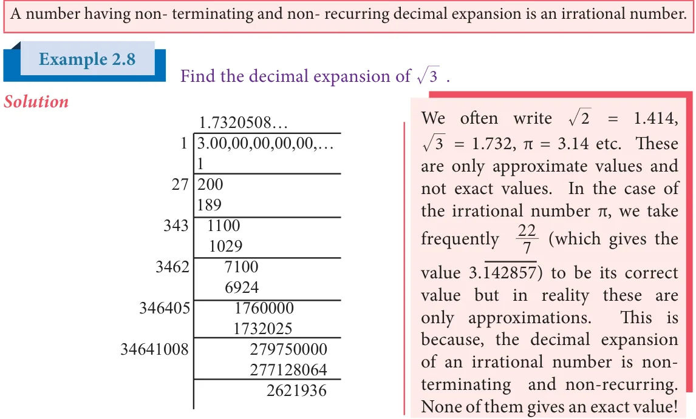</figure>
<p>Thus, by division method, \(3 =\) 1.7320508…</p>
<p>It is found that the square root of every positive non-perfect square number is an</p>
<p>, … are all irrational numbers.</p>
<p>Classify the numbers as rational or irrational:</p>
<aside class="sidenote"><p>0.76 (v) 2.505500555... (vi) 22</p></aside>
<h4 class="callout-h" id="s-solution">Solution</h4>
<ul class="qlist">
<li><span class="mk">(i)</span><span class="lt">10 is an irrational number ( since 10 is not a perfect square number).</span></li>
<li><span class="mk">(ii)</span><span class="lt">\(49 = 7 = 17\) , a rational number(since 49 is a perfect square number).</span></li>
<li><span class="mk">(iii)</span><span class="lt">0.025 is a rational number (since it is a terminating decimal).</span></li>
<li><span class="mk">(iv)</span><span class="lt">0 7 . \(6 =\) 0.7666…. is a rational number ( since it is a non - terminating and</span></li>
</ul>
<p>recurring decimal expansion).</p>
<ul class="qlist">
<li><span class="mk">(v)</span><span class="lt">2.505500555…. is an irrational number ( since it is a non - terminating and</span></li>
</ul>
<p>non - recurring decimal).</p>
<figure class="fig">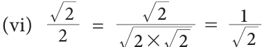</figure>
<p>is an irrational number ( since 2 is not a perfect square</p>
<p>number).</p>
<h4 class="callout-h" id="s-note">Note</h4>
<p>The above example(vi) it is not to be misunderstood as \(\frac{p}{q}\) form, because both p and q must be integers and not an irrational number.</p>
<h4 class="callout-h" id="s-example-2-10">Example 2.10</h4>
<p>Find any 3 irrational numbers between 0.12 and 0.13 .</p>
<h4 class="callout-h" id="s-solution">Solution</h4>
<p>Three irrational numbers between 0.12 and 0.13 are</p>
<p>0.12010010001…, 0.12040040004…, 0.12070070007…</p>
<h4 class="callout-h" id="s-note">Note</h4>
<p>We state (without proof) an important result worth remembering. If ‘a’ is a rational number and b is an irrational number then each one of the following is an irrational number:</p>
<ul class="qlist">
<li><span class="mk">(i)</span><span class="lt">\(a + b\) ; (ii) \(a - b\) ; (iii) a b ; (iv) ab ; (v) ab .</span></li>
</ul>
<p>For example, when you consider the rational number 4 and the irrational number 5 , then \(4 + 5\) , \(4 - 5\) , 4 5 , 45 , 45 ... are all irrational numbers.</p>
<figure class="fig"></figure>
<p>Give any two rational numbers lying between 0.5151151115…. and 0.5353353335… Solution Two rational numbers between the given two irrational numbers are 0.5152 and 0.5352</p>
<figure class="fig">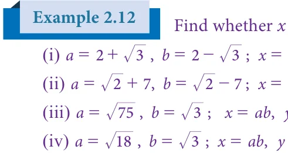</figure>
<p>x and y are rational or irrational in the following.</p>
<p>; \(= +\) , \(= -\) ; \(= + = -\)</p>
<figure class="fig"></figure>
<div class="mathblock"><p>= ab, \(= \frac{b,}{b}\)</p></div>
<p>ab, =</p>
<h4 class="callout-h" id="s-solution">Solution</h4>
<ul class="qlist">
<li><span class="mk">(i)</span><span class="lt">Given that \(a =\)</span></li>
</ul>
<div class="mathblock"><p>\(x = a + b = (2 +\) ) \(= 4\) ,</p></div>
<p>a rational number.</p>
<p>\(y = a - b = (2 + 3\) ) \(- (2 - 3\) ) \(= 2 3\) , an irrational number.</p>
<ul class="qlist">
<li><span class="mk">(ii)</span><span class="lt">Given that \(a = 2 +7\) , \(b = 2 - 7\)</span></li>
</ul>
<p>\(x = a + b =\) ( 2 +7 ) \(+( 2 - 7) = 2 2\) , an irrational number. \(y = a - b =\) ( 2 +7 ) - ( \(2 - 7) = 14\) , a rational number.</p>
<ul class="qlist">
<li><span class="mk">(iii)</span><span class="lt">Given that \(a = 75\) , \(b = 3\)</span></li>
</ul>
<p>\(x =\) ab \(= 75\) # \(3 = 75\) # \(3 = 5\) # 5 # 3 # \(3 = 5\) # \(3= 15\), a rational number. \(y =\) ba \(= 753 = 753 = 25 = 5\), rational number.</p>
<ul class="qlist">
<li><span class="mk">(iv)</span><span class="lt">Given that \(a = 18\) , \(b = 3\)</span></li>
</ul>
<p>\(x =\) ab \(= 18\) # \(3 = 18\) # \(3 = 6\) # 3 # \(3 = 3 6\) , an irrational number. \(y =\) ba \(= 183 = 183 = 6\) , an irrational number.</p>
<h4 class="callout-h" id="s-example-2-13">Example 2.13</h4>
<p>Represent .9 3 on a number line.</p>
<h4 class="callout-h" id="s-solution">Solution</h4>
<p>Â Draw a line and mark a point A on it. Â Mark a point B such that \(AB = 9.3\) cm. Â Mark a point C on this line such that \(BC = 1\) cm. Â Find the midpoint of AC by drawing perpendicular bisector of AC and let it be O Â With O as center and \(OC = OA\) as radius, draw a semicircle.</p>
<p>Â Draw a line BD, which is perpendicular to AB at B. Â With B as centre BD as radius draw an arc which intersects the line AC at E. Â Now \(BD = .9 3\) , which can be marked in the number line as the value of</p>
<div class="mathblock"><p>\(BE = BD = .9 3\)</p></div>
<p>1cm 0 1 2 3 4 5 6 7 8 9 10</p>
<p>cm Fig.2.8 .9 3cm</p>
<h2 class="callout-h" id="s-exercise-2-3">Exercise 2.3</h2>
<ul class="qlist">
<li><span class="mk">1.</span><span class="lt">Represent the following irrational numbers on the number line.</span></li>
<li><span class="mk">(i)</span><span class="lt">3 (ii) .4 7 (iii) .6 5</span></li>
<li><span class="mk">2.</span><span class="lt">Find any two irrational numbers between</span></li>
<li><span class="mk">(i)</span><span class="lt">0.3010011000111…. and 0.3020020002…. (ii) 76 and 1213 (iii) 2 and 3</span></li>
<li><span class="mk">3.</span><span class="lt">Find any two rational numbers between 2.2360679….. and 2.236505500….</span></li>
</ul>
<h2 id="s-2-4-real-numbers">2.4 Real Numbers</h2>
<p>The real numbers consist of all the rational numbers and all the irrational numbers. Real numbers can be thought of as points on an infinitely long number line called the real line, where the points corresponding to integers are equally spaced.</p>
<figure class="fig wide">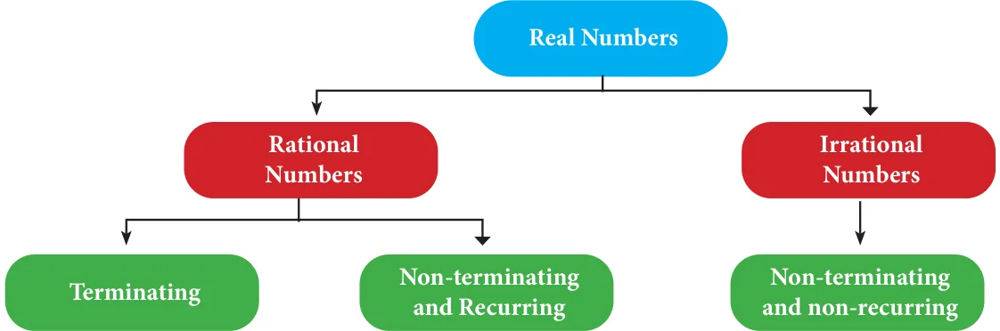</figure>
<p>Any real number can be determined by a possibly infinite decimal representation, (as we have already seen decimal representation of the rational numbers and the irrational numbers).</p>
<h3 id="s-2-4-1-the-real-number-line">2.4.1 The Real Number Line</h3>
<p>Visualisation through Successive Magnification. We can visualise the representation of numbers on the number line, as if we glimpse through a magnifying glass.</p>
<figure class="fig"></figure>
<p>Represent 4.863 on the number line.</p>
<h4 class="callout-h" id="s-solution">Solution</h4>
<p>4.863 lies between 4 and 5(see Fig. 2.9)</p>
<ul class="qlist">
<li><span class="mk">(i)</span><span class="lt">Divide the distance between 4 and 5 into 10 equal intervals.</span></li>
<li><span class="mk">(ii)</span><span class="lt">Mark the point 4.8 which is second from the left of 5 and eighth from the right of 4</span></li>
<li><span class="mk">(iii)</span><span class="lt">4.86 lies between 4.8 and 4.9. Divide the distance into 10 equal intervals.</span></li>
<li><span class="mk">(iv)</span><span class="lt">Mark the point 4.86 which is fourth from the left of 4.9 and sixth from the right of 4.8</span></li>
<li><span class="mk">(v)</span><span class="lt">4.863 lies between 4.86 and 4.87. Divide the distance into 10 equal intervals.</span></li>
<li><span class="mk">(vi)</span><span class="lt">Mark point 4.863 which is seventh from the left of 4.87 and third from the right of</span></li>
</ul>
<p>4.86.</p>
<p>-3 -2 -1 0 1 2 3 4 5 6 7</p>
<p>4.0 4.1 4.2 4.3 4.4 4.5 4.6 4.7 4.8 4.9 5.0</p>
<p>4.80 4.81 4.82 4.83 4.84 4.85 4.86 4.87 4.88 4.89 4.90</p>
<p>4.860 4.861 4.862 4.863 4.864 4.865 4.866 4.867 4.868 4.869 4.870</p>
<h4 class="callout-h" id="s-example-2-15">Example 2.15</h4>
<p class="caption">Fig. 2.9</p>
<p>Represent 3.45 on the number line upto 4 decimal places.</p>
<h4 class="callout-h" id="s-solution">Solution</h4>
<div class="mathblock"><p>\(3.45 =\) 3.45454545…..</p></div>
<p>\(= 3.4545\) ( correct to 4 decimal places).</p>
<p>The number lies between 3 and 4</p>
<p>-4 -3 -2 -1 0 1 2 3 4 5 6</p>
<p>3.0 3.1 3.2 3.3 3.4 3.5 3.6 3.7 3.8 3.9 4.0</p>
<p>3.40 3.41 3.42 3.43 3.44 3.45 3.46 3.47 3.48 3.49 3.50</p>
<p>3.450 3.451 3.452 3.453 3.454 3.455 3.456 3.457 3.458 3.459 3.460</p>
<p>3.4540 3.4541 3.4542 3.4543 3.4544 3.4545 3.4546 3.4547 3.4548 3.4549 3.4550</p>
<p class="caption">Fig. 2.10</p>
<h2 class="callout-h" id="s-exercise-2-4">Exercise 2.4</h2>
<ul class="qlist">
<li><span class="mk">1.</span><span class="lt">Represent the following numbers on the number line.</span></li>
<li><span class="mk">(i)</span><span class="lt">5.348 (ii) 6.4 upto 3 decimal places. (iii) 4.73 upto 4 decimal places.</span></li>
</ul>
<h2 id="s-2-5-radical-notation">2.5 Radical Notation</h2>
<p>Let n be a positive integer and r be a real number. If Note</p>
<p>\(r = x\), then r is called the n root of x and we write It is worth spending some</p>
<p>n th</p>
<p>\(x = r\) time on the concepts of the The symbol \(^{n}\) (read as \(n^{th}\) root) is called a radical; ‘square root’ and the ‘cube n is the index of the radical (hitherto we named it as root’, for better understanding exponent); and x is called the radicand. of surds.</p>
<p>What happens when \(n = 2\)? Then we get \(r = x\), so that r is x , our good old friend,</p>
<p>the square root of x. Thus 16 is written as 16 , and when \(n =3\), we get the cube root of x,</p>
<p>namely x . For example, 8 is cube root of 8, giving 2. (Is not \(8 = 2\) ?)</p>
<p>How many square roots are there for 4? Since \((+2) \times (+2)\)</p>
<figure class="fig side-fig"></figure>
<p>\(= 4\) and also ( \(- 2) \times\) ( \(- 2) = 4\), we can say that both +2 and \(- 2\) are square roots of 4. But it is incorrect to write that \(4 = \pm\) . This is because, when n is even, it is an accepted convention to</p>
<p>reserve the symbol x for the positive n root and to denote</p>
<p>n th</p>
<p>the negative n root by \(- x\) . Therefore we need to write</p>
<p>th n</p>
<div class="mathblock"><p>\(4 =2\) and \(- 4 = - 2\).</p></div>
<p>When n is odd, for any value of x, there is exactly one real</p>
<p>n root. For example, \(8 = 2\) and \(- 32 = - 2\).</p>
<p>th 3 5</p>
<h3 id="s-2-5-1-fractional-index">2.5.1 Fractional Index</h3>
<p>Consider again results of the form \(r = x\) . In the adjacent notation, the index of the radical (namely n which is 3 here) tells you how many times the answer (that is 4) must be multiplied with itself to yield the radicand. To express the powers and roots, there is one more way of representation. It involves the use of fractional indices.</p>
<figure class="fig side-fig">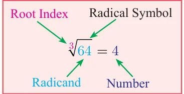</figure>
<div class="mathblock"><p>We write x as \(x \frac{1}{n.}\)</p></div>
<p>With this notation, for example is \(\frac{1}{3}\) and is \(\frac{1}{2}\) . Observe in the following table just some representative patterns arising out of this new acquaintance:</p>
<figure class="fig table-fig wide"></figure>
<figure class="fig"></figure>
<p>Express the following in the form 2 :</p>
<ul class="qlist">
<li><span class="mk">(i)</span><span class="lt">8 (ii) 32 (iii) \(\frac{1}{4}\) (iv) 2 (v) 8 .</span></li>
</ul>
<h4 class="callout-h" id="s-solution">Solution</h4>
<ul class="qlist">
<li><span class="mk">(i)</span><span class="lt">\(8 = 2 \times 2 \times 2\); therefore \(8 = 2\)</span></li>
</ul>
<ul class="qlist">
<li><span class="mk">(ii)</span><span class="lt">\(32 = 2 \times _{1}/_{2}2 \times 2 \times 2 \times 2 = 2\) (iii) \(\frac{111}{42 \times 22} = = 2 = 2\)</span></li>
</ul>
<p>\(5 - 2\)</p>
<ul class="qlist">
<li><span class="mk">(iv)</span><span class="lt">\(2 = 2\)</span></li>
</ul>
<p> </p>
<ul class="qlist">
<li><span class="mk">(v)</span><span class="lt">\(8 = 2 \times 2 \times 2 =\)  \(\frac{1}{22}\)  which may be written as \(\frac{3}{22}\)</span></li>
</ul>
<p>Meaning of \(x \frac{m}{n}\) , (where m and n are Positive Integers)</p>
<p>We interpret \(x \frac{m}{n}\) either as the \(n^{th}\) root of the \(m^{th}\) power of x or as the \(m^{th}\) power of</p>
<p>the n root of x.</p>
<p>th</p>
<p>In symbols, \(x ^{n} =(x ^{m})^{n}\) or (x \(^{n} )^{m} = ^{n} x ^{m}\) or \((^{n} x )^{m}\)</p>
<p>Example 2.17 Find the value of (i) \(81 \frac{5}{4} \frac{-2}{3}\)</p>
<h4 class="callout-h" id="s-solution">Solution</h4>
<div class="mathblock"><p>\(\frac{5}{4} =\) ( ) =   \(= = \times \times \times \times = 243\)</p></div>
<figure class="fig"></figure>
<figure class="fig"></figure>
<div class="mathblock"><p>\(= =\) (How?) \(= \frac{1}{16}\)</p></div>
<p>( )</p>
<ul class="qlist">
<li><span class="mk">1.</span><span class="lt">Write the following in the form of 5 :</span></li>
</ul>
<div class="mathblock"><p>\(\frac{1}{5}\)</p></div>
<ul class="qlist">
<li><span class="mk">(i)</span><span class="lt">625 (ii) (iii) 5 (iv) 125</span></li>
<li><span class="mk">2.</span><span class="lt">Write the following in the form of 4 :</span></li>
</ul>
<ul class="qlist">
<li><span class="mk">(i)</span><span class="lt">16 (ii) 8 (iii) 32</span></li>
<li><span class="mk">3.</span><span class="lt">Find the value of</span></li>
<li><span class="mk">(i)</span><span class="lt">\((49) \frac{1}{2}\) (ii) \((243) \frac{2}{5}\) (iii) \(9 ^{2}\) (vi)  \(\frac{64}{125} \frac{ -\) 2}{3}</span></li>
</ul>
<aside class="sidenote"><p>-3</p><p> </p></aside>
<ul class="qlist">
<li><span class="mk">4.</span><span class="lt">Use a fractional index to write: _{7}</span></li>
</ul>
<aside class="sidenote"><p>5  </p></aside>
<ul class="qlist">
<li><span class="mk">(i)</span><span class="lt">5 (ii) 7 (iii) ( 49) (iv)  \(\frac{1}{3100}\) </span></li>
</ul>
<ul class="qlist">
<li><span class="mk">5.</span><span class="lt">Find the 5 root of</span></li>
</ul>
<p>th</p>
<div class="mathblock"><p>\(\frac{1024}{3125}\)</p></div>
<ul class="qlist">
<li><span class="mk">(i)</span><span class="lt">32 (ii) 243 (iii) 100000 (iv)</span></li>
</ul>
<h2 id="s-2-6-surds">2.6 Surds</h2>
<p>Having familiarized with the concept of Real numbers, representing them on the</p>
<p>number line and manipulating them, we now learn about surds, a distinctive way of representing certain approximate values.</p>
<p>Can you simplify 4 and remove the symbol? Yes; one can replace 4 by the</p>
<figure class="fig"></figure>
<p>number 2. How about \(\frac{1}{9}\) ? It is easy; without symbol, the answer is \(\frac{1}{3}\) . What about 0 01. ?. This is also easy and the solution is 0.1</p>
<figure class="fig">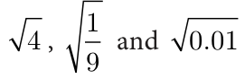</figure>
<p>In the cases of , you can resolve to get a solution and make sure</p>
<p>that the symbol is not seen in your solution. Is this possible at all times?</p>
<p>Consider . Can you evaluate it and also remove the radical symbol? Surds are unresolved radicals, such as square root of 2, cube root of 5, etc.</p>
<p>They are irrational roots of equations with rational coefficients. A surd is an irrational root of a rational number. \(^{n} a\) is a surd, provided n , n 1, ‘a’ is rational.</p>
<p>Examples : 2 is a surd. It is an irrational root of the equation \(x = 2\). (Note that</p>
<p>\(x - 2 = 0\) is an equation with rational coefficients. 2 is irrational and may be shown as 1.4142135… a non-recurring, non-terminating decimal).</p>
<p>3 (which is same as \(\frac{1}{33}\) ) is a surd since it is an irrational root of the equation</p>
<p>\(x - 3 = 0\). ( 3 is irrational and may be shown as 1.7320508… a non-recurring, non-terminating decimal).</p>
<p>You will learn solving (quadratic) equations like \(x - 6x + 7 = 0\) in your next class. This</p>
<p>is an equation with rational coefficients and one of its roots is 3+ 2 , which is a surd.</p>
<p>Is \(\frac{1}{25} a\) surd? No; it can be simplified and written as rational number \(\frac{1}{5}\) . How about</p>
<p>\(\frac{16}{81}\) ? It is not a surd because it can be simplified as \(\frac{2}{3}\) . The famous irrational number p is not a surd! Though it is irrational, it cannot be</p>
<p>expressed as a rational number under the symbol. (In other words, it is not a root of any equation with rational co-efficients).</p>
<p>Why surds are important? For calculation purposes we assume approximate value as</p>
<div class="mathblock"><p>\(2 = 1 414\). , \(3 = 1 732\). and so on.</p><p>( \(2) = (1 414\). ) \(= 1 99936\). \(\ne 2\) ; ( \(3) = (1 732\). ) \(= 3 999824\). \(\ne 3\)</p></div>
<p>Hence, we observe that 2 and 3 represent the more accurate and precise values than their assumed values. Engineers and scientists need more accurate values while constructing the bridges and for architectural works. Thus it becomes essential to learn surds.</p>
<p>Progress Check</p>
<ul class="qlist">
<li><span class="mk">1.</span><span class="lt">Which is the odd one out? Justify your answer.</span></li>
<li><span class="mk">(i)</span><span class="lt">36, \(\frac{50}{98}\) , 1, 1 44. , 32, 120</span></li>
</ul>
<ul class="qlist">
<li><span class="mk">(ii)</span><span class="lt">7 , 48, 36, \(5 + 3\), 1 21. , \(\frac{1}{10}\)</span></li>
</ul>
<ul class="qlist">
<li><span class="mk">2.</span><span class="lt">Are all surds irrational numbers? - Discuss with your answer.</span></li>
<li><span class="mk">3.</span><span class="lt">Are all irrational numbers surds? Verify with some examples.</span></li>
</ul>
<h3 id="s-2-6-1-order-of-a-surd">2.6.1 Order of a Surd</h3>
<p>The order of a surd is the index of the root to be extracted. The order of the surd a</p>
<p>is n. What is the order of 99 ? It is 5. Surds can be classified in different ways:</p>
<ul class="qlist">
<li><span class="mk">(i)</span><span class="lt">Surds of same order : Surds of same order are surds for which the index of the root to</span></li>
</ul>
<p>be extracted is same. (They are also called equiradical surds).</p>
<p>For example, x, \(a \frac{3}{2,} m\) are all 2 order (called quadratic) surds .</p>
<p>2 nd</p>
<p>5, (x -2), (ab \(\frac{1}{)3}\) are all 3 order (called cubic) surds.</p>
<p>3 3 rd</p>
<p>3, 10, 6 and \(\frac{2}{85}\) are surds of different order.</p>
<ul class="qlist">
<li><span class="mk">(ii)</span><span class="lt"> Simplest form of a surd : A surd is said to be in simplest form, when it is expressed</span></li>
</ul>
<p>as the product of a rational factor and an irrational factor. In this form the surd has</p>
<ul class="qlist">
<li><span class="mk">(a)</span><span class="lt">the smallest possible index of the radical sign.</span></li>
<li><span class="mk">(b)</span><span class="lt">no fraction under the radical sign.</span></li>
<li><span class="mk">(c)</span><span class="lt">no factor is of the form a , where a is a positive integer under index n.</span></li>
</ul>
<figure class="fig"></figure>
<p>Can you reduce the following numbers to surds of same order :</p>
<h4 class="callout-h" id="s-solution">Solution</h4>
<ul class="qlist">
<li><span class="mk">(i)</span><span class="lt">\(3 = \frac{1}{32}\) (ii) \(3 = \frac{1}{34}\) (iii) \(3 = \frac{1}{33}\)</span></li>
</ul>
<p>\(= \frac{6}{312} = \frac{3}{312} = \frac{4}{312}\)</p>
<div class="mathblock"><p>\(= = 3 = 3\)</p></div>
<figure class="fig"></figure>
<div class="mathblock"><p>\(= = 27 = 81\)</p></div>
<p>The last row has surds of same order.</p>
<figure class="fig"></figure>
<p>. Express the surds in the simplest form: i) 8 ii) 192 . Show that &gt; .</p>
<h4 class="callout-h" id="s-solution">Solution</h4>
<p>1.</p>
<figure class="fig">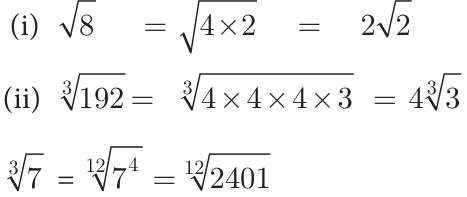</figure>
<p>2.</p>
<figure class="fig"></figure>
<ul class="qlist">
<li><span class="mk">(iii)</span><span class="lt">Pure and Mixed Surds : A surd is called a pure surd if its coefficient in its simplest form</span></li>
</ul>
<p>is 1. For example, 3 , 6 , 7 , 49 are pure surds. A surd is called a mixed surd if</p>
<p>its co-efficient in its simplest form is other than 1. For example, 5 3 , 2 5 , 3 6 are mixed surds.</p>
<ul class="qlist">
<li><span class="mk">(iv)</span><span class="lt">Simple and Compound Surds : A surd with a single term is said to be a simple surd.</span></li>
</ul>
<p>For example, 3 , 2 5 are simple surds. The algebraic sum of two (or more) surds is called a compound surd. For example, 5 +3 2, \(3 - 2 7\), \(5 - 7 2 + 6 3\) are compound surds.</p>
<ul class="qlist">
<li><span class="mk">(v)</span><span class="lt">Binomial Surd : A binomial surd is an algebraic sum (or difference) of 2 terms both of</span></li>
</ul>
<p>which could be surds or one could be a rational number and another a surd. For</p>
<aside class="sidenote"><p>are binomial surds.</p></aside>
<figure class="fig"></figure>
<aside class="sidenote"><p>2, ,</p></aside>
<h4 class="callout-h" id="s-solution">Solution</h4>
<p>The order of the surds 2, and are 3, 2, 4.</p>
<div class="mathblock"><p>L.C.M. of 3, 2, \(4 = 12\).</p></div>
<p>\(2 =\)  \(\frac{14}{23=212}\)    \(= 2 = 16\) ; \(4 =\)  \(\frac{16}{42=412}\)    \(= 4 = 4096\)  </p>
<p>   </p>
<div class="mathblock"><p>\(3 =\)  \(\frac{13}{34=312}\)    =</p></div>
<figure class="fig">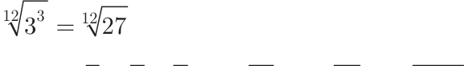</figure>
<p>The ascending order of the surds</p>
<p>that is, 2, 3, 4 .</p>
<h3 id="s-2-6-2-laws-of-radicals">2.6.2 Laws of Radicals</h3>
<p>For positive integers m, n and positive rational numbers a and b, it is worth remembering the following properties of radicals:</p>
<figure class="fig table-fig wide">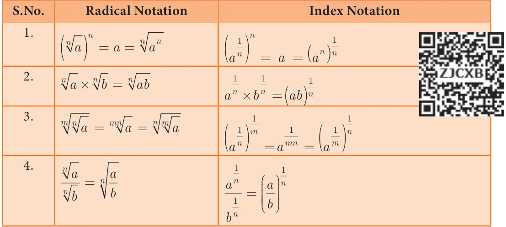</figure>
<p>We shall now discuss certain problems which require the laws of radicals for simplifying.</p>
<figure class="fig"></figure>
<p>Express each of the following surds in its simplest form (i) 108</p>
<p>and find its order, radicand and coefficient.</p>
<h4 class="callout-h" id="s-solution">Solution</h4>
<figure class="fig">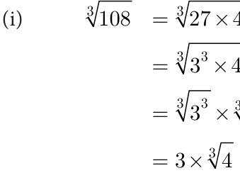</figure>
<p>2 108 2 54 3 27 (Laws of radicals - ii) 3 9 3 3 ( Laws of radicals- i) 1 order \(= 3\); radicand \(= 4\); coefficient \(= 3\)</p>
<figure class="fig"></figure>
<p>2 1024 2 512 2 256 [Laws of radicals - (i)] \(2 128 - 2 64\)   [Laws of radicals - (ii)] 22 3216</p>
<p>=  \(\times \times \times\)  [Laws of radicals - (i)] 22 84</p>
<div class="mathblock"><p>=  \(\times\)  \(- =\)  \(\frac{1}{8}\)  \(\times\)   \(\frac{1}{32}\)  \(2 21 = \frac{131}{644}\)</p></div>
<p>order= 3; radicand \(= \frac{1}{4}\) ; coefficient \(= \frac{1}{64}\) (These results can also be obtained using index notation).</p>
<h4 class="callout-h" id="s-note">Note</h4>
<p>Consider the numbers 5 and 6. As \(5 = 25\) and \(6 = 36\)</p>
<p>Therefore, 26, 27, 28, 29, 30, 31, 32, 33, 34, and 35 are surds between 5 and 6.</p>
<div class="mathblock"><p>Consider \(3 2 = 3 \times 2 = 18\) , \(2 3 = 2 \times 3 = 12\)</p></div>
<p>Therefore, 17, 15, 14, 13 are surds between 2 3 and 3 2 .</p>
<h3 id="s-2-6-3-four-basic-operations-on-surds">2.6.3 Four Basic Operations on Surds</h3>
<ul class="qlist">
<li><span class="mk">(i)</span><span class="lt">Addition and subtraction of surds : Like surds can be added and subtracted</span></li>
</ul>
<p>using the following rules:</p>
<div class="mathblock"><p>\(a b \pm c b =\) (a \(\pm\) c) b, where \(b &gt; 0\).</p></div>
<figure class="fig"></figure>
<aside class="sidenote"><p>. Check whether the sum is rational or . Is the answer rational or irrational?</p></aside>
<h4 class="callout-h" id="s-solution">Solution</h4>
<figure class="fig">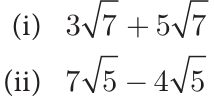</figure>
<figure class="fig">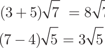</figure>
<p>= ( + ) . The answer is irrational. = ( - ) . The answer is irrational.</p>
<figure class="fig"></figure>
<p>Simplify the following:</p>
<ul class="qlist">
<li><span class="mk">(ii)</span><span class="lt">\(2 40 + 3 625 - 4 320\)</span></li>
</ul>
<h4 class="callout-h" id="s-solution">Solution</h4>
<figure class="fig"></figure>
<figure class="fig"></figure>
<ul class="qlist">
<li><span class="mk">(ii)</span><span class="lt">Multiplication and division of surds</span></li>
</ul>
<p>Like surds can be multiplied or divided by using the following rules:</p>
<figure class="fig table-fig wide"></figure>
<figure class="fig"></figure>
<h4 class="callout-h" id="s-solution">Solution</h4>
<figure class="fig"></figure>
<div class="mathblock"><p>) \(= 4 \times 2 \times 5\)</p></div>
<figure class="fig"></figure>
<p>Compute and give the answer in the simplest form: 2 ´ ´</p>
<h4 class="callout-h" id="s-solution">Solution</h4>
<figure class="fig wide"></figure>
<div class="mathblock"><p>\(2 72 \times 5 32 \times 3 =\) ( \(\times\) ) \(\times\) ( \(\times\) ) \(\times\)</p></div>
<p>\(= \times \times \times \times \times \times\)</p>
<div class="mathblock"><p>\(= 3600 \times\)</p><p>\(= 7200\)</p></div>
<figure class="fig"></figure>
<h4 class="callout-h" id="s-solution">Solution</h4>
<p>\(\frac{8}{66} = \frac{8}{1} _{6}\) (Note that 18 is the LCM of 6 and 9) 6</p>
<div class="mathblock"><p>\(= 8 _{3}\) (How?)</p></div>
<p>6  \(^{2}\)    Activity \(- 1 =\) 6 \(\frac{8}{3} \frac{1}{18}\)  (How ?) =  \(\frac{8 \times\) 8}{6 \(\times 6 \times\) 6} \(\frac{1}{18}\) Is it interesting to see this pattern ?</p>
<div class="mathblock"><p> 3 \(\frac{1}{18} ^{1}\)</p></div>
<p>=  \(\frac{8}{27}\)  \(\frac{1}{18} =\)  \(\frac{2}{3}\)   =  \(\frac{2}{3} =^{6} ^{6} \frac{2}{3} 4 \frac{4}{15} = 4 \frac{4}{15}\) and \(5 \frac{5}{24} = 5 \frac{5}{24}\)   Verify it. Can you frame 4 such new surds?</p>
<figure class="fig table-fig wide"></figure>
<figure class="fig"></figure>
<ul class="qlist">
<li><span class="mk">1.</span><span class="lt">Simplify the following using addition and subtraction properties of surds:</span></li>
</ul>
<figure class="fig"></figure>
<figure class="fig"></figure>
<ul class="qlist">
<li><span class="mk">2.</span><span class="lt">Simplify the following using multiplication and division properties of surds:</span></li>
</ul>
<figure class="fig"></figure>
<figure class="fig"></figure>
<ul class="qlist">
<li><span class="mk">3.</span><span class="lt">If \(= 1 414\). , \(= 1 732\). , \(= 2 236\). ,</span></li>
</ul>
<p>following correct to 3 places of decimals.</p>
<ul class="qlist">
<li><span class="mk">(i)</span><span class="lt">\(40 - 20\)</span></li>
</ul>
<figure class="fig"></figure>
<ul class="qlist">
<li><span class="mk">4.</span><span class="lt">Arrange surds in descending order : (i)</span></li>
<li><span class="mk">5.</span><span class="lt">Can you get a pure surd when you find</span></li>
<li><span class="mk">(i)</span><span class="lt">the sum of two surds (ii) the difference of two surds</span></li>
<li><span class="mk">(iii)</span><span class="lt">the product of two surds (iv) the quotient of two surds</span></li>
</ul>
<p>Justify each answer with an example.</p>
<ul class="qlist">
<li><span class="mk">6.</span><span class="lt">Can you get a rational number when you compute</span></li>
<li><span class="mk">(i)</span><span class="lt">the sum of two surds (ii) the difference of two surds</span></li>
<li><span class="mk">(iii)</span><span class="lt">the product of two surds (iv) the quotient of two surds</span></li>
</ul>
<p>Justify each answer with an example.</p>
<h2 id="s-2-7-rationalisation-of-surds">2.7 Rationalisation of Surds</h2>
<p>Rationalising factor is a term with which a term is multiplied or divided to make the whole term rational. Examples:</p>
<ul class="qlist">
<li><span class="mk">(i)</span><span class="lt">3 is a rationalising factor of 3 (since \(3 \times 3 =\) the rational number 3)</span></li>
</ul>
<ul class="qlist">
<li><span class="mk">(ii)</span><span class="lt">5 is a rationalising factor of 5 (since their product \(= 5 =5\), a rational)</span></li>
</ul>
<p>Thinking Corner</p>
<ul class="qlist">
<li><span class="mk">1.</span><span class="lt">In the example (i) above, can 12 also be a rationalising factor? Can you think of</span></li>
</ul>
<p>any other number as a rationalising factor for 3 ?</p>
<ul class="qlist">
<li><span class="mk">2.</span><span class="lt">Can you think of any other number as a rationalising factor for 5 in example (ii) ?</span></li>
</ul>
<ul class="qlist">
<li><span class="mk">3.</span><span class="lt">If there can be many rationalising factors for an expression containing a surd, is there</span></li>
</ul>
<p>any advantage in choosing the smallest among them for manipulation?</p>
<figure class="fig wide"></figure>
<h3 id="s-2-7-1-conjugate-surds">2.7.1 Conjugate Surds</h3>
<p>Can you guess a rationalising factor for \(3 + 2\) ? This surd has one rational part and one radical part. In such cases, the rationalising factor has an interesting form.</p>
<p>A rationalising factor for \(3 +\) . You can very easily check this.</p>
<figure class="fig"></figure>
<div class="mathblock"><p>\((3 + 2)(3 - 2) = -\) (</p></div>
<p>\(= - =\) , rational.</p>
<p>What is the rationalising factor for \(a +\) where a and b are rational numbers? Is it</p>
<p>\(a - b\) ? Check it. What could be the rationalising factor for \(a + b\) where a and b are rational numbers? Is it ? Or, is it \(- a + b\) ? Investigate.</p>
<p>Surds like are called conjugate surds. What is the conjugate of b +a ? It is - . You would have perhaps noted by now that a conjugate is usually obtained by changing the sign in front of the surd!</p>
<figure class="fig"></figure>
<figure class="fig"></figure>
<p>Rationalise the denominator of (i) 7 (ii)</p>
<div class="mathblock"><p>\(14 \frac{5+3}{5 - 3}\)</p></div>
<figure class="fig side-fig"></figure>
<h4 class="callout-h" id="s-solution">Solution</h4>
<ul class="qlist">
<li><span class="mk">(i)</span><span class="lt">Multiply both numerator and denominator by the rationalising factor .</span></li>
</ul>
<figure class="fig"></figure>
<aside class="sidenote"><p>) )</p></aside>
<p>\(= \frac{25+3+103}{22} = \frac{28+103}{22} = \frac{2 \times [14+53]}{22}\)</p>
<div class="mathblock"><p>\(= \frac{14+53}{11}\)</p></div>
<figure class="fig"></figure>
<ul class="qlist">
<li><span class="mk">1.</span><span class="lt">Rationalise the denominator</span></li>
</ul>
<div class="mathblock"><p>\(50 \frac{5}{35} 18 \frac{35}{6}\)</p></div>
<ul class="qlist">
<li><span class="mk">(i)</span><span class="lt">(ii) (iii) (iv)</span></li>
<li><span class="mk">2.</span><span class="lt">Rationalise the denominator and simplify</span></li>
</ul>
<figure class="fig"></figure>
<figure class="fig"></figure>
<ul class="qlist">
<li><span class="mk">3.</span><span class="lt">Find the value of a and b if \(- = +\)</span></li>
</ul>
<ul class="qlist">
<li><span class="mk">4.</span><span class="lt">If \(x = 5 + 2\), then find the value of \(x + \frac{1}{2}\)</span></li>
<li><span class="mk">5.</span><span class="lt">Given \(2 = 1 414\). , find the value of \(\frac{8-52}{3-22}\)</span></li>
</ul>
<figure class="fig side-fig"></figure>
<h2 id="s-2-8-scientific-notation">2.8 Scientific Notation</h2>
<p>Suppose you are told that the diameter</p>
<p>of the Sun is 13,92,000 km and that of the Earth is 12,740 km, it would seem to be a daunting task to compare them. In contrast, if</p>
<p>13,92,000 is written as \(1.392 \times 10\) and 12,740</p>
<p>as \(1.274 \times 10\) , one will feel comfortable. This sort of representation is known as scientific notation</p>
<div class="mathblock"><p>Since 1 392 . \(\times 10_{4} \times\) . 1 274. \(\times 10\)</p></div>
<p>You can imagine 108 Earths could line up across the face of the sun. Scientific notation is a way of representing numbers that are too large or too small, to be conveniently written in decimal form. It allows the numbers to be easily recorded and handled.</p>
<h3 id="s-2-8-1-writing-a-decimal-number-in-scientific-notation">2.8.1 Writing a Decimal Number in Scientific Notation</h3>
<p>Here are steps to help you to represent a number in scientific form:</p>
<ul class="qlist">
<li><span class="mk">(i)</span><span class="lt">Move the decimal point so that there is only one non-zero digit to its left.</span></li>
<li><span class="mk">(ii)</span><span class="lt">Count the number of digits between the old and new decimal point. This gives</span></li>
</ul>
<p>‘n’, the power of 10.</p>
<ul class="qlist">
<li><span class="mk">(iii)</span><span class="lt">If the decimal is shifted to the left, the exponent n is positive. If the decimal is</span></li>
</ul>
<p>shifted to the right, the exponent n is negative.</p>
<figure class="fig wide"></figure>
<p>The following table of base 10 examples may make things clearer:</p>
<figure class="fig table-fig wide"></figure>
<p>Let us look into few more examples.</p>
<figure class="fig"></figure>
<p>Express in scientific notation (i) 9768854 (ii) 0.04567891</p>
<ul class="qlist">
<li><span class="mk">(iii)</span><span class="lt">72006865.48</span></li>
</ul>
<h4 class="callout-h" id="s-solution">Solution</h4>
<ul class="qlist">
<li><span class="mk">(i)</span><span class="lt">9 7 6 8 8 5 4 . \(0 = 9 768854\). ´10</span></li>
</ul>
<p>The decimal point is to be moved six places to the left. Therefore \(n = 6\).</p>
<aside class="sidenote"><p>\(- 2\)</p></aside>
<ul class="qlist">
<li><span class="mk">(ii)</span><span class="lt">0 . \(0 4 5 6 7 8 9 1 = 4 567891\). \(\times 10\)</span></li>
</ul>
<p>The decimal point is to be moved two places to the right. Therefore \(n = - 2\) .</p>
<ul class="qlist">
<li><span class="mk">(iii)</span><span class="lt">7 2 0 0 6 8 6 5 . \(4 8 = 7 200686548\). \(\times 10\)</span></li>
</ul>
<p>The decimal point is to be moved seven places to the left. Therefore \(n = 7\) .</p>
<h3 id="s-2-8-2-converting-scientific-notation-to-decimal-form">2.8.2 Converting Scientific Notation to Decimal Form</h3>
<p>The reverse process of converting a number in scientific notation to the decimal form is easily done when the following steps are followed:</p>
<ul class="qlist">
<li><span class="mk">(i)</span><span class="lt">Write the decimal number.</span></li>
<li><span class="mk">(ii)</span><span class="lt">Move the decimal point by the number of places specified by the power of 10, to</span></li>
</ul>
<p>the right if positive, or to the left if negative. Add zeros if necessary.</p>
<ul class="qlist">
<li><span class="mk">(iii)</span><span class="lt">Rewrite the number in decimal form.</span></li>
</ul>
<figure class="fig"></figure>
<p>Write the following numbers in decimal form:</p>
<div class="mathblock"><p>6 34. ´ (ii) 2 00367. \(\times 10\)</p></div>
<p>\(- 5\)</p>
<h4 class="callout-h" id="s-solution">Solution</h4>
<p>(i)V 6 34. ´10</p>
<div class="mathblock"><p>Þ 6 . \(3 4 0 0 = 63400\)</p></div>
<p>\(- 5\)</p>
<ul class="qlist">
<li><span class="mk">(ii)</span><span class="lt">2 00367. \(\times 10\)</span></li>
</ul>
<p>0 0 0 0 0 2 . 0 0 3 6 7</p>
<div class="mathblock"><p>\(= 0 0000200367\).</p></div>
<h3 id="s-2-8-3-arithmetic-of-numbers-in-scientific-notation">2.8.3 Arithmetic of Numbers in Scientific Notation</h3>
<ul class="qlist">
<li><span class="mk">(i)</span><span class="lt">If the indices in the scientific notation of two numbers are the same, addition (or</span></li>
</ul>
<p>subtraction) is easily performed.</p>
<figure class="fig"></figure>
<p>The mass of the Earth is \(5.97 \times 10\) kg and that of the Moon is</p>
<p>\(0.073 \times 10\) kg. What is their total mass?</p>
<h4 class="callout-h" id="s-solution">Solution</h4>
<p>Total mass \(= 5.97 \times 10\) kg \(+ 0.073 \times 10\) kg</p>
<div class="mathblock"><p>\(= (5.97 + 0.073) \times 10\) kg</p></div>
<div class="mathblock"><p>\(= 6.043 \times 10\) kg</p></div>
<ul class="qlist">
<li><span class="mk">(ii)</span><span class="lt">The product or quotient of numbers in scientific notation can be easily done if</span></li>
</ul>
<p>we make use of the laws of radicals appropriately.</p>
<figure class="fig"></figure>
<p>Write the following in scientific notation :</p>
<ul class="qlist">
<li><span class="mk">(i)</span><span class="lt">(50000000) (ii) (0 00000005. )</span></li>
</ul>
<ul class="qlist">
<li><span class="mk">(iii)</span><span class="lt">\((300000) \times (2000)\) (iv) \((4000000) \div (0 00002\). )</span></li>
</ul>
<h4 class="callout-h" id="s-solution">Solution</h4>
<ul class="qlist">
<li><span class="mk">(i)</span><span class="lt">\((50000000) =(5 0\). \(\times 10\) ) (ii) (0 00000005. ) \(=(5 0\). \(\times 10\) )</span></li>
</ul>
<p>\(4 7 4 3 - 8 3\)</p>
<div class="mathblock"><p>\(= (5 0\). ) \(\times (10\) ) \(= (5 0\). ) \(\times (10\) )</p></div>
<p>\(4 7 4 3 - 8 3\)</p>
<div class="mathblock"><p>\(= 625 0\). \(\times 10 = (125 0\). ) \(\times (10)\)</p></div>
<p>\(28 - 24\)</p>
<p>\(2 28 2 - 24\)</p>
<div class="mathblock"><p>\(= 6 25\). \(\times 10 \times 10 = 1 25\). \(\times 10 \times 10\)</p></div>
<p>\(30 - 22\)</p>
<div class="mathblock"><p>\(= 6 25\). \(\times 10 = 1 25\). \(\times 10\)</p></div>
<ul class="qlist">
<li><span class="mk">(iii)</span><span class="lt">\((300000) \times (2000)\) (iv) \((4000000) \div (0 00002\). )</span></li>
</ul>
<div class="mathblock"><p>\(=(3 0\). \(\times\) ) \(\times (2 0\). \(\times\) ) \(=(4 0\). \(\times\) ) \(\div (2 0\). \(\times\) ) \(= (3 0\). ) \(\times\) ( ) \(\times (2 0\). ) \(\times\) ( ) \(= (4 0\). ) \(\times\) ( ) \(\div (2 0\). ) \(\times\) ( - ) \(= (27 0\). ) \(\times\) ( ) \(\times (16 0\). ) \(\times\) ( ) \(= 64 0\). \(\times\)</p></div>
<div class="mathblock"><p>\(=(2 7\). \(\times\) ) \(\times\) ( ) \(\times (1 6\). \(\times\) ) \(\times\) ( ) 16 0. \(\times _{+}\)</p></div>
<aside class="sidenote"><p>\(= \times \times\)</p></aside>
<div class="mathblock"><p>\(= 2 7\). \(\times 1 6\). \(\times \times \times \times = 4 32\). \(\times ^{+} ^{+} ^{+} = 4 32\). \(\times = 4 0\). \(\times\)</p></div>
<figure class="fig"></figure>
<ul class="qlist">
<li><span class="mk">1.</span><span class="lt">Represent the following numbers in the scientific notation:</span></li>
<li><span class="mk">(i)</span><span class="lt">569430000000 (ii) 2000.57</span></li>
<li><span class="mk">(iii)</span><span class="lt">0.0000006000 (iv) 0.0009000002</span></li>
<li><span class="mk">2.</span><span class="lt">Write the following numbers in decimal form:</span></li>
<li><span class="mk">(i)</span><span class="lt">3 459. ´10 (ii) 5 678. ´10</span></li>
</ul>
<p>\(- 5 - 7\)</p>
<ul class="qlist">
<li><span class="mk">(iii)</span><span class="lt">1 00005. \(\times 10\) (iv) 2 530009. \(\times 10\)</span></li>
<li><span class="mk">3.</span><span class="lt">Represent the following numbers in scientific notation:</span></li>
<li><span class="mk">(i)</span><span class="lt">\((300000) \times (20000)\) (ii) (0 000001. ) \(\div (0 005\). )</span></li>
</ul>
<ul class="qlist">
<li><span class="mk">(iii)</span><span class="lt">{(0 00003. ) \(\times (0 00005\). ) } \(\div {(0 009\). ) \(\times (0 05\). ) }</span></li>
</ul>
<ul class="qlist">
<li><span class="mk">4.</span><span class="lt">Represent the following information in scientific notation:</span></li>
<li><span class="mk">(i)</span><span class="lt">The world population is nearly 7000,000,000.</span></li>
<li><span class="mk">(ii)</span><span class="lt">One light year means the distance 9460528400000000 km.</span></li>
<li><span class="mk">(iii)</span><span class="lt">Mass of an electron is 0.000 000 000 000 000 000 000 000 000 00091093822 kg.</span></li>
<li><span class="mk">5.</span><span class="lt">Simplify:</span></li>
<li><span class="mk">(i)</span><span class="lt">\((2.75 \times 10\) ) \(+ (1.23 \times 10\) ) (ii) \((1.598 \times 10\) ) \(- (4.58 \times 10\) )</span></li>
</ul>
<ul class="qlist">
<li><span class="mk">(iii)</span><span class="lt">\((1.02 \times 10^{10}) \times (1.20 \times 10 - ^{3})\) (iv) \((8.41 \times 10^{4})\) ' \((4.3 \times 10^{5})\)</span></li>
</ul>
<figure class="fig table-fig wide"></figure>
<p>(1) always a natural number. (2) always an irrational number. (3) always a rational number (4) may be rational or irrational</p>
<ul class="qlist">
<li><span class="mk">2.</span><span class="lt">Which of the following is not true?.</span></li>
</ul>
<p>(1) Every rational number is a real number. (2) Every integer is a rational number. (3) Every real number is an irrational number. (4) Every natural number is a whole number.</p>
<ul class="qlist">
<li><span class="mk">3.</span><span class="lt">Which one of the following, regarding sum of two irrational numbers, is true?</span></li>
</ul>
<p>(1) always an irrational number. (2) may be a rational or an irrational number. (3) always a rational number. (4) always an integer.</p>
<ul class="qlist">
<li><span class="mk">4.</span><span class="lt">Which one of the following has a terminating decimal expansion?.</span></li>
</ul>
<p>(1) 645 (2) 98 (3) 1514 (4) 121</p>
<ul class="qlist">
<li><span class="mk">5.</span><span class="lt">Which one of the following is an irrational number</span></li>
</ul>
<p>\((1) 25 (2) 9 4 (3) 117 (4) \pi\)</p>
<ul class="qlist">
<li><span class="mk">6.</span><span class="lt">An irrational number between 2 and 2.5 is</span></li>
</ul>
<p>(1) 11 (2) 5 (3) .2 5 (4) 8</p>
<ul class="qlist">
<li><span class="mk">7.</span><span class="lt">The smallest rational number by which 13 should be multiplied so that its decimal</span></li>
</ul>
<p>expansion terminates with one place of decimal is</p>
<ul class="qlist">
<li><span class="mk">8.</span><span class="lt">\(\frac{(1) 10}{7}\) If \(1 = \frac{1}{.142857} 0\) then the value of 57 is</span></li>
</ul>
<p>(2) 103 (3) 3 (4) 30</p>
<p>(1) 0.142857 (2) 0.714285 (3) 0.571428 (4) 0.714285</p>
<ul class="qlist">
<li><span class="mk">9.</span><span class="lt">Find the odd one out of the following.</span></li>
</ul>
<p>(1) 32 # 2 (2) 273 (3) 72 # 8 (4) 1854</p>
<ul class="qlist">
<li><span class="mk">10.</span><span class="lt">\(0.34 + 0.34 =\)</span></li>
</ul>
<p>(1) .0 687 (2) .680 (3) 0.68 (4) 0.687</p>
<ul class="qlist">
<li><span class="mk">11.</span><span class="lt">Which of the following statement is false?</span></li>
</ul>
<p>(1) The square root of 25 is 5 or \(- 5 (3) 25 = 5\)</p>
<div class="mathblock"><p>\((2) - 25 = - 5 (4) 25 = \pm 5\)</p></div>
<ul class="qlist">
<li><span class="mk">12.</span><span class="lt">Which one of the following is not a rational number?</span></li>
</ul>
<figure class="fig"></figure>
<div class="mathblock"><p>\(\frac{7}{3}\)</p></div>
<p>(2) (3) 0 01. (4) 13</p>
<ul class="qlist">
<li><span class="mk">13.</span><span class="lt">=</span></li>
</ul>
<p>(2) 5 6 (3) 5 3 (4) 3 5</p>
<ul class="qlist">
<li><span class="mk">14.</span><span class="lt">, then \(k =\)</span></li>
</ul>
<p>(1) 2 (2) 4 (3) 8 (4) 16</p>
<figure class="fig"></figure>
<ul class="qlist">
<li><span class="mk">15.</span><span class="lt">=</span></li>
</ul>
<p>(1) (2) 8 21 (3) 8 10 (4) 6 21</p>
<ul class="qlist">
<li><span class="mk">16.</span><span class="lt">When written with a rational denominator, the expression \(\frac{23}{32}\) can be simplified as</span></li>
</ul>
<div class="mathblock"><p>\(3 2 3 \frac{2}{3}\)</p></div>
<p>(1) (2) (3) (4)</p>
<ul class="qlist">
<li><span class="mk">17.</span><span class="lt">When ) is simplified, we get</span></li>
</ul>
<figure class="fig"></figure>
<p>(1) (2) 22-4 10 (3) 8-4 10 (4) 2 10 -2</p>
<ul class="qlist">
<li><span class="mk">18.</span><span class="lt">(0 000729. ) \(\frac{ - 3 - 3}{4 \times 0 09.4}\) ( ) = ______</span></li>
</ul>
<p>\((1) \frac{10}{3} 3 (2) \frac{10}{5} 3 (3) \frac{10}{2} 3 (4) \frac{10}{6} 3\)</p>
<ul class="qlist">
<li><span class="mk">19.</span><span class="lt">If \(9 = 9\) , then \(x =\) ______</span></li>
</ul>
<p>\(\frac{2}{3} \frac{4}{3} \frac{1}{3} \frac{5}{3}\)</p>
<p>(1) (2) (3) (4)</p>
<ul class="qlist">
<li><span class="mk">20.</span><span class="lt">The length and breadth of a rectangular plot are \(5 \times 10\) and \(4 \times 10\) metres</span></li>
</ul>
<p>respectively. Its area is ______.</p>
<div class="mathblock"><p>\((1) 9 \times 10 m (2) 9 \times 10 m (3) 2 \times 10 m (4) 20 \times 10 m\)</p></div>
<h4 class="callout-h" id="s-points-to-remember">Points to Remember</h4>
<p>„ When the decimal expansion of \(\frac{p}{q}\) , q!0 terminates that is, comes to an end, the decimal is called a terminating decimal. „ In the decimal expansion of \(\frac{p}{q}\) , q!0 when the remainder is not zero, we have a repeating (recurring) block of digits in the quotient. In this case, the decimal expansion is called non-terminating and recurring. „ If a rational number \(\frac{p}{q}\) , q! 0 can be expressed in the form \(\frac{p}{2m#5n}\) , where p ! Z and m, n ! W, then the rational number will have a terminating decimals. Otherwise, the rational number will have a non-terminating repeating (recurring) decimal. „ A rational number can be expressed either a terminating or a non- terminating recurring decimal. „ An irrational number is a non-terminating and non-recurring decimal, i.e. it cannot be written in form \(\frac{p}{q}\) , where p and q are both integers and q! 0. „ The union of all rational numbers and all irrational numbers is called the set of real numbers. „ Every real number is either a rational number or an irratonal number. „ If a real number is not rational number, then it must be an irrational number.</p>
<p>„ If ‘a’ is a positive rational number, ‘n’ is a positive integer and if a is an irrational</p>
<p>number, then a is called as a surd. „ If ‘m’, ‘n’ are positive integers and a, b are positive rational numbers, then</p>
<ul class="qlist">
<li><span class="mk">(i)</span><span class="lt">( a) \(= a = a\) (ii) \(a \times b =\) ab (iii) \(a = a = a\) (iv) \(\frac{ana}{nbb} =\)</span></li>
</ul>
<p class="lead">n n n n n n n m n mn n m n</p>
<p>„ The process of multiplying a surd by another surd to get a rational number is called Rationalisation.</p>
<p>„ Expressing a number N in the form of \(N = a \times 10\) where, \(1 \le a &lt; 10\) and ‘n’ is an integer is called as Scientific Notation.</p>
<h2 class="callout-h" id="s-ict-corner-1">ICT Corner-1</h2>
<p>Expected Result is shown in this picture</p>
<p>Step \(- 1\)</p>
<p>Open the Browser and copy and paste the Link given below (or) by typing the URL given (or) Scan the QR Code.</p>
<h4 class="callout-h" id="s-step-2">Step \(- 2\)</h4>
<p>GeoGebra workbook named “Real Numbers” will open. There are several worksheets in the workbook. Open the worksheet named “Square root spiral \(- 1st\) part”</p>
<h4 class="callout-h" id="s-step-3">Step-3</h4>
<p>Drag the slider named “Steps “. The construction of Square root of numbers 2,3,4,5,…. will appear step by step.</p>
<h4 class="callout-h" id="s-step-4">Step-4</h4>
<p>By dragging the slider named “Unit segment” you can enlarge the diagram for more clarity. Now you can draw the same in a paper and measure the values obtained</p>
<p>Browse in the link</p>
<p>Union of Sets:</p>
<h2 class="callout-h" id="s-ict-corner-2">ICT Corner-2</h2>
<p>Expected Result is shown in this picture</p>
<p>Step \(- 1\)</p>
<p>Open the Browser type the URL Link given below (or) Scan the QR Code. GeoGebra work sheet named “Real Numbers” will open. In the work sheet there are two activities. 1. Rationalising the denominator for surds and 2. Law of exponents. In the first activity procedure for rationalising the denominator is given. Also, example is given under. To change the values of a and b enter the value in the input box given.</p>
<h4 class="callout-h" id="s-step-2">Step \(- 2\)</h4>
<p>In the second activity law of exponents is given. Also, example is given on right side. To change the value of m and n move the sliders and check the answers.</p>
<p>Browse in the link</p>
<figure class="fig table-fig wide"></figure>
<h2 id="s-3-1-introduction">3.1 Introduction</h2>
<h3 id="s-why-study-polynomials">Why study polynomials?</h3>
<p>This chapter is going to be all about polynomial expressions in Algebra. These are your friends, you have already met, without being properly introduced! We will properly introduce them to you, and they are going to be your friends in whatever mathematical journey you undertake from here on.</p>
<figure class="fig"></figure>
<div class="mathblock"><p>\((a+1) = a + 2a + 1\)</p></div>
<p>Now that’s a polynomial. That does not look very special, does it? We have seen lots of algebraic expressions already, so why to bother about these? There are many reasons why polynomials are interesting and important in mathematics.</p>
<p>For now, we will just take one example showing their use. Remember, we studied lots of arithmetic and then came to algebra, thinking of variables as unknown numbers. Actually we can now get back to numbers and try to write them in the language of algebra.</p>
<p>Consider a number like 5418. It is actually 5 thousand 4 hundred and eighteen. Write it as:</p>
<div class="mathblock"><p>5 # \(1000 + 4\) # \(100 + 1\) # \(10 + 8\)</p></div>
<p>which again can be written as:</p>
<div class="mathblock"><p>5 # \(10^{3} + 4\) # \(10^{2} + 1\) # \(10^{1} + 8\)</p></div>
<p>Now it should be clear what this is about. This is of the form \(5x + 4x + x + 8\), which is a polynomial. How does writing in this form help? We always write numbers in decimal \(= 10\). Then what is the fun? Remember divisibility rules? Recall that a number is divisible by 3 only if the sum of its digits is divisible by 3. Now notice that if x divided by 3 gives 1 as remainder, then it is the</p>
<figure class="fig"><figcaption>Fig. 3.1</figcaption></figure>
<aside class="sidenote"><p>same for x , x , etc. They all give remainder 1 when divided by 3. So you get each digit multiplied by 1, added together, which is the sum of digits. If that is divisible by 3, so is the whole number. You can check that the rule for</p><p>2 3</p></aside>
<p>divisibility by 9, or even divisibility by 2 or 5, can be proved similarly with great ease. Our purpose is not to prove divisibility rules but to show that representing numbers as polynomials shows us many new number patterns. In fact, many objects of study, not just numbers, can be represented as polynomials and then we can learn many things about them.</p>
<figure class="fig table-fig"></figure>
<p>In algebra we think of x , \(5x - 3\), 2x+7 etc., as functions of x. We draw pictures to see Fig. 3.2 how the function varies as x varies, and this is very helpful to understand the function. And now, it turns out that a good number of functions that we encounter in science, engineering, business studies, economics, and of course in mathematics, all can be approximated by polynomials, if not actually be represented as polynomials. In fact, approximating functions using polynomials is a fundamental theme in all of higher mathematics and a large number of people make a living, simply by working on this idea.</p>
<p>Polynomials are extensively used in biology, computer science, communication systems ... the list goes on. The given pictures (Fig. 3.1, 3.2 &amp; 3.3) may be repsresented as a quadratic polynomial. We will not only learn what polynomials are but also how we can use them like in numbers, we add them, multiply them, divide one by another, etc., Fig. 3.3 Observe the given figures.</p>
<figure class="fig"></figure>
<figure class="fig side-fig"><figcaption>Fig. 3.4 Fig. 3.5 Fig. 3.6</figcaption></figure>
<figure class="fig"></figure>
<figure class="fig"></figure>
<p>The total area of the above 3 figures is \(4x + 2xy + y\) , we call this expression as an algebraic expression. Here for different values of x and y we get different values of areas. Since the sides x and y can have different values, they are called variables. Thus, a variable is a symbol which can have various numerical values.</p>
<p>Variables are usually denoted by letters such as x, y, z, etc. In the above algebraic expression the numbers 4, 2 are called constants. Hence the constant is a symbol, which has a fixed numeric value.</p>
<h3 id="s-constants">Constants</h3>
<p>Any real number is a constant. We can form numerical expressions using constants and the four arithmetical operations. Examples of constant are 1, 5, \(- 32\), \(\frac{3}{7}\) , \(- 2\) , 8.432, 1000000 and so on.</p>
<h3 id="s-variables">Variables</h3>
<p>The use of variables and constants together in expressions give us ways of representing a range of numbers, one for each value of the variable. For instance, we know the expression 2pr, it stands for the circumference of a circle of radius r. As we vary r, say, 1cm, 4cm, 9cm etc., we get larger and larger circles of circumference 2p, 8p, 18p etc.</p>
<p>The single expression 2pr is a short and compact description for the circumference of all these circles. We can use arithmetical operations to combine algebraic expressions and get a rich language of functions and numbers. Letters used for representing unknown real numbers called variables are x, y, a, b and so on.</p>
<h3 id="s-algebraic-expression">Algebraic Expression</h3>
<p>An algebraic expression is a combination of constants and variables combined together</p>
<p>with the help of the four fundamental signs. Examples of algebraic expression are</p>
<div class="mathblock"><p>\(\frac{5}{4}\)</p><p>\(x - 4x + 8x - 1\), \(4xy + 3x y -\) xy \(+ 9\), \(5x - 7x + 6\)</p></div>
<h3 id="s-coefficients">Coefficients</h3>
<p>Any part of a term that is multiplied by the variable of the term is called the coefficient of the remaining term.</p>
<p>For example,</p>
<p>\(x + 5x - 24\) is an algebraic expression containing three terms. The variable of this</p>
<p>expression is x, coefficient of x is 1, the coefficient of x is 5 and the constant is \(- 24\) (not 24).</p>
<figure class="fig table-fig wide"></figure>
<h2 id="s-3-2-polynomials">3.2 Polynomials</h2>
<p>A polynomial is an arithmetic expression consisting of variables and constants that involves four fundamental arithmetic operations and non-negative integer exponents of variables.</p>
<h3 id="s-polynomial-in-one-variable">Polynomial in One Variable</h3>
<p>An algebraic expression of the form p^xh = anx + an- \(1x +\) ... \(+ a2x + a1x + a0\) is called Polynomial in one variable x of degree ‘n’ where a0,a1,a2,...an are constants (a_{n} ! 0) and n is a whole number. In general polynomials are denoted by f^xh,g^xh,p^th,q^zh and r(x) and so on.</p>
<aside class="sidenote"><p>n n- 1 2</p></aside>
<h3 class="callout-h" id="s-note">Note</h3>
<p>The coefficient of variables in the algebraic expression may have any real numbers, _{T} where as the powers of variables in polynomial must have only non-negative integral</p>
<p>powers that is, only whole numbers. Recall that \(a = 1\) for all a.</p>
<p>For example,</p>
<figure class="fig table-fig wide"></figure>
<p>polynomial. For example: \(+ - - +\) (ii) \(5 - 3y + 6y^{2}+ 4y^{3} - y^{4}\)</p>
<h3 id="s-degree-of-the-polynomial">Degree of the Polynomial</h3>
<p>In a polynomial of one variable, the highest power of the variable is called the degree of the polynomial. In case of a polynomial of more than one variable, the sum of the powers of the variables in each term is considered and the highest sum so obtained is called the degree of the polynomial. This is intended as the most significant power of the polynomial. Obviously when</p>
<p>we write x +5x the value of x becomes much larger than 5x for large values of x. So we</p>
<p>could think of \(x + 5x\) being almost the same as x for large values of x. So the higher the power, the more it dominates. That is why we use the highest power as important information about the polynomial and give it a name.</p>
<figure class="fig"></figure>
<p>Find the degree of each term for the following polynomial and</p>
<p>also find the degree of the polynomial \(6ab + 5a b c - 7ab + 4b c + 2\)</p>
<h4 class="callout-h" id="s-solution">Solution</h4>
<p>Given polynomial is \(6ab + 5a b c - 7ab + 4b c + 2\)</p>
<p>Degree of each of the terms is given below.</p>
<p>6ab has degree \((1+8) = 9\)</p>
<p>5a b c has degree \((2+3+2) = 7 7ab\) has degree \((1+1) = 2\)</p>
<p>4b c has degree \((2+1) = 3\) The constant term 2 is always regarded as having degree Zero.</p>
<p>The degree of the polynomial \(6ab + 5a b c - 7ab + 4b c + 2\).</p>
<p>= the largest exponent in the polynomial</p>
<div class="mathblock"><p>\(= 9\)</p></div>
<h3 id="s-a-very-special-polynomial">A very Special Polynomial</h3>
<figure class="fig side-fig"></figure>
<p>We have said that coefficients can be any real numbers. What if the coefficient is zero? Well that term becomes zero, so we won’t write it. What if all the coefficients are zero? We acknowledge that it exists and give it a name.</p>
<p>It is the polynomial having all its coefficients to be zero.</p>
<div class="mathblock"><p>g( )t \(= 0t + 0t - 0t\) , \(h(p)= 0p - 0p + 0\)</p></div>
<p>From the above example we see that we cannot talk of the degree of the zero polynomial, since the above two have different degrees but both are zero polynomial. So we say that the degree of the zero polynomial is not defined.</p>
<p>The degree of the zero polynomial is not defined</p>
<h3 id="s-types-of-polynomials">Types of Polynomials</h3>
<figure class="fig table-fig wide"></figure>
<figure class="fig table-fig wide"></figure>
<h3 id="s-3-2-1-arithmetic-of-polynomials">3.2.1 Arithmetic of Polynomials</h3>
<p>We now have a rich language of polynomials, and we have seen that they can be classified in many ways as well. Now, what can we do with polynomials? Consider a polynomial on x. We can evaluate the polynomial at a particular value of x. We can ask how the function given by the polynomial changes as x varies. Write the polynomial equation p(x) \(= 0\) and solve for x. All this is interesting, and we will be doing plenty of all this as we go along. But there is something else we can do with polynomials, and that is to treat them like numbers! We already have a clue to this at the beginning of the chapter when we saw that every positive integer could be represented as a polynomial. Following arithmetic, we can try to add polynomials, subtract one from another, multiply polynomials, divide one by another. As it turns out, the analogy between numbers and polynomials runs deep, with many interesting properties relating them. For now, it is fun to simply try and define these operations on polynomials and work with them.</p>
<h3 id="s-addition-of-polynomials">Addition of Polynomials</h3>
<p>The addition of two polynomials is also a polynomial.</p>
<h3 class="callout-h" id="s-note">Note</h3>
<p>Only like terms can be added. \(3x + 5x\) gives 8x but unlike terms such as 3x and 5x</p>
<p>when added gives \(3x + 5x\) , a new polynomial.</p>
<h4 class="callout-h" id="s-example-3-4">Example 3.4</h4>
<p>If ^ \(= - + +\) and ^ \(= + +\) , then find</p>
<p>+ ^ ^</p>
<figure class="fig table-fig"></figure>
<h4 class="callout-h" id="s-solution">Solution</h4>
<p>We see that p(x) + q(x) is also a polynomial. Hence the sum of any two polynomials is also a polynomial.</p>
<h3 id="s-subtraction-of-polynomials">Subtraction of Polynomials</h3>
<p>The subtraction of two polynomials is also a polynomial.</p>
<figure class="fig wide"></figure>
<figure class="fig"></figure>
<p>If ^ \(= - + +\) and q^xh \(= x + 2x + 4\), then find</p>
<p>- ^ ^</p>
<h4 class="callout-h" id="s-solution">Solution</h4>
<figure class="fig table-fig"></figure>
<p>We see that p(x) - q(x) is also a polynomial. Hence the subtraction of any two</p>
<p>polynomials is also a polynomial.</p>
<h3 id="s-multiplication-of-two-polynomials">Multiplication of Two Polynomials</h3>
<p>Divide a rectangle with 8 units of length and 7</p>
<figure class="fig side-fig"></figure>
<p>units of breadth into 4 rectangles as shown below, and observe that the area is same, this motivates us to study the multiplication of polynomials.</p>
<p>For example, considering length as (x+1) and</p>
<p>breadth as (3x+2) the area of the rectangle can be found by the following way. \(x +\)</p>
<figure class="fig side-fig"></figure>
<figure class="fig"></figure>
<p>Hence the area of the rectangle is</p>
<div class="mathblock"><p>\(+ 3x + 2x + 2\)</p><p>\(+ 5x + 2\)</p></div>
<p>Find the product \((4x - 5)\) and \((2x + 3x - 6)\).</p>
<h4 class="callout-h" id="s-solution">Solution</h4>
<p>To multiply \((4x - 5)\) and \((2x + 3x - 6)\) distribute each term of the first polynomial to</p>
<p>every term of the second polynomial. In this case, we need to distribute the terms 4x and \(- 5\). Then gather the like terms and combine them:</p>
<figure class="fig"></figure>
<p>\(- + - = + - - + -\) ^ ^ ^ ^</p>
<figure class="fig"></figure>
<div class="mathblock"><p>\(= - 10x - 15x + 30\)</p></div>
<div class="mathblock"><p>\(= 8x +2x - 39x +30\)</p></div>
<p>Aliter: You may also use the method of detached coefficients:</p>
<div class="mathblock"><p>\(2 +3 -6 +4 -5 - 10 - 15 +30\)</p><p>\(8 +12 - 24 8 +2 - 39 +30\)</p><p>` \((4x - 5) (2x^{2}+3x - 6) = 8x^{3}+ 2x^{2} - 39x + 30\)</p></div>
<figure class="fig"></figure>
<ul class="qlist">
<li><span class="mk">1.</span><span class="lt">Which of the following expressions are polynomials? If not give reason:</span></li>
<li><span class="mk">(i)</span><span class="lt">\(\frac{1}{x2} + 3x - 4\) (ii) x (x \(- 1)\)</span></li>
</ul>
<ul class="qlist">
<li><span class="mk">(iii)</span><span class="lt">\(\frac{1}{x}\) (x \(+ 5)\) (iv) \(\frac{1}{x-2} + \frac{1}{x-1} + 7\)</span></li>
<li><span class="mk">(v)</span><span class="lt">\(5 x + 3 x + 2\) (vi) \(m - m + 7m - 10\)</span></li>
</ul>
<ul class="qlist">
<li><span class="mk">2.</span><span class="lt">Write the coefficient of x and x in each of the following polynomials.</span></li>
</ul>
<ul class="qlist">
<li><span class="mk">(i)</span><span class="lt">\(4 + \frac{2}{5} x - 3x\) (ii) \(6 - 2x + 3x - 7 x\)</span></li>
</ul>
<ul class="qlist">
<li><span class="mk">(iii)</span><span class="lt">rx \(- x + 2\) (iv) \(3 x + 2 x + 0 5\).</span></li>
</ul>
<ul class="qlist">
<li><span class="mk">(v)</span><span class="lt">\(x - \frac{7}{2} x + 8\)</span></li>
</ul>
<ul class="qlist">
<li><span class="mk">3.</span><span class="lt">Find the degree of the following polynomials.</span></li>
<li><span class="mk">(i)</span><span class="lt">\(1 - 2 y + y\) (ii) \(\frac{x-x+6x}{x2}\)</span></li>
</ul>
<ul class="qlist">
<li><span class="mk">(iii)</span><span class="lt">x ^x + xh _{3} _{2} (iv) \(3x + 9x + 27x\)</span></li>
</ul>
<ul class="qlist">
<li><span class="mk">(v)</span><span class="lt">\(2 5 p - \frac{8p}{3} + \frac{2p}{7}\)</span></li>
</ul>
<ul class="qlist">
<li><span class="mk">4.</span><span class="lt">Rewrite the following polynomial in standard form.</span></li>
<li><span class="mk">(i)</span><span class="lt">\(x - 9 + 7 x + 6x \frac{7}{2} + -\)</span></li>
</ul>
<ul class="qlist">
<li><span class="mk">(iii)</span><span class="lt">\(7x - \frac{6}{5} x + 4x - 1 - - \frac{7}{3} +\)</span></li>
</ul>
<figure class="fig"></figure>
<ul class="qlist">
<li><span class="mk">5.</span><span class="lt">Add the following polynomials and find the degree of the resultant polynomial.</span></li>
<li><span class="mk">(i)</span><span class="lt">p^xh \(= 6x_{3} - 7x + 2\) q^xh \(= 6x_{2} - 7x + 15\)</span></li>
</ul>
<ul class="qlist">
<li><span class="mk">(ii)</span><span class="lt">h^xh \(= 7x -_{4} 6x +_{2} 1\) f^xh \(= 7x +_{3} 17x - 9\)</span></li>
<li><span class="mk">(iii)</span><span class="lt">f^xh \(= 16x - 5x + 9\) g^xh \(= - 6x + 7x - 15\)</span></li>
<li><span class="mk">6.</span><span class="lt">Subtract the second polynomial from the first polynomial and find the degree of the</span></li>
</ul>
<p>resultant polynomial.</p>
<ul class="qlist">
<li><span class="mk">(i)</span><span class="lt">p^xh \(= 7x + 6x - 1\) q^xh \(= 6x - 9\)</span></li>
</ul>
<ul class="qlist">
<li><span class="mk">(ii)</span><span class="lt">f^yh \(= 6_{5}y - 7_{4}y + 2\) g^yh \(= 7y_{2}+ y\)</span></li>
</ul>
<ul class="qlist">
<li><span class="mk">(iii)</span><span class="lt">h^zh \(= z - 6z + z\) f^zh \(= 6z + 10z - 7\)</span></li>
<li><span class="mk">7.</span><span class="lt">What should be added to \(2x + 6x - 5x + 8\) to get \(3x - 2x + 6x + 15\) ?</span></li>
</ul>
<ul class="qlist">
<li><span class="mk">8.</span><span class="lt">What must be subtracted from \(2x + 4x - 3x + 7\) to get \(3x - x + 2x + 1\) ?</span></li>
</ul>
<ul class="qlist">
<li><span class="mk">9.</span><span class="lt">Multiply the following polynomials and find the degree of the resultant polynomial:</span></li>
<li><span class="mk">(i)</span><span class="lt">p^xh \(= x - 9\) q^xh \(= 6x + 7x - 2\)</span></li>
</ul>
<ul class="qlist">
<li><span class="mk">(ii)</span><span class="lt">f^xh \(= 7x_{2}+ 2\) g(x) \(= 15x - 9\)</span></li>
<li><span class="mk">(iii)</span><span class="lt">h^xh \(= 6x - 7x + 1\) f^xh \(= 5x - 7\)</span></li>
<li><span class="mk">10.</span><span class="lt">The cost of a chocolate is Rs. (x + y) and Amir bought (x + y) chocolates. Find the total</span></li>
</ul>
<p>amount paid by him in terms of x and y. If \(x =10\), \(y =5\) find the amount paid by him.</p>
<ul class="qlist">
<li><span class="mk">11.</span><span class="lt">The length of a rectangle is (3x+2) units and it’s breadth is \((3x - 2)\) units. Find its area in</span></li>
</ul>
<p>terms of x. What will be the area if \(x = 20\) units.</p>
<ul class="qlist">
<li><span class="mk">12.</span><span class="lt">p^xh is a polynomial of degree 1 and q^xh is a polynomial of degree 2. What kind of</span></li>
</ul>
<p>the polynomial p(x) \(\times\) q(x) is ?</p>
<h3 id="s-3-2-2-value-and-zeros-of-a-polynomial">3.2.2 Value and Zeros of a Polynomial</h3>
<p>Consider the two graphs given below. The first is linear, the second is quadratic. The first intersects the X axis at one point (x \(= - 3)\) and the second at two points (x \(= -1\) and \(x = 2)\). They both intersect the Y axis only at one point. In general, every polynomial has a graph and the graph is shown as a picture (since we all like pictures more than formulas, don’t we?). But also, the graph contains a lot of useful information like whether it is a straight line, what is the shape of the curve, how many places it cuts the x-axis, etc.</p>
<figure class="fig table-fig wide"><figcaption>Fig. 3.7 Fig. 3.8</figcaption></figure>
<p>In general, the value of a polynomial p(x) at x=a, denoted p(a), is obtained by replacing x by a, where a is any real number. Notice that the value of p(x) can be zero for many possible values of x as in the second graph 3.8. So it is interesting to ask, for how many values of x, does p(x) become zero, and for which values ? We call these values of x, the zeros of the polynomial p(x). Once we see that the values of the polynomial are what we plot in the graph of the polynomial, it is also easy to notice that the polynomial becomes zero exactly when the graph intersects the X-axis.</p>
<figure class="fig wide"></figure>
<p>For Fig. 3.7, Number of zeros is equal to 1 For Fig. 3.8, Number of zeros is equal to 2</p>
<figure class="fig side-fig"></figure>
<h3 id="s-value-of-a-polynomial">Value of a Polynomial</h3>
<p>Value of a polynomial p^xh at \(x = a\) is p(a) obtained on replacing x by a ^a ! Rh</p>
<p>For example,</p>
<div class="mathblock"><p>Consider f^xh \(= x + 3x - 1\).</p></div>
<p>The value of f(x) at \(x = 2\) is</p>
<div class="mathblock"><p>\(f(2) = 2 +3(2) - 1 = 4+6-1 = 9\).</p></div>
<h3 id="s-zeros-of-polynomial">Zeros of Polynomial</h3>
<ul class="qlist">
<li><span class="mk">(i)</span><span class="lt">Consider the polynomial p(x) \(= 4x - 6x + 3x - 14\)</span></li>
</ul>
<p>The value of p(x) at \(x = 1\) is \(p(1) = 4(1) - 6(1) + 3(1) - 14\)</p>
<div class="mathblock"><p>\(= 4 - 6 + 3 - 14 = - 13\)</p></div>
<p>Then, we say that the value of p(x) at \(x = 1\) is \(- 13\).</p>
<p>If we replace x by 0, we get \(p(0) = 4(0) - 6(0) + 3(0) - 14\)</p>
<div class="mathblock"><p>\(= 0 - 0 + 0 - 14 = - 14\)</p></div>
<p>we say that the value of p(x) at \(x = 0\) is \(- 14\).</p>
<p>The value of p(x) at \(x = 2\) is \(p(2) = 4(2) - 6(2) + 3(2) - 14\)</p>
<div class="mathblock"><p>\(= 32 - 24 + 6 - 14 = 0\)</p></div>
<p>Since the value of p(x) at \(x = 2\) is zero, we can say that 2 is one of the zeros of p(x)</p>
<div class="mathblock"><p>where p(x) \(= 4x - 6x + 3x - 14\).</p></div>
<h3 id="s-roots-of-a-polynomial-equation">Roots of a Polynomial Equation</h3>
<p>In general, if p(a) \(= 0\) we say that a is zero of polynomial p(x) or a is the root of</p>
<p>polynomial equation p(x) \(= 0\)</p>
<figure class="fig"></figure>
<p>If f^xh \(= x - 4x + 3\), then find the values of f^1h, f^- 1h, f^2h, f^3h. Also find the zeros of the polynomial f(x).</p>
<h4 class="callout-h" id="s-solution">Solution</h4>
<p>\(= - +\) ^</p>
<figure class="fig wide"><figcaption>Fig. 3.9</figcaption></figure>
<p>Since the value of the polynomial f(x) at \(x = 1\) and \(x = 3\) is zero, as the zeros of polynomial f(x) are 1 and 3.</p>
<figure class="fig"></figure>
<p>Find the Zeros of the following polynomials.</p>
<ul class="qlist">
<li><span class="mk">(i)</span><span class="lt">f(x) \(= 2x + 1\) (ii) f(x) \(= 3x - 5\)</span></li>
</ul>
<h4 class="callout-h" id="s-solution">Solution</h4>
<ul class="qlist">
<li><span class="mk">(i)</span><span class="lt">Given that f(x) \(= 2x + 1 =\) 2`x \(+ \frac{1}{2} j\)</span></li>
</ul>
<div class="mathblock"><p>=2`x - (- \(\frac{1}{2}\) )j</p></div>
<p>f`- \(\frac{1}{2} j = 28- \frac{1}{2} -\) `- \(\frac{1}{2}\) jB \(= 2(0) = 0\) Since f`- \(\frac{1}{2} j = 0\), \(x = - \frac{1}{2}\) is the zero of f(x)</p>
<ul class="qlist">
<li><span class="mk">(ii)</span><span class="lt">Given that f(x) \(= 3x - 5 =\) 3`x \(- \frac{5}{3} j\)</span></li>
</ul>
<p>f` \(\frac{5}{3} j =\) 3` \(\frac{5}{3} - \frac{5}{3} j = 3(0) = 0\) Since f` \(\frac{5}{3} j=0\), \(x = \frac{5}{3}\) is the zero of f(x)</p>
<figure class="fig"></figure>
<p>Find the roots of the following polynomial equations.</p>
<ul class="qlist">
<li><span class="mk">(i)</span><span class="lt">\(5x - 3 = 0\) (ii) \(- 7 - 4x = 0\)</span></li>
</ul>
<h4 class="callout-h" id="s-note">Note</h4>
<h4 class="callout-h" id="s-solution">Solution</h4>
<ul class="qlist">
<li><span class="mk">(i)</span><span class="lt">A zero of a polynomial can be</span></li>
<li><span class="mk">(i)</span><span class="lt">\(5x - 3 = 0\) any real number not necessarily</span></li>
</ul>
<div class="mathblock"><p>(or) \(5x = 3\) zero.</p></div>
<p>Then, \(x = \frac{3}{5}\) (ii) A non zero constant polynomial</p>
<ul class="qlist">
<li><span class="mk">(ii)</span><span class="lt">\(- 7 - 4x = 0\) has no zero.</span></li>
</ul>
<p>(or) \(= - 7\) (iii) By convention, every real</p>
<p>Then, \(= \frac{7}{-4} = - \frac{7}{4}\) number is zero of the zero</p>
<aside class="sidenote"><p>polynomial</p></aside>
<figure class="fig"></figure>
<p>Check whether \(- 3\) and 3 are zeros of the polynomial \(x - 9\)</p>
<h4 class="callout-h" id="s-solution">Solution</h4>
<div class="mathblock"><p>Let f(x) \(= x - 9\)</p></div>
<div class="mathblock"><p>Then, f( \(- 3) =\) ( \(- 3) - 9 = 9 - 9 = 0\)</p></div>
<div class="mathblock"><p>\(f(+3) = 3 - 9 = 9 - 9 = 0\)</p></div>
<p>` -3 and 3 are zeros of the polynomial \(x^{2} - 9\)</p>
<ul class="qlist">
<li><span class="mk">1.</span><span class="lt">Find the value of the polynomial f^y \(= - +\) at</span></li>
</ul>
<figure class="fig"></figure>
<ul class="qlist">
<li><span class="mk">(i)</span><span class="lt">\(y = 1 = - 1 = 0\)</span></li>
<li><span class="mk">2.</span><span class="lt">If p(x) \(= x^{2} - 2 2x+1\), find (2 2).</span></li>
<li><span class="mk">3.</span><span class="lt">Find the zeros of the polynomial in each of the following :</span></li>
<li><span class="mk">(i)</span><span class="lt">p(x) \(= x - 3\) (ii) p(x) \(= 2x + 5\) (iii) q(y) \(= 2y - 3\)</span></li>
<li><span class="mk">(iv)</span><span class="lt">f(z) \(= 8z\) (v) p(x) = ax when a ! 0 (vi) h^xh = ax \(+ b\), a ! 0, a,b ! R</span></li>
<li><span class="mk">4.</span><span class="lt">Find the roots of the polynomial equations .</span></li>
<li><span class="mk">(i)</span><span class="lt">\(5x - 6 = 0\) (ii) \(x +3 = 0\)</span></li>
<li><span class="mk">(iii)</span><span class="lt">\(10x + 9 = 0\) (iv) \(9x - 4 = 0\)</span></li>
<li><span class="mk">5.</span><span class="lt">Verify whether the following are zeros of the polynomial indicated against them, or not.</span></li>
<li><span class="mk">(i)</span><span class="lt">p^xh \(= 2x - 1\), \(x = \frac{1}{2}\) (ii) p^xh \(= x - 1\), \(x = 1\)</span></li>
</ul>
<ul class="qlist">
<li><span class="mk">(iii)</span><span class="lt">p^xh = ax \(+ b\), \(x = \frac{-b}{a}\) (iv) p^xh = ^x \(+ 3h^x - 4h\), \(x = 4\), \(x = - 3\)</span></li>
<li><span class="mk">6.</span><span class="lt">Find the number of zeros of the following polynomials represented by their graphs.</span></li>
</ul>
<figure class="fig"></figure>
<figure class="fig"><figcaption>Fig. 3.10 Fig. 3.11</figcaption></figure>
<figure class="fig table-fig wide"><figcaption>Fig. 3.12 Fig. 3.13 Fig. 3.14</figcaption></figure>
<h2 id="s-3-3-remainder-theorem">3.3 Remainder Theorem</h2>
<p>In this section , we shall study a simple and an elegant method of finding the remainder. In the case of divisibility of a polynomial by a linear polynomial we use a well known theorem called Remainder Theorem.</p>
<figure class="fig wide"></figure>
<p>Significance of Remainder theorem : It enables us to find the remainder without actually following the cumbersome process of long division.</p>
<figure class="fig side-fig"></figure>
<h3 class="callout-h" id="s-note">Note</h3>
<ul class="qlist">
<li><span class="mk">(i)</span><span class="lt">If p(x) is divided by (x+a), then the remainder is p( - a)</span></li>
<li><span class="mk">(ii)</span><span class="lt">If p(x) is divided by (ax - b), then the remainder is p( ab )</span></li>
<li><span class="mk">(iii)</span><span class="lt">If p(x) is divided by (ax+b), then the remainder is p( - ba )</span></li>
</ul>
<figure class="fig table-fig wide"></figure>
<figure class="fig"></figure>
<p>Without actual division , prove that f(x) \(= 2x - 6x + 3x + 3x - 2\)</p>
<p>is exactly divisible by \(x - 3x + 2\)</p>
<h4 class="callout-h" id="s-solution">Solution :</h4>
<div class="mathblock"><p>Let f(x) \(= 2x - 6x + 3x + 3x - 2\)</p></div>
<div class="mathblock"><p>g(x) \(= x - 3x + 2\)</p></div>
<div class="mathblock"><p>\(= x - 2x - x + 2 =\) x^x \(- 2h- 1^x - 2h =\) ^x \(- 2^hx - 1h\)</p></div>
<p>we show that f(x) is exactly divisible by (x \(- 1)\) and (x \(- 2)\) using remainder theorem</p>
<div class="mathblock"><p>\(f(1) = 2^1h - 6^1h + 3^1h + 3^1h- 2\)</p></div>
<div class="mathblock"><p>\(= 2 - 6 + 3 + 3 - 2 = 0\)</p><p>\(f(2) = 2^2h - 6^2h + 3^2h + 3^2h- 2\)</p></div>
<div class="mathblock"><p>\(= 32 - 48 + 12 + 6 - 2 = 0\)</p></div>
<p>` f(x) is exactly divisible by (x \(- 1)\) (x \(- 2)\)</p>
<p>i.e., f(x) is exactly divisible by \(x - 3x + 2\)</p>
<p>If p(x)is divided by (x -a) with the remainder p a( ) \(= 0\) , then (x -a)is a factor of p(x). Remainder Theorem leads to Factor Theorem.</p>
<h3 id="s-3-3-1-factor-theorem">3.3.1 Factor Theorem</h3>
<p>If p(x)is a polynomial of degree \(n ^{3}\) 1and ‘a’ is any real number then</p>
<ul class="qlist">
<li><span class="mk">(i)</span><span class="lt">p a( ) \(= 0\) implies (x -a) is a factor of p(x).</span></li>
<li><span class="mk">(ii)</span><span class="lt">(x -a) is a factor of p(x) implies p a( ) \(= 0\) .</span></li>
</ul>
<p>Proof</p>
<p>If p(x) is the dividend and (x -a) is a divisor, then by division algorithm we write, p(x) = (x \(- a)q(x)+ p\) a( ) where q(x) is the quotient and p a( ) is the remainder.</p>
<ul class="qlist">
<li><span class="mk">(i)</span><span class="lt">If p a( ) \(= 0\), we get p(x) = (x - a)q(x) which shows that ( - ) is a factor of p(x).</span></li>
<li><span class="mk">(ii)</span><span class="lt">Since (x -a)is a factor of (p x), p(x) = ( - ) ( )for some polynomial g(x).</span></li>
</ul>
<p>In this case p a( ) = (a - a)g(a)</p>
<figure class="fig"></figure>
<div class="mathblock"><p>\(= 0 \times\) g(a) \(= 0\)</p></div>
<p>Hence, p a( ) \(= 0\), when (x -a)is a factor of p(x).</p>
<h4 class="callout-h" id="s-note">Note</h4>
<div class="mathblock"><p>z (x -a) is a factor of p(x), if p(a) \(= 0\) (x \(- a = 0\), \(x =\) a) z (x + a) is a factor of p(x), if p( - a) \(= 0\) (x+a \(= 0\), \(x = -\) a)</p></div>
<p>   \(^{z} (ax+b)\) is a factor of p(x), if p \(- \frac{b}{a}\)  \(= 0\)  ax \(+b = 0\), ax \(= - b\), \(x = - \frac{b}{a}\)    \(^{z}\) (ax - b) is a factor of p(x), if p \(\frac{b}{a}\)  \(= 0\)  ax \(- b = 0\), ax \(= b\), \(x = \frac{b}{a}\) </p>
<p>z (x - a) (x - b) is a factor of p(x) , if p(a) \(= 0\) and p(b) \(= 0\)   \(x = a\) or \(x =\) b</p>
<div class="mathblock"><p> \(x - a = 0\) or \(x - b =\) 0</p></div>
<p>Show that (x \(+ 2)\) is a factor of \(x - - +\)</p>
<figure class="fig side-fig"></figure>
<h4 class="callout-h" id="s-solution">Solution</h4>
<figure class="fig"></figure>
<p>Let ( ) \(= - - +\) By factor theorem, (x \(+ 2)\) is factor of p(x), if ( - ) =</p>
<div class="mathblock"><p>p( \(- 2) =\) ( \(- 2) - 4( - 2) - 2( - 2)+ 20\)</p><p>\(= - - 8 4(4)+ 4 + 20\)</p><p>p( \(- 2) = 0\)</p></div>
<p>Therefore, (x \(+ 2)\) is a factor of \(x - - +\)</p>
<figure class="fig side-fig"></figure>
<figure class="fig"></figure>
<div class="mathblock"><p>Is ( - ) a factor of \(3 + - +\) ?</p></div>
<h4 class="callout-h" id="s-solution">Solution</h4>
<div class="mathblock"><p>Let p(x) \(= 3x + x - 20x+\)</p></div>
<p>  By factor theorem, (3x -2) is a factor, if p \(\frac{2}{3}\) =</p>
<p>p \(\frac{2}{3}\)  = 323+ 23 -  20 + Progress Check</p>
<p>= 3278 + 49 -  20 + 1. (2. \((x3+ - x3)\) ) is a factor of is a factor of pp((xx), if ), if pp(__) \(= 0(__) = 0\)</p>
<div class="mathblock"><p>\(= 8 + 4 - 120 + 108 3\). (y \(- 3)\) is a factor of p(y), if p(__) \(= 0 9 9 9 9 4\). ( \(- x -\) b) is a factor of p(x), if p(__) \(= 0\)</p></div>
<ul class="qlist">
<li><span class="mk">5.</span><span class="lt">( \(- x+b)\) is a factor of p(x), if p(__) \(= 0\)</span></li>
</ul>
<p> </p>
<div class="mathblock"><p>p \(\frac{2}{3}\)  \(= \frac{(120 - 120)}{9}\)</p><p>\(= 0\)</p></div>
<p>Therefore,(3x -2) is a factor of</p>
<div class="mathblock"><p>\(3x + x - 20x\) +12</p></div>
<figure class="fig"></figure>
<p>Find the value of m, if (x -2)is a factor of the polynomial</p>
<p>\(- +mx +\) .</p>
<h4 class="callout-h" id="s-solution">Solution</h4>
<figure class="fig side-fig"></figure>
<div class="mathblock"><p>Let p(x) \(= 2x - 6x +mx + 4\)</p></div>
<p>By factor theorem, (x -2) is a factor of p(x), if \(p(2) = 0\)</p>
<div class="mathblock"><p>\(p(2) = 0\)</p></div>
<div class="mathblock"><p>2 2( ) \(- 6 2(\) ) + ( \()+ = 0 2(8) -\) ( \()+ + = 0\)</p><p>\(- + = 0\)</p><p>\(= 2\)</p></div>
<figure class="fig"></figure>
<ul class="qlist">
<li><span class="mk">1.</span><span class="lt">Check whether p(x) is a multiple of g(x) or not .</span></li>
</ul>
<div class="mathblock"><p>p(x) \(= x - 5x + 4x - 3\) ; g(x) \(= x - 2\)</p></div>
<ul class="qlist">
<li><span class="mk">2.</span><span class="lt">By remainder theorem, find the remainder when, p(x) is divided by g(x) where,</span></li>
<li><span class="mk">(i)</span><span class="lt">p(x) \(= x - 2x - 4x - 1\); g^xh \(= x + 1\)</span></li>
</ul>
<ul class="qlist">
<li><span class="mk">(ii)</span><span class="lt">p(x) \(= 4x - 12x + 14x - 3\); g^xh \(= 2x - 1\)</span></li>
</ul>
<ul class="qlist">
<li><span class="mk">(iii)</span><span class="lt">p(x) \(= x - 3x + 4x + 50\) ; g^xh \(= x - 3\)</span></li>
</ul>
<ul class="qlist">
<li><span class="mk">3.</span><span class="lt">Find the remainder when \(3x - 4x + 7x - 5\) is divided by (x+3)</span></li>
</ul>
<ul class="qlist">
<li><span class="mk">4.</span><span class="lt">What is the remainder when x +2018 is divided by \(x - 1\)</span></li>
</ul>
<p>2018</p>
<ul class="qlist">
<li><span class="mk">5.</span><span class="lt">For what value of k is the polynomial</span></li>
</ul>
<p>p^xh \(= 2x -\) kx \(+ 3x + 10\) exactly divisible by (x \(- 2)\)</p>
<ul class="qlist">
<li><span class="mk">6.</span><span class="lt">If two polynomials \(2x +\) ax \(+ 4x - 12\) and \(x + x - 2x+ a\) leave the same</span></li>
</ul>
<p>remainder when divided by (x \(- 3)\), find the value of a and also find the remainder.</p>
<ul class="qlist">
<li><span class="mk">7.</span><span class="lt">Determine whether (x -1) is a factor of the following polynomials:</span></li>
<li><span class="mk">i)</span><span class="lt">\(x + 5x - 10x + 4\) ii)x \(+ 5x - 5x +1\)</span></li>
</ul>
<ul class="qlist">
<li><span class="mk">8.</span><span class="lt">Using factor theorem, show that (x \(- 5)\) is a factor of the polynomial</span></li>
</ul>
<div class="mathblock"><p>\(2x - 5x - 28x + 15\)</p></div>
<ul class="qlist">
<li><span class="mk">9.</span><span class="lt">Determine the value of m , if (x \(+ 3)\) is a factor of \(x - 3x -\) mx \(+ 24\) .</span></li>
<li><span class="mk">10.</span><span class="lt">If both (x -2) and x \(- \frac{1}{2}\) are the factors of ax \(+ 5x +b\) , then show that \(a = b\).</span></li>
</ul>
<p>  _{2}</p>
<ul class="qlist">
<li><span class="mk">11.</span><span class="lt">If (x -1)divides the polynomial kx \(- 2x + 25x -\) 26without remainder, then find</span></li>
</ul>
<p>the value of k .</p>
<ul class="qlist">
<li><span class="mk">12.</span><span class="lt">Check if (x \(+ 2)\) and (x \(- 4)\) are the sides of a rectangle whose area is \(x - 2x - 8\) by</span></li>
</ul>
<p>using factor theorem.</p>
<h2 id="s-3-4-algebraic-identities">3.4 Algebraic Identities</h2>
<p>An identity is an equality that remains true regardless of the values chosen for its variables.</p>
<p>We have already learnt about the following identities:</p>
<div class="mathblock"><p>(1) ( + ) \(\equiv +\) ab \(+ (2)\) ( - ) \(\equiv -\) ab +</p></div>
<figure class="fig wide"></figure>
<p>( ) ( + )( - ) \(\equiv -\) ( ) ( + )( + ) \(\equiv +( +\) ) +ab</p>
<p>( - ) ( + )( - ) ( + )( - )</p>
<h4 class="callout-h" id="s-solution">Solution</h4>
<ul class="qlist">
<li><span class="mk">(i)</span><span class="lt">\((3x + 4y)^{2}\) we have (a \(+b)^{2} = a^{2} + 2ab +b^{2}\)</span></li>
</ul>
<div class="mathblock"><p>\((3x + 4y) = (3x) + 2(3x)(4y)+(4y)\) put [a \(= 3x\), \(b = 4y]\)</p></div>
<div class="mathblock"><p>\(= 9x + 24xy +16y\)</p></div>
<ul class="qlist">
<li><span class="mk">(ii)</span><span class="lt">\((2a - 3b)^{2}\) we have (a \(- b)^{2} = a^{2} - 2ab +b^{2}\)</span></li>
</ul>
<div class="mathblock"><p>\((2a - 3b) = (2a) - 2 2( a)(3b)+(3b)\) put [a \(= 2a\), \(b = 3b]\)</p></div>
<div class="mathblock"><p>\(= 4a - 12ab + 9b\)</p></div>
<ul class="qlist">
<li><span class="mk">(iii)</span><span class="lt">\((5x + 4y)(5x - 4y)\) we have (a \(+b)(a -\) b) \(= a^{2} - b^{2}\)</span></li>
</ul>
<div class="mathblock"><p>\((5x + 4y)(5x - 4y) = (5x) - (4y)\) put [a \(= 5x b = 4y]\)</p><p>\(= 25x - 16y\)</p></div>
<ul class="qlist">
<li><span class="mk">(iv)</span><span class="lt">(m \(+ 5)(m - 8)\) we have (x \(+a)(x -\) b) \(= x^{2} +(a -\) b)x - ab</span></li>
</ul>
<div class="mathblock"><p>(m \(+ 5)(m - 8) = m +(5 - 8)m - (5)(8)\) put [x \(= m\), \(a = 5\), \(b = 8]\)</p></div>
<div class="mathblock"><p>\(=m - 3m - 40\)</p></div>
<div class="mathblock"><p>_{2} (a+b+c)</p></div>
<p>3.4.1 Expansion of Trinomial (a +b +c) a b c</p>
<p>We know that (x \(+y) = x + 2xy +y\)</p>
<p>Put \(x = a +b\), \(y = c a a\) ab ca</p>
<div class="mathblock"><p>Then, (a \(+b +c) =\) (a \(+b) + 2(a +b)(c)+c\)</p></div>
<div class="mathblock"><p>\(= a + 2ab +b + 2ac + 2bc +c b\) ab b2 bc</p></div>
<div class="mathblock"><p>\(= a +b +c + 2ab + 2bc + 2ca _{2}\)</p></div>
<aside class="sidenote"><p>c ca bc c</p></aside>
<div class="mathblock"><p>Thus, (a \(+b +c) \equiv a +b +c + 2ab + 2bc + 2ca\)</p></div>
<p>Example 3.17 _{2} Expand (a \(- +b\) c)</p>
<h4 class="callout-h" id="s-solution">Solution</h4>
<aside class="sidenote"><p>Progress Check</p></aside>
<p>Replacing ‘b’ by ‘-b ’ in the expansion of Expand the following and verify :</p>
<p>2 2 2 2 _{2} _{2}</p>
<div class="mathblock"><p>(a \(+b +c) = a +b +c + 2ab + 2bc + 2ca\) (a \(+b +c) =\) ( \(- - - a b\) c)</p><p>_{2} _{2} _{2} _{2} ( \(- +a b +c) =\) (a \(- - b\) c)</p></div>
<div class="mathblock"><p>(a \(+( - b)+c) = a +( -\) b) \(+c + 2a( - b)+ 2( - b\) c) \(+ 2ca\)</p></div>
<aside class="sidenote"><p>(a \(- b +c) =\) ( \(- +a b -\) c)</p><p>2 2</p></aside>
<p>2 2 2 _{2} _{2}</p>
<div class="mathblock"><p>\(= a +b +c - 2ab - 2bc + 2ca\) (a \(+b -\) c) = ( \(- - a b +c)\)</p></div>
<p>Example 3.18 _{2}</p>
<div class="mathblock"><p>Expand \((2x + 3y + 4z)\)</p></div>
<h4 class="callout-h" id="s-solution">Solution</h4>
<p>We know that,</p>
<div class="mathblock"><p>(a \(+b +c) = a +b +c + 2ab + 2bc + 2ca\)</p></div>
<p>Substituting, \(a = 2x,b = 3y\) andc \(= 4z\)</p>
<div class="mathblock"><p>\((2x + 3y + 4z) = (2x) +(3y) +(4z) + 2 2( x)(3y)+ 2(3y)(4z)+ 2(4z)(2x)\)</p></div>
<div class="mathblock"><p>\(= 4x + 9y +16z +12xy + 24yz +16xz\)</p></div>
<figure class="fig"></figure>
<p>Find the area of square whose side length is \(3 + -\)</p>
<h4 class="callout-h" id="s-solution">Solution</h4>
<p>Area of square = side ´ side</p>
<figure class="fig"></figure>
<p>= ( \(+ -\) ) \(\times\) ( \(+ -\) )</p>
<p>= ( \(+ -\) )</p>
<p>We know that, (a \(+ +\) ) \(= + + +\) ab + bc + ca</p>
<div class="mathblock"><p>3m \(+ 2n +( -\) 4l) = ( ) +( ) \(+( -\) ) + ( )( )+ 2 2( )( \(- )+\) ( - )( )</p></div>
<p>\(= + + +\) mn - ln - lm</p>
<p>Therefore, Area of square = [ \(+ + +\) mn - ln - lm] sq.units.</p>
<h3 id="s-3-4-2-identities-involving-product-of-three-binomials">3.4.2 Identities involving Product of Three Binomials</h3>
<p>(x \(+a)(x +b)(x +c) =\) [(x +a) (x +b)] (x +c)</p>
<p>= [ \(+( +\) ) \(+ab]( +\) )</p>
<p>= ( \()+( +\) )( )( )+abx \(+ +( +\) )( ) +abc</p>
<p>\(= +ax +bx\) +abx +cx +acx +bcx +abc</p>
<p>\(= +( + +\) ) +( +bc +ca) +abc</p>
<figure class="fig wide"></figure>
<figure class="fig"></figure>
<p>Expand the following:</p>
<div class="mathblock"><p>( ) ( + )( + )( + ) (ii ) \((3x - 1)(3x+ 2)(3x - 4)\)</p></div>
<h4 class="callout-h" id="s-solution">Solution</h4>
<p>We know that (x \(+a)(x +b)(x +c) = x +(a +b +c)x +(ab +bc +ca)\) +abc --(1)</p>
<figure class="fig side-fig"></figure>
<ul class="qlist">
<li><span class="mk">(i)</span><span class="lt">(x \(+ 5)(x + 6)(x + 4)\)</span></li>
</ul>
<div class="mathblock"><p>\(= x +(5 + 6 + 4)x +(30 + 24 + 20)x +(5)(6)(4)\)</p></div>
<div class="mathblock"><p>\(= x +15x + 74x +120\)</p></div>
<ul class="qlist">
<li><span class="mk">(ii)</span><span class="lt">\((3x - 1)(3x + 2)(3x - 4)\)</span></li>
</ul>
<div class="mathblock"><p>\(= (3x) +( - +1 2 - 4)(3x) + - -\) ( \(2 8 + 4)(3x)+( -\) )( )( - )</p></div>
<figure class="fig side-fig"></figure>
<div class="mathblock"><p>\(= 27x +( - 3 9) x +( - 6)(3x)+ 8\)</p></div>
<div class="mathblock"><p>\(= 27x - 27x - 18x + 8\)</p></div>
<p>3.4.3 Expansion of (x +y) and (x -y)</p>
<p>( + )( + )( + ) \(\equiv +( + +\) ) +(ab +bc +ca) +abc substituting \(a = = =\) in the identity</p>
<p>we get, ( + )( + )( + ) \(= +( + +\) ) +(yy +yy +yy) +yyy</p>
<figure class="fig wide"></figure>
<p>\(= +(\) ) +( ) +</p>
<h4 class="callout-h" id="s-solution">Solution</h4>
<p>We know that, ( - ) \(= - +\) xy -</p>
<div class="mathblock"><p>( - ) = ( ) \(- 3 5(\) ) ( )+ 3 5( )( ) - ( )</p><p>\(= - 3 25(\) )( )+ 3 5( )( ) - ( )</p></div>
<p>\(= - +\) ab - The following identity is also used:</p>
<figure class="fig wide"></figure>
<p>We can check this by performing the multiplication on the right hand side.</p>
<figure class="fig wide"></figure>
<figure class="fig"></figure>
<p>Find the product of</p>
<div class="mathblock"><p>( \(+ +\) )( \(+ + -\) xy \(- 12yz - 8zx)\)</p></div>
<h4 class="callout-h" id="s-solution">Solution</h4>
<p>We know that, (a \(+b +c)(a +b +c -\) ab - bc - ca) \(= a +b +c -\) 3abc</p>
<div class="mathblock"><p>\((2x + 3y + 4z)(4x + 9y +16z - 6xy - 12yz - 8zx)\)</p></div>
<div class="mathblock"><p>\(= (2x) +(3y) +(4z) - 3 2( x)(3y)(4z)\)</p><p>\(= 8x + 27y + 64z -\) 72xyz</p></div>
<figure class="fig"></figure>
<div class="mathblock"><p>Evaluate \(10 - 15 + 5\)</p></div>
<h4 class="callout-h" id="s-solution">Solution</h4>
<figure class="fig side-fig"></figure>
<p>We know that, if \(a + + =\) , then \(+ + =\) abc</p>
<p>Here, \(a +b +c = - + =\)</p>
<figure class="fig"></figure>
<div class="mathblock"><p>Therefore, \(10 +( -\) ) \(+ = 3 10(\) )( - )( )</p><p>\(- + = - 2250\)</p></div>
<ul class="qlist">
<li><span class="mk">1.</span><span class="lt">Expand the following:</span></li>
<li><span class="mk">(i)</span><span class="lt">(x \(+ 2y + 3z)\) (ii) ( \(- +p 2q + 3r)\)</span></li>
</ul>
<ul class="qlist">
<li><span class="mk">(iii)</span><span class="lt">\((2p + 3)(2 -\) )( - ) ( + )( - )( \(+ 4)\)</span></li>
<li><span class="mk">2.</span><span class="lt">Using algebraic identity, find the coefficients of x , x and constant term without</span></li>
</ul>
<p>actual expansion.</p>
<ul class="qlist">
<li><span class="mk">(i)</span><span class="lt">(x \(+ 5)(x + 6)(x + 7)\) (ii) \((2x + 3)(2x - 5)(2x - 6)\)</span></li>
</ul>
<ul class="qlist">
<li><span class="mk">3.</span><span class="lt">If (x \(+a)(x +b)(x +c) = x +14x + 59x + 70\), find the value of</span></li>
<li><span class="mk">(i)</span><span class="lt">a +b +c (ii) \(\frac{111}{abc} + +\) (iii) a +b +c (iv) \(\frac{abc}{bcacab} + +\)</span></li>
</ul>
<ul class="qlist">
<li><span class="mk">4.</span><span class="lt">Expand: _{3}</span></li>
<li><span class="mk">(i)</span><span class="lt">\((3a - 4b)\) (ii) x \(+ \frac{1}{y}\) </span></li>
</ul>
<p>_{3}  </p>
<ul class="qlist">
<li><span class="mk">5.</span><span class="lt">Evaluate the following by using identities:</span></li>
</ul>
<ul class="qlist">
<li><span class="mk">(i)</span><span class="lt">98 (ii) 1001</span></li>
<li><span class="mk">6.</span><span class="lt">If (x \(+y +\) z) \(= 9\) and (xy \(+yz +\) zx) \(= 26\), then find the value of \(x +y + z\) .</span></li>
</ul>
<ul class="qlist">
<li><span class="mk">7.</span><span class="lt">Find \(27a + 64b\) , if \(3a + 4b = 10\) and ab \(= 2\).</span></li>
</ul>
<ul class="qlist">
<li><span class="mk">8.</span><span class="lt">Find x -y , if \(x - y = 5\) and xy \(= 14\) .</span></li>
<li><span class="mk">9.</span><span class="lt">If \(a + \frac{1}{a} = 6\) , then find the value of \(a + a \frac{1}{3}\) .</span></li>
</ul>
<ul class="qlist">
<li><span class="mk">10.</span><span class="lt">If \(x + x \frac{1}{2} = 23\) , then find the value of \(x + \frac{131}{x3}\) and \(x + x\) .</span></li>
</ul>
<p>  _{3}</p>
<ul class="qlist">
<li><span class="mk">11.</span><span class="lt">If y \(- \frac{1}{y}\) = 27 , then find the value of \(y - y \frac{1}{3}\) .</span></li>
<li><span class="mk">12.</span><span class="lt">Simplify: (i) \((2a + 3b + 4c)(4a + 9b +16c - 6ab - 12bc - 8ca)\)</span></li>
</ul>
<ul class="qlist">
<li><span class="mk">(ii)</span><span class="lt">(x \(- 2y + 3z)(x + 4y + 9z + 2xy + 6yz - 3xz)\)</span></li>
</ul>
<ul class="qlist">
<li><span class="mk">13.</span><span class="lt">By using identity evaluate the following:</span></li>
<li><span class="mk">(i)</span><span class="lt">\(7 - 10 + 3\)  (ii) \(1+ \frac{127}{88} -\)</span></li>
</ul>
<ul class="qlist">
<li><span class="mk">14.</span><span class="lt">If \(2x - 3y - 4z = 0\), then find 8x -27y -64z .</span></li>
</ul>
<h2 id="s-3-5-factorisation">3.5 Factorisation</h2>
<p>Factorisation is the reverse of multiplication.</p>
<p>For Example : Multiply 3 and 5; we get product 15.</p>
<p>Factorise 15; we get factors 3 and 5.</p>
<p>For Example : Multiply (x \(+ 2)\) and (x \(+ 3)\); we get product \(x + 5x + 6\).</p>
<p>Factorise \(x + 5x + 6\) ; we get factors (x \(+ 2)\) and (x \(+ 3)\).</p>
<div class="mathblock"><p>(x \(+ 3)(x + 2)\) (x \(+ 3)(x + 2)\)</p><p>x(x \(+ 2)+ 3(x + 2)\) x(x \(+ 2)+ 3(x + 2)\)</p><p>\(x + 2x + 3x + 6 x + 2x + 3x + 6\)</p></div>
<div class="mathblock"><p>\(x + 5x + 6 x + 5x + 6\)</p></div>
<p>Thus, the process of converting the given higher degree polynomial as the product of factors of its lower degree, which cannot be further factorised is called factorisation.</p>
<p>Two important ways of factorisation are :</p>
<ul class="qlist">
<li><span class="mk">(i)</span><span class="lt">By taking common factor (ii) By grouping them</span></li>
</ul>
<p>ab \(+ac a +b -\) pa - pb \(a \times b +a \times c\) (a \(+b) - p\) a( +b) group in pairs a(b +c) factored form (a \(+b)(1 -\) p) factored form</p>
<p>When a polynomial is factored, we “factored out” the common factor.</p>
<figure class="fig"></figure>
<p>Factorise the following:</p>
<div class="mathblock"><p>am \(+bm + - - -\) bc \(+ 2ac\) (iv) \(x +y - - 1\) xy</p></div>
<p class="lead">Solutions</p>
<ul class="qlist">
<li><span class="mk">(i)</span><span class="lt">am +bm +cm (ii) a -a b</span></li>
</ul>
<p>am +bm +cm a ⋅a \(- a\) ⋅b group in pairs</p>
<p>m(a +b +c) factored form \(a \times\) (a - b) factored form</p>
<ul class="qlist">
<li><span class="mk">(iii)</span><span class="lt">\(5a - 10b - 4bc + 2ac + - -\) xy</span></li>
</ul>
<figure class="fig"></figure>
<div class="mathblock"><p>\(5a - 10b + 2ac - 4bc - + -\) xy \(5(a - 2b)+ 2c\) a( \(- 2b)\) ( \(- )+\) ( - ) (a \(- 2b)(5 + 2c)\) ( - )- ( - )</p></div>
<aside class="sidenote"><p>( - )( - )</p></aside>
<h3 id="s-3-5-1-factorisation-using-identity">3.5.1 Factorisation using Identity</h3>
<ul class="qlist">
<li><span class="mk">(i)</span><span class="lt">\(a + 2ab +b \equiv\) (a +b) (ii) \(a - 2ab +b \equiv\) (a - b)</span></li>
</ul>
<ul class="qlist">
<li><span class="mk">(iii)</span><span class="lt">\(a - b \equiv\) (a \(+b)(a -\) b) (iv)a \(+b +c + 2ab + 2bc + 2ca \equiv\) (a +b +c)</span></li>
</ul>
<ul class="qlist">
<li><span class="mk">(v)</span><span class="lt">\(a +b \equiv\) (a \(+b)(a -\) ab +b ) (vi) \(a - b \equiv\) (a - b)(a +ab +b )</span></li>
</ul>
<ul class="qlist">
<li><span class="mk">(vii)</span><span class="lt">\(a +b +c -\) 3abc \(\equiv\) (a \(+b +c)(a +b +c -\) ab - bc - ca)</span></li>
</ul>
<h4 class="callout-h" id="s-note">Note</h4>
<div class="mathblock"><p>(a \(+b) +(a -\) b) \(= 2(a +b\) ); \(a - b =\) (a +b )(a \(+b)(a -\) b)</p></div>
<div class="mathblock"><p>(a \(+b) -\) (a - b) \(= 4ab\) ; \(a - b =\) (a \(+b)(a -\) b)(a - ab +b )(a +ab +b )</p></div>
<p>Progress Check</p>
<p> 1  1  _{2} 1   Prove: (i) a + a+ a - a= 2a \(+ a^{2}\)  (ii) a \(+ \frac{11}{aa}\)  - a - =4</p>
<h4 class="callout-h" id="s-example-3-25">Example 3.25</h4>
<p>Factorise the following:</p>
<ul class="qlist">
<li><span class="mk">(i)</span><span class="lt">\(9x +12xy + 4y\) (ii) \(25a - 10a +1\) (iii) \(36m - 49n\)</span></li>
</ul>
<ul class="qlist">
<li><span class="mk">(iv)</span><span class="lt">x -x (v) x -16 (vi) \(x + 4y + 9z - 4xy +12yz - 6xz\)</span></li>
</ul>
<h4 class="callout-h" id="s-solution">Solution</h4>
<ul class="qlist">
<li><span class="mk">(i)</span><span class="lt">\(9x +12xy + 4y = (3x) + 2(3x)(2y)+(2y)\) [ \(a + 2ab +b =\) (a +b) ]</span></li>
</ul>
<div class="mathblock"><p>\(= (3x + 2y)\)</p></div>
<ul class="qlist">
<li><span class="mk">(ii)</span><span class="lt">\(25a - 10a +1 = (5a) - 2 5( a)(1)+1\)</span></li>
</ul>
<div class="mathblock"><p>\(= (5a - 1)^{2}\)  \(a^{2} - 2ab +b^{2} =\) (a \(- b)^{2}\)</p></div>
<ul class="qlist">
<li><span class="mk">(iii)</span><span class="lt">\(36m - 49n\) . \(= (6m) -(7n)\)</span></li>
</ul>
<div class="mathblock"><p>\(= (6m + 7n)(6m - 7n)\)  \(a^{2} - b^{2} =\) (a \(+b)(a -\) b)</p></div>
<ul class="qlist">
<li><span class="mk">(iv)</span><span class="lt">\(x - x =\) x(x \(- 1)\)</span></li>
</ul>
<div class="mathblock"><p>= x(x \(- 1\) )</p><p>= x(x \(+1)(x - 1)\)</p></div>
<ul class="qlist">
<li><span class="mk">(v)</span><span class="lt">\(x ^{4} -16 = x ^{4} -2^{4}\)  \(a ^{4} - b^{4} =(a ^{2} +b^{2})(a +b)(a -\) b)</span></li>
</ul>
<div class="mathblock"><p>= (x \(+ 2\) )(x \(- 2\) )</p></div>
<div class="mathblock"><p>= (x \(+ 4)(x + 2)(x - 2)\)</p></div>
<ul class="qlist">
<li><span class="mk">(vi)</span><span class="lt">\(x + 4y + 9z - 4xy +12yz - 6xz\)</span></li>
</ul>
<div class="mathblock"><p>= ( - x) \(+(2y) +(3z) + 2( - x)(2y)+ 2 2( y)(3z)+ 2(3z)( -\) x)</p><p>= ( \(- +x 2y + 3z)\) (or) (x \(-2y - 3z)\)</p></div>
<figure class="fig"></figure>
<p>Factorise the following:</p>
<div class="mathblock"><p>+ (ii) \(216m - 343n\)</p><p>- xy (iv) \(8x + 27y + 64z -\) 72xyz</p></div>
<h4 class="callout-h" id="s-solution">Solution</h4>
<div class="mathblock"><p>\(+ = (3x)^{3} +(5y)^{3}\)  \((a^{3} +b^{3}) =\) (a \(+b)(a^{2} -\) ab \(+b^{2})\)</p><p>\(= (3x + 5y)((3x) - (3x)(5y)+(5y)\) )</p></div>
<div class="mathblock"><p>\(= (3x + 5y)(9x - 15xy + 25y\) )</p></div>
<ul class="qlist">
<li><span class="mk">(ii)</span><span class="lt">\(216m^{3} - 343n^{3} = (6m)^{3} - (7n)^{3}\)   \((a^{3} - b^{3}) =\) (a \(- b)(a^{2} +ab +b^{2})\)</span></li>
</ul>
<div class="mathblock"><p>\(= (6m - 7n)((6m) +(6m)(7n)+(7n)\) )</p></div>
<figure class="fig wide"></figure>
<p>= ( - )( + mn + )</p>
<p>- xy = ( - )</p>
<p>= ( - ( ) ) ( - ) = ( - )( \(+ab +\) ) = (( - )( +( )( )+( ) ))</p>
<p>= ( - )( + xy + )</p>
<p>\(+ + -\) xyz</p>
<div class="mathblock"><p>= ( ) +( ) +( ) \(- 3 2(\) )( )( )</p></div>
<p>= ( \(+ +\) )( \(+ + -\) xy - yz - xz)</p>
<figure class="fig"></figure>
<ul class="qlist">
<li><span class="mk">1.</span><span class="lt">Factorise the following expressions:</span></li>
</ul>
<ul class="qlist">
<li><span class="mk">(i)</span><span class="lt">\(2a + 4a b + 8a c\) (ii) ab - ac - mb +mc</span></li>
<li><span class="mk">2.</span><span class="lt">Factorise the following:</span></li>
<li><span class="mk">(i)</span><span class="lt">\(x + 4x + 4\) (ii) \(3a - 24ab + 48b\) (iii) x -16x</span></li>
</ul>
<ul class="qlist">
<li><span class="mk">(iv)</span><span class="lt">\(m^{2} + 1_{2} - 23\) (v) \(6 -216x ^{2}\) (vi) \(a^{2} + \frac{1}{2} - 18\)</span></li>
</ul>
<ul class="qlist">
<li><span class="mk">3.</span><span class="lt">Factorise the following:</span></li>
<li><span class="mk">(i)</span><span class="lt">\(4x + 9y + 25z +12xy + 30yz + 20xz\)</span></li>
</ul>
<ul class="qlist">
<li><span class="mk">(ii)</span><span class="lt">\(25x + 4y + 9z - 20xy +12yz - 30xz\)</span></li>
</ul>
<ul class="qlist">
<li><span class="mk">4.</span><span class="lt">Factorise the following:</span></li>
<li><span class="mk">(i)</span><span class="lt">8x +125y (ii) \(27x - 8y\) (iii) a -64</span></li>
</ul>
<ul class="qlist">
<li><span class="mk">5.</span><span class="lt">Factorise the following:</span></li>
</ul>
<ul class="qlist">
<li><span class="mk">(i)</span><span class="lt">\(x + 8y + 6xy - 1\) (ii) \(l - 8m -27n\) -18lmn</span></li>
</ul>
<h3 id="s-3-5-2-factorising-the-quadratic-polynomial-trinomial-of-th">3.5.2 Factorising the Quadratic Polynomial (Trinomial) of the type</h3>
<div class="mathblock"><p>ax +bx +c, \(a \ne 0\)</p></div>
<p>The linear factors of ax +bx +c will be in the form(kx +m) and (lx +n)</p>
<p>Thus, ax \(+bx +c =\) (kx \(+m)(lx +n) =\) klx +(lm +kn)x +mn</p>
<p>Comparing coefficients of x , x and constant term c on both sides. We have, \(a =\) kl , \(b =\) (lm +kn) and \(c =\) mn.</p>
<p>Steps to be followed to factorise ax +bx +c :</p>
<p>Step 1 : Multiply the coefficient of x and constant term, that is ac . Step 2 : Split ac into two numbers whose sum and product is equal to b and ac respectively. Step 3 : The terms are grouped into two pairs and factorise.</p>
<figure class="fig"></figure>
<figure class="fig table-fig"></figure>
<p>Factorise \(+ +\)</p>
<h4 class="callout-h" id="s-solution">Solution</h4>
<p>Compare with ax \(+bx +\) we get, = , = , = product ac \(= \times =\) 54and sum \(b = 15\) We find the pair 6, 9 only satisfies “b = 15” and also “ac = 54”.</p>
<p>\ we split the middle term as 6x and 9x</p>
<div class="mathblock"><p>\(2x +15x + 27 = 2x + 6x + 9x + 27\)</p></div>
<div class="mathblock"><p>\(= 2x(x + 3)+ 9(x + 3) =\) (x \(+ 3)(2x + 9)\)</p></div>
<p>Therefore, ( + ) and \((2x + 9)\) are the factors of \(2x +15x + 27\) .</p>
<figure class="fig"></figure>
<p>Factorise \(- +\)</p>
<figure class="fig table-fig"></figure>
<h4 class="callout-h" id="s-solution">Solution</h4>
<p>Compare with ax \(+bx + =\) , \(= -\) , =</p>
<p>product ac \(= 2 \times 27 = 54\), sum \(b= - 15 \\) we split the middle term as \(- 6x\) and \(- 9x\)</p>
<div class="mathblock"><p>\(2x - 15x + 27 = 2x - - +\)</p></div>
<div class="mathblock"><p>\(= 2x( -\) ) - ( - )</p></div>
<p>= (x - )( - )</p>
<p>Therefore, ( - ) and ( - ) are the factors of \(2 - +\) .</p>
<figure class="fig"></figure>
<p>Factorise \(+ -\)</p>
<figure class="fig table-fig"></figure>
<h4 class="callout-h" id="s-solution">Solution</h4>
<p>Compare with ax \(+bx +\) Here, = , = , \(= -\) product ac \(= 2 \times - 27 = - 54\), sum \(b=15 \\) we split the middle term as 18x and \(- 3x\)</p>
<div class="mathblock"><p>\(2x +15x - 27 = 2 + - -\)</p></div>
<div class="mathblock"><p>\(= 2\) ( + ) - ( + )</p></div>
<p>= ( + )( - )</p>
<p>Therefore, ( + ) and( - ) are the factors of \(2 \frac{+15x - 27.}{Sum\) of} Factorise \(- -\)</p>
<figure class="fig"></figure>
<h4 class="callout-h" id="s-solution">Solution</h4>
<figure class="fig table-fig"></figure>
<p>Compare with ax \(+bx +\) Here, = , \(= -\) , \(= -\) product ac \(= 2 \times - 27= - 54\), sum \(b= - 15 \\) we split the middle term as \(- 18x\) and 3x</p>
<figure class="fig side-fig"></figure>
<div class="mathblock"><p>\(2x -15x -27 = 2x - 18x + 3x - 27\)</p></div>
<div class="mathblock"><p>\(= 2x(x - 9)+ 3(x - 9) =\) (x \(- 9)(2x + 3)\)</p></div>
<p>Therefore, ( - ) and(2x \(+ 3)\) are the factors of 2x -15x -27</p>
<figure class="fig"></figure>
<p>Factorise ( + ) + ( \(+ )+\)</p>
<figure class="fig table-fig"></figure>
<h4 class="callout-h" id="s-solution">Solution</h4>
<p>Let \(x +y = p\) , we get \(+ +\) Compare with ax \(+bx +\) ,</p>
<div class="mathblock"><p>We get \(a = 1\), \(b =\) , =</p></div>
<p>product ac \(= 1 \times 20 = 20\), sum b=9</p>
<p>\ we split the middle term as 4p and 5p</p>
<div class="mathblock"><p>\(p + 9p + 20 = + + +\)</p></div>
<p>= ( \(+ )+\) ( + )</p>
<p>= ( + )( + )</p>
<p>Put, \(p = x +y\) we get, ( + ) + ( \(+ )+ =\) ( \(+ +\) )( \(+ +\) )</p>
<figure class="fig"></figure>
<ul class="qlist">
<li><span class="mk">1.</span><span class="lt">Factorise the following:</span></li>
</ul>
<ul class="qlist">
<li><span class="mk">(i)</span><span class="lt">\(x +10x + 24 + - - -\)</span></li>
<li><span class="mk">(iv)</span><span class="lt">\(t + 72 - 17t - - + -\)</span></li>
</ul>
<ul class="qlist">
<li><span class="mk">2.</span><span class="lt">Factorise the following:</span></li>
<li><span class="mk">(i)</span><span class="lt">\(2a + 9a +10\) (ii) \(5x -29xy - 42y\) (iii) \(9 - 18x + 8x\)</span></li>
</ul>
<ul class="qlist">
<li><span class="mk">(iv)</span><span class="lt">\(6x +16xy + 8y\) (v) \(12x + 36x y + 27y x\)</span></li>
</ul>
<ul class="qlist">
<li><span class="mk">(vi)</span><span class="lt">( \(a +b) + 9(a +b)+18\)</span></li>
</ul>
<ul class="qlist">
<li><span class="mk">3.</span><span class="lt">Factorise the following:</span></li>
</ul>
<ul class="qlist">
<li><span class="mk">(i)</span><span class="lt">(p -q) -6(p -q)-16 (ii) \(m + 2mn - 24n\) (iii) \(5a + 2a - 3 5\)</span></li>
<li><span class="mk">(iv)</span><span class="lt">\(a - 3a + 2\) (v) 8m -2m n -15mn (vi) \(x \frac{112}{22xy} + y +\)</span></li>
</ul>
<h2 id="s-3-6-division-of-polynomials">3.6 Division of Polynomials</h2>
<p>Let us consider the numbers 13 and 5. When 13 is divided by 5 what is the quotient and remainder.? Yes, of course, the quotient is 2 and the remainder is 3. We write \(13 = (5 \times 2)+3\) Let us try.</p>
<figure class="fig table-fig"></figure>
<p>From the above examples, we observe that the remainder is less than the divisor.</p>
<h3 id="s-3-6-1-division-algorithm-for-polynomials">3.6.1 Division Algorithm for Polynomials</h3>
<p>Let p(x) and g(x) be two polynomials such that degree of p(x)&gt; degree of g(x) and g(x) ! 0. Then there exists unique polynomials q(x) and r(x) such that</p>
<div class="mathblock"><p>p(x) = g(x) # q(x) + r(x) … (1)</p></div>
<p>where r(x) \(= 0\) or degree of r(x) &lt; degree of g(x).</p>
<p>The polynomial p(x) is the Dividend, g(x) is the Divisor, q(x) is the Quotient and</p>
<p>r(x) is the Remainder. Now (1) can be written as</p>
<p>Dividend = ( Divisor \(\times\) Quotient ) + Remainder.</p>
<figure class="fig"></figure>
<p>If it looks complicated, don’t worry! it is important to know how to divide</p>
<p>polynomials, and that comes easily with practice. The examples below will help you.</p>
<figure class="fig"></figure>
<p>Divide \(x - 4x + 6x\) by x, where , x ! 0</p>
<h4 class="callout-h" id="s-solution">Solution</h4>
<p>We have</p>
<div class="mathblock"><p>\(- + = \frac{3}{x} - +\) , !</p></div>
<figure class="fig"></figure>
<p>\(= - +\)</p>
<p>Find the quotient and the remainder when \((5x - 7x + 2)\) ' (x \(- 1)\)</p>
<h4 class="callout-h" id="s-solution">Solution</h4>
<div class="mathblock"><p>\((5x - 7x + 2)\) ' (x \(- 1)\)</p></div>
<p>\(- 2 x - 1 _{2}\)</p>
<figure class="fig table-fig"></figure>
<ul class="qlist">
<li><span class="mk">(i)</span><span class="lt">\(5xx = 5x\)</span></li>
<li><span class="mk">(ii)</span><span class="lt">\(5x(x - 1) = 5x - 5x\)</span></li>
</ul>
<ul class="qlist">
<li><span class="mk">(iii)</span><span class="lt">\(- 2xx = - 2\)</span></li>
<li><span class="mk">(iv)</span><span class="lt">\(- 2(x - 1) =\) ( \(- 2x+2)\)</span></li>
</ul>
<p>\(\therefore\) Quotient \(= 5x - 2\) Remainder \(= 0\) Find quotient and the remainder when f(x) is divided by g(x)</p>
<figure class="fig"></figure>
<div class="mathblock"><p>f(x) \(= (8x - 6x +15x - 7)\), g(x) \(= 2x+1\). (ii) f(x) \(= x - 3x + 5x - 7\), g(x) \(= x + x + 1\)</p></div>
<h4 class="callout-h" id="s-solution">Solution</h4>
<ul class="qlist">
<li><span class="mk">(i)</span><span class="lt">f(x) \(= (8x - 6x +15x - 7)\), g(x) \(= 2x+1\) (ii) f(x) \(= x - 3x + 5x - 7\), g(x) \(= x + x + 1\)</span></li>
</ul>
<div class="mathblock"><p>\(4x - 5x + 10 - 4 + 8\)</p></div>
<div class="mathblock"><p>\(2x + 1 x + x + 1\)</p></div>
<figure class="fig table-fig"></figure>
<figure class="fig table-fig side-fig"></figure>
<p>Quotient \(= 4x^{2} - 5x + 10\) and Quotient \(= x^{2} - 4x + 8\) and \(\therefore\) Remainder \(= - 17 \therefore\) Remainder \(= - 4x - 15\)</p>
<h3 id="s-3-6-2-synthetic-division">3.6.2 Synthetic Division</h3>
<p>Synthetic Division is a shortcut method of polynomial division. The advantage of synthetic division is that it allows one to calculate without writing variables, than long division.</p>
<figure class="fig"></figure>
<p>Find the quotient and remainder when p(x) \(= (3x - 2x - 5 + 7x)\) is divided by d(x) \(= x + 3\) using synthetic division.</p>
<h4 class="callout-h" id="s-solution">Solution</h4>
<p>Step 1 Arrange dividend and the divisor in standard form.</p>
<p>\(3x - 2x + 7x - 5\) (standard form of dividend) \(x + 3\) (standard form of divisor)</p>
<p>Write the coefficients of dividend in the first row. Put ‘0’ for missing term(s).</p>
<p>\(3 - 2 7 - 5\) (first row)</p>
<p>Step 2 Find out the zero of the divisor.</p>
<div class="mathblock"><p>\(x + 3 = 0\) implies \(x = - 3\)</p></div>
<p>Step 3 Write the zero of divisor in front of dividend in the first row. Put ‘0’ in the first column of second row.</p>
<p>\(- 3 3 - 2 7 - 5\) (first row)</p>
<p>0 (second row)</p>
<p>Step 4 Complete the second row and third row as shown below.</p>
<p>\(- 3 - 2 - 5\) (first row)</p>
<figure class="fig"></figure>
<p>\(- 3 \times - 9 - 3 \times - 11 - 3 \times - 120\) (second row)</p>
<aside class="sidenote"><p>\(- 125\) (third row)</p></aside>
<p>All the entries except the last one in the third row are the coefficients of the quotient.</p>
<p>Then quotient is \(3x - 11x + 40\) and remainder is -125.</p>
<figure class="fig"></figure>
<p>Find the quotient and remainder when ( \(- -\) ) is divided by (3x+1) using synthetic division.</p>
<figure class="fig side-fig"></figure>
<h4 class="callout-h" id="s-solution">Solution</h4>
<div class="mathblock"><p>Let p(x) \(= 3x - 4x -5\), d(x) \(= (3x +1)\)</p></div>
<p>Standard form: p(x) \(= 3x - 4x + 0x - 5\) and d(x) \(= +\)</p>
<div class="mathblock"><p>\(\frac{-1}{3} 3 - 4 0 - 5 0 - 1 \frac{5}{3} \frac{-5}{9}\)</p></div>
<p>\(3 - 5 \frac{5}{3} \frac{-50}{9}\) (remainder)</p>
<div class="mathblock"><p>\(3x ^{3} - 4x^{2} -5 =\) x \(+ 133x^{2} - 5x +\) 53 -  509</p><p>\(3x ^{3} - 4x^{2} -5 = (3x3+1) \times 3x^{2} - 53 x +\) 59 -  509</p><p>\(= (3x\) +1)x \(- \frac{5550}{399} x +\)  -   (since, p(x) \(= d(x)q(x)+r\) )</p></div>
<p> _{2}   </p>
<p> _{2}  Hence the quotient is x \(- \frac{55}{39} x +\)  and remainder is \(\frac{-50}{9}\)</p>
<figure class="fig"></figure>
<p>If the quotient on dividing \(x + + + +\) by ( + )</p>
<p>is - ax \(+bx +\) , then find the value of a, b and also remainder.</p>
<h4 class="callout-h" id="s-solution">Solution</h4>
<figure class="fig wide"></figure>
<p>Let p(x) \(= + + + +\) Standard form \(= + + + +\)</p>
<p>Coefficient are 1 10 35 50 29</p>
<p>\(- 4 1 0 - 4 - 24 - 44 - 24 1\) (remainder)</p>
<p>quotient \(x + 6x + +\) is compared with given quotient \(x -\) ax \(+bx +\)</p>
<p>coefficient of x is \(6 = - a\) and coefficient of x is \(11 = b\) Therefore, \(a = - 6\), \(b = 11\) and remainder= 5.</p>
<figure class="fig"></figure>
<ul class="qlist">
<li><span class="mk">1.</span><span class="lt">Find the quotient and remainder of the following.</span></li>
<li><span class="mk">(i)</span><span class="lt">\((4x^{3}+ 6x^{2} - 23x +18)\) ' (x+3) (ii) \((8y^{3} - 16y^{2} + 16y - 15)\) ' \((2y - 1)\)</span></li>
<li><span class="mk">(iii)</span><span class="lt">\((8x^{3} - 1)\) ' \((2x - 1)\) (iv) ( \(- 18z + 14z^{2} + 24z^{3}+18)\) ' (3z+4)</span></li>
<li><span class="mk">2.</span><span class="lt">The area of a rectangle is \(x + 7x + 12\). If its breadth is (x+3), then find its length.</span></li>
</ul>
<ul class="qlist">
<li><span class="mk">3.</span><span class="lt">The base of a parallelogram is (5x+4). Find its height, if the area is \(25x - 16\).</span></li>
</ul>
<ul class="qlist">
<li><span class="mk">4.</span><span class="lt">The sum of (x+5) observations is (x +125). Find the mean of the observations.</span></li>
</ul>
<ul class="qlist">
<li><span class="mk">5.</span><span class="lt">Find the quotient and remainder for the following using synthetic division:</span></li>
</ul>
<ul class="qlist">
<li><span class="mk">(i)</span><span class="lt">(x \(+ x - 7x - 3) \div\) (x \(- 3)\) (ii) (x \(+ 2x - x - 4) \div\) (x \(+ 2)\)</span></li>
<li><span class="mk">(iii)</span><span class="lt">\((8x - 2x + 6x + 5) \div (4x +1)\)</span></li>
</ul>
<ul class="qlist">
<li><span class="mk">6.</span><span class="lt">If the quotient obtained on dividing \((8x - 2x + 6x - 7)\) by (2x +1) is</span></li>
</ul>
<p>\((4x +\) px - qx \(+ 3)\), then find p, q and also the remainder.</p>
<ul class="qlist">
<li><span class="mk">7.</span><span class="lt">If the quotient obtained on dividing \(3x +11x + 34x +106\) by \(x - 3\) is 3x +ax +b ,</span></li>
</ul>
<p>then find a, b and also the remainder.</p>
<h3 id="s-3-6-3-factorisation-using-synthetic-division">3.6.3 Factorisation using Synthetic Division</h3>
<p>In this section, we use the synthetic division method that helps to factorise a cubic polynomial into linear factors. If we identify one linear factor of cubic polynomial p(x) then using synthetic division we can get the quadratic factor of p(x). Further if possible one can factorise the quadratic factor into linear factors.</p>
<h4 class="callout-h" id="s-note">Note</h4>
<p>z For any non constant polynomial p(x), \(x = a\) is zero if and only if p(a) \(= 0 z x - a\) is a factor for p(x) if and only if p(a) \(= 0\) (Factor theorem) To identify (x \(- 1)\) and (x \(+ 1)\) are the factors of a polynomial z (x \(- 1)\) is a factor of p(x) if and only if the sum of coefficients of p(x) is 0. z (x+1) is a factor of p(x) if and only if the sum of the coefficients of even power of x, including constant is equal to the sum of the coefficients of odd powers of x</p>
<p>Example 3.38 _{3} _{2}</p>
<ul class="qlist">
<li><span class="mk">(i)</span><span class="lt">Prove that (x -1) is a factor of \(x - 7x +13x - 7\)</span></li>
</ul>
<ul class="qlist">
<li><span class="mk">(ii)</span><span class="lt">Prove that (x +1) is a factor of \(x + 7x +13x + 7\)</span></li>
</ul>
<h4 class="callout-h" id="s-solution">Solution</h4>
<ul class="qlist">
<li><span class="mk">(i)</span><span class="lt">Let p(x) \(= x - 7x +13x - 7\)</span></li>
</ul>
<p>Sum of coefficients \(= 1 - 7 +13 - 7 = 0\) Thus (x -1) is a factor of p(x)</p>
<ul class="qlist">
<li><span class="mk">(ii)</span><span class="lt">Let q(x) \(= x + 7x +13x + 7\)</span></li>
</ul>
<p>Sum of coefficients of even powers of x and constant term \(= 7 + 7 = 14\) Sum of coefficients of odd powers of \(x = 1 + 13 = 14\) Hence, (x +1)is a factor of q(x)</p>
<p>Factorise \(+ + +\) into linear factors.</p>
<h4 class="callout-h" id="s-solution">Solution</h4>
<figure class="fig"></figure>
<p>Let, ( ) \(= + + +\) Sum of all the coefficients= \(+ + + = \ne\)</p>
<p>Hence, (x -1) is not a factor.</p>
<p>Sum of coefficients of even powers and constant term \(= 13 + 20 = 33\)</p>
<p>Sum of coefficients of odd powers \(= 1 + 32 = 33\)</p>
<p>Hence, (x +1) is a factor of p(x)</p>
<p>Now we use synthetic division to find the other factors</p>
<figure class="fig table-fig wide"></figure>
<h4 class="callout-h" id="s-solution">Solution</h4>
<p>Let ( ) \(= - - +\) When \(x = 1,p( )= - - + = \ne\) (x -1)is not a factor. When \(x = - 1\), p(- \()= - - + + = \ne\) (x +1) is not a factor. Therefore, we have to search for different values of x by trial and error method. When =</p>
<div class="mathblock"><p>( ) \(= - 5 2(\) ) \(- 2 2( )+\)</p></div>
<p>\(= - - + = 8 ^{1} 0\) Hence, (x \(- 2)\) is not a factor</p>
<figure class="fig side-fig"></figure>
<div class="mathblock"><p>When \(x = - 2\)</p><p>p(-2)= ( \(- 2) - 5( - 2) - 2( - 2)+ 24\)</p></div>
<div class="mathblock"><p>\(= - - 8 20 + 4 + 24\)</p><p>\(p(-2) = 0\)</p></div>
<p>Hence, (x+2) is a factor</p>
<p>\(- 2 1 - 5 - 2 24\)</p>
<div class="mathblock"><p>\(0 - 2 +14 - 24\)</p></div>
<p>\(3 1 - 7 12 0\) (remainder) \(0 3 - 12 1 - 4\) (remainder) Thus, (x \(+ 2)(x \frac{0}{ - 3)(x -\) } 4) are the factors.</p>
<div class="mathblock"><p>Therefore, \(x - 5x - 2x + 24 =\) (x \(+ 2)(x - 3)(x - 4)\)</p></div>
<ul class="qlist">
<li><span class="mk">1.</span><span class="lt">Factorise each of the following polynomials using synthetic division:</span></li>
</ul>
<figure class="fig"></figure>
<p>\(- - + - - + - + + + - - - + - - +\)</p>
<h2 id="s-3-7-greatest-common-divisor-gcd">3.7 Greatest Common Divisor (GCD)</h2>
<p>The Greatest Common Divisor, abbreviated as GCD, of two or more polynomials is a polynomial, of the highest common possible degree, that is a factor of the given two or more polynomials. It is also known as the Highest Common Factor (HCF).</p>
<p>This concept is similar to the greatest common divisor of two integers.</p>
<p>For example, Consider the expressions 14xy and 42xy. The common divisors of 14</p>
<p>and 42 are 2, 7 and 14. Their GCD is thus 14. The only common divisors of xy and xy are x, y and xy; their GCD is thus xy.</p>
<div class="mathblock"><p>\(14xy^{2} = 1 \times 2 \times 7 \times x \times y \times y 42xy = 1 \times 2 \times 3 \times 7 \times x \times y\)</p></div>
<p>Therefore the requried GCD of 14xy and 42xy is 14xy.</p>
<h3 id="s-to-find-the-gcd-by-factorisation">To find the GCD by Factorisation</h3>
<ul class="qlist">
<li><span class="mk">(i)</span><span class="lt">Each expression is to be resolved into factors first.</span></li>
<li><span class="mk">(ii)</span><span class="lt">The product of factors having the highest common powers in those factors will be the GCD.</span></li>
<li><span class="mk">(iii)</span><span class="lt">If the expression have numerical coefficient, find their GCD separately and then prefix it as a</span></li>
</ul>
<p>coefficient to the GCD for the given expressions.</p>
<p>Find GCD of the following:</p>
<p>, xy</p>
<p>( + ) and ( - )</p>
<p>- and \(- -\)</p>
<figure class="fig"></figure>
<p>( - ) , ( - ) , ( - )</p>
<p class="lead">Solutions</p>
<p>3 2 3 2 4 3 2 _{3} _{2} _{2}</p>
<ul class="qlist">
<li><span class="mk">(i)</span><span class="lt">\(16x y = 2 \times 2 \times 2 \times 2 \times x y = 2 \times x \times y = 2\) ´2´x ´x ´y</span></li>
</ul>
<div class="mathblock"><p>\(24xy z = 2 \times 2 \times 2 \times 3 \times x \times y \times z = 2 \times 3 \times x \times y \times z = 2\) ´3´x ´y ´y ´z</p></div>
<p>3 3 3 3 _{3} _{2}</p>
<p>Therefore, \(GCD = 2\) xy</p>
<ul class="qlist">
<li><span class="mk">(ii)</span><span class="lt">\(y +1 = y +1 =\) (y \(+1)(y - y +1)\)</span></li>
</ul>
<div class="mathblock"><p>\(y -1 = y - 1 =\) (y \(+1)(y - 1)\)</p></div>
<p>Therefore, \(GCD =\) (y +1)</p>
<ul class="qlist">
<li><span class="mk">(iii)</span><span class="lt">\(2x -18 = 2(x - 9) = 2(x - 3\) ) \(= 2(x + 3)(x - 3)\)</span></li>
</ul>
<div class="mathblock"><p>\(x -2x - 3 = x - 3x + x - 3\)</p><p>= x(x \(- 3)+1(x - 3)\)</p><p>= (x \(- 3)(x +1)\)</p></div>
<p>Therefore, \(GCD =\) (x \(- 3)\)</p>
<ul class="qlist">
<li><span class="mk">(iv)</span><span class="lt">(a -b) , (b -c) , (c -a)</span></li>
</ul>
<p>There is no common factor other than one. Therefore, \(GCD = 1\)</p>
<figure class="fig"></figure>
<ul class="qlist">
<li><span class="mk">1.</span><span class="lt">Find the GCD for the following:</span></li>
<li><span class="mk">(i)</span><span class="lt">p , p , p (ii) 4x , y , z</span></li>
</ul>
<ul class="qlist">
<li><span class="mk">(iii)</span><span class="lt">9a b c , 15a b c (iv) 64x , 240x</span></li>
</ul>
<ul class="qlist">
<li><span class="mk">(v)</span><span class="lt">ab c , a b c, a bc (vi) 35x y z , 49x yz , 14xy z</span></li>
</ul>
<ul class="qlist">
<li><span class="mk">(vii)</span><span class="lt">25ab c, 100a bc, 125ab (viii) 3abc,5xyz,7pqr</span></li>
</ul>
<ul class="qlist">
<li><span class="mk">2.</span><span class="lt">Find the GCD of the following:</span></li>
<li><span class="mk">(i)</span><span class="lt">\((2x + 5)\), \((5x + 2)\) (ii) a , a , a</span></li>
</ul>
<div class="mathblock"><p>m+1 m+2 m+3</p></div>
<ul class="qlist">
<li><span class="mk">(iii)</span><span class="lt">2a +a, \(4a - 1\) (iv) 3a , 5b , 7c</span></li>
<li><span class="mk">(v)</span><span class="lt">x -1, x -1 (vi) a -9ax , (a \(- 3x)\)</span></li>
</ul>
<h2 id="s-3-8-linear-equation-in-two-variables">3.8 Linear Equation in Two Variables</h2>
<p>A linear equation in two variables is of the form ax + by \(+ c = 0\) where a, b and c are real numbers, both a and b are not zero (The two variables are denoted here by x and y and c is a constant).</p>
<h3 id="s-examples">Examples</h3>
<figure class="fig table-fig wide"></figure>
<p>If an equation has two variables each of which is in first degree such that the variables are not multiplied with each other, then it is a linear equation in two variables (If the degree of an equation in two variables is 1, then it is called a linear equation in two variables).</p>
<p>An understanding of linear equation in two variables will be easy if it is done along with a geometrical visualization (through graphs). We will make use of this resource.</p>
<p>Why do we classify, for example, the equation \(2x + y = 4\) is a linear equation? You are right; because its graph will be a line. Shall we check it up?</p>
<p>We try to draw its graph. To draw the graph of \(2x + y = 4\), we need some points on the line so that we can join them. (These are the ordered pairs satisfying the equation).</p>
<p>To prepare table giving ordered pairs for \(2x + y = 4\). It is better, to take it as \(y = 4 - 2x\). (Why? How?)</p>
<div class="mathblock"><p>When \(x = - 4\), \(y = 4 - 2( - 4) = 4 + 8 = 12\) When \(x = - 2\), \(y = 4 - 2( - 2) = 4 + 4 = 8\) When \(x = 0\), \(y = 4 - 2(0) = 4 + 0 = 4\) When \(x = +1\), \(y = 4 - 2(+1) = 4 - 2 = 2\) When \(x = +3\), \(y = 4 - 2(+3) = 4 - 6 = - 2\)</p></div>
<p>Thus the values are tabulated as follows:</p>
<figure class="fig"></figure>
<p>(To fix a line, do we need so many points? It is enough if we have two and probably one more for verification.)</p>
<figure class="fig table-fig wide"></figure>
<figure class="fig table-fig wide"></figure>
<p>variables.</p>
<div class="mathblock"><p>2x+y</p></div>
<p>same time.</p>
<p>The equations we consider together in such settings make a meaningful situation and are known as simultaneous linear equations.</p>
<figure class="fig table-fig wide"></figure>
<figure class="fig table-fig wide"></figure>
<div class="mathblock"><p>Given \(x - 2y = 7\) …(1)</p><p>\(2x + 3y = 7\) …(2)</p></div>
<p>When \(x = 5\), \(y = - 1\) we get From \((1) x - 2y = 5 - 2( - 1) = 5 + 2 = 7\) which is RHS of (1) From \((2) 2x + 3y = 2(5) + 3( - 1) = 10 - 3 = 7\) which is RHS of (2) Thus the values \(x = 5\), \(y = - 1\) satisfy both (1) and (2) simultaneously. Therefore (5, \(- 1)\) is a solution of the given equations.</p>
<figure class="fig wide"></figure>
<h3 id="s-3-8-2-methods-of-solving-simultaneous-linear-equations">3.8.2 Methods of solving simultaneous linear equations</h3>
<p>There are different methods to find the solution of a pair of simultaneous linear equations. It can be broadly classified as geometric way and algebraic ways.</p>
<figure class="fig table-fig"></figure>
<h3 id="s-solving-by-graphical-method">Solving by Graphical Method</h3>
<p>Already we have seen graphical representation of linear equation in two variables. Here we shall learn, how we are graphically representing a pair of linear equations in two variables and find the solution of simultaneous linear equations.</p>
<figure class="fig"></figure>
<p>Use graphical method to solve the following system of equations:</p>
<div class="mathblock"><p>\(x + y = 5\); \(2x - y = 4\).</p></div>
<h4 class="callout-h" id="s-solution">Solution</h4>
<p>Given \(x + y\)</p>
<figure class="fig table-fig"></figure>
<p>To draw the graph (1)</p>
<p>When x Thus A When y Thus B Plot A and</p>
<p>To draw the graph of (2),</p>
<h4 class="callout-h" id="s-procedure">procedure.</h4>
<p>When x</p>
<p>When \(y = 0\), (2) gives \(x = 2\). Thus Q(2,0) is another point on the line. Plot P and Q ; join them to produce the line (2).</p>
<p>The point of intersection (3, 2) of lines (1) and (2) is a solution. The solution is the point that is common to both the lines. Here we find it to be (3,2). We can give the solution</p>
<figure class="fig side-fig"></figure>
<div class="mathblock"><p>as \(x = 3\) and \(y = 2\).</p></div>
<figure class="fig"></figure>
<p>Use graphical method to solve the following system of equations:</p>
<div class="mathblock"><p>\(3x + 2y = 6\); \(6x + 4y = 8\)</p></div>
<h4 class="callout-h" id="s-solution">Solution</h4>
<p>Let us form table of values for each line and then fix the ordered pairs to be plotted. Graph of 3 Graph of 6</p>
<figure class="fig table-fig"></figure>
<figure class="fig table-fig side-fig"></figure>
<p>Points to be plotted : Points to be plotted :</p>
<figure class="fig table-fig wide"></figure>
<figure class="fig table-fig wide"><figcaption>Fig. 3.24</figcaption></figure>
<p>The second statement states that the length is 2 metres more than three times the width which is a straight line written as ... (2) Now we shall form table for the above equation (2). \(\frac{l=3b+}{8}\)</p>
<figure class="fig"></figure>
<p>Points: (2,8), (4,14), (5,17), (8,26) The solution is the point that is common to both the lines. Here we find it to be (4,14).</p>
<p>We can give the solution to be \(b = 4\), \(l = 14\). Verification :</p>
<div class="mathblock"><p>\(2(l+b) = = 3b + 2 ...(2) 2(14+4) = = 3(4) +2 2 \times 18 = = 12 + 2 36 = = 14\) true</p></div>
<figure class="fig"></figure>
<ul class="qlist">
<li><span class="mk">1.</span><span class="lt">Draw the graph for the following</span></li>
<li><span class="mk">(i)</span><span class="lt">\(y = 2x = - =\)  \(\frac{3}{2}\)  \(+ + =\)</span></li>
<li><span class="mk">2.</span><span class="lt">Solve graphically</span></li>
<li><span class="mk">(i)</span><span class="lt">\(x + y = 7\); \(x - y = 3\) (ii) \(3x + 2y = 4\); \(9x + 6y - 12 = 0\)</span></li>
<li><span class="mk">(iii)</span><span class="lt">\(\frac{xy}{24} + =1\); \(\frac{xy}{24} + = 2\) (iv) \(x - y = 0\); \(y + 3 = 0\)</span></li>
<li><span class="mk">(v)</span><span class="lt">\(y = 2x +1\); \(y + 3x - 6 = 0\) (vi) \(x = - 3\); \(y = 3\)</span></li>
<li><span class="mk">3.</span><span class="lt">Two cars are 100 miles apart. If they drive towards each other they will meet in 1 hour.</span></li>
</ul>
<p>If they drive in the same direction they will meet in 2 hours. Find their speed by using graphical method.</p>
<h3 id="s-some-special-terminology">Some special terminology</h3>
<p>We found that the graphs of equations within a system tell us how many solutions are there for that system. Here is a visual summary.</p>
<figure class="fig table-fig wide"></figure>
<p>z When a system of linear equation has one solution (the graphs of the equations intersect once), the system is said to be a consistent system. z When a system of linear equation has no solution (the graphs of the equations don’t intersect at all), the system is said to be an inconsistent system. z When a system of linear equation has infinitely many solutions, the lines are the same (the graph of lines are identical at all points), the system is consistent.</p>
<h3 id="s-solving-by-substitution-method">Solving by Substitution Method</h3>
<p>In this method we substitute the value of one variable, by expressing it in terms of the other variable to reduce the given equation of two variables into equation of one variable (in order to solve the pair of linear equations). Since we are substituting the value of one variable in terms of the other variable, this method is called substitution method.</p>
<p>The procedure may be put shortly as follows: Step 1: From any of the given two equations, find the value of one variable in terms of the other. Step 2: Substitute the value of the variable, obtained in step 1 in the other equation and solve it. Step 3: Substitute the value of the variable obtained in step 2 in the result of step 1 and get the value of the remaining unknown variable.</p>
<figure class="fig"></figure>
<p>Solve the system of linear equations \(x + 3y =16\) and \(2x - y = 4\) by substitution method.</p>
<h4 class="callout-h" id="s-solution">Solution</h4>
<div class="mathblock"><p>Given \(+ =\) ... \((1) - = 4\) ... (2)</p></div>
<figure class="fig table-fig wide"></figure>
<p>reversed, the new number is reduced by 27. Find the given number.</p>
<h4 class="callout-h" id="s-solution">Solution</h4>
<p>Let x be the digit at ten’s place and y be the digit at unit place.</p>
<p>Given that \(x + y = 5\) …… (1)</p>
<figure class="fig table-fig wide"></figure>
<p>Given, Original number - reversing number= 27</p>
<div class="mathblock"><p>\((10x +\) y) \(- (10y +\) x) \(= 27 10x - x + y - 10y = 27\)</p><p>\(9x - 9y = 27\)</p><p>\(\Rightarrow x - y = 3\) ... (2)</p></div>
<p>Also from (1), \(y = 5 - x\) ... (3)</p>
<p>Substitute (3) in (2) to get \(x - (5 -\) x) \(= 3\)</p>
<figure class="fig side-fig"></figure>
<div class="mathblock"><p>\(x - 5+ x = 3\)</p><p>\(2x = 8\)</p><p>\(x = 4\)</p></div>
<p>Substituting \(x = 4\) in (3), we get \(y = 5 - x = 5 - 4\)</p>
<div class="mathblock"><p>\(y = 1\)</p><p>Thus, \(10x + y =10 \times 4 +1 = 40 +1 = 41\).</p></div>
<p>Therefore, the given two-digit number is 41.</p>
<figure class="fig"></figure>
<ul class="qlist">
<li><span class="mk">1.</span><span class="lt">Solve, using the method of substitution</span></li>
<li><span class="mk">(i)</span><span class="lt">\(2x - 3y = 7\); \(5x + y = 9\) (ii) 1 5. \(x + 0 1\). \(y = 6 2\). ; \(3x - 0 4\). \(y =11 2\).</span></li>
<li><span class="mk">(iii)</span><span class="lt">10% of \(x + 20%\) of \(y = 24\); \(3x - y = 20\) (iv) \(2 x - 3 y = 1\); \(3 x - 8 y = 0\)</span></li>
<li><span class="mk">2.</span><span class="lt">Raman’s age is three times the sum of the ages of his two sons. After 5 years his age</span></li>
</ul>
<p>will be twice the sum of the ages of his two sons. Find the age of Raman.</p>
<ul class="qlist">
<li><span class="mk">3.</span><span class="lt">The middle digit of a number between 100 and 1000 is zero and the sum of the other</span></li>
</ul>
<p>digit is 13. If the digits are reversed, the number so formed exceeds the original number by 495. Find the number.</p>
<h3 id="s-solving-by-elimination-method">Solving by Elimination Method</h3>
<p>This is another algebraic method for solving a pair of linear equations. This method is more convenient than the substitution method. Here we eliminate (i.e. remove) one of the two variables in a pair of linear equations, so as to get a linear equation in one variable which can be solved easily. The various steps involved in the technique are given below: Step 1: Multiply one or both of the equations by a suitable number(s) so that either the coefficients of first variable or the coefficients of second variable in both the equations become numerically equal. Step 2: Add both the equations or subtract one equation from the other, as obtained in step 1, so that the terms with equal numerical coefficients cancel mutually. Step 3: Solve the resulting equation to find the value of one of the unknowns. Step 4: Substitute this value in any of the two given equations and find the value of the other unknown.</p>
<figure class="fig"></figure>
<p>Given4a \(+ 3b = 65\) and \(a + 2b = 35\) solve by elimination method.</p>
<h4 class="callout-h" id="s-solution">Solution</h4>
<figure class="fig side-fig"></figure>
<div class="mathblock"><p>Given, \(4a + 3b = 65 .....()1\)</p><p>\(a + 2b = 35 .....(2)\)</p><p>\((2) \times 4\) gives \(4a + 8b = 140\)</p></div>
<p>( - ) ( - ) ( - )</p>
<div class="mathblock"><p>Already (1) is \(4 + 3 = 65\)</p></div>
<p>\(\frac{ab}{5} b = 75\) which gives \(b = 15\)</p>
<div class="mathblock"><p>Put \(b = 15\) in (2):</p></div>
<p>\(a + 2(15) = 35\) which simplifies to \(a = 5\)</p>
<p>Thus the solution is \(a = 5\), \(b = 15\).</p>
<figure class="fig"></figure>
<p>Solve for x and y: \(8x - 3y = 5xy\), \(6x - 5y = - 2xy\) by the method of elimination.</p>
<h4 class="callout-h" id="s-solution">Solution</h4>
<p>The given system of equations are \(8x - 3y = 5xy ...(1)\)</p>
<div class="mathblock"><p>\(6x - 5y = - 2xy ...(2)\)</p></div>
<p>Observe that the given system is not linear because of the occurrence of xy term. Also note that if \(x = 0\), then \(y = 0\) and vice versa. So, (0,0) is a solution for the system and any other solution would have both \(x \ne 0\) and \(y \ne 0\)</p>
<p>Dividing both sides of each equation by xy,</p>
<p>\(\frac{8x3y5xy}{xyxyxy} - =\) we get, \(\frac{83}{yx} - = 5 ...(3) \frac{6x5y -\) 2xy}{xyxyxy} \(- = \frac{65}{yx} - = - 2 ...(4)\)</p>
<div class="mathblock"><p>Let \(a = \frac{11}{xy}\) , \(b =\) .</p></div>
<p>(3)&amp;(4) respectively become, \(8b - 3a = 5 ...(5)\)</p>
<div class="mathblock"><p>\(6b - 5a = - 2 ...(6)\)</p></div>
<p>which are linear equations in a and b. To eliminate a, we have, \((5) \times 5 \Rightarrow 40b - 15a = 25 .....(7)\)</p>
<div class="mathblock"><p>\((6) \times 3 \Rightarrow 18b - 15a = - 6 .....(8)\)</p></div>
<p>Now proceed as in the previous example to get the solution \(\frac{1122}{2331}\) ,  .  Thus, the system have two solutions  \(\frac{1122}{2331}\) ,  and (00,) .</p>
<figure class="fig"></figure>
<ul class="qlist">
<li><span class="mk">1.</span><span class="lt">Solve by the method of elimination</span></li>
<li><span class="mk">(i)</span><span class="lt">\(2x - y = 3\); \(3x + y = 7\) (ii) \(x - y = 5\); \(3x + 2y = 25\)</span></li>
<li><span class="mk">(iii)</span><span class="lt">\(\frac{xy}{105} + = 14\); \(\frac{xy}{86} + = 15\) (iv) \(3 2( x +\) y) =7xy; \(3(x + 3y) = 11xy\)</span></li>
<li><span class="mk">(v)</span><span class="lt">\(\frac{4}{x} +5y = 7\); \(\frac{3}{x} +4y = 5\) (vi) \(13x +11y = 70\); \(11x +13y = 74\)</span></li>
<li><span class="mk">2.</span><span class="lt">The monthly income of A and B are in the ratio 3:4 and their monthly expenditures</span></li>
</ul>
<p>are in the ratio 5:7. If each saves ₹ 5,000 per month, find the monthly income of each.</p>
<ul class="qlist">
<li><span class="mk">3.</span><span class="lt">Five years ago, a man was seven times as old as his son, while five year hence, the man</span></li>
</ul>
<p>will be four times as old as his son. Find their present age.</p>
<h3 id="s-solving-by-cross-multiplication-method">Solving by Cross Multiplication Method</h3>
<p>The substitution and elimination methods involves many arithmetic operations, whereas the cross multiplication method utilize the coefficients effectively, which simplifies the procedure to get the solution. This method of cross multiplication is so called because we draw cross ways between the numbers in the denominators and cross multiply the coefficients along the arrows ahead. Now let us discuss this method as follows:</p>
<p>Suppose we are given a pair of linear simultaneous equations such as</p>
<div class="mathblock"><p>\(a x_{1} +b_{1}y+c_{1}= 0 ...(1)\)</p><p>\(a_{2}x+b_{2}y + c_{2} = 0 ...(2)\)</p></div>
<p>such that \(\frac{a1b1}{ab} _{2}\) ↑ \(\ne _{2}\) . We can solve them as follows : \((1) \times b_{2} - (2) \times b_{1}\) gives \(b_{2}(a x_{1} +b_{1}y +c_{1}) - b_{1}(a_{2}x+b_{2}y+c_{2}) = 0\)</p>
<div class="mathblock"><p>\(\Rightarrow x(a_{1} b_{2} - a_{2}b_{1}) =\) (b \(c_{1} _{2} - b c_{2} _{1})\)</p></div>
<aside class="sidenote"><p>(b \(c_{1} _{2} - b c_{2} _{1})\)</p></aside>
<p>\(\Rightarrow x =\)</p>
<p>(a \(b_{1} _{2} - a_{2}b_{1}) (1) \times a_{2} - (2) \times a_{1}\) similarly can be considered and that will simplify to</p>
<div class="mathblock"><p>\(\frac{(c a12 - c2a1)}{(a b -\) ab)}</p></div>
<p>Hence the solution for the system is</p>
<figure class="fig"></figure>
<p>This can also be written as</p>
<figure class="fig table-fig"></figure>
<p>which can be remembered as</p>
<figure class="fig"></figure>
<p>Solve \(3 - =\) and \(4 + =\) by the method of cross multiplication.</p>
<h4 class="callout-h" id="s-solution">Solution</h4>
<p>The given system of equations are</p>
<div class="mathblock"><p>\(3x - 4y =10 \Rightarrow 3x - 4y - 10 = 0 .....()1 4x + 3y = 5 \Rightarrow 4x + 3y - 5 = 0 .....(2)\)</p></div>
<p>For the cross multiplication method, we write the co-efficients as</p>
<p>\(x y 1 - 4 - 10 - 4\)</p>
<figure class="fig"></figure>
<p>\(- 5\)</p>
<p>\(x = =\) ( \(- 4)( - 5) -\) ( )( - ) ( - )( ) \(- -\) ( )( ) ( )( ) - ( )( - ) \(x = = (20) - -\) ( 30) ( - ) \(- -\) ( ) ( ) \(- -\) ( )</p>
<figure class="fig"></figure>
<p>\(= = + - + +\)</p>
<div class="mathblock"><p>\(\frac{xy1}{50 - 2525} = =\)</p></div>
<p>Therefore, we get \(x = 50\) ; \(= \frac{ - 25}{25}\)</p>
<div class="mathblock"><p>\(= 2\); \(= -\)</p></div>
<p>Thus the solution is \(x = 2\), \(y = - 1\).</p>
<figure class="fig"></figure>
<p>Solve by cross multiplication method : \(3x + 5y = 21\); \(- 7x - 6y = - 49\)</p>
<h4 class="callout-h" id="s-solution">Solution</h4>
<p>The given system of equations are \(3x + 5y - 21= 0\); \(- 7x - 6y + 49 = 0\) Now using the coefficients for cross multiplication, we get,</p>
<p>\(x y 1 - 21\)</p>
<figure class="fig"></figure>
<figure class="fig side-fig"></figure>
<p>\(- 6 - 7 - 6\)</p>
<p>\(\Rightarrow x = = (5)(49) - -\) ( \(6)( - 21)\) ( - )( - ) - ( )( ) ( )( - ) \(- -\) ( )( )</p>
<div class="mathblock"><p>\(\frac{xy1}{119017} = =\)</p><p>\(\Rightarrow \frac{x1}{11917} =\) , \(\frac{y1}{017} = \Rightarrow x = \frac{119}{17}\) , \(y = \frac{0}{17} \Rightarrow x = 7\) , =</p></div>
<figure class="fig wide"></figure>
<ul class="qlist">
<li><span class="mk">1.</span><span class="lt">Solve by cross-multiplication method</span></li>
<li><span class="mk">(i)</span><span class="lt">\(8 - =\) ; \(5 = +\) (ii) \(6 + - =\) ; \(5 + =\)</span></li>
</ul>
<figure class="fig"></figure>
<div class="mathblock"><p>\(\frac{23}{xy} + =\) ; \(\frac{31}{xy} - + =\)</p></div>
<ul class="qlist">
<li><span class="mk">2.</span><span class="lt">Akshaya has 2 rupee coins and 5 rupee coins in her purse. If in all she has 80 coins</span></li>
</ul>
<p>totalling ₹ 220, how many coins of each kind does she have.</p>
<ul class="qlist">
<li><span class="mk">3.</span><span class="lt">It takes 24 hours to fill a swimming pool using two pipes. If the pipe of larger diameter</span></li>
</ul>
<p>is used for 8 hours and the pipe of the smaller diameter is used for 18 hours. Only half of the pool is filled. How long would each pipe take to fill the swimming pool.</p>
<h3 id="s-3-8-3-consistency-and-inconsistency-of-linear-equations-in">3.8.3 Consistency and Inconsistency of Linear Equations in Two Variables</h3>
<p>Consider linear equations in two variables say</p>
<div class="mathblock"><p>\(a x_{1} +b_{1}y +c_{1} = 0 ...(1)\)</p></div>
<p>\(a_{2}x+b_{2}y+c_{2} = 0 ...(2)\) where a_{1}, a_{2}, b_{1}, b_{2}, c_{1} and c_{2} are real numbers. Then the system has :</p>
<ul class="qlist">
<li><span class="mk">(i)</span><span class="lt">a unique solution if aa \(\frac{1b1}{b} _{2} \ne _{2}\) (Consistent)</span></li>
<li><span class="mk">(ii)</span><span class="lt">an Infinite number of solutions if \(\frac{a1b1c1}{abc} _{2} = _{2} = _{2}\) (Consistent)</span></li>
<li><span class="mk">(iii)</span><span class="lt">no solution if \(\frac{a1b1c1}{abc} _{2} = _{2} \ne _{2}\) (Inconsistent)</span></li>
</ul>
<h4 class="callout-h" id="s-example-3-54">Example 3.54</h4>
<p>Check whether the following system of equation is consistent or inconsistent and say how many solutions we can have if it is consistent.</p>
<ul class="qlist">
<li><span class="mk">(i)</span><span class="lt">\(2x - 4y = 7\) (ii) \(4x + y = 3\) (iii) \(4x +7 = 2 y\)</span></li>
</ul>
<div class="mathblock"><p>\(- 3 = - 2 + 2 = 6 + 9 =\)</p></div>
<h4 class="callout-h" id="s-solution">Solution</h4>
<figure class="fig table-fig wide"></figure>
<p>Check the value of k for which the given system of equations kx \(+ = 3\); \(2 - =\) has a unique solution. Solution Given linear equations are</p>
<div class="mathblock"><p>kx \(+ = .....(1)\)  \(a x + + =\) </p></div>
<p>\(- =\) .....( )  \(+ + =\)  Here = , = , = , \(= -\) ; For unique solution we take \(a \frac{1b1}{b} \ne\) ; therefore \(\frac{k2}{23} \ne -\) ; \(\ne - 3\) , that is \(k \ne - 43\) .</p>
<figure class="fig"></figure>
<p>Find the value of k, for the following system of equation has infinitely many solutions. \(- =\) ; ( + ) - ( + ) \(= 3 2( -\) ) Solution Given two linear equations are \(- =\) a \(x + + =\) </p>
<figure class="fig"></figure>
<div class="mathblock"><p>( + ) - ( + ) \(= 3 2( -\) )  \(+ + =\) </p><p>Here = , \(= -\) , = ( + ), \(= -\) ( + ), = , \(= 3 2( -\) )</p></div>
<p>For infinite number of solution we consider \(\frac{a1b1c1}{abc} = = = - =\)</p>
<figure class="fig"></figure>
<aside class="sidenote"><p>\(- =\)</p></aside>
<div class="mathblock"><p>- ( + ) \(3 2( -\) )</p></div>
<aside class="sidenote"><p>( - ) = ( + ) \(- = + = =\)</p></aside>
<p>for which the system of linear equations \(8x + 5y = 9\); kx \(+ =15\) has no solution. Solution Given linear equations are</p>
<div class="mathblock"><p>\(8x + 5y = 9\)  \(a x_{1} + b_{1}y + c_{1} =\) 0 kx \(+10y =15\) a2x \(+ b2y + c2 =\) 0 Here \(a_{1} = 8\), \(b_{1} = 5\), \(c_{1} = 9\), \(a_{2} = k,b_{2} =10,c_{2} =15\)</p></div>
<p>For no solution, we know that \(\frac{a1b1c1}{abc} _{2} = _{2} \ne _{2}\) and so, \(\frac{859}{k1015} = \ne\)</p>
<div class="mathblock"><p>\(80 = 5k k =16\)</p></div>
<figure class="fig table-fig wide"></figure>
<figure class="fig"></figure>
<h3 id="s-solve-by-any-one-of-the-methods">Solve by any one of the methods</h3>
<ul class="qlist">
<li><span class="mk">1.</span><span class="lt">The sum of a two digit number and the number formed by interchanging the digits is</span></li>
</ul>
<p>110. If 10 is subtracted from the first number, the new number is 4 more than 5 times the sums of the digits of the first number. Find the first number.</p>
<ul class="qlist">
<li><span class="mk">2.</span><span class="lt">The sum of the numerator and denominator of a fraction is 12. If the denominator is</span></li>
</ul>
<p>increased by 3, the fraction becomes \(\frac{1}{2}\) . Find the fraction.</p>
<ul class="qlist">
<li><span class="mk">3.</span><span class="lt">ABCD is a cyclic quadrilateral such that \(\angle A = (4y + 20) ^{\circ}\) , \(\angle B = (3y - 5) ^{\circ}\) ,</span></li>
</ul>
<p>\(\angle C =(4x) ^{\circ}\) and \(\angle D = (7x + 5) ^{\circ}\) . Find the four angles.</p>
<ul class="qlist">
<li><span class="mk">4.</span><span class="lt">On selling a T.V. at 5% gain and a fridge at 10% gain, a shopkeeper gains ₹2000.</span></li>
</ul>
<p>But if he sells the T.V. at 10% gain and the fridge at 5% loss, he gains Rs.1500 on the transaction. Find the actual price of the T.V. and the fridge.</p>
<ul class="qlist">
<li><span class="mk">5.</span><span class="lt">Two numbers are in the ratio 5 : 6. If 8 is subtracted from each of the numbers, the</span></li>
</ul>
<p>ratio becomes 4 : 5. Find the numbers.</p>
<ul class="qlist">
<li><span class="mk">6.</span><span class="lt">4 Indians and 4 Chinese can do a piece of work in 3 days. While 2 Indians and 5</span></li>
</ul>
<p>Chinese can finish it in 4 days. How long would it take for 1 Indian to do it? How long would it take for 1 Chinese to do it?</p>
<figure class="fig"></figure>
<figure class="fig"></figure>
<figure class="fig side-fig"></figure>
<h3 id="s-multiple-choice-questions">Multiple choice questions</h3>
<ul class="qlist">
<li><span class="mk">1.</span><span class="lt">If \(x + 6x +\) kx \(+ 6\) is exactly divisible by (x \(+ 2)\), then k= ?</span></li>
</ul>
<p>\((1) - 6 (2) - 7 (3) - 8 (4) 11\)</p>
<ul class="qlist">
<li><span class="mk">2.</span><span class="lt">The root of the polynomial equation \(2x + 3 = 0\) is</span></li>
</ul>
<div class="mathblock"><p>\((1) \frac{1}{3} (2) - 3 (3) - 2 (4) - 3\)</p></div>
<ul class="qlist">
<li><span class="mk">3.</span><span class="lt">The type of the polynomial \(4 - 3x\) is</span></li>
</ul>
<p>(1) constant polynomial (2) linear polynomial (3) quadratic polynomial (4) cubic polynomial.</p>
<ul class="qlist">
<li><span class="mk">4.</span><span class="lt">If \(x + 51\) is divided by \(x + 1\), then the remainder is</span></li>
</ul>
<p>(1) 0 (2) 1 (3) 49 (4) 50</p>
<ul class="qlist">
<li><span class="mk">5.</span><span class="lt">The zero of the polynomial 2x+5 is</span></li>
</ul>
<div class="mathblock"><p>\((1) \frac{5}{2} (2) - 2 (3) \frac{2}{5} (4) - 5\)</p></div>
<ul class="qlist">
<li><span class="mk">6.</span><span class="lt">The sum of the polynomials p(x) \(= x - x - 2\), q(x) \(= x - 3x+ 1\)</span></li>
</ul>
<div class="mathblock"><p>\((1) x - 3x - 1 (2) x + 2x - 1 (3) x - 2x - 3x (4) x - 2x + 3x - 1\)</p></div>
<ul class="qlist">
<li><span class="mk">7.</span><span class="lt">Degree of the polynomial (y \(- 2)(y + 1)\) is</span></li>
</ul>
<p>(1) 9 (2) 2 (3) 3 (4) 6</p>
<ul class="qlist">
<li><span class="mk">8.</span><span class="lt">Let the polynomials be</span></li>
<li><span class="mk">(A)</span><span class="lt">\(- 13q + 4q + 12q\) (B) (x +4 )(x \(+ 9)\)</span></li>
</ul>
<ul class="qlist">
<li><span class="mk">(C)</span><span class="lt">\(4q^{8} - q^{6} + ^{2}\) (D) \(- \frac{5}{7} y^{12} + y^{3} + y^{5}\)</span></li>
</ul>
<p>Then ascending order of their degree is (1) A,B,D,C (2) A,B,C,D (3) B,C,D,A (4) B,A,C,D</p>
<ul class="qlist">
<li><span class="mk">9.</span><span class="lt">If p a( ) \(= 0\) then (x -a) is a ___________ of p(x)</span></li>
</ul>
<p>(1) divisor (2) quotient (3) remainder (4) factor</p>
<ul class="qlist">
<li><span class="mk">10.</span><span class="lt">Zeros of \((2 - 3x)\) is ___________</span></li>
</ul>
<div class="mathblock"><p>\((1) 3 (2) 2 (3) \frac{2}{3} (4) \frac{3}{2}\)</p></div>
<ul class="qlist">
<li><span class="mk">11.</span><span class="lt">Which of the following has x -1 as a factor?</span></li>
</ul>
<p>\((1) 2x -1 (2) 3x - 3 (3) 4x - 3 (4) 3x - 4\)</p>
<ul class="qlist">
<li><span class="mk">12.</span><span class="lt">If \(x - 3\) is a factor of p(x), then the remainder is</span></li>
</ul>
<p>\((1) 3 (2) - 3 (3) p(3) (4)\) p( \(- 3)\)</p>
<ul class="qlist">
<li><span class="mk">13.</span><span class="lt">(x \(+y)(x -\) xy +y ) is equal to</span></li>
</ul>
<div class="mathblock"><p>(1) (x +y) (2) (x -y) (3) x +y (4) x -y</p></div>
<ul class="qlist">
<li><span class="mk">14.</span><span class="lt">(a \(+b -\) c) is equal to __________</span></li>
</ul>
<div class="mathblock"><p>(1) (a \(- +b\) c) (2) ( \(- - +a b\) c) (3) (a +b +c) (4) (a -b -c)</p></div>
<ul class="qlist">
<li><span class="mk">15.</span><span class="lt">If (x \(+ 5)\) and (x \(- 3)\) are the factors of ax +bx +c, then values of a, b and c are</span></li>
</ul>
<p>(1) 1,2,3 (2) 1,2,15 (3) 1,2, \(- 15 (4) 1\), \(- 2,15\)</p>
<ul class="qlist">
<li><span class="mk">16.</span><span class="lt">Cubic polynomial may have maximum of ___________ linear factors</span></li>
</ul>
<p>(1) 1 (2) 2 (3) 3 (4) 4</p>
<ul class="qlist">
<li><span class="mk">17.</span><span class="lt">Degree of the constant polynomial is __________</span></li>
</ul>
<p>(1) 3 (2) 2 (3) 1 (4) 0</p>
<ul class="qlist">
<li><span class="mk">18.</span><span class="lt">Find the value of m from the equation \(2x + 3y = m\). If its one solution is \(x = 2\) and</span></li>
</ul>
<div class="mathblock"><p>\(y = - 2\) .</p></div>
<p>\((1) 2 (2) - 2 (3) 10 (4) 0\)</p>
<ul class="qlist">
<li><span class="mk">19.</span><span class="lt">Which of the following is a linear equation</span></li>
</ul>
<div class="mathblock"><p>\((1) x + \frac{1}{x} = 2 (2)\) x(x \(- 1) = 2 (3) 3x + 5 = \frac{2}{3} (4) x - x = 5\)</p></div>
<ul class="qlist">
<li><span class="mk">20.</span><span class="lt">Which of the following is a solution of the equation \(2x - y = 6\)</span></li>
</ul>
<p>(1) (2,4) (2) (4,2) (3) (3, \(- 1) (4) (0,6)\)</p>
<ul class="qlist">
<li><span class="mk">21.</span><span class="lt">If (2,3) is a solution of linear equation \(2x + 3y = k\) then, the value of k is</span></li>
</ul>
<p>(1) 12 (2) 6 (3) 0 (4) 13</p>
<ul class="qlist">
<li><span class="mk">22.</span><span class="lt">Which condition does not satisfy the linear equation ax + by \(+ c = 0\)</span></li>
</ul>
<div class="mathblock"><p>\((1) a \ne 0\), \(b = 0 (2) a = 0\) , \(b \ne 0 (3) a = 0\) , \(b = 0 (4) a \ne 0\), \(b \ne 0\)</p></div>
<ul class="qlist">
<li><span class="mk">23.</span><span class="lt">Which of the following is not a linear equation in two variable</span></li>
</ul>
<div class="mathblock"><p>(1) ax + by \(+ c = 0 (2) 0x + 0y + c = 0 (3) 0x +\) by \(+ c = 0 (4)\) ax \(+ 0y + c = 0\)</p></div>
<ul class="qlist">
<li><span class="mk">24.</span><span class="lt">The value of k for which the pair of linear equations \(4x + 6y - =1 0\) and</span></li>
</ul>
<p>\(2x +\) ky \(- 7 = 0\) represents parallel lines is</p>
<div class="mathblock"><p>\((1) k = 3 (2) k = 2 (3) k = 4 (4) k = - 3\)</p></div>
<ul class="qlist">
<li><span class="mk">25.</span><span class="lt">A pair of linear equations has no solution then the graphical representation is</span></li>
</ul>
<p>(1) (4)</p>
<figure class="fig"></figure>
<ul class="qlist">
<li><span class="mk">26.</span><span class="lt">If \(a \ne\) where \(a x_{1} + b_{1}y + c_{1} = 0\) and \(a_{2}x + b_{2}y + c_{2} = 0\) then the given pair of linear</span></li>
</ul>
<div class="mathblock"><p>\(a \frac{1b1}{b} 2 2\)</p></div>
<p>equation has __________ solution(s) (1) no solution (2) two solutions (3) unique (4) infinite</p>
<div class="mathblock"><p>\(\frac{a1b1c1}{abc} 2 2 2\)</p></div>
<ul class="qlist">
<li><span class="mk">27.</span><span class="lt">If \(= \ne\) where \(a x_{1} + b_{1}y + c_{1} = 0\) and \(a_{2}x + b_{2}y + c_{2} = 0\) then the given pair of</span></li>
</ul>
<p>linear equation has __________ solution(s) (1) no solution (2) two solutions (3) infinite (4) unique</p>
<ul class="qlist">
<li><span class="mk">28.</span><span class="lt">GCD of any two prime numbers is __________</span></li>
</ul>
<p>\((1) - 1 (2) 0 (3) 1 (4) 2\)</p>
<ul class="qlist">
<li><span class="mk">29.</span><span class="lt">The GCD of x -y and x -y is</span></li>
</ul>
<div class="mathblock"><p>(1) x -y (2) x -y (3) (x +y) (4) (x +y)</p></div>
<h4 class="callout-h" id="s-points-to-remember">Points to Remember</h4>
<p>„ An algebraic expression of the form p^xh = anx + an- \(1x +\) ... \(+ a2x + a x1 + a0\) is called Polynomial in one variable x of degree ‘n’ where a0,a1,a2,...an are constants (a_{n} ! 0) and n is a whole number.</p>
<aside class="sidenote"><p>n n- 1 2</p></aside>
<p>„ Let p(x) be a polynominal. If p(a) \(= 0\) then we say that ‘a’ is a zero of the polynomial p(x)</p>
<p>„ If \(x = a\) statisfies the polynominal p(x) \(= 0\) then \(x = a\) is called a root of the polynominal equation p(x) \(= 0\).</p>
<p>„ Remainder Theorem: If a polynomial p(x) of degree greater than or equal</p>
<p>to one is divided by a linear polynomial (x - a), then the remainder is p(a), where a is any real number.</p>
<p>„ Factor Theorem If p(x) is divided by (x -a) and the remainder p a( ) \(= 0\), then (x -a) is a factor of the polynomial p(x)</p>
<p>„ Solution of an equation is the set of all values that when substituted for unknowns make an equation true.</p>
<p>„ An equation with two variables each with degree one and not multiplied with each other is called a linear equation with two variables.</p>
<p>„ A linear equation in two variables has infinite number of solutions. „ The graph of a linear equation in two variables is a straight line. „ Simultaneous linear equations consists of two or more linear equations with the same variables.</p>
<h2 class="callout-h" id="s-ict-corner-1">ICT Corner-1</h2>
<p>Expected Result is shown in this picture</p>
<p>Step \(- 1\) Open the Browser and copy and paste the Link given below (or) by typing the URL given (or) Scan the QR Code. Step \(- 2\) GeoGebra Work Book called “Polynomials and Quadratic Equations” will appear. There are several work sheets in this work Book. Open the worksheet named “Zeroes: Quadratic Polynomial”. Step-3 Drag the sliders a, b and c to change the quadratic co-efficient. Follow the changes in points A and B where the curve cuts the x-axis. These points are called Zeroes of a Polynomial.</p>
<p>Browse in the link</p>
<p>Zeroes of Polynomials :</p>
<h2 class="callout-h" id="s-ict-corner-2">ICT Corner-2</h2>
<p>Expected Result is shown in this picture</p>
<p>Step \(- 1\) Open the Browser, type the URL Link given below (or) Scan the QR Code. GeoGebra work sheet named “Algebraic Identities” will open. In the work sheet, there are many activities on Algebraic Identities. In the first activity diagrammatic approach for (a+b)2 is given. Move the sliders a and b and compare the areas with the Identity given. Step \(- 2\) Similarly move the sliders a and b and compare the areas with the remaining Identities.</p>
<p>Browse in the link</p>
<h2 class="callout-h" id="s-ict-corner-3">ICT Corner-3</h2>
<p>Expected Result is shown in this picture</p>
<p>Step \(- 1\) Open the Browser by typing the URL Link given below (or) Scan the QR Code. GeoGebra work sheet named “Algebra” will open. There are three worksheets under the title Solving by rule of cross multiplication, Graphical method and Chick-Goat puzzle. Step \(- 2\) Move the sliders or type the respective values in the respective boxes to change the equations. Work out the solution and check the solutions. In third title click on new problem and solve. Move the slider to see the steps.</p>
<p>Browse in the link</p>
<h2 id="s-4-geometry">4 GEOMETRY</h2>
<p class="caption">Fig. 4.54</p>
<p class="lead">Inspiration is needed in geometry just as much as in poetry. - Alexander Pushkin</p>
<p>Thales (Pronounced THAYLEES) was born in the Greek city of Miletus. He was known for theoretical and practical understanding of geometry, especially triangles. He used geometry to solve many problems such as calculating the height of pyramids and the distance of ships from the sea</p>
<p>Thales shore. He was one of the so-called Seven Sagas or Seven (BC (BCE) \(624 - 546)\) Wise Men of Greece and many regarded him as the first philosopher in the western tradition.</p>
<p>Learning Outcomes</p>
<p>Â To understand theorems on linear pairs and vertically opposite angles. Â To understand the angle sum property of triangle.</p>
<p> To understand the properties of quadrilaterals and use them in problem solving.  To understand, interpret and apply theorems on the chords and the angles subtended by arcs of a circle  To understand, interpret and apply theorems on the cyclic quadrilaterals.  To construct and locate centroid, orthocentre, circumcentre and incentre of a triangle.</p>
<h2 id="s-4-1-introduction">4.1 Introduction</h2>
<p>In geometry, we study shapes. But what is there to study in shapes, you may ask.</p>
<p>Think first, what are all the things we do with shapes? We draw shapes, we compare shapes, we measure shapes. What do we measure in shapes?</p>
<p>Take some shapes like this:</p>
<p>In both of them, there is a curve forming the shape: one is a closed curve, enclosing a region, and the other is an open curve. We can use a rope (or a thick string) to measure the length of the open curve and the length of the boundary of the region in the case of Fig. 4.1 the closed curve.</p>
<figure class="fig"></figure>
<p>Curves are tricky, aren’t they? It is so much easier to measure length of straight lines using the scale, isn’t it? Consider the two shapes below.</p>
<figure class="fig"><figcaption>Fig. 4.2</figcaption></figure>
<p>Now we are going to focus our attention only on shapes made up of straight lines and on closed figures. As you will see, there is plenty of interesting things to do. Fig.4.2 shows an open figure.</p>
<figure class="fig side-fig"></figure>
<p>We not only want to draw such shapes, we want to compare them, measure them and do much more. For doing so, we want to describe them. How would you describe these closed shapes? (See Fig 4.3) They are all made up of straight lines Fig. 4.3 and are closed.</p>
<h2 id="s-4-2-types-of-angles-recall">4.2 Types of Angles-Recall</h2>
<figure class="fig side-fig"></figure>
<p>Plumbers measure the angle between connecting pipes to make a good fitting. Wood workers adjust their saw blades to cut wood at the correct angle. Air Traffic Controllers (ATC) use angles to direct planes. Carom and billiards players must know their angles to plan their shots. An angle is formed by two rays that share a common end point provided that the two rays are non-collinear.</p>
<aside class="sidenote"><p>exactly 90 Fig. 4.5</p><p>o</p></aside>
<figure class="fig wide"></figure>
<h3 id="s-complementary-angles">Complementary Angles</h3>
<p>Two angles are Complementary if their sum is \(90 ^{\circ}\) . For example, if \(ABC=64 ^{\circ}\) and \(DEF=26 ^{\circ}\) , then angles ABC and \(\angle DEF\) are complementary to each \(\angle\) other because \(ABC + DEF = 90 ^{\circ} \angle \angle _{A}\)</p>
<figure class="fig side-fig"></figure>
<p>Supplementary Angles \(\angle \angle\) Fig. 4.6</p>
<figure class="fig side-fig"></figure>
<p>Two angles are Supplementary if their sum is \(180 ^{\circ}\) . For example if \(ABC=110 ^{\circ}\) and \(XYZ=70 ^{\circ}\) Here \(ABC + \angle XYZ = 180 ^{\circ} \angle ABC \angle\) and \(XYZ \angle\) are supplementary to each other</p>
<figure class="fig"></figure>
<p>A X Fig. \(4.7 \therefore \angle \angle\)</p>
<h3 id="s-adjacent-angles">Adjacent Angles</h3>
<p>Two angles are called adjacent angles if</p>
<ul class="qlist">
<li><span class="mk">(i)</span><span class="lt">They have a common vertex.</span></li>
</ul>
<aside class="sidenote"><p>common</p></aside>
<ul class="qlist">
<li><span class="mk">(ii)</span><span class="lt">They have a common arm.</span></li>
</ul>
<figure class="fig side-fig"></figure>
<ul class="qlist">
<li><span class="mk">(iii)</span><span class="lt">The common arm lies between the two non-common arms. Fig. 4.8</span></li>
</ul>
<h3 id="s-linear-pair-of-angles">Linear Pair of Angles</h3>
<p>If a ray stands on a straight line then the sum of two adjacent angle is \(180 ^{\circ}\) . We then say that the angles so formed is a linear pair. Fig. \(4.9 \angle \therefore \angle \angle\) AOCXOZXOZAOC + and + and \(\angle \angle\) YOZBOCYOZ \(\angle BOC = 180 ^{\circ} =180 ^{\circ}\) form a linear pair form a linear pair \(\angle \angle\)</p>
<figure class="fig"></figure>
<h3 id="s-vertically-opposite-angles">Vertically Opposite Angles</h3>
<p>If two lines intersect each other, then vertically opposite angles are equal.</p>
<figure class="fig side-fig"><figcaption>Fig. 4.10</figcaption></figure>
<p>In this figure \(POQ = SOR \angle \angle POS = \angle \angle QOR\)</p>
<h3 id="s-4-2-1-transversal">4.2.1 Transversal</h3>
<p>A line which intersects two or more lines at distinct points is called a transversal of those lines.</p>
<p>Case (i) When a transversal intersect two lines, we get eight angles.</p>
<figure class="fig side-fig"></figure>
<p>In the figure the line l is the transversal for the lines m and n</p>
<ul class="qlist">
<li><span class="mk">(ii)</span><span class="lt">Alternate Interior Angles: \(\angle 3\) and \(\angle 7\), \(\angle 4\) and \(\angle 8 \angle \angle 4\) and \(\angle 6\), \(\angle 3\)</span></li>
<li><span class="mk">(i)</span><span class="lt">Corresponding Angles: 1 and 5, 2 and 6,</span></li>
</ul>
<p>Case (ii)(iv) \(\angle\) (v) \(\angle\) (iii) Alternate Exterior Angles: If a transversal intersects two parallel lines. The transversal forms different pairs and 4 and 1 and \(\angle 5 \angle \angle 5,8\), \(\angle \angle 3\) and 2 and \(\angle \angle 6\) are interior angles on the same side of the transversal.7 are exterior angles on the same side of the transversal. \(\angle 1\) and \(\angle \angle 7\), \(\angle \angle 2\) and \(\angle \angle 8\) of angles.</p>
<p>Interior Exterior \(l \angle \angle 2 = 2\), \(\angle \angle 77\) Identify theAlternateangles Find the \(\angle \angle 3 = 3\), \(\angle \angle 66 3 7 1 5 m\)</p>
<p>other pair other pair</p>
<p>Corresponding \(\angle\) angles3, \(\angle 4\) Angles opposite anglesVertically \(\angle 1\), \(\angle 7 4 8 2 6 n\)</p>
<p>\(\angle \angle\) angles \(\angle \angle\)</p>
<div class="mathblock"><p>\(3 = 4 1 = 7\)</p></div>
<p>Consecutive</p>
<p>\(\angle \angle\) Can you find the other pair? \(\angle \angle\)</p>
<p>Interior Exterior 2, 5 1, 6</p>
<p>\(\angle \angle\) Fig. \(4.12 \angle \angle\)</p>
<div class="mathblock"><p>\(2 + 5 =180 1 + 6 =180\)</p></div>
<h3 id="s-4-2-2-triangles">4.2.2 Triangles</h3>
<h3 class="callout-h" id="s-activity-1">Activity 1</h3>
<ul class="qlist">
<li><span class="mk">1.</span><span class="lt">Take three different colour sheets; place one</span></li>
</ul>
<p>over the other and draw a triangle on the top sheet. Cut the sheets to get triangles of different colour which are identical. Mark the vertices and the angles as shown. Place the interior angles on a straight line, adjacent to each other, without leaving any \(\angle 1\), \(\angle 2\) and \(\angle 3\) gap. What can you say about the total measure of the three angles 2 opposite \(\angle 1\), \(\angle 2\) and \(\angle 3Can\) you use ? Fig. 4.13 interiorangles \(^{a}\) exterior angle the same figure to explain the “Exterior angle property” of a triangle?</p>
<p>If a side of a triangle is stretched, the exterior angle so formed is equal to the sum of the two interior opposite</p>
<p class="caption">Fig. 4.14</p>
<p>angles. That is d=a+b (see Fig 4.14)</p>
<h3 id="s-4-2-3-congruent-triangles">4.2.3 Congruent Triangles</h3>
<p>Two triangles are congruent if the sides and angles of one triangle are equal to the corresponding sides and angles of another triangle.</p>
<figure class="fig table-fig wide"></figure>
<figure class="fig table-fig wide"></figure>
<figure class="fig"></figure>
<ul class="qlist">
<li><span class="mk">1.</span><span class="lt">In the figure, AB is parallel to CD, find x</span></li>
</ul>
<figure class="fig"></figure>
<figure class="fig"></figure>
<ul class="qlist">
<li><span class="mk">2.</span><span class="lt">The angles of a triangle are in the ratio 1: 2 : 3, find the measure of each angle of the</span></li>
</ul>
<p>triangle.</p>
<ul class="qlist">
<li><span class="mk">3.</span><span class="lt">Consider the given pairs of triangles and say whether each pair is that of congruent</span></li>
</ul>
<p>triangles. If the triangles are congruent, say ‘how’; if they are not congruent say ‘why’ and also say if a small modification would make them congruent:</p>
<figure class="fig wide"></figure>
<figure class="fig wide"></figure>
<ul class="qlist">
<li><span class="mk">4.</span><span class="lt">ΔABC and ΔDEF are two triangles in which</span></li>
</ul>
<p>AB=DF, \(ACB=70 ^{\circ}\) , \(ABC=60 ^{\circ}\) ; \(DEF=70 ^{\circ}\) and \(EDF=60 ^{\circ}\) . Prove that the triangles are congruent. \(\angle \angle \angle \angle\)</p>
<ul class="qlist">
<li><span class="mk">5.</span><span class="lt">Find all the three angles of the ΔABC</span></li>
</ul>
<figure class="fig"></figure>
<aside class="sidenote"><p>\((4x - 15) ^{\circ}\)</p><p>D</p></aside>
<h2 id="s-4-3-quadrilaterals">4.3 Quadrilaterals</h2>
<h3 class="callout-h" id="s-activity-2">Activity 2</h3>
<p>North Four Tamil Nadu State Transport buses take</p>
<p>South Thiruvallur the following routes. The first is a one-way</p>
<p>West East</p>
<p>Vellore RanipetKanchipuram journey, and the rest are round trips. Find the</p>
<p>Chennai</p>
<p>Krishnagiri Tirupattur Thiruvannamalai places on the map, put points on them and Dharmapuri Villupuram connect them by lines to draw the routes. The</p>
<p>Chengalpattu</p>
<p>Salem places connecting four different routes are</p>
<p>kallakurichi</p>
<p>Nilgiris Namakkal given as follows.</p>
<p>The Erode Cuddalore</p>
<p>Perambalur Ariyalur Mayiladuthurai</p>
<p>Coimbatore Tiruppur Karur TiruchirappalliThanjavur (i) Kanniyakumari, Tirunelveli, Virudhunagar,</p>
<p>Thiruvarur</p>
<p>Nagapattinam Madurai</p>
<p>Dindigul Pudukkottai</p>
<ul class="qlist">
<li><span class="mk">(ii)</span><span class="lt">Sivagangai, Puthukottai, Thanjavur,</span></li>
</ul>
<p>Theni Madurai Sivagangai</p>
<aside class="sidenote"><p>Dindigul, Sivagangai</p></aside>
<p>Virudhunagar Ramnathapuram</p>
<ul class="qlist">
<li><span class="mk">(iii)</span><span class="lt">Erode, Coimbatore, Dharmapuri, Karur,</span></li>
</ul>
<aside class="sidenote"><p>Erode</p></aside>
<p>Tenkasi Thoothukudi</p>
<p>SRILANKA</p>
<ul class="qlist">
<li><span class="mk">(iv)</span><span class="lt">Chennai, Cuddalore, Krishnagiri,</span></li>
</ul>
<p>Tirunelveli</p>
<p>Map not to Scale Vellore, Chennai</p>
<p>Kanniyakumari</p>
<p class="caption">Fig. 4.15</p>
<p>You will get the following shapes.</p>
<figure class="fig wide"></figure>
<p>Label the vertices with city names, draw the shapes exactly as they are shown on the map without rotations. We observe that the first is a single line, the four points are collinear. The other three are closed shapes made of straight lines, of the kind we have seen before. We need names to call such closed shapes, we will call them polygons from now on.</p>
<figure class="fig"><figcaption>Fig. 4.20</figcaption></figure>
<p>How do polygons look? They have sides, with points at either end. We call these points as vertices of the polygon. The sides are line segments joining the vertices. The word poly stands for many, and a polygon is a many-sided figure.</p>
<p>How many sides can a polygon have? One? But Note that is just a line segment. Two ? But how can you Concave polygon: Polygon having any get a closed shape with two sides? Three? Yes, and one of the interior angle greater than 180o this is what we know as a triangle. Four sides?</p>
<p>Convex Polygon: Polygon having each</p>
<p>_{o} Squares and rectangles are examples of polygons</p>
<p>interior angle less than 180</p>
<aside class="sidenote"><p>with 4 sides but they are not the only ones.</p></aside>
<p>(Diagonals should be inside the polygon)</p>
<aside class="sidenote"><p>Here (Fig. 4.20) are some examples of 4-sided polygons. We call them quadrilaterals.</p></aside>
<h3 id="s-4-3-1-special-names-for-some-quadrilaterals">4.3.1 Special Names for Some Quadrilaterals</h3>
<ul class="qlist">
<li><span class="mk">1.</span><span class="lt">A parallelogram is a quadrilateral in which opposite sides are parallel and equal.</span></li>
<li><span class="mk">2.</span><span class="lt">A rhombus is a quadrilateral in which opposite sides are parallel and all sides are</span></li>
</ul>
<p>equal.</p>
<ul class="qlist">
<li><span class="mk">3.</span><span class="lt">A trapezium is a quadrilateral in which one pair of opposite sides are parallel.</span></li>
</ul>
<p>Draw a few parallellograms, a few rhombuses (correctly called rhombii, like cactus and cactii) and a few trapeziums (correctly written trapezia).</p>
<figure class="fig"><figcaption>Fig. 4.21</figcaption></figure>
<p>The great advantage of knowing properties of quadrilateral is that we can see the relationships among them immediately. Â Every parallelogram is a trapezium, but not necessarily the other way. Â Every rhombus is a parallelogram, but not necessarily the other way. Â Every rectangle is a parallelogram, but not necessarily the other way. Â Every square is a rhombus and hence every square is a parallelogram as well. For “not necessarily the other way” mathematicians usually say “the converse is not true”. A smart question then is: just when is the other way also true? For instance, when is a parallelogram also a rectangle? Any parallelogram in which all angles are also equal is a rectangle. (Do you see why?) Now we can observe many more interesting properties. For instance, we see that a rhombus is a parallelogram in which all sides are also equal.</p>
<h4 class="callout-h" id="s-note">Note</h4>
<p>You know bi-cycles and tri-cycles? When we attach bi or tri to the front of any word, they stand for 2 (bi) or 3 (tri) of them. Similarly quadri stands for 4 of them. We should really speak of quadri-cycles also, but we don’t. Lateral stands for sideways, thus quadrilateral means a 4-sided figure. You know trilaterals; they are also called triangles ! After 4 ? We have: \(5 -\) penta, \(6 -\) hexa, \(7 -\) hepta, \(8 -\) octa, \(9 -\) nano, \(10 -\) deca. Conventions are made by history. Trigons are called triangles, quadrigons are called quadrilaterals. Continuing in the same way we get pentagons, hexagons, heptagons, octagons, nanogons and decagons. Beyond these, we have 11-gons, 12-gons etc. Perhaps you can draw a 23-gon!</p>
<h3 id="s-4-3-2-more-special-names">4.3.2 More Special Names</h3>
<p>When all sides of a quadrilateral are equal, we call it equilateral. When all angles of a quadrilateral are equal, we call it equiangular. In triangles, we discussed that equilateral triangles as those with all sides equal. Now we can call them equiangular triangles as well!</p>
<figure class="fig wide"></figure>
<p>Here are two more special quadrilaterals, called kite and isosceles trapezium.</p>
<figure class="fig"></figure>
<h3 id="s-4-3-3-types-of-quadrilaterals">4.3.3 Types of Quadrilaterals</h3>
<aside class="sidenote"><p>Progress Check</p></aside>
<p>Quadrilateral Answer the following question.</p>
<ul class="qlist">
<li><span class="mk">(i)</span><span class="lt">Are the opposite angles of a rhombus equal?</span></li>
<li><span class="mk">(ii)</span><span class="lt">A quadrilateral is a ______________ if a</span></li>
</ul>
<p>pair of opposite sides are equal and parallel. kite trapezium (iii) Are the opposite sides of a kite equal?</p>
<ul class="qlist">
<li><span class="mk">(iv)</span><span class="lt">Which is an equiangular but not an</span></li>
</ul>
<aside class="sidenote"><p>equilateral parallelogram?</p></aside>
<p>parallelogram (v) Which is an equilateral but not an equiangular parallelogram?</p>
<ul class="qlist">
<li><span class="mk">(vi)</span><span class="lt">Which is an equilateral and equiangular</span></li>
</ul>
<p>rectangle parallelogram?</p>
<ul class="qlist">
<li><span class="mk">(vii)</span><span class="lt">­__________ is a rectangle, a rhombus and a</span></li>
</ul>
<aside class="sidenote"><p>parallelogram.</p></aside>
<p>square</p>
<p class="caption">Fig. 4.23</p>
<h4 class="callout-h" id="s-activity-3">Activity 3</h4>
<p>Step \(- 1\): Cut out four different quadrilaterals from coloured glazed papers.</p>
<p class="caption">Fig. 4.24</p>
<p>Step \(- 2\): Fold the quadrilaterals along their respective diagonals. Press to make creases. Here, dotted line represent the creases.</p>
<p class="caption">Fig. 4.25</p>
<p>Step \(- 3\): Fold the quadrilaterals along both of their diagonals. Press to make creases.</p>
<p class="caption">Fig. 4.26</p>
<p>We observe that two imposed triangles are congruent to each other. Measure the lengths of portions of diagonals and angles between the diagonals.</p>
<p>Also do the same for the quadrilaterals such as Trapezium, Isosceles Trapezium and Kite. From the above activity, measure the lengths of diagonals and angles between the diagonals and record them in the table below:</p>
<figure class="fig table-fig wide"></figure>
<h4 class="callout-h" id="s-activity-4">Activity 4</h4>
<p class="lead">Angle sum for a polygon D</p>
<p>Draw any quadrilateral ABCD.</p>
<p>Mark a point P in its interior.</p>
<p>Join the segments PA, PB, PC and PD.</p>
<p>You have 4 triangles now.</p>
<p>How much is the sum of all the angles of the 4 triangles? B Fig. 4.27 How much is the sum of the angles at P?</p>
<p>Can you now find the ‘angle sum’ of the quadrilateral ABCD?</p>
<p>Can you extend this idea to any polygon?</p>
<p>Thinking Corner</p>
<ul class="qlist">
<li><span class="mk">1.</span><span class="lt">If there is a polygon of n sides (n \(\ge 3)\), then the sum of all interior angles is</span></li>
</ul>
<p>(n \(- 2)\) # \(180 ^{\circ}\)</p>
<ul class="qlist">
<li><span class="mk">2.</span><span class="lt">For the regular polygon (All the sides of a polygon are equal in size)</span></li>
</ul>
<p>Â Each interior angle is ^ n h # \(180 ^{\circ}\)</p>
<p>\(n - 2\)</p>
<p>Â Each exterior angle is \(\frac{360c}{n}\)</p>
<p>Â The sum of all the exterior angles formed by producing the sides of a convex polygon in the order is \(360 ^{\circ}\) .</p>
<p>Â If a polygon has ‘n’ sides , then the number of diagonals of the polygon is</p>
<div class="mathblock"><p>\(\frac{nn-3}{2}\) ^ h</p></div>
<h3 id="s-4-3-4-properties-of-quadrilaterals">4.3.4 Properties of Quadrilaterals</h3>
<figure class="fig table-fig wide"></figure>
<h4 class="callout-h" id="s-note">Note</h4>
<ul class="qlist">
<li><span class="mk">(i)</span><span class="lt">A rectangle is an equiangular parallelogram.</span></li>
<li><span class="mk">(ii)</span><span class="lt">A rhombus is an equilateral parallelogram.</span></li>
<li><span class="mk">(iii)</span><span class="lt">A square is an equilateral and equiangular parallelogram.</span></li>
<li><span class="mk">(iv)</span><span class="lt">A square is a rectangle , a rhombus and a parallelogram.</span></li>
</ul>
<p>Progress Check</p>
<ul class="qlist">
<li><span class="mk">1.</span><span class="lt">State the reasons for the following.</span></li>
<li><span class="mk">(i)</span><span class="lt">A square is a special kind of a rectangle.</span></li>
<li><span class="mk">(ii)</span><span class="lt">A rhombus is a special kind of a parallelogram.</span></li>
<li><span class="mk">(iii)</span><span class="lt">A rhombus and a kite have one common property.</span></li>
<li><span class="mk">(iv)</span><span class="lt">A square and a rhombus have one common property.</span></li>
<li><span class="mk">2.</span><span class="lt">What type of quadrilateral is formed when the following pairs of congruent triangles</span></li>
</ul>
<p>are joined together?</p>
<ul class="qlist">
<li><span class="mk">(i)</span><span class="lt">Equilateral triangle.</span></li>
<li><span class="mk">(ii)</span><span class="lt">Right angled triangle.</span></li>
<li><span class="mk">(iii)</span><span class="lt">Isosceles triangle.</span></li>
<li><span class="mk">3.</span><span class="lt">Identify which ones are parallelograms and which are not.</span></li>
<li><span class="mk">(i)</span><span class="lt">(ii) (iii)</span></li>
<li><span class="mk">(iv)</span><span class="lt">(v) (vi)</span></li>
<li><span class="mk">4.</span><span class="lt">Which ones are not quadrilaterals?</span></li>
<li><span class="mk">(i)</span><span class="lt">(ii) (iii) (iv)</span></li>
<li><span class="mk">(v)</span><span class="lt">(vi) (vii) (viii)</span></li>
<li><span class="mk">5.</span><span class="lt">Identify which ones are trapeziums and which are not.</span></li>
<li><span class="mk">(i)</span><span class="lt">(ii) (iii)</span></li>
<li><span class="mk">(iv)</span><span class="lt">(v) (vi)</span></li>
</ul>
<h3 id="s-4-3-5-properties-of-parallelogram">4.3.5 Properties of Parallelogram</h3>
<p>We can now embark on an interesting journey. We can tour among lots of quadrilaterals, noting down interesting properties. What properties do we look for, and how do we know they are true?</p>
<p>For instance, opposite sides of a parallelogram are parallel, but are they also equal? We could draw any number of parallelograms and verify whether this is true or not. In fact, we see that opposite sides are equal in all of them. Can we then conclude that opposite sides are equal in all parallelograms? No, because we might later find a parallelogram, one which we had not thought of until then, in which opposite sides are unequal. So, we need an argument, a proof.</p>
<figure class="fig side-fig"><figcaption>Fig. 4.28</figcaption></figure>
<p>Consider the parallelogram ABCD in the given Fig. 4.28. We believe that \(AB = CD\) and \(AD = BC\), but how can we be sure? We know triangles and their properties. So we can try and see if we can use that knowledge. But we don’t have any triangles in the parallelogram ABCD.</p>
<figure class="fig"><figcaption>Fig. 4.29</figcaption></figure>
<p>This is easily taken care of by joining AC. (We could equally well have joined BD, but let it be AC for now.) We now have 2 triangles ADC and ABC with a common side AC. If we could somehow prove that these two triangles are congruent, we would get \(AB = CD\) and \(AD = BC\), which is what we want!</p>
<p>Is there any hope of proving that DADC and DABC are congruent? There are many criteria for congruence, it is not clear which one is relevant here.</p>
<p>So far we have not used the fact that ABCD is a parallelogram at all. So we need to use the facts that AB&lt;DC and AD&lt;BC to show that DADC and DABC are congruent. From sides being parallel we have to get into some angles being equal. Do we know any such properties? we do, and that is all about transversals!</p>
<p>Now we can see it clearly. AD&lt;BC and AC is a transversal, hence \(+DAC = +BCA\). Similarly, AB&lt;DC, AC is a transversal, hence \(+BAC = +DCA\). With AC as common side, the ASA criterion tells us that DADC and DABC are congruent, just what we needed. From this we can conclude that \(AB = CD\) and \(AD = BC\).</p>
<p>Thus opposite sides are indeed equal in a parallelogram. The argument we now constructed is written down as a formal proof in the following manner.</p>
<h3 id="s-theorem-1">Theorem 1</h3>
<p>In a parallelogram, opposite sides are equal</p>
<figure class="fig side-fig"><figcaption>Fig. 4.30</figcaption></figure>
<p>Given ABCD is a parallelogram To Prove AB=CD and DA=BC Construction Join AC</p>
<p>Proof</p>
<p>Since ABCD is a parallelogram AD&lt;BC and AC is the transversal</p>
<p>\(DAC = BCA \to (1)\) (alternate angles are equal) AB&lt;DC and \(AC \angle\) is the transversal \(\angle\)</p>
<p>\(BAC = DCA \to (2)\) (alternate angles are equal) In ΔADC and Δ \(\angle CBA \angle\)</p>
<p>\(DAC = BCA\) from (1) AC is common \(\angle \angle\)</p>
<p>\(DCA = BAC\) from \((2) \angle\) ΔADC b Δ \(\angle CBA\) (By ASA) Hence \(AD = CB\) and \(DC = BA\) (Corresponding sides are equal) Along the way in the proof above, we have proved another property that is worth recording as a theorem.</p>
<h3 id="s-theorem-2">Theorem 2</h3>
<p>Notice that the proof above established that \(DAC = BCA\) and \(BAC = DCA\). Hence we also have, in the figure above, \(\angle \angle \angle \angle\) But we know that: \(\angle BCA + \angle BAC = \angle DCA + \angle DAC\)</p>
<p>A diagonal of a parallelogram divides it into two congruent triangles.</p>
<figure class="fig side-fig"></figure>
<p>\(B + BCA + BAC = 180\) and \(\angle D + \angle DCA + \angle DAC = 180\) Therefore we must have that \(\angle \angle \angle B = D\). Fig. 4.31 With a little bit of work, proceeding similarly, we could have shown that \(\angle \angle A = C\) as well. Thus we have managed to prove the following theorem: \(\angle \angle\)</p>
<h3 id="s-theorem-3">Theorem 3</h3>
<p>The opposite angles of a parallelogram are equal. Now that we see congruence of triangles as a good “strategy”, we can look for more triangles. Consider both diagonals AC and DB. We already know that DADC and DCBA are congruent. By a similar argument we can show that DDAB and DBCD are congruent as well. Are there more congruent triangles to be found in this figure?</p>
<figure class="fig side-fig"></figure>
<p>Yes. The two diagonals intersect at point O. We now see 4 new DAOB, DBOC, DCOD and DDOA. Can you see any congruent pairs among them? Since AB and CD are parallel and equal, one good guess is that ΔAOB and ΔCOD are congruent. We could again try Fig. 4.32 the ASA crierion, in which case we want \(OAB = OCD\) and \(ABO = CDO\). But the first of these follows from the fact that \(\angle \angle CAB = ACD\) (which we already established) and observing that \(\angle \angle CAB\) and OAB are the same (and \(\angle \angle\) so also OCD and ACD). We now use the fact that \(\angle BD\) is a transversal to get that \(\angle ABD = \angle CDB\), but then \(\angle ABD\) is the same as ABO, CDB is the same as CDO, and we are done. \(\angle \angle \angle \angle \angle \angle\) Again, we need to write down the formal proof, and we have another theorem.</p>
<h3 id="s-theorem-4">Theorem 4</h3>
<p>The diagonals of a parallelogram bisect each other. It is time now to reinforce our concepts on</p>
<p>parallelograms. Consider each of the given  Each pair of its opposite sides are parallel.  Each pair of opposite sides is equal.</p>
<p>statements, in the adjacent box, one by one.</p>
<aside class="sidenote"><p>Â All of its angles are right angles.</p></aside>
<p>Identifiy the type of parallelogram which</p>
<aside class="sidenote"><p>Â Its diagonals bisect each other.</p></aside>
<p>satisfies each of the statements. Support</p>
<aside class="sidenote"><p>Â The diagonals are equal.</p></aside>
<p>your answer with reason.</p>
<aside class="sidenote"><p>Â The diagonals are perpendicular and</p></aside>
<p>Now we begin with lots of interesting properties equal. of parallelograms. Can we try and prove some  The diagonals are perpendicular bisectors property relating to two or more parallelograms? of each other. A simple case to try is when two parallelograms  Each pair of its consecutive angles is</p>
<aside class="sidenote"><p>supplementary.</p></aside>
<p>share the same base, as in Fig.4.33</p>
<figure class="fig"><figcaption>Fig. 4.33 AF&lt;BE, the angle formed by AD and AF must be the same</figcaption></figure>
<p>We see parallelograms ABCD and ABEF are on the common base AB. At once we can see a pair of triangles for being congruent DADF and DBCE. We already have that \(AD = BC\) and \(AF = BE\). But then since AD&lt;BC and</p>
<p>as the angle formed by BC tand BE. Therefore \(DAF = CBE\). Thus DADF and DBCE are congruent. \(\angle \angle\) That is an interesting observation; can we infer anything more from this ? Yes, we know that congruent triangles have the same area. This makes us think about the areas of the parallelograms ABCD and ABEF.</p>
<p>Area of \(ABCD =\) area of quadrilateral \(ABED +\) area of DBCE</p>
<p>= area of quadrilateral \(ABED +\) area of \(DADF =\) area of ABEF</p>
<p>Thus we have proved another interesting theorem:</p>
<h3 id="s-theorem-5">Theorem 5:</h3>
<p>Parallelograms on the same base and between the same parallels are equal in area. In this process, we have also proved other interesting statements. These are called Corollaries, which do not need separate detailed proofs.</p>
<p>Corollary 1: Triangles on the same base and between the same parallels are equal in area. Corollary 2: A rectangle and a parallelogram on the same base and between the same parallels are equal in area.</p>
<p>These statements that we called Theorems and Corollaries, hold for all parallelograms, however large or small, with whatever be the lengths of sides and angles at vertices.</p>
<figure class="fig"></figure>
<p>In a parallelogram ABCD, the bisectors of the consecutive angles A and B insersect at P. Show that \(APB = 90 ^{\circ}\) Solution \(\angle \angle \angle ABCD\) is a parallelogram AP and BP are bisectors of consecutive angles A and B. Fig. 4.34 Since the consecutive angles of a parallelogram are \(\angle \angle\) supplementary</p>
<figure class="fig side-fig"></figure>
<p>\(\frac{1}{2} A \angle + \frac{1}{2} \angle B = \frac{180}{2}\)</p>
<p>( \(\angle PAB + \angle PBA = 90 ^{\circ}\)</p>
<div class="mathblock"><p>\(A + B = 180 ^{\circ}\)</p></div>
<figure class="fig side-fig"></figure>
<p>In ΔAPB, \(\angle \angle\)</p>
<p>\(PAB + APB + PBA = 180 ^{\circ}\) (angle sum property of triangle) \(\angle \angle \angle APB = 180 ^{\circ} -\) [ \(PAB +\) PBA]</p>
<div class="mathblock"><p>\(\angle = 180 ^{\circ} - 90 \angle ^{\circ} = 90 ^{\circ} \angle\)</p></div>
<p>Hence Proved.</p>
<figure class="fig"></figure>
<figure class="fig side-fig"></figure>
<p>In the Fig.4.35 ABCD is a parallelogram, P and Q are the mid- points of sides AB and DC respectively. Show that APCQ is a parallelogram.</p>
<p>Solution Fig. 4.35</p>
<p>Since P and Q are the mid points of</p>
<p>AB and DC respectively Therefore \(AP = \frac{1}{2} AB\) and</p>
<div class="mathblock"><p>\(QC = \frac{1}{2} DC (1)\)</p></div>
<p>But \(AB = DC\) (Opposite sides of a parallelogram are equal)</p>
<div class="mathblock"><p>( \(\frac{1}{2} AB = 2 DC\) ( \(AP = \frac{1}{QC} (2)\)</p></div>
<p>Also , AB || DC</p>
<p>( AP || QC (3) [a ABCD is a parallelogram] Thus , in quadrilateral APCQ we have \(AP= QC\) and AP || QC [from (2) and ( 3)] Hence , quadrilateral APCQ is a parallelogram.</p>
<figure class="fig"></figure>
<p>ABCD is a parallelogram Fig.4.36 such that \(BAD = 120\) and AC bisects BAD show that ABCD is a rhombus. \(\angle \angle\)</p>
<div class="mathblock"><p>\(\angle BAC = \frac{1}{2}\) # \(120 ^{\circ} = 60 ^{\circ} \angle 1 = \angle 2 = 60 ^{\circ}\)</p></div>
<h4 class="callout-h" id="s-solution">Solution</h4>
<p>Given \(BAD = 120 ^{\circ}\) and AC bisects BAD</p>
<figure class="fig side-fig"></figure>
<p>AD || BC and \(\angle AC \angle\) is the traversal Fig. 4.36</p>
<p>Δ ABC is isosceles triangle \(\angle \angle\) [a \(1 = 4 = 60 ^{\circ}\) ] ( \(AB = BC \angle \angle\) Parallelogram ABCD is a rhombus.</p>
<div class="mathblock"><p>\(2 = 4 = 60 ^{\circ}\)</p></div>
<figure class="fig"></figure>
<p>In a parallelogram ABCD , P and Q are the points on line DB such that \(PD = BQ\) show that APCQ is a parallelogram</p>
<h4 class="callout-h" id="s-solution">Solution</h4>
<p>ABCD is a parallelogram.</p>
<p>\(OA = OC\) and \(OB = OD\) (aDiagonals bisect each other)</p>
<p>now \(OB + BQ = OD + DP\)</p>
<figure class="fig side-fig"><figcaption>Fig. 4.37</figcaption></figure>
<p>\(OQ = OP\) and \(OA = OC\)</p>
<p>APCQ is a parallelogram.</p>
<figure class="fig"></figure>
<ul class="qlist">
<li><span class="mk">1.</span><span class="lt">The angles of a quadrilateral are in the ratio 2 : 4 : 5 : 7. Find all the angles.</span></li>
</ul>
<p>angles are \(2x - 10\) and \(x + 4\). Find the value of \(\angle \angle x\) and the measure of all the angles. \(\angle\)</p>
<ul class="qlist">
<li><span class="mk">2.</span><span class="lt">In a quadrilateral ABCD, \(A = 72 ^{\circ}\) and C is the supplementary of A. The other two</span></li>
</ul>
<p>find \(OBC \angle\)</p>
<ul class="qlist">
<li><span class="mk">4.</span><span class="lt">The lengths of the diagonals of a Rhombus are 12 cm and 16 cm . Find the side of the \(\angle\)</span></li>
<li><span class="mk">3.</span><span class="lt">ABCD is a rectangle whose diagonals AC and BD intersect at O. If \(OAB =46 ^{\circ}\) ,</span></li>
</ul>
<p>rhombus.</p>
<ul class="qlist">
<li><span class="mk">5.</span><span class="lt">Show that the bisectors of angles of a parallelogram form a rectangle .</span></li>
<li><span class="mk">6.</span><span class="lt">If a triangle and a parallelogram lie on the same base and between the same parallels,</span></li>
</ul>
<p>then prove that the area of the triangle is equal to half of the area of parallelogram.</p>
<ul class="qlist">
<li><span class="mk">7.</span><span class="lt">Iron rods a, b, c, d,</span></li>
</ul>
<figure class="fig"></figure>
<p>e, and f are making a design in a bridge as shown in the figure. If a || b , c || d , e || f , find the marked angles between</p>
<ul class="qlist">
<li><span class="mk">(i)</span><span class="lt">b and c</span></li>
<li><span class="mk">(ii)</span><span class="lt">d and e</span></li>
</ul>
<p>(iii d and f</p>
<ul class="qlist">
<li><span class="mk">(iv)</span><span class="lt">c and f Fig. 4.38</span></li>
</ul>
<p>\(\angle \angle\)</p>
<p>\(\angle \angle\)</p>
<ul class="qlist">
<li><span class="mk">8.</span><span class="lt">In the given Fig. 4.39, \(A = 64 ^{\circ}\) , \(ABC = 58 ^{\circ}\) . If BO and CO</span></li>
</ul>
<figure class="fig side-fig"><figcaption>Fig. 4.39</figcaption></figure>
<p>are the bisectors of ABC and ACB respectively of ΔABC,</p>
<p>find \(x ^{\circ}\) and \(y ^{\circ}\)</p>
<figure class="fig side-fig"><figcaption>Fig. 4.40</figcaption></figure>
<ul class="qlist">
<li><span class="mk">9.</span><span class="lt">In the given Fig. 4.40, if \(AB = 2\), \(BC = 6\), \(AE = 6\),</span></li>
</ul>
<p>\(BF = 8\), \(CE = 7\), and \(CF = 7\), compute the ratio of the area of quadrilateral ABDE to the area of ΔCDF. (Use congruent property of triangles).</p>
<figure class="fig side-fig"><figcaption>Fig. 4.41</figcaption></figure>
<ul class="qlist">
<li><span class="mk">10.</span><span class="lt">In the Fig. 4.41 , ABCD is a rectangle and EFGH is</span></li>
</ul>
<p>a parallelogram. Using the measurements given in the figure, what is the length d of the segment that is perpendicular to HE and FG ?</p>
<ul class="qlist">
<li><span class="mk">11.</span><span class="lt">In parallelogram ABCD of the accompanying diagram, line DP is drawn bisecting BC at N and</span></li>
</ul>
<p>meeting AB (extended) at P. From vertex C, line CQ is drawn bisecting side AD at M and meeting AB (extended) at Q. Lines DP and CQ meet at O. Show that the area of triangle QPO is \(\frac{9}{8}\) of the area of the parallelogram ABCD.</p>
<figure class="fig wide"><figcaption>Fig. 4.42</figcaption></figure>
<h2 id="s-4-4-parts-of-a-circle">4.4 Parts of a Circle</h2>
<p>Circles are geometric shapes you can see all around you. The significance of the concept of a circle can be well understood from the fact that the wheel is one of the ground-breaking inventions in the history of mankind.</p>
<figure class="fig wide"><figcaption>Fig. 4.43</figcaption></figure>
<p>A circle, you can describe, is the set of all points in a plane at a constant distance from a fixed point. The fixed point is the centre of the circle; the constant distance corresponds to a radius of the circle.</p>
<figure class="fig"></figure>
<p>A line that cuts the circle in two points is called a secant of the circle.</p>
<p>A line segment whose end points lie on the circle is called a chord of the circle.</p>
<p>A chord that passes through the centre of the circle is called a diameter of the circle. The circumference of a circle is its boundary. (We use the term perimeter in the case of polygons).</p>
<p>In Fig.4.44, we see that all the line segments meet at two points on the circle. These line segments are called the chords of the circle. So, a line segment joining any two points on the circle is called a chord of the circle. In this figure AB, PQ and RS are the chords of the circle.</p>
<figure class="fig"></figure>
<figure class="fig side-fig"></figure>
<p>Now place four points P, R, Q and S on the same circle Fig. 4.44 (Fig.4.45), then PRQ and QSP are the continuous parts (sections) of the circle. These parts (sections) are to be denoted by PRQ and QSP or simply by PQ and QP . This continuous part of a circle is called an arc of the circle. Usually the arcs are denoted in Fig. 4.45 anti-clockwise direction.</p>
<p>Now consider the points P and Q in the circle (Fig.4.45). It divides the whole circle into two parts. One is longer and another is shorter. The longer one is called major arc QP and shorter one is called minor arc PQ .</p>
<figure class="fig"></figure>
<p>Now in (Fig.4.46), consider the</p>
<h4 class="callout-h" id="s-note">Note</h4>
<p>region which is surrounded by the chord PQ and major arc QP . This is called the major segment A diameter of a circle is: Fig. 4.46 of the circle. In the same way, the z the line segment which bisects the segment containing the minor circle. arc and the same chord is called the minor segment. z the largest chord of a circle. In (Fig.4.47), if two arcs AB and z a line of symmetry for the circle.  of a circle subtend the same z twice in length of a radius in a angle at the centre, they are said circle. to be congruent arcs and we</p>
<figure class="fig"><figcaption>Fig. 4.47 write,</figcaption></figure>
<p> \(^{\circ}\)  implies  = </p>
<p>implies \(\angle AOB = \angle COD\)</p>
<figure class="fig side-fig"><figcaption>Fig. 4.48</figcaption></figure>
<p>Now, let us observe (Fig.4.48). Is there any special name for the region surrounded by two radii and arc? Yes, its name is sector. Like segment, we find that the minor arc corresponds to the minor sector and the major arc</p>
<p>corresponds to the major sector.</p>
<h3 id="s-concentric-circles">Concentric Circles</h3>
<p>Circles with the same centre but different radii are said to be concentric.</p>
<p>Here are some real-life examples:</p>
<figure class="fig wide"><figcaption>Fig. 4.49</figcaption></figure>
<p>An Archery target A carom board coin Water ripples</p>
<h3 id="s-congruent-circles">Congruent Circles</h3>
<p>Two circles are congruent if they are copies of one another or identical. That is, they have the same size. Here are some real life examples:</p>
<figure class="fig wide"><figcaption>Fig. 4.50</figcaption></figure>
<h3 id="s-position-of-a-point-with-respect-to-a-circle">Position of a Point with respect to a Circle</h3>
<p>Consider a circle in a plane (Fig.4.51). Consider any point P on the circle. If the distance from the centre O to the point P is OP, then</p>
<figure class="fig side-fig"></figure>
<ul class="qlist">
<li><span class="mk">(i)</span><span class="lt">\(OP =\) radius (If the point P lies on the circle)</span></li>
<li><span class="mk">(ii)</span><span class="lt">\(OP &lt;\) radius (If the point P lies inside the circle)</span></li>
<li><span class="mk">(iii)</span><span class="lt">\(OP &gt;\) radius(If the point P lies outside the circle)</span></li>
</ul>
<p>So, a circle divides the plane on which it lies into three parts. Fig. 4.51</p>
<p>Progress Check</p>
<h3 id="s-say-true-or-false">Say True or False</h3>
<ul class="qlist">
<li><span class="mk">1.</span><span class="lt">Every chord of a circle contains exactly two points of the circle.</span></li>
<li><span class="mk">2.</span><span class="lt">All radii of a circle are of same length.</span></li>
<li><span class="mk">3.</span><span class="lt">Every radius of a circle is a chord.</span></li>
<li><span class="mk">4.</span><span class="lt">Every chord of a circle is a diameter.</span></li>
<li><span class="mk">5.</span><span class="lt">Every diameter of a circle is a chord.</span></li>
<li><span class="mk">6.</span><span class="lt">There can be any number of diameters for a circle. Thinking Corner</span></li>
<li><span class="mk">7.</span><span class="lt">Two diameters cannot have the same end-point. 1. How many sides does</span></li>
</ul>
<aside class="sidenote"><p>a circle have ?</p></aside>
<ul class="qlist">
<li><span class="mk">8.</span><span class="lt">A circle divides the plane into three disjoint parts.</span></li>
<li><span class="mk">2.</span><span class="lt">Is circle, a polygon?</span></li>
<li><span class="mk">9.</span><span class="lt">A circle can be partitioned into a major arc and a</span></li>
</ul>
<p>minor arc.</p>
<ul class="qlist">
<li><span class="mk">10.</span><span class="lt">The distance from the centre of a circle to the circumference is called a radius.</span></li>
</ul>
<h3 id="s-4-4-1-circle-through-three-points">4.4.1 Circle Through Three Points</h3>
<p>We have already learnt that there is one and only one line passing through two points. In the same way, we are going to see how many circles can be drawn through a given point, and through two given points. We see that in both cases there can be infinite number of circles passing through a given point P (Fig.4.52) , and through two given points A and B (Fig.4.53).</p>
<figure class="fig wide"><figcaption>Fig. 4.52 Fig. 4.53 Fig. 4.54</figcaption></figure>
<p>Now consider three collinear points A, B and C (Fig.4.14). Can we draw a circle passing</p>
<p>through these three points? Think over it. If the points are collinear, we can’t?</p>
<figure class="fig side-fig"><figcaption>Fig. 4.55</figcaption></figure>
<p>If the three points are non collinear, they form a triangle</p>
<p>(Fig.4.55). Recall the construction of the circumcentre. The intersecting point of the perpendicular bisector of the sides is the circumcentre and the circle is circumcircle.</p>
<p>Therefore from this we know that, there is a unique circle which passes through A, B</p>
<p>and C. Now, the above statement leads to a result as follows. Theorem 6 There is one and only one circle passing through three non-collinear points.</p>
<h2 id="s-4-5-properties-of-chords-of-a-circle">4.5 Properties of Chords of a Circle</h2>
<p>In this chapter, already we come across lines, angles, triangles and quadrilaterals. Recently we have seen a new member circle. Using all the properties of these, we get some standard results one by one. Now, we are going to discuss some properties based on chords of the circle.</p>
<p>Considering a chord and a perpendicular line from the centre to a chord, we are going to see an interesting property.</p>
<h3 id="s-4-5-1-perpendicular-from-the-centre-to-a-chord">4.5.1 Perpendicular from the Centre to a Chord</h3>
<p>Consider a chord AB of the circle with centre O. Draw OC ^ AB and join the points OA OB, . Here, easily we get two triangles DAOC and DBOC (Fig.4.56).</p>
<p>Can we prove these triangles are congruent? Now we try to prove this using the congruence of triangle rule which we have already learnt.</p>
<figure class="fig side-fig"></figure>
<p>\(\angle OCA = \angle OCB = 90 ^{\circ}\) (OC \(\perp\) AB) and \(OA =OB\) is the radius of the</p>
<p>circle. The side OC is common. RHS criterion tells us that DAOC and DBOC are congruent. From this we can conclude that \(AC = BC\) . This argument leads to the result as follows. Fig. 4.56 Theorem 7 The perpendicular from the centre of a circle to a chord bisects the chord. Converse of Theorem 7 The line joining the centre of the circle and the midpoint of a chord is perpendicular to the chord.</p>
<figure class="fig"></figure>
<p>Find the length of a chord which is at a distance of 2 centre of a circle of radius 12cm.</p>
<figure class="fig side-fig"></figure>
<h4 class="callout-h" id="s-solution">Solution</h4>
<p>Let AB be the chord and C be the mid point of AB Therefore, OC ^ AB Join OA and OC. Fig. 4.57 OA is the radius Note Given \(OC = 2 11cm\) and \(OA = 12cm\) Pythagoras theorem In a right DOAC , One of the most important and using Pythagoras Theorem, we get, \(^{C}\) well known results in geometry is Pythagoras</p>
<p>\(AC =OA - OC\) Theorem. “In a right</p>
<p>\(= 12 - (2 11)\) angled triangle, the \(= 144 - 44 ^{A} ^{B}\) square of the hypotenuse \(= 100cm\) is equal to the sum of the squares of _{2} the other two sides”.</p>
<div class="mathblock"><p>\(AC = 100cm\)</p></div>
<aside class="sidenote"><p>In right \(\triangle ABC\), \(BC =AB + AC\) .</p><p>2 2 2</p></aside>
<p>\(AC = 10cm\) Application of this theorem is most Therefore, length of the chord \(AB = 2AC\) useful in this unit.</p>
<div class="mathblock"><p>\(= 2 \times 10cm = 20cm\)</p></div>
<p>In the concentric circles, chord AB of the outer circle cuts the inner circle at C and D as shown in the diagram. \(^{O}\) Prove that, \(AB - = _{A} _{C} _{M} _{D} _{B}\)</p>
<p class="caption">Fig. 4.58</p>
<h4 class="callout-h" id="s-solution">Solution</h4>
<p>Given : Chord AB of the outer circle cuts the inner circle at C and D.</p>
<div class="mathblock"><p>To prove : \(AB - CD = 2AC\)</p></div>
<p>Construction : Draw OM ^ AB</p>
<p>Proof : Since, OM ^ AB (By construction)</p>
<p>Also, OM ^CD</p>
<p>Therefore, \(AM = MB\) ... (1) (Perpendicular drawn from centre to chord bisect it)</p>
<div class="mathblock"><p>\(CM = MD\) ... (2)</p><p>Now, \(AB - CD = 2AM - 2CM\)</p></div>
<p>\(= 2(AM -\) CM) from (1) and (2)</p>
<div class="mathblock"><p>\(AB - CD = 2AC\)</p></div>
<p>Progress Check</p>
<ul class="qlist">
<li><span class="mk">1.</span><span class="lt">The radius of the circle is 25 cm and the length of one of its chord is 40cm. Find</span></li>
</ul>
<p>the distance of the chord from the centre.</p>
<ul class="qlist">
<li><span class="mk">2.</span><span class="lt">Draw three circles passing through the points P and Q, where \(PQ = 4cm\).</span></li>
</ul>
<h3 id="s-4-5-2-angle-subtended-by-chord-at-the-centre">4.5.2 Angle Subtended by Chord at the Centre</h3>
<p>Instead of a single chord we consider two equal chords. D Now we are going to discuss another property.</p>
<p>Let us consider two equal chords in the circle with O centre O. Join the end points of the chords with the centre to get the triangles DAOB and DOCD , chord \(AB =\) chord A CD (because the given chords are equal). The other sides</p>
<p>are radii, therefore OA=OC and OB=OD. By SSS rule, the</p>
<p class="caption">Fig. 4.59</p>
<p>triangles are congruent, that is \(\triangle OAB \equiv \triangle OCD\) . This gives mÐAOB \(= m \angle COD\). Now this leads to the following result.</p>
<figure class="fig side-fig"></figure>
<p>Theorem 8 Equal chords of a circle subtend equal angles at the centre.</p>
<p>Activity \(- 5\) Procedure</p>
<ul class="qlist">
<li><span class="mk">1.</span><span class="lt">Draw a circle with centre O and with suitable radius.</span></li>
<li><span class="mk">2.</span><span class="lt">Make it a semi-circle through folding. Consider the point A, B on it. \(^{A}\)</span></li>
<li><span class="mk">3.</span><span class="lt">Make crease along AB in the semi circles and open it. \(_{D}^{B}\)</span></li>
<li><span class="mk">4.</span><span class="lt">We get one more crease line on the another part of semi circle, _{C}</span></li>
</ul>
<p>name it as CD (observe \(AB =\) CD) _{O}</p>
<ul class="qlist">
<li><span class="mk">5.</span><span class="lt">Join the radius to get the DOAB and DOCD .</span></li>
</ul>
<ul class="qlist">
<li><span class="mk">6.</span><span class="lt">Using trace paper, take the replicas of triangle DOAB andDOCD.</span></li>
</ul>
<ul class="qlist">
<li><span class="mk">7.</span><span class="lt">Place these triangles DOAB and DOCD one on the other. D</span></li>
</ul>
<p>Observation \(^{C}\)</p>
<ul class="qlist">
<li><span class="mk">1.</span><span class="lt">What do you observe? Is \(\triangle OAB \equiv \triangle OCD\) ? O</span></li>
</ul>
<ul class="qlist">
<li><span class="mk">2.</span><span class="lt">Construct perpendicular line to the chords AB and CD passing</span></li>
</ul>
<p>through the centre O. Measure the distance from O to the chords. B</p>
<p class="caption">Fig. 4.60</p>
<p>Now we are going to find out the length of the chords AB and CD, given the angles subtended by two chords at the centre of the circle are equal. That is, \(\angle AOB = \angle COD\) and the two sides which include these angles of the DAOB andDCOD are radii and are equal.</p>
<figure class="fig side-fig"></figure>
<p>By SAS rule, \(\triangle AOB \equiv \triangle COD\) . This gives chord \(AB =\) chord CD. Now let us write the converse result as follows:</p>
<p>Converse of theorem 8 Fig. 4.61</p>
<p>If the angles subtended by two chords at the centre of a circle are</p>
<p>equal, then the chords are equal.</p>
<p>In the same way we are going to discuss about the distance from the centre, when the equal chords are given. Draw the perpendicular OL ^ AB and ^ . From theorem 7, these perpendicular lines divide the chords equally. So \(AL =CM\) . By comparing the DOAL and DOCM , the angles \(\angle OLA = \angle OMC = 90 ^{\circ}\) and \(OA =OC\) are radii. By RHS rule, the \(\triangle OAL \equiv \triangle OCM\) . It gives the distance from the centre \(OL =\) and write the conclusion as follows. Fig. 4.62 Theorem 9 Equal chords of a circle are equidistant from the centre. Let us know the converse of theorem 9, which is very useful in solving problems.</p>
<figure class="fig side-fig"></figure>
<h3 id="s-converse-of-theorem-9">Converse of theorem 9</h3>
<p>The chords of a circle which are equidistant from the centre are equal.</p>
<h3 id="s-4-5-3-angle-subtended-by-an-arc-of-a-circle">4.5.3 Angle Subtended by an Arc of a Circle</h3>
<figure class="fig table-fig wide"><figcaption>Fig. 4.65 Fig. 4.66 Fig. 4.67</figcaption></figure>
<p>Here AB is a minor arc in Fig.4.65, a semi circle in Fig.4.66 and a major arc in Fig.4.67.</p>
<p>The point C makes different types of angles in different positions (Fig. 4.65 to 4.67). In all these circles, AXB subtendsÐAOB at the centre and ÐACB at a point on the circumference of the circle.</p>
<p>We want to prove \(\angle AOB =2 \angle ACB\) . For this purpose extend CO to D and join CD.</p>
<p>\(\angle OCA= \angle OAC\) since \(OA = OC\) (radii)</p>
<p>Exterior angle = sum of two interior opposite angles.</p>
<p>\(\angle AOD = \angle OAC + \angle OCA\)</p>
<p>\(= 2 \angle OCA\) .... (1) Progress Check</p>
<p>Similarly, i. Draw the outline of different size \(\angle BOD = \angle OBC + \angle OCB\) of bangles and try to find out the \(=2 \angle OCB\) .... (2) centre of each using set square. From (1) and (2), ii. Trace the given cresent and complete as full moon using ruler</p>
<p>\(\angle AOD + \angle BOD = 2( \angle OCA+ \angle\) OCB)</p>
<aside class="sidenote"><p>and compass.</p></aside>
<p>Finally we reach our result \(\angle AOB = 2 \angle ACB\) .</p>
<p>From this we get the result as follows :</p>
<p>Theorem 10</p>
<p class="caption">Fig. 4.68</p>
<p>The angle subtended by an arc of the circle at the centre is double the angle subtended by it at any point on the remaining part of the circle.</p>
<figure class="fig wide"></figure>
<figure class="fig wide"><figcaption>Fig. 4.69 Fig. 4.70 Fig. 4.71 Fig. 4.72</figcaption></figure>
<h4 class="callout-h" id="s-solution">Solution</h4>
<p>Using the theorem the angle subtended by an arc of a circle at the centre is double the angle subtended by it at any point on the remaining part of a circle.</p>
<figure class="fig table-fig wide"></figure>
<p>(see Fig. 4.73)</p>
<figure class="fig side-fig"></figure>
<h4 class="callout-h" id="s-solution">Solution</h4>
<p>Given \(\angle ABC = 30 ^{\circ}\)</p>
<p>\(\angle AOC = 2 \angle ABC\) (The angle subtended by an arc at the centre is double the angle at any point on the Fig. 4.73 circle)</p>
<div class="mathblock"><p>\(= 2 \times 30 ^{\circ} = 60 ^{\circ}\)</p></div>
<p>Now we shall see, another interesting theorem. We have learnt that minor arc subtends obtuse angle, major arc subtends acute angle and semi circle subtends right angle on the circumference. If a chord AB is given and C and D are two different points on the circumference of the circle, then find ÐACB and ÐADB . Is there any difference in these angles?</p>
<h3 id="s-4-5-5-angles-in-the-same-segment-of-a-circle">4.5.5 Angles in the same segment of a circle</h3>
<figure class="fig side-fig"></figure>
<p>Consider the circle with centre O and chord AB. C and D are the points on the circumference of the circle in the same segment. Join the radius OA and OB.</p>
<p>\(\frac{1}{2} \angle AOB = \angle ACB\) (by theorem 10) Fig. 4.74</p>
<p>and \(\frac{1}{2} \angle AOB = \angle ADB\) (by theorem 10)</p>
<figure class="fig side-fig"></figure>
<p>\(\angle ACB = \angle ADB\)</p>
<p>This conclusion leads to the new result.</p>
<p>Theorem 11 Angles in the same segment of a circle are equal.</p>
<figure class="fig"></figure>
<p>In the given figure, O is the center of the circle. If the measure of</p>
<p>\(\angle =48 ^{\circ}\) , what is the measure of ÐP ?</p>
<figure class="fig side-fig"></figure>
<h4 class="callout-h" id="s-solution">Solution</h4>
<p>Given \(\angle OQR=48 ^{\circ}\) .</p>
<p>Therefore, ÐORQ also is \(48 ^{\circ}\) . (Why?__________)</p>
<div class="mathblock"><p>ÐQOR \(=180 ^{\circ} - (2 \times 48 ^{\circ} )=84 ^{\circ}\) .</p></div>
<p class="caption">Fig. 4.75</p>
<p>The central angle made by chord QR is twice the inscribed angle at P.</p>
<p>Thus, measure of ÐQPR \(= \frac{1}{2} \times ^{\circ} = ^{\circ}\) .</p>
<figure class="fig"></figure>
<ul class="qlist">
<li><span class="mk">1.</span><span class="lt">The diameter of the circle is 52cm and the length of one of its chord is 20cm. Find the</span></li>
</ul>
<p>distance of the chord from the centre.</p>
<ul class="qlist">
<li><span class="mk">2.</span><span class="lt">The chord of length 30 cm is drawn at the distance of 8cm from the centre of the</span></li>
</ul>
<p>circle. Find the radius of the circle</p>
<ul class="qlist">
<li><span class="mk">3.</span><span class="lt">Find the length of the chord AC where AB and CD are the two diameters</span></li>
</ul>
<p>perpendicular to each other of a circle with radius 4 2 cm and also find ÐOAC and ÐOCA.</p>
<ul class="qlist">
<li><span class="mk">4.</span><span class="lt">A chord is 12cm away from the centre of the circle of radius 15cm. Find the length of</span></li>
</ul>
<p>the chord.</p>
<ul class="qlist">
<li><span class="mk">5.</span><span class="lt">In a circle, AB and CD are two parallel chords with centre O and radius 10 cm such</span></li>
</ul>
<p>that \(AB = 16\) cm and \(CD = 12\) cm determine the distance between the two chords?</p>
<ul class="qlist">
<li><span class="mk">6.</span><span class="lt">Two circles of radii 5 cm and 3 cm intersect at two points and the distance between</span></li>
</ul>
<p>their centres is 4 cm. Find the length of the common chord.</p>
<ul class="qlist">
<li><span class="mk">7.</span><span class="lt">Find the value of \(x ^{\circ}\) in the following figures:</span></li>
</ul>
<figure class="fig"></figure>
<figure class="fig side-fig"></figure>
<figure class="fig side-fig"></figure>
<ul class="qlist">
<li><span class="mk">8.</span><span class="lt">In the given figure, \(\angle = ^{\circ}\) ,</span></li>
</ul>
<p>find ÐBDC , ÐDBAand ÐCOB</p>
<h2 id="s-4-6-cyclic-quadrilaterals">4.6 Cyclic Quadrilaterals</h2>
<p>Now, let us see a special quadrilateral with its properties called “Cyclic Quadrilateral”. A quadrilateral is called cyclic quadrilateral if all its four vertices lie on the circumference of the circle. Now we are going to learn the special property of cyclic quadrilateral.</p>
<figure class="fig side-fig"></figure>
<p>Consider the quadrilateral ABCD whose vertices lie on a circle. We want to show that its opposite angles are supplementary. Connect the centre O of the circle with each vertex. You now see four radii OA, OB, OC and OD giving rise to four isosceles triangles OAB, OBC, OCD and ODA. The sum of the angles around the centre of the circle is \(360 ^{\circ}\) . The angle sum of each isosceles triangle is \(180 ^{\circ}\) Fig. 4.76</p>
<p>Thus, we get from the figure,</p>
<figure class="fig side-fig"></figure>
<p>\(2 \times\) (Ð 1+Ð 2+Ð 3+Ð \(4) +\) Angle at centre \(O = 4 \times 180 ^{\circ}\)</p>
<div class="mathblock"><p>\(2 \times\) (Ð 1+Ð 2+Ð 3+Ð \(4) + 360 ^{\circ} = 720 ^{\circ}\)</p></div>
<p>Simplifying this, (Ð 1+Ð 2+Ð 3+Ð \(4) = 180 ^{\circ}\) .</p>
<p>You now interpret this as Fig. 4.77</p>
<ul class="qlist">
<li><span class="mk">(i)</span><span class="lt">(Ð 1+Ð \(2) +\) (Ð 3+Ð \(4) = 180 ^{\circ}\) (Sum of opposite angles B and D)</span></li>
</ul>
<figure class="fig side-fig"></figure>
<ul class="qlist">
<li><span class="mk">(ii)</span><span class="lt">(Ð 1+Ð \(4) +\) (Ð 2+Ð \(3) = 180 ^{\circ}\) (Sum of opposite angles A and C)</span></li>
</ul>
<p>Now the result is given as follows.</p>
<p>Theorem 12 Opposite angles of a cyclic quadrilateral are supplementary.</p>
<p>Let us see the converse of theorem 12, which is very useful in solving problems</p>
<p>Converse of Theorem 12 If a pair of opposite angles of a quadrilateral is supplementary, then the quadrilateral is cyclic.</p>
<h4 class="callout-h" id="s-activity-7">Activity \(- 7\)</h4>
<p>Procedure D</p>
<ul class="qlist">
<li><span class="mk">1.</span><span class="lt">Draw a circle of any radius with centre O. \(^{A} 1 ^{4}\)</span></li>
<li><span class="mk">2.</span><span class="lt">Mark any four points A, B, C and D on the boundary. Make a cyclic O 3 _{C}</span></li>
</ul>
<p>quadrilateral ABCD and name the angles as in Fig. \(4.78 ^{2}\)</p>
<ul class="qlist">
<li><span class="mk">3.</span><span class="lt">Make a replica of the cyclic quadrilateral ABCD with the help of Fig. 4.78</span></li>
</ul>
<p>tracing paper.</p>
<ul class="qlist">
<li><span class="mk">4.</span><span class="lt">Make the cutout of the angles A, B, C and D as in Fig. 4.79 _{1} _{2}</span></li>
<li><span class="mk">5.</span><span class="lt">Paste the angle cutout Ð1,Ð2, Ð3 and Ð4 adjacent to the angles \(^{A} B\)</span></li>
</ul>
<p>opposite to A, B, C and D as in Fig. 4.80</p>
<ul class="qlist">
<li><span class="mk">6.</span><span class="lt">Measure the angles \(\angle + \angle 1 3\), and \(\angle + \angle 2 4\). _{C} _{D}</span></li>
</ul>
<p class="caption">Fig. 4.79</p>
<p>Observe and complete the following:</p>
<ul class="qlist">
<li><span class="mk">1.</span><span class="lt">(i) (iii) \(\angle \angle CA + \angle + \angle AC ==__________\) (iv) (ii) \(\angle \angle BD + \angle + \angle DB ==\) __________ \(^{3} ^{A} ^{1} ^{2} ^{4} ^{D}\)</span></li>
</ul>
<ul class="qlist">
<li><span class="mk">2.</span><span class="lt">Sum of opposite angles of a cyclic quadrilateral is _________. \(2 ^{O} ^{3} ^{C}\)</span></li>
</ul>
<ul class="qlist">
<li><span class="mk">3.</span><span class="lt">The opposite angles of a cyclic quadrilateral is _______. 4</span></li>
</ul>
<p class="caption">Fig. 4.80</p>
<h4 class="callout-h" id="s-example-4-10">Example 4.10</h4>
<p>If PQRS is a cyclic quadrilateral in which \(\angle PSR = 70 ^{\circ}\) and</p>
<p>\(\angle QPR = 40 ^{\circ}\) , then find ÐPRQ (see Fig. 4.81). S</p>
<p>Solution _{O} _{Q} PQRS is a cyclic quadrilateral</p>
<p>Given \(\angle PSR = 70 ^{\circ} _{P}\)</p>
<p class="caption">Fig. 4.81</p>
<p>\(\angle PSR + \angle PQR = 180 ^{\circ}\) (state reason________)</p>
<div class="mathblock"><p>\(70 ^{\circ} + \angle PQR = 180 ^{\circ}\)</p><p>ÐPQR \(= 180 ^{\circ} - 70 ^{\circ}\)</p><p>ÐPQR \(= 110 ^{\circ}\)</p></div>
<p>In DPQR we have, \(\angle PQR + \angle PRQ + \angle QPR = 180 ^{\circ}\) (state reason_________)</p>
<div class="mathblock"><p>\(110 ^{\circ} + \angle PRQ + 40 ^{\circ} = 180 ^{\circ}\)</p><p>ÐPRQ \(= 180 ^{\circ} - 150 ^{\circ}\)</p><p>ÐPRQ \(= 30 ^{\circ}\)</p></div>
<h3 id="s-exterior-angle-of-a-cyclic-quadrilateral">Exterior Angle of a Cyclic Quadrilateral</h3>
<figure class="fig side-fig"></figure>
<p>An exterior angle of a quadrilateral is an angle in its exterior formed by one of its sides and the extension of an adjacent side.</p>
<p>Let the side AB of the cyclic quadrilateral ABCD be extended</p>
<p>to E. Here ÐABC and ÐCBE are linear pair, their sum is \(180 ^{\circ}\) and Fig. 4.82 the angles ÐABC and ÐADC are the opposite angles of a cyclic quadrilateral, and their sum is also \(180 ^{\circ}\) . From this, \(\angle ABC + \angle CBE = \angle ABC + \angle ADC\) and finally we get \(\angle CBE = \angle ADC\) . Similarly it can be proved for other angles.</p>
<p>Theorem 13 If one side of a cyclic quadrilateral is produced then the exterior angle is equal to the interior opposite angle.</p>
<p>Progress Check</p>
<ul class="qlist">
<li><span class="mk">1.</span><span class="lt">If a pair of opposite angles of a quadrilateral is supplementary, then the quadrilateral is</span></li>
</ul>
<p>_____________.</p>
<ul class="qlist">
<li><span class="mk">2.</span><span class="lt">As the length of the chord decreases, the distance from the centre _____________.</span></li>
<li><span class="mk">3.</span><span class="lt">If one side of a cyclic quadrilateral is produced then the exterior angle is _____________</span></li>
</ul>
<p>to the interior opposite angle.</p>
<ul class="qlist">
<li><span class="mk">4.</span><span class="lt">Opposite angles of a cyclic quadrilateral are _____________.</span></li>
</ul>
<p>Example 4.11 _{o} In the figure given, find the value of \(x ^{\circ}\) and \(y ^{\circ}\) . 100</p>
<h4 class="callout-h" id="s-solution">Solution</h4>
<p>By the exterior angle property of a cyclic quadrilateral,</p>
<aside class="sidenote"><p>\(x _{o} 60^{o}\)</p><p>o</p></aside>
<p>we get, \(y ^{\circ} =100 ^{\circ}\) and 30</p>
<p>\(x ^{\circ} + 30 ^{\circ} =60 ^{\circ}\) and sox \(^{\circ} = 30 ^{\circ}\)</p>
<p class="caption">Fig. 4.83</p>
<figure class="fig"></figure>
<figure class="fig side-fig"></figure>
<ul class="qlist">
<li><span class="mk">1.</span><span class="lt">Find the value of x in the</span></li>
</ul>
<p>given figure.</p>
<ul class="qlist">
<li><span class="mk">2.</span><span class="lt">In the given figure, AC is the diameter of the circle with centre</span></li>
</ul>
<p>O. If \(\angle ADE = 30 ^{\circ}\) ; \(\angle DAC = 35 ^{\circ}\) and \(\angle CAB = 40 ^{\circ}\) .</p>
<p>Find (i) ÐACD (ii) ÐACB (iii) ÐDAE</p>
<figure class="fig side-fig"></figure>
<ul class="qlist">
<li><span class="mk">3.</span><span class="lt">Find all the angles of the given cyclic quadrilateral</span></li>
</ul>
<p>ABCD in the figure.</p>
<ul class="qlist">
<li><span class="mk">4.</span><span class="lt">In the given figure, ABCD is a cyclic quadrilateral where diagonals</span></li>
</ul>
<p>intersect at P such that \(\angle DBC = 40 ^{\circ}\) and \(\angle BAC = 60 ^{\circ}\) find</p>
<ul class="qlist">
<li><span class="mk">(i)</span><span class="lt">ÐCAD (ii) ÐBCD</span></li>
<li><span class="mk">5.</span><span class="lt">In the given figure, AB and CD are the parallel chords of a circle</span></li>
</ul>
<p>with centre O. Such that \(AB = 8cm\) and \(CD = 6cm\). If OM^ AB and OL^ CD distance between LM is 7cm. Find the radius of the circle?</p>
<ul class="qlist">
<li><span class="mk">6.</span><span class="lt">The arch of a bridge has dimensions as shown, where the arch</span></li>
</ul>
<p>measure 2m at its highest point and its width is 6m. What is the radius of the circle that contains the arch?</p>
<ul class="qlist">
<li><span class="mk">7.</span><span class="lt">In figure, \(\angle ABC =120\) , where A,B and C are points on the circle</span></li>
</ul>
<p>with centre O. Find ÐOAC ?</p>
<ul class="qlist">
<li><span class="mk">8.</span><span class="lt">A school wants to conduct tree plantation programme. For</span></li>
</ul>
<p>this a teacher allotted a circle of radius 6m ground to nineth</p>
<figure class="fig"></figure>
<p>standard students for planting sapplings. Four students plant trees at the points A,B,C and D as shown in figure. Here \(AB = 8m\), \(CD = 10m\) and AB^ CD. If another student places a flower pot at the point P, the intersection of AB and CD, then find the distance from the centre to P.</p>
<figure class="fig side-fig"></figure>
<ul class="qlist">
<li><span class="mk">9.</span><span class="lt">In the given figure, \(\angle POQ = 100\) and \(\angle PQR = 30\) , then find</span></li>
</ul>
<p>ÐRPO .</p>
<h2 id="s-4-7-practical-geometry">4.7 Practical Geometry</h2>
<p>Practical geometry is the method of applying the rules of geometry dealt with the properties of points, lines and other figures to construct geometrical figures. “Construction” in Geometry means to draw shapes, angles or lines accurately. The geometric constructions have been discussed in detail in Euclid’s book ‘Elements’. Hence these constructions are also known as Euclidean constructions. These constructions use only compass and straightedge (i.e. ruler). The compass establishes equidistance and the straightedge establishes collinearity. All geometric constructions are based on those two concepts. It is possible to construct rational and irrational numbers using straightedge and a compass as seen in chapter II. In 1913 the Indian mathematical Genius, Ramanujam gave a geometrical construction for \(355/113 = \pi\) . Today with all our accumulated skill in exact measurements. it is a noteworthy feature that lines driven through a mountain meet and make a tunnel.In the earlier classes, we have learnt the construction of angles and triangles with the given measurements. In this chapter we are going to learn to construct Centroid, Orthocentre, Circumcentre and Incentre of a triangle by using concurrent lines.</p>
<h3 id="s-4-7-1-construction-of-the-centroid-of-a-triangle">4.7.1 Construction of the Centroid of a Triangle</h3>
<h3 id="s-centroid">Centroid</h3>
<figure class="fig side-fig"><figcaption>Fig. 4.84</figcaption></figure>
<p>The point of concurrency of the medians of a triangle is called the centroid of the triangle and is usually denoted by G.</p>
<figure class="fig"></figure>
<h3 class="callout-h" id="s-activity-8">Activity 8</h3>
<p>Objective To find the mid-point of a line segment using paper folding Procedure Make a line segment on a paper by folding it and name it PQ. Fold the line segment PQ in such a way that P falls on Q and mark the point of intersection of the line segment and the crease formed by folding the paper as M. M is the midpoint of PQ.</p>
<figure class="fig table-fig wide"></figure>
<h3 id="s-4-7-2-construction-of-orthocentre-of-a-triangle-orthocentr">4.7.2 Construction of Orthocentre of a Triangle Orthocentre</h3>
<figure class="fig side-fig"><figcaption>Fig. 4.87</figcaption></figure>
<p>The orthocentre is the point of concurrency of the altitudes of a triangle. Usually it is denoted by H.</p>
<figure class="fig"></figure>
<h3 class="callout-h" id="s-activity-9">Activity 9</h3>
<p>Objective To construct a perpendicular to a line segment from an external point using paper folding.</p>
<p>Procedure Draw a line segment AB and mark an external point P. Move B along BA till the fold passes through P and crease it along that line. The crease, thus formed is the perpendicular to AB through the external point P.</p>
<figure class="fig"></figure>
<h3 class="callout-h" id="s-activity-10">Activity 10</h3>
<p>Objective To locate the Orthocentre of a triangle using paper folding.</p>
<p>Procedure Using the above Activity with any two vertices of the triangle as external points, construct the perpendiculars to opposite sides. The point of intersection of the perpendiculars is the Orthocentre of the given triangle.</p>
<h4 class="callout-h" id="s-example-4-13">Example 4.13</h4>
<p>Construct ΔPQR whose sides are \(PQ = 6\) cm \(+Q = 60^{0}\) and \(QR = 7\) cm and locate its Orthocentre. R</p>
<h4 class="callout-h" id="s-solution">Solution</h4>
<p>Step 1 Draw the ΔPQR with the given measurements. _{7cm}</p>
<p class="lead">R R P 6cm Q</p>
<aside class="sidenote"><p>Rough Diagram</p></aside>
<p class="lead">7cm 7cm</p>
<p class="lead">P 6cm Q P 6cm Q</p>
<p class="caption">Fig. 4.88 Fig. 4.89</p>
<h4 class="callout-h" id="s-step-2">Step 2:</h4>
<p>Construct altitudes from any two vertices (say) R and P, to their opposite sides PQ and QR respectively. The point of intersection of the altitude H is the Orthocentre of the given ΔPQR.</p>
<figure class="fig table-fig wide"></figure>
<figure class="fig"></figure>
<ul class="qlist">
<li><span class="mk">1.</span><span class="lt">Construct the DLMN such that LM=7.5cm, MN=5cm and LN=8cm. Locate its</span></li>
</ul>
<p>centroid.</p>
<ul class="qlist">
<li><span class="mk">2.</span><span class="lt">Draw and locate the centroid of the triangle ABC where right angle at A, \(AB = 4cm\)</span></li>
</ul>
<div class="mathblock"><p>and \(AC = 3cm\).</p></div>
<ul class="qlist">
<li><span class="mk">3.</span><span class="lt">Draw the DABC , where \(AB = 6cm\), \(\angle B = 110 ^{\circ}\) and \(AC = 9cm\) and construct the</span></li>
</ul>
<p>centroid.</p>
<ul class="qlist">
<li><span class="mk">4.</span><span class="lt">Construct the DPQR such that \(PQ = 5cm\), \(PR= 6cm\) and \(\angle QPR = 60 ^{\circ}\) and locate its</span></li>
</ul>
<p>centroid.</p>
<ul class="qlist">
<li><span class="mk">5.</span><span class="lt">Draw ΔPQR with sides \(PQ = 7\) cm, \(QR = 8\) cm and \(PR = 5\) cm and construct its</span></li>
</ul>
<p>Orthocentre.</p>
<ul class="qlist">
<li><span class="mk">6.</span><span class="lt">Draw an equilateral triangle of sides 6.5 cm and locate its Orthocentre.</span></li>
<li><span class="mk">7.</span><span class="lt">Draw ΔABC, where \(AB = 6\) cm, \(+B = 110^{0}\) and \(BC = 5\) cm and construct its</span></li>
</ul>
<p>Orthocentre.</p>
<ul class="qlist">
<li><span class="mk">8.</span><span class="lt">Draw and locate the Orthocentre of a right triangle PQR where \(PQ = 4.5\) cm,</span></li>
</ul>
<div class="mathblock"><p>\(QR = 6\) cm and \(PR = 7.5\) cm.</p></div>
<h3 id="s-4-7-3-construction-of-the-circumcentre-of-a-triangle-circu">4.7.3 Construction of the Circumcentre of a Triangle Circumcentre</h3>
<figure class="fig side-fig"><figcaption>Fig. 4.90</figcaption></figure>
<p>The Circumcentre is the point of concurrency of the Perpendicular bisectors of the sides of a triangle. It is usually denoted by S.</p>
<h3 id="s-circumcircle">Circumcircle</h3>
<p>The circle passing through all the three vertices of the triangle with circumcentre (S) as centre is called circumcircle.</p>
<h3 id="s-circumradius">Circumradius</h3>
<aside class="sidenote"><p>Circumcircle</p></aside>
<figure class="fig side-fig"></figure>
<p>The line segment from any vertex of a triangle to</p>
<aside class="sidenote"><p>Circumcentre</p></aside>
<p>the Circumcentre (S) of a given triangle is called circumradius of the circumcircle. Circumradius</p>
<figure class="fig"></figure>
<p>Objective To construct a perpendicular bisector of a line segment using paper folding. Fig. 4.91</p>
<p>Procedure Make a line segment on a paper by folding it and name it as PQ. Fold PQ in such a way that P falls on Q and thereby creating a crease RS. This line RS is the perpendicular bisector of PQ.</p>
<figure class="fig"></figure>
<h3 class="callout-h" id="s-activity-12">Activity 12</h3>
<p>Objective To locate the circumcentre of a triangle using paper folding.</p>
<p>Procedure Using Activity 12, find the perpendicular bisectors for any two sides of the given triangle. The meeting point of these is the circumcentre of the given triangle.</p>
<figure class="fig side-fig"></figure>
<figure class="fig"></figure>
<p>Construct the circumcentre of the ΔABC with \(AB = 5\) cm, \(+A = 60^{0}and +B = 80^{0}\). Also draw the circumcircle and find the circumradius of the</p>
<p>ΔABC. Rough Diagram</p>
<h4 class="callout-h" id="s-solution">Solution</h4>
<p>Step 1 Draw the ΔABC with the given measurements</p>
<figure class="fig side-fig"></figure>
<h4 class="callout-h" id="s-step-2">Step 2</h4>
<p>Construct the perpendicular bisector of any two sides (AC and BC) and let them meet at S which is the circumcentre.</p>
<h4 class="callout-h" id="s-step-3">Step 3</h4>
<p>S as centre and \(SA = SB = SC\) as radius,</p>
<p>draw the Circumcircle to passes through A,B and C.</p>
<div class="mathblock"><p>Circumradius \(= 3.9\) cm.</p></div>
<p class="caption">Fig. 4.92</p>
<figure class="fig"><figcaption>Fig. 4.93</figcaption></figure>
<figure class="fig table-fig wide"></figure>
<p>Step 1 : Draw the DABC with \(AB = 6cm\), \(\angle = ^{\circ}\) and</p>
<figure class="fig"><figcaption>Fig. 4.95 at .</figcaption></figure>
<div class="mathblock"><p>\(= 7cm\)</p></div>
<figure class="fig side-fig"></figure>
<p>Step 2 : Construct the angle bisectors of any two angles (A and B) and let them meet at I. Then I is the incentre of DABC. Draw perpendicular from I to any one of the side (AB) to meet</p>
<figure class="fig"></figure>
<p>Step 3: With I as centre and ID as radius draw the circle. This circle touches all the sides of the triangle internally.</p>
<p>Step 4: Measure inradius</p>
<div class="mathblock"><p>In radius \(= 1.9\) cm.</p></div>
<figure class="fig"></figure>
<p>1 Draw a triangle ABC, where \(AB = 8\) cm, \(BC = 6\) cm and \(+B = 70^{0}\) and locate its circumcentre and draw the circumcircle. 2 Construct the right triangle PQR whose perpendicular sides are 4.5 cm and 6 cm. Also locate its circumcentre and draw the circumcircle.</p>
<ul class="qlist">
<li><span class="mk">3.</span><span class="lt">Construct ΔABC with \(AB = 5\) cm \(+B = 100^{0}and BC = 6\) cm. Also locate its circumcentre</span></li>
</ul>
<p>draw circumcircle.</p>
<ul class="qlist">
<li><span class="mk">4.</span><span class="lt">Construct an isosceles triangle PQR where \(PQ= PR\) and \(+Q = 50^{0}\), \(QR = 7cm\). Also</span></li>
</ul>
<p>draw its circumcircle.</p>
<ul class="qlist">
<li><span class="mk">5.</span><span class="lt">Draw an equilateral triangle of side 6.5 cm and locate its incentre. Also draw the</span></li>
</ul>
<p>incircle.</p>
<ul class="qlist">
<li><span class="mk">6.</span><span class="lt">Draw a right triangle whose hypotenuse is 10 cm and one of the legs is 8 cm. Locate</span></li>
</ul>
<p>its incentre and also draw the incircle.</p>
<ul class="qlist">
<li><span class="mk">7.</span><span class="lt">Draw DABC given \(AB = 9\) cm, \(\angle CAB = 115 ^{\circ}\) and \(\triangle ABC = 40 ^{\circ}\) . Locatge its incentre</span></li>
</ul>
<p>and also draw the incircle. (Note: You can check from the above examples that the incentre of any triangle is always in its interior).</p>
<ul class="qlist">
<li><span class="mk">8.</span><span class="lt">Construct DABC in which \(AB = BC = 6cm\) and \(\angle B = 80 ^{\circ}\) . Locate its incentre and</span></li>
</ul>
<p>draw the incircle.</p>
<figure class="fig"></figure>
<figure class="fig side-fig"></figure>
<figure class="fig"></figure>
<h3 id="s-multiple-choice-questions">Multiple Choice Questions</h3>
<ul class="qlist">
<li><span class="mk">1.</span><span class="lt">The exterior angle of a triangle is equal to the sum of two</span></li>
</ul>
<p>(1) Exterior angles (2) Interior opposite angles (3) Alternate angles (4) Interior angles</p>
<p>\(AD = DC\) Measure of BCD is \((1) 150 ^{\circ} \angle (2) 30 ^{\circ} (3) 105 ^{\circ} (4) 72 ^{\circ}\)</p>
<ul class="qlist">
<li><span class="mk">2.</span><span class="lt">In the quadrilateral ABCD, \(AB = BC\) and</span></li>
</ul>
<figure class="fig side-fig"></figure>
<ul class="qlist">
<li><span class="mk">3.</span><span class="lt">ABCD is a square, diagonals AC and BD meet at O.</span></li>
</ul>
<p>The number of pairs of congruent triangles with vertex O are (1) 6 (2) 8 (3) 4 (4) 12</p>
<ul class="qlist">
<li><span class="mk">4.</span><span class="lt">In the given figure CE || DB then the value of x is</span></li>
</ul>
<figure class="fig side-fig"></figure>
<p>\((1) 45 ^{\circ} (2) 30 ^{\circ} (3) 75 ^{\circ} (4) 85 ^{\circ}\)</p>
<ul class="qlist">
<li><span class="mk">5.</span><span class="lt">The correct statement out of the following is</span></li>
</ul>
<p>(1) ΔABC , ΔDEF (2) ΔABC , ΔDEF</p>
<p>(3) ΔABC , ΔFDE (4) ΔABC , ΔFED</p>
<ul class="qlist">
<li><span class="mk">6.</span><span class="lt">If the diagonal of a rhombus are equal, then the rhombus is a</span></li>
</ul>
<p>(1) Parallelogram but not a rectangle (2) Rectangle but not a square (3) Square (4) Parallelogram but not a square</p>
<div class="mathblock"><p>\((1) C + D \angle \angle (2) \frac{1}{2}\) ( \(C +\) D) \(\angle\)</p></div>
<p>\((3) \frac{1}{2} \angle +C + \angle \frac{1}{3} +D (4) \frac{1}{3} + \angle C + \frac{1}{2} \angle +D\)</p>
<ul class="qlist">
<li><span class="mk">7.</span><span class="lt">If bisectors of A and B of a quadrilateral ABCD meet at O, then AOB is</span></li>
<li><span class="mk">8.</span><span class="lt">The interior angle made by the side in a parallelogram is \(90 ^{\circ}\) then the parallelogram is a</span></li>
</ul>
<p>(1) rhombus (2) rectangle (3) trapezium (4) kite</p>
<ul class="qlist">
<li><span class="mk">9.</span><span class="lt">Which of the following statement is correct?</span></li>
</ul>
<p>(1) Opposite angles of a parallelogram are not equal. (2) Adjacent angles of a parallelogram are complementary. (3) Diagonals of a parallelogram are always equal. (4) Both pairs of opposite sides of a parallelogram are always equal.</p>
<ul class="qlist">
<li><span class="mk">10.</span><span class="lt">The angles of the triangle are \(3x - 40\), x+20 and \(2x - 10\) then the value of x is</span></li>
</ul>
<p>\((1) 40 ^{\circ} (2) 35 ^{\circ} (3) 50 ^{\circ} (4) 45 ^{\circ}\)</p>
<ul class="qlist">
<li><span class="mk">11.</span><span class="lt">PQ and RS are two equal chords of a circle with centre O such that \(\angle POQ = 70 ^{\circ}\) ,</span></li>
</ul>
<p>then \(\angle ORS =\)</p>
<p>\((1) 60 ^{\circ} (2) 70 ^{\circ} (3) 55 ^{\circ} (4) 80 ^{\circ}\)</p>
<ul class="qlist">
<li><span class="mk">12.</span><span class="lt">A chord is at a distance of 15cm from the centre of the circle of radius 25cm. The</span></li>
</ul>
<p>length of the chord is (1) 25cm (2) 20cm (3) 40cm (4) 18cm</p>
<figure class="fig side-fig"></figure>
<ul class="qlist">
<li><span class="mk">13.</span><span class="lt">In the figure, O is the centre of the circle and</span></li>
</ul>
<p>\(\angle ACB= 40 ^{\circ}\) then \(\angle AOB =\)</p>
<p>\((1) 80 ^{\circ} (2) 85 ^{\circ} (3) 70 ^{\circ} (4) ^{\circ}\)</p>
<ul class="qlist">
<li><span class="mk">14.</span><span class="lt">In a cyclic quadrilaterals ABCD, \(\angle A = 4x\), \(\angle C = 2x\) the value of x is</span></li>
</ul>
<figure class="fig side-fig"></figure>
<p>\((1) 30 ^{\circ} (2) 20 ^{\circ} (3) 15 ^{\circ}\)</p>
<ul class="qlist">
<li><span class="mk">15.</span><span class="lt">In the figure, O is the centre of a circle and diameter AB</span></li>
</ul>
<p>the chord CD at a point E such that CE=ED=8 cm and EB The radius of the circle is (1) 8cm (2) 4cm (3) 6cm (4)10cm</p>
<ul class="qlist">
<li><span class="mk">16.</span><span class="lt">In the figure, PQRS and PTVS are two cyclic</span></li>
</ul>
<p>quadrilaterals, If \(\angle QRS=100 ^{\circ}\) , then \(\angle TVS =\)</p>
<p>\((1) 80 ^{\circ} (2) 100 ^{\circ} (3) 70 ^{\circ} (4) 90 ^{\circ}\)</p>
<ul class="qlist">
<li><span class="mk">17.</span><span class="lt">If one angle of a cyclic quadrilateral is \(75 ^{\circ}\) , then the</span></li>
</ul>
<p>opposite angle is</p>
<p>\((1) 100 ^{\circ} (2) 105 ^{\circ} (3) 85 ^{\circ} (4) 90 ^{\circ}\)</p>
<ul class="qlist">
<li><span class="mk">18.</span><span class="lt">In the figure, ABCD is a cyclic quadrilateral in which</span></li>
</ul>
<figure class="fig side-fig"></figure>
<p>DC produced to E and CF is drawn parallel to AB such that \(\angle ADC = 80 ^{\circ}\) and \(\angle ECF = 20 ^{\circ}\) , then \(\angle BAD =\) ?</p>
<p>\((1) 100 ^{\circ} (2) 20 ^{\circ} (3) 120 ^{\circ} (4) 110 ^{\circ}\)</p>
<ul class="qlist">
<li><span class="mk">19.</span><span class="lt">AD is a diameter of a circle and AB is a chord If</span></li>
</ul>
<p>\(AD = 30\) cm and \(AB = 24cm\) then the distance of AB from the centre of the circle is (1) 10cm (2) 9cm (3) 8cm (4) 6cm.</p>
<figure class="fig side-fig"></figure>
<ul class="qlist">
<li><span class="mk">20.</span><span class="lt">In the given figure, If \(OP = 17cm\), \(PQ = 30cm\) and OS is</span></li>
</ul>
<p>perpendicular to PQ , then RS is (1) 10cm (2) 6cm (3) 7cm (4) 9cm.</p>
<h4 class="callout-h" id="s-points-to-remember">Points to Remember</h4>
<p>„ In a parallelogram the opposite sides and opposite angles are equal „ The diagonals of a parallelogram bisect each other. „ The diagonals of a parallelogram divides it into two congruent triangles „ A quadrilateral is a parallelogram if its opposite sides are equal . „ Parallelogram on the same base and between same parallel are equal in area. „ Triangles on the same base and between same parallel are equal in area. „ Parallelogram is a rhombus if its diagonals are perpendicular. „ There is one and only one circle passing through three non-collinear points. „ Equal chords of a circle subtend equal angles at the centre. „ Perpendicular from the centre of a circle to a chord bisects the chord. „ Equal chords of a circle are equidistant from the centre. „ The angle substended by an arc of a circle at the centre is double the angle subtended by it at any point on the remaining part of the circle. „ The angle in a semi circle is a right angle. „ Angles in the same segment of a circle are equal. „ The sum of either pair of opposite angle of a cyclic quadrilateral is \(180^{o}\). „ If one side of a cyclic quadrilateral is produced then the exterior angle is equal to the interior opposite angle.</p>
<h2 class="callout-h" id="s-ict-corner-1">ICT Corner-1</h2>
<p>Expected Result is shown in this picture</p>
<p>Step \(- 1\)</p>
<p>Open the Browser and copy and paste the Link given below (or) by typing the URL given (or) Scan the QR Code.</p>
<h4 class="callout-h" id="s-step-2">Step \(- 2\)</h4>
<p>GeoGebra worksheet “Properties: Parallelogram” will appear. There are two sliders named “Rotate” and “Page”</p>
<h4 class="callout-h" id="s-step-3">Step-3</h4>
<p>Drag the slider named “Rotate “and see that the triangle is doubled as parallelogram.</p>
<h4 class="callout-h" id="s-step-4">Step-4</h4>
<p>Drag the slider named “Page” and you will get three pages in which the Properties are explained.</p>
<p>Browse in the link</p>
<p>Properties: Parallelogram:</p>
<h2 class="callout-h" id="s-ict-corner-2">ICT Corner-2</h2>
<p>Expected Result is shown in this picture</p>
<p>Step \(- 1\)</p>
<p>Open the Browser type the URL Link given below (or) Scan the QR Code. GeoGebra work sheet named “Angles in a circle” will open. In the work sheet there are two activities on Circles. The first activity is the relation between Angle at the circumference and the angle at the centre. You can change the angle by moving the slider. Also, you can drag on the point A, C and D to change the position and the radius. Compare the angles at A and O.</p>
<h4 class="callout-h" id="s-step-2">Step \(- 2\)</h4>
<p>The second activity is “Angles in the segment of a circle”. Drag the points B and D and check the angles. Also drag “Move” to change the radius and chord length of the circle.</p>
<p>Browse in the link</p>
<p>Angle in a circle:</p>
<p>5 Divide each difficulty into as many parts as is _{P} feasible and necessary to resolve it.</p>
<aside class="sidenote"><p>(0, y) 1</p><p>COORDINATE P (x­, _{y}_{)} GEOMETRYr</p></aside>
<p>(0, y_{1})</p>
<aside class="sidenote"><p>_{A(}x­_{1}, \(_{y}_{1}_{)} -\) Rene Descartes</p></aside>
<p>The French Mathematician Rene Descartes (pronounced “DAY- CART”) developed a new branch of Mathematics known as Analytical Geometry or Coordinate Geometry which combined all arithmetic, algebra and geometry of the past ages in a single technique of visualising as points on a graph and equations as geometrical shapes. The fixing of a point position in the plane by assigning two numbers, coordinates, giving its distance from two (AD(CE)1596-1650)Rene Descartes lines perpendicular to each other, was entirely Descartes’ invention.</p>
<p>Learning Outcomes</p>
<p>Â To understand the Cartesian coordinate system. Â To identify the abscissa, ordinate and coordinates of any given point. Â To find the distance between any two points in the Cartesian plane using formula. Â To understand the mid-point formula and use it in problem solving. Â To derive the section formula and apply this in problem solving. Â To understand the centroid formula and to know its applications.</p>
<h2 id="s-5-1-mapping-the-plane">5.1 Mapping the Plane</h2>
<p>How do you write your address? Here is one.</p>
<p>Sarakkalvilai Primary School</p>
<p>135, Sarakkalvilai, Sarakkalvilai Housing Board Road, Keezha Sarakkalvilai, Nagercoil 629002, Kanyakumari Dist. Tamil Nadu, India.</p>
<figure class="fig side-fig"></figure>
<figure class="fig"></figure>
<aside class="sidenote"><p>Somehow, this information is enough for anyone in the world from anywhere to locate the school one studied. Just consider there are crores and crores of buildings on the Earth. But yet, we can use an address system to locate a particular person’s place of study, however interior it is.</p><p>How is this possible? Let us work out the procedure of locating a particular address. We know the World is divided into countries. One among them is India. Subsequently India is divided into States. Among these States we can locate our State Tamilnadu.</p></aside>
<p>Further going deeper, we find our State is divided into Districts. Districts into taluks, Fig. 5.1 taluks into villages proceeding further in this way, one could easily locate “Sarakkalvilai” among the villages in that Taluk. Further among the roads in that village, ‘Housing Board Road’ is the specific road which we are interested to explore. Finally we end up the search by locating Primary School building bearing the door number 135 to enable us precisely among the buildings in that road.</p>
<p>In New York city of USA, there is an area</p>
<figure class="fig"></figure>
<p>called Manhattan. The map shows Avenues run in the North - South direction and the Streets run in the East - West direction. So, if you know that the place you are looking</p>
<p>for is on 57 street between 9 and 10th Avenues, you can find it immediately on the map. Similarly it is easy to find a place on 2nd</p>
<p>th th</p>
<p>Avenue between 34 and 35 streets. In fact, New Yorkers make it even simpler. From the Fig. 5.2 door number on a street, you can actually calculate which avenues it lies between, and from the door number on an avenue, you can calculate which streets it stands.</p>
<p>th th</p>
<p>All maps do just this for us. They help us in finding our way and locate a place easily by using information of any landmark which is nearer to our search to make us understand whether we are near or far, how far are we, or what is in between etc. We use latitudes</p>
<p>(east - west, like streets in Manhattan) and longitudes (north - south, like avenues in Manhattan) to pin point places on Earth. It is interesting to see how using numbers in maps helps us so much.</p>
<p>This idea, of using numbers to map places, comes from geometry. Mathematicians wanted to build maps of planes, solids and shapes of all kinds. Why would they want such maps? When we work with a geometric figure, we want to observe wheather a point lies inside the region or outside or on the boundary. Given two points on the boundary and a point outside, we would like to examine which of the two points on the boundary is closer to the one outside, and how much closer and so on. With solids like cubes, you can imagine how interesting and complicated such questions can be.</p>
<p>Mathematicians asked such questions and answered them only to develop their own understanding of circles, polygons and spheres. But the mathematical tools and techniques were used to find immense applications in day to day life. Mapping the world using latitudes and longitudes would not have been developed at all in 18th century, if the co-ordinate system had not been developed mathematically in the 17th century.</p>
<p>You already know the map of the real number system is the number line. It extends infinitely on both directions. In between any two points, on a number line, there lies infinite number of points. We are now going to build a map of the plane so that we can discuss about the points on the plane, of the distance between the points etc. We can then draw on the plane all the geometrical shapes we have discussed so far, precisely.</p>
<p>Arithmetic introduced us to the world of numbers and operations on them. Algebra taught us how to work with unknown values and find them using equations. Geometry taught us to describe shapes by their properties. Co-ordinate geometry will teach us how to use numbers and algebraic equations for studying geometry and beautiful integration of many techniques in one place. In a way, that is also great fun as an activity. Can’t wait? Let us plunge in.</p>
<figure class="fig"></figure>
<h2 id="s-5-2-devising-a-coordinate-system">5.2 Devising a Coordinate System</h2>
<p>You ask your friend to draw a rectangle on a blank sheet of paper, 5 cm by 3 cm. He says, “Sure, but where on this sheet?” How would you answer him?</p>
<p>Now look at the picture. How will you describe it to another</p>
<p>person? Fig. 5.3</p>
<p>Let us analyse the given picture (Fig. 5.3). Just like that a particular house is to be</p>
<p>pointed out, it is going to be a difficult task. Instead, if any place or an object is fixed for identification then it is easy to identify any other place or object relative to it. For example,</p>
<figure class="fig table-fig wide"></figure>
<figure class="fig table-fig wide"></figure>
<p>In fact, we now have a language to describe all the infinitely many points on the plane,</p>
<p>not just our sheet of paper !</p>
<p>Since the x-axis and the y-axis divide the plane into four regions, we call them quadrants. (Remember, quadrilateral has 4 sides, quadrants are 4 regions.) They are usually numbered as I, II, III and IV, with I for upper east side, II for upper west side, III for lower west side and IV for lower east side, thus making an anti-clockwise tour of them all.</p>
<h4 class="callout-h" id="s-note">Note</h4>
<p>Why this way (anti-clockwise) and not clockwise, or not starting from any of the other quadrants? It does not matter at all, but it is good to follow some convention, and this is what we have been doing for a few centuries now.</p>
<figure class="fig table-fig wide"></figure>
<figure class="fig"></figure>
<p>In which quadrant does the following points lie?</p>
<ul class="qlist">
<li><span class="mk">(a)</span><span class="lt">(3, \(- 8)\) (b) ( \(- 1\), \(- 3)\) (c) (2, 5) (d) ( \(- 7\), 3)</span></li>
</ul>
<h4 class="callout-h" id="s-solution">Solution</h4>
<ul class="qlist">
<li><span class="mk">(a)</span><span class="lt">The x- coordinate is positive and \(y -\) coordinate is negative. So, point(3, \(- 8)\) lies in the</span></li>
</ul>
<p>IV quadrant.</p>
<ul class="qlist">
<li><span class="mk">(b)</span><span class="lt">The x-coordinate is negative and \(y -\) coordinate is negative. So, point( \(- 1\), \(- 3)\) lies in the</span></li>
</ul>
<p>III quadrant.</p>
<ul class="qlist">
<li><span class="mk">(c)</span><span class="lt">The x-coordinate is positive and \(y -\) coordinate is positive. So point(2,5) lies in the</span></li>
</ul>
<p>I quadrant.</p>
<ul class="qlist">
<li><span class="mk">(d)</span><span class="lt">The x-coordinate is negative and \(y -\) coordinate is positive. So, point( \(- 7,3)\) lies in</span></li>
</ul>
<p>the II quadrant</p>
<figure class="fig"></figure>
<p>Plot the points A(2,4), B( \(- 3,5)\), C( \(- 4\), \(- 5)\), D(4, \(- 2)\) in the Cartesian plane.</p>
<h4 class="callout-h" id="s-solution">Solution</h4>
<ul class="qlist">
<li><span class="mk">(i)</span><span class="lt">To plot (2, 4), draw a vertical line at \(x = 2\) and draw a horizontal line at \(y = 4\). The</span></li>
</ul>
<p>intersection of these two lines is the position of (2, 4) in the Cartesian plane. Thus, the Point A</p>
<ul class="qlist">
<li><span class="mk">(ii)</span><span class="lt">To plot ( \(- 3\), 5), draw a vertical</span></li>
</ul>
<p>line at x horizontal line at intersection of these two lines is the position of ( \(- 3\), 5) in the Cartesian plane. Thus, the Point B II quadrant of Cartesian plane.</p>
<ul class="qlist">
<li><span class="mk">(iii)</span><span class="lt">To plot ( \(- 4\), \(- 5)\), draw a</span></li>
</ul>
<p>vertical line at x a horizontal line at intersection of these two lines is the position of (-4, 5) in the Cartesian plane. Thus, the Point C the III quadrant of Cartesian plane.</p>
<figure class="fig table-fig wide"></figure>
<ul class="qlist">
<li><span class="mk">(iv)</span><span class="lt">To plot (4, \(- 2)\), draw a vertical line at \(x = 4\) and draw a horizontal line at \(y = - 2\). The</span></li>
</ul>
<p>Intersection of these two lines is the position of (4, \(- 2)\) in the Cartesian plane. Thus, the Point D (4, \(- 2)\) is located in the IV quadrant of Cartesian plane.</p>
<figure class="fig"></figure>
<p>Plot the following points A(2,1.5), B( \(- 2,1.5)\), C( \(- 2\), \(- 1.5)\), D(2, \(- 1.5)\) in the Cartesian plane . Discuss the type of the diagram by joining all the points taken in order.</p>
<h4 class="callout-h" id="s-solution">Solution</h4>
<figure class="fig table-fig wide"></figure>
<ul class="qlist">
<li><span class="mk">3.</span><span class="lt">Plot the following points in the coordinate plane and join them. What is your conclusion</span></li>
</ul>
<p>about the resulting figure?</p>
<ul class="qlist">
<li><span class="mk">(i)</span><span class="lt">( \(- 5,3)\) ( \(- 1,3) (0,3) (5,3)\) (ii) (0, \(- 4) (0\), \(- 2) (0,4) (0,5)\)</span></li>
<li><span class="mk">4.</span><span class="lt">Plot the following points in the coordinate plane. Join them in order. What type of</span></li>
</ul>
<p>geometrical shape is formed?</p>
<ul class="qlist">
<li><span class="mk">(i)</span><span class="lt">(0,0) ( \(- 4,0)\) ( \(- 4\), \(- 4) (0\), \(- 4)\) (ii) ( \(- 3,3) (2,3)\) ( \(- 6\), \(- 1) (5\), \(- 1)\)</span></li>
</ul>
<figure class="fig table-fig wide"></figure>
<p>Question 5 is not needed after answering Note question 1. Obviously, the distance from The equation distance(A,B)=distance(B,A) point from point A to BB is the same as the distance to A, and we usually call it is not always obvious. Suppose that the the distance between points A and B. But road from A to B is a one-way street on as mathematicians we are supposed to note which you cannot go the other way? Then down properties as and when we see them, the distance from B to A might be longer ! so it is better to note this too: distance (A,B) But we will avoid all these complications = distance (B,A). This is true for all points A and assume that we can go both ways. and B on the plane, so of course question 5 is same as question 1.</p>
<p>What about the other questions? They are not the same. Since we know that the two houses are on the same street which is running north - south, the y-distance tells us the answer to question 1. Similarly, we know that the library and Shanmugam’s house are on the same street running east - west, we can take the x-distance to answer question 2.</p>
<p>Questions 3 and 4 depend on what kind of routes are available. If we assume that the only streets available are parallel to the x and y axes at the points marked 1, 2, 3 etc then we answer these questions by adding the x and y distances. But consider the large field east of Akila’s house.</p>
<p>If she can walk across the field, of course she would prefer it. Now there are many ways of going from one place to another, so when we talk of the distance between them, it is not precise. We need some way to fix what we mean. When there are many routes between A and B, we will use distance(A,B) to denote the distance on the shortest route between A and B.</p>
<p>Once we think of distance(A,B) as the “straight line distance” between A and B, there is an elegant way of understanding it for any points A and B on the plane. This is the important reason for using the co-ordinate system at all ! Before that, 2 more questions from our example.</p>
<ul class="qlist">
<li><span class="mk">1.</span><span class="lt">With the school as origin, define the coordinates of the two houses, the school</span></li>
</ul>
<p>and the library.</p>
<ul class="qlist">
<li><span class="mk">2.</span><span class="lt">Use the coordinates to give the distance between any one of these and another.</span></li>
</ul>
<p>The “straight line distance” is usually called “as the crow flies”. This is to mean that we don’t worry about any obstacles and routes on the ground, but how we would get from A to B if we could fly. No bird ever flies on straight lines, though.</p>
<p>We can give a systematic answer to this: given any two points \(A =\) (x,y) and \(B =\) (xl,yl) on the plane, find distance(A,B). It is easy to derive a formula in terms of the four numbers x, y, xl and yl. This is what we set out to do now.</p>
<h3 id="s-5-3-1-distance-between-two-points-on-the-coordinate-axes">5.3.1 Distance Between Two Points on the Coordinate Axes</h3>
<figure class="fig table-fig wide"></figure>
<figure class="fig table-fig wide"></figure>
<p>\(= ON - OM\) (Measuring the distance from O)</p>
<div class="mathblock"><p>\(= x_{2} - x_{1}\) ……..(1)</p></div>
<p>And \(RQ = NQ - NR\)</p>
<p>\(= NQ - MP\) (Opposite sides of the rectangle MNRP)</p>
<figure class="fig side-fig"></figure>
<div class="mathblock"><p>\(= y_{2} - y_{1}\) ………..(2)</p></div>
<h3 class="callout-h" id="s-step-2">Step 2</h3>
<p>Triangle PQR is right angled at R. (PR = NQ)</p>
<p>\(PQ = PR + RQ\) (By Pythagoras theorem)</p>
<div class="mathblock"><p>\(d = (x_{2} - x_{1}) + (y_{2} - y_{1}\) )</p></div>
<p>\(d = ^x2 - x1h + ^y2 - y1h\) (Taking positive square root)</p>
<h4 class="callout-h" id="s-note">Note</h4>
<p>Distance between two points z Given two points P (x_{1}, y_{1}) and Q (x_{2}, y_{2}), the distance between these points is given</p>
<p>by the formula \(d = ^x2 - x1h + ^y2 - y1h\) . z The distance between \(PQ =\) The distance between QP</p>
<div class="mathblock"><p>i.e. \(^x2 - x1h + ^y2 - y1h = ^x1 - x2h + ^y1 - y2h\)</p></div>
<p>z The distance of a point P (x_{1}, y_{1}) from the origin O (0,0) is \(OP = x1 + y1\)</p>
<h3 id="s-5-3-4-properties-of-distances">5.3.4 Properties of Distances</h3>
<p>We have already seen that distance (A,B) = distance (B,A) for any points A, B on the plane. What other properties have you noticed? In case you have missed them, here are some: distance (A,B) \(= 0\) exactly when A and B denote the identical point: \(A = B\). distance (A,B) &gt;0 for any two distinct points A and B. Now consider three points A, B and C. If we are given their co-ordinates and we find that their x-co-ordinates are the same then we know that they are collinear, and lie on a line parallel to the y-axis. Similarly, if their y-co-ordinates are the same then we know that they are collinear, and lie on a line parallel to the x-axis. But these are not the only conditions. Points (0,0), (1,1) and (2,2) are collinear as well. Can you think of what relationship should exist between these coordinates for the points to be collinear? The distance formula comes to our help here. We know that when A, B and C are the vertices of a triangle, we get,</p>
<p>distance(A,B) + distance(B,C) &gt;distance(A,C) (after renaming the vertices suitably). When do three points on the plane not form a triangle? When they are collinear, of course. In fact, we can show that when,</p>
<p>distance(A,B) + distance(B,C) = distance(A,C), the points A, B and C must be collinear. Similarly, when A, B and C are the vertices of a right angled triangle, \(+ABC= 90c\) we know that:</p>
<p>distance(AB) + distance(BC) = distance(AC) with appropriate naming of vertices. We can also show that the converse holds: whenever the equality here holds for A, B and C, they must be the vertices of a right angled triangle. The following examples illustrate how these properties of distances are useful for answering</p>
<figure class="fig table-fig wide"></figure>
<figure class="fig"></figure>
<p>Show that the points A(7,10), B(-2,5), C(3,-4) are the vertices of a right angled triangle.</p>
<h4 class="callout-h" id="s-solution">Solution</h4>
<div class="mathblock"><p>Here \(A = (7\), 10), \(B = (-2\), 5), \(C = (3,-4)\)</p><p>\(AB = (x2 - x1) + (y2 - y1)\)</p></div>
<div class="mathblock"><p>= ^- \(2 - 7h + ^5 - 10h\)</p></div>
<div class="mathblock"><p>= (- \(9) +\) (- 5)</p></div>
<div class="mathblock"><p>\(= ^81 + 25h\)</p><p>\(= 106\)</p><p>\(AB = 106\) ... (1)</p></div>
<div class="mathblock"><p>\(BC = (x2 - x1) + (y2 - y1)\)</p></div>
<div class="mathblock"><p>\(= ^3 -\) (- \(2)h +\) ^- \(4 - 5h = (5) +\) (- 9)</p></div>
<figure class="fig side-fig"></figure>
<div class="mathblock"><p>\(= 25 + 81 = 106\)</p><p>\(BC = 106\) ... (2)</p></div>
<div class="mathblock"><p>\(AC = (x2 - x1) + (y2 - y1)\)</p></div>
<div class="mathblock"><p>\(= ^3 - 7h +\) ^- \(4 - 10h =\) (- \(4) +\) (- 14)</p></div>
<div class="mathblock"><p>\(= 16 + 196 = 212\)</p><p>\(AC = 212\) ... (3)</p></div>
<p>From (1), (2) &amp; (3) we get,</p>
<div class="mathblock"><p>\(AB + BC = 106 + 106 = 212 = AC\)</p></div>
<p>Since \(AB + BC = AC\)</p>
<p>` DABC is a right angled triangle, right angled at B.</p>
<figure class="fig"></figure>
<p>Show that the points A( \(- 4\), \(- 3)\), B(3,1), C(3,6), D( \(- 4,2)\) taken in that order form the vertices of a parallelogram.</p>
<h4 class="callout-h" id="s-solution">Solution</h4>
<p>Let A( \(- 4\), \(- 3)\), B(3, 1), C(3, 6), D( \(- 4\), 2) be the four vertices of any quadrilateral ABCD. Using the distance formula,</p>
<aside class="sidenote"><p>Parallelogram</p></aside>
<div class="mathblock"><p>Let \(d = (x2 - x1) + (y2 - y1)\)</p></div>
<aside class="sidenote"><p>We know that opposite</p></aside>
<p>\(AB = ^3 + 4h + ^1 + 3h = 49 + 16 = 65\) sides are equal</p>
<div class="mathblock"><p>\(BC = ^3 - 3h + ^6 - 1h = 0 + 25 = 25 = 5\)</p></div>
<div class="mathblock"><p>\(CD =\) ^- \(4 - 3h + ^2 - 6h\)</p></div>
<div class="mathblock"><p>= ^- \(7h +\) ^- \(4h = 49 + 16 = 65\)</p></div>
<div class="mathblock"><p>\(AD =\) ^- \(4 + 4h + ^2 + 3h = ^0h + ^5h = 25 = 5\)</p></div>
<div class="mathblock"><p>\(AB = CD = 65\) and \(BC = AD = 5\)</p></div>
<p>Here, the opposite sides are equal. Hence ABCD is a parallelogram.</p>
<figure class="fig"></figure>
<p>Calculate the distance between the points A (7, 3) and B which lies on the x-axis whose abscissa is 11.</p>
<h4 class="callout-h" id="s-solution">Solution</h4>
<p>Since B is on the x-axis, the y-coordinate of B is 0.</p>
<p>So, the coordinates of the point B is (11, 0)</p>
<p>By the distance formula the distance between the points A (7, 3), B (11, 0) is</p>
<div class="mathblock"><p>\(d = ^x2 - x1h + ^y2 - y1h\)</p></div>
<div class="mathblock"><p>\(AB = ]11 - 7g +]0 - 3g = ]4g +]-3g = 16 + 9 = 25\)</p></div>
<div class="mathblock"><p>\(= 5\)</p></div>
<figure class="fig"></figure>
<p>Find the value of ‘a’ such that \(PQ = QR\) where P, Q, and R are the</p>
<p>points whose coordinates are (6, \(- 1)\), (1, 3) and (a, 8) respectively.</p>
<h4 class="callout-h" id="s-solution">Solution</h4>
<p>Given P (6, \(- 1)\), Q (1, 3) and R (a, 8)</p>
<figure class="fig"></figure>
<p>\(= =\)</p>
<p>Given = Therefore = ] \(- +]\)</p>
<p>\(41 =\) (a \(- 1) + 25\) [Squaring both sides]</p>
<div class="mathblock"><p>(a \(- 1) + 25 = 41\)</p></div>
<div class="mathblock"><p>(a \(- 1) = 41 - 25\)</p></div>
<div class="mathblock"><p>(a \(- 1) = 16\)</p></div>
<p>(a \(- 1) = + 4\) [taking square root on both sides]</p>
<div class="mathblock"><p>\(a = 1 + 4 a = 1 + 4\) or \(a = 1 - 4 a = 5\) or \(a = - 3\)</p></div>
<figure class="fig"></figure>
<p>Let A(2, 2), B(8, \(- 4)\) be two given points in a plane. If a point P lies on</p>
<p>the X- axis (in positive side), and divides AB in the ratio 1: 2, then find the coordinates of P.</p>
<h4 class="callout-h" id="s-solution">Solution</h4>
<p>Given points are A(2, 2) and B(8, \(- 4)\) and let \(P =\) (x, 0) [P lies on x axis] By the distance formula</p>
<figure class="fig"></figure>
<div class="mathblock"><p>Given AP : \(PB = 1\) : 2</p><p>i.e. \(= ^{1}\) (a \(BP =\) PB)</p></div>
<p>squaring on both sides,</p>
<div class="mathblock"><p>\(4AP = BP\)</p></div>
<div class="mathblock"><p>\(4(x - 4x + 8) =\) (x \(- 16x + 80)\)</p></div>
<div class="mathblock"><p>\(4x - 16x + 32 = x - 16x + 80\)</p></div>
<figure class="fig side-fig"></figure>
<div class="mathblock"><p>\(3x - 48 = 0\)</p></div>
<div class="mathblock"><p>\(3x = 48\)</p></div>
<div class="mathblock"><p>\(x = 16 x = + 4\)</p></div>
<p>As the point P lies on x-axis (positive side), its x- coordinate cannot be \(- 4\). Hence the coordinates of P is(4, 0)</p>
<figure class="fig"></figure>
<p>Show that (4, 3) is the centre of the circle passing through the points (9, 3), (7, \(- 1)\), ( \(- 1,3)\). Also find its radius.</p>
<h4 class="callout-h" id="s-solution">Solution</h4>
<p>Let P(4, 3), A(9, 3), B(7, \(- 1)\) and C( \(- 1\), 3) If P is the centre of the circle which passes through the points A, B, and C, then P is equidistant from A, B and C (i.e.) \(PA = PB = PC\) By distance formula,</p>
<figure class="fig"></figure>
<p>\(AP = PA =\)</p>
<div class="mathblock"><p>\(BP = PB = = 5\)</p></div>
<p>\(CP = PC =\)</p>
<div class="mathblock"><p>\(PA = PB = PC = 5\), Radius \(= 5\)</p></div>
<p>Therefore P is the centre of the circle, passing through A, B and C</p>
<figure class="fig"></figure>
<ul class="qlist">
<li><span class="mk">1.</span><span class="lt">Find the distance between the following pairs of points.</span></li>
<li><span class="mk">(i)</span><span class="lt">(1, 2) and (4, 3) (ii) (3,4) and ( \(- 7\), 2)</span></li>
<li><span class="mk">(ii)</span><span class="lt">(a, b) and (c, b) (iv) (3, \(- 9)\) and ( \(- 2\), 3)</span></li>
<li><span class="mk">2.</span><span class="lt">Determine whether the given set of points in each case are collinear or not.</span></li>
<li><span class="mk">(i)</span><span class="lt">(7, \(- 2),(5,1),(3,4)\) (ii) (a, \(- 2)\), (a,3), (a,0)</span></li>
<li><span class="mk">3.</span><span class="lt">Show that the following points taken in order form an isosceles triangle.</span></li>
<li><span class="mk">(i)</span><span class="lt">A (5,4), B(2,0), C ( \(- 2,3)\) (ii) A (6, \(- 4)\), B ( \(- 2\), \(- 4)\), C (2,10)</span></li>
<li><span class="mk">4.</span><span class="lt">Show that the following points taken in order form an equilateral triangle in each case.</span></li>
<li><span class="mk">(i)</span><span class="lt">A(2, 2), B( \(- 2\), \(- 2)\), C^-2 3,2 3h (ii) A^ 3,2h, B (0,1), C(0,3)</span></li>
<li><span class="mk">5.</span><span class="lt">Show that the following points taken in order form the vertices of a parallelogram.</span></li>
<li><span class="mk">(i)</span><span class="lt">A( \(- 3\), 1), B( \(- 6\), \(- 7)\), C (3, \(- 9)\), D(6, \(- 1)\) (ii) A ( \(- 7\), \(- 3)\), B(5,10), C(15,8), D(3, \(- 5)\)</span></li>
<li><span class="mk">6.</span><span class="lt">Verify that the following points taken in order form the vertices of a rhombus.</span></li>
<li><span class="mk">(i)</span><span class="lt">A(3, \(- 2)\), B (7,6),C ( \(- 1,2)\), D ( \(- 5\), \(- 6)\) (ii) A (1,1), B(2,1),C (2,2), D(1,2)</span></li>
<li><span class="mk">7.</span><span class="lt">A ( \(- 1\), 1), B (1, 3) and C (3, a) are points and if \(AB = BC\), then find ‘a’.</span></li>
<li><span class="mk">8.</span><span class="lt">The abscissa of a point A is equal to its ordinate, and its distance from the point B(1, 3)</span></li>
</ul>
<p>is 10 units, What are the coordinates of A?</p>
<ul class="qlist">
<li><span class="mk">9.</span><span class="lt">The point (x, y) is equidistant from the points (3,4)and( \(- 5,6)\). Find a relation between</span></li>
</ul>
<p>x and y.</p>
<ul class="qlist">
<li><span class="mk">10.</span><span class="lt">Let A(2, 3) and B(2, \(- 4)\) be two points. If P lies on the x-axis, such that \(AP = 73 AB\),</span></li>
</ul>
<p>find the coordinates of P.</p>
<ul class="qlist">
<li><span class="mk">11.</span><span class="lt">Show that the point (11,2) is the centre of the circle passing through the points (1,2),</span></li>
</ul>
<p>(3, \(- 4)\) and (5, \(- 6)\)</p>
<ul class="qlist">
<li><span class="mk">12.</span><span class="lt">The radius of a circle with centre at origin is 30 units. Write the coordinates of the</span></li>
</ul>
<p>points where the circle intersects the axes. Find the distance between any two such points.</p>
<h2 id="s-5-4-the-mid-point-of-a-line-segment">5.4 The Mid-point of a Line Segment</h2>
<p>Imagine a person riding his two-wheeler on a straight road towards East from his college to village A and then to village B. At some point in between A and B, he suddenly realises that there is not enough petrol for the journey. On the way there is no petrol bunk in between these two places. Should he travel back to A or just try his luck moving towards B? Which would be the shorter Fig. 5.20 distance? There is a dilemma. He has to know whether he crossed the half way mid-point or not.</p>
<figure class="fig"></figure>
<p>x­_{1} x­ x­_{2} X Fig. 5.21</p>
<p>The above Fig. 5.21 illustrates the situation. Imagine college as origin O from which the distances of village A and village B are respectively x_{1} and \(x_{2} (x_{1} &lt; x_{2})\). Let M be the mid- point of AB then x can be obtained as follows.</p>
<div class="mathblock"><p>\(AM = MB\) and so, \(x - x_{1} = x_{2} - x\)</p></div>
<p>and this is simplified to \(x = \frac{x1+x2}{2}\) Now it is easy to discuss the general case. If A(x ,y ), ( , ) are any two points and ( , ) is the mid-point of the line segment AB, then M ' is the mid-point of AC (in the Fig. 5.22). In a right triangle the perpendicular bisectors of the sides intersect at the mid-</p>
<figure class="fig table-fig wide"></figure>
<p>For example, The mid-point of the line segment joining the points ( - , - ) and( , - ) is given by \(x +\) , +  where \(= -\) , \(= 4\),</p>
<div class="mathblock"><p>\(y_{1} = - 10\) and \(y_{2} = - 2\) .</p></div>
<p>The required mid-point is  \(- +82 4\) , \(- 102 -\) 2 or ( \(- 2\), \(- 6)\). Let us now see the application of mid-point formula in our real life situation, consider the longitude and latitude of the following cities.</p>
<figure class="fig table-fig wide"><figcaption>Fig. 5.23</figcaption></figure>
<p>find the average of the coordinates, that is  80 27. +2 74 85. ,13 00. +213 00.  . This gives \((77.56 ^{\circ} E\), \(13.00 ^{\circ}\) N) which is the longitude and latitude of Bengaluru. In all the above examples, the point exactly in the middle is the mid-point and that point divides the other two points in the same ratio.</p>
<figure class="fig"></figure>
<p>The point 3( , \(- 4)\) is the centre of a circle. If AB is a diameter of the circle and B is(5, - ), find the coordinates of A. Solution Let the coordinates of A be (x_{1}, y_{1}) and the given point is B(5, \(- 6)\) . Since the centre is the mid-point of the diameter AB, we have</p>
<div class="mathblock"><p>\(\frac{x1+x2}{2} = 3 \frac{y1+y2}{2} = - 4 x_{1} + 5 = 6 y_{1} - 6 = - 8 x1 = 6 - 5 y1 = - +8 6 x^{1} =1 y1 = - 2\)</p></div>
<figure class="fig side-fig"></figure>
<aside class="sidenote"><p>(5, \(- 6)\)</p></aside>
<p>Therefore, the coordinates of A is 1( , \(- 2)\) . Fig. 5.24</p>
<p>Progress Check</p>
<ul class="qlist">
<li><span class="mk">(i)</span><span class="lt">Let X be the mid-point of the line segment joining A(3 0, ) and B( \(- 5,4)\)</span></li>
</ul>
<p>and Y be the mid-point of the line segment joining P( \(- 11\), \(- 8)\) and Q(8, \(- 2)\). Find the mid-point of the line segment XY.</p>
<ul class="qlist">
<li><span class="mk">(ii)</span><span class="lt">If (3,x) is the mid-point of the line segment joining the points A(8, \(- 5)\)</span></li>
</ul>
<p>and B( \(- 2 11\), ) , then find the value of ‘x ’.</p>
<h4 class="callout-h" id="s-example-5-13">Example 5.13</h4>
<p>If (x,3), (6,y), (8,2) and (9,4) are the vertices of a parallelogram taken in order, then find the value of x and y. Solution Let A(x,3), B(6,y), C(8,2) and D(9,4) be the vertices of the parallelogram ABCD. By definition, diagonals AC and BD bisect each other. D (9, 4) C (8, 2) Mid-point of \(AC =\) Mid-point of BD</p>
<figure class="fig side-fig"></figure>
<div class="mathblock"><p> x 2+ 8 , 3+2 2=  6 +2 9 , y 2+ 4</p></div>
<aside class="sidenote"><p>A ( , 3) B (6, )</p></aside>
<p>equating the coordinates on both sides, we get Fig. 5.25</p>
<figure class="fig"></figure>
<figure class="fig side-fig"></figure>
<p>Hence, \(x = 7\) and \(y = 1\).</p>
<p>Thinking Corner</p>
<p>A(6 1, ), B(8,2)and C(9,4) are three vertices of a parallelogram ABCD taken in order. Find the fourth vertex D. If (x_{1}, y_{1}), (x_{2}, y_{2}), (x_{3}, y_{3})and (x_{4}, y_{4})are the four vertices of the parallelogram, then using the given points, find the value of \((x_{1} + x_{3} - x_{2}\), \(y_{1} + y_{3} - y_{2})\) and state the reason for your result.</p>
<h4 class="callout-h" id="s-example-5-14">Example 5.14</h4>
<p>Find the points which divide the line segment joining A( \(- 11,4)\) and B(9,8) into four equal parts.</p>
<p class="caption">Fig. 5.26</p>
<h4 class="callout-h" id="s-solution">Solution</h4>
<p>Let P, Q, R be the points on the line segment joining A( \(- 11,4)\) and B(9,8) such that \(AP = PQ = QR = RB\).</p>
<p>Here Q is the mid-point of AB, P is the mid-point of AQ and R is the mid-point of QB. Q is the mid-point of AB = \(- 112+ 9\) , 4 +2 8 =  \(\frac{ -\) 212}{22} ,  = ( \(- 1 6,) P\) is the mid-point of AQ = \(- 112 - 1\), 4 +2 6 =  \(- 212 ,102\)  = ( \(- 65,) R\) is the mid-point of QB = \(- +12 9\) , 6 +2 8 =  \(\frac{814}{22}\) ,  \(= (47,)\)</p>
<p>Hence the points which divides AB into four equal parts are P( \(- 6\), 5), Q( \(- 1\), 6) and R(4, 7).</p>
<figure class="fig"></figure>
<p>The mid-points of the sides of a triangle A ( , _{)} are (5 1, ), ( , - ) and ( \(- 5\), \(- 1)\). Find the coordinates of the vertices of the triangle.</p>
<figure class="fig side-fig"></figure>
<p>Solution Let the vertices of the \(\triangle ABC\) be A(x_{1}, y_{1}), B(x_{2}, y_{2}) and C(x , y_{3}) and the given mid-points of the sides AB, BC C (_{x} , _{y} _{)} (3, \(- 5) B (_{x}\) , _{y} _{)} and CA are (5 1, ), ( , - ) and ( - , \(- 1)\) respectively. Therefore, Fig. 5.27</p>
<figure class="fig table-fig wide"></figure>
<p>Therefore the vertices of the triangles are A( \(- 3 5\), ), ( , - ) and ( - , - ).</p>
<p>Thinking Corner</p>
<p>If (a_{1},b_{1}), (a_{2},b_{2})and (a_{3},b_{3})are the mid-points of the sides of a triangle, using the mid-points given in example 5.15 find the _{(}_{a}_{3}, _{b}_{3}_{)} _{(}_{a}_{1}, _{b}_{1}_{)} value of \((a_{1} + a_{3} - a_{2}\), \(b_{1} + b_{3} - b_{2})\), \((a_{1} + a_{2} - a_{3}\), \(b_{1} + b_{2} - b_{3})\) and \((a_{2} + a_{3} - a_{1}\), \(b_{2} + b_{3} - b_{1})\). Compare the results. What do you _{C} _{(}_{a}_{2}, _{b}_{2}_{)} _{B} observe? Give reason for your result? Fig. 5.28</p>
<h3 class="callout-h" id="s-exercise-5-3">Exercise 5.3</h3>
<ul class="qlist">
<li><span class="mk">1.</span><span class="lt">Find the mid-points of the line segment joining the points</span></li>
<li><span class="mk">(i)</span><span class="lt">( \(- 2,3)\) and ( \(- 6\), \(- 5)\) (ii) (8, \(- 2)\) and ( \(- 8,0)\)</span></li>
<li><span class="mk">(iii)</span><span class="lt">(a,b) and \((a+2b,2a -\) b) (iv)  \(\frac{13}{27}\) , -  and  \(\frac{3 -\) 11}{27} , </span></li>
<li><span class="mk">2.</span><span class="lt">The centre of a circle is ( \(- 4,2)\). If one end of the diameter of the circle is ( \(- 3,7)\), then</span></li>
</ul>
<p>find the other end.</p>
<ul class="qlist">
<li><span class="mk">3.</span><span class="lt">If the mid-point (x,y) of the line joining (3,4) and (p,7) lies on \(2x + 2y +1= 0\) , then</span></li>
</ul>
<p>what will be the value of p?</p>
<ul class="qlist">
<li><span class="mk">4.</span><span class="lt">The mid-point of the sides of a triangle are (2,4), ( \(- 2,3)\) and (5,2). Find the coordinates</span></li>
</ul>
<p>of the vertices of the triangle.</p>
<ul class="qlist">
<li><span class="mk">5.</span><span class="lt">O(0,0) is the centre of a circle whose one chord is AB, where the points A and B are</span></li>
</ul>
<p>(8,6) and (10,0) respectively. OD is the perpendicular from the centre to the chord AB. Find the coordinates of the mid-point of OD.</p>
<ul class="qlist">
<li><span class="mk">6.</span><span class="lt">The points A( \(- 5,4)\), B( \(- - 1\), 2) and C(5 2, ) are the vertices of an isosceles right-angled</span></li>
</ul>
<p>triangle where the right angle is at B. Find the coordinates of D so that ABCD is a square.</p>
<ul class="qlist">
<li><span class="mk">7.</span><span class="lt">The points A( \(- 3 6\), ), B(0,7) and C(1 9, ) are the mid-points of the sides DE, EF and FD</span></li>
</ul>
<p>of a triangle DEF. Show that the quadrilateral ABCD is a parallellogram.</p>
<ul class="qlist">
<li><span class="mk">8.</span><span class="lt">A( \(- 3 2\), ), B(3 2, ) and C( \(- 3\), \(- 2)\) are the vertices of the right triangle, right angled at A.</span></li>
</ul>
<p>Show that the mid-point of the hypotenuse is equidistant from the vertices.</p>
<h2 id="s-5-5-points-of-trisection-of-a-line-segment">5.5 Points of Trisection of a Line Segment</h2>
<p>The mid-point of a line segment is the point of bisection, which means dividing into</p>
<p>two parts of equal length. Suppose we want to divide a line segment into three parts of equal length, we have to locate points suitably to effect a trisection of the segment.</p>
<p>Mid-point (bisection) Points of trisection</p>
<figure class="fig wide"><figcaption>Fig. 5.29 Fig. 5.30</figcaption></figure>
<p>\(= = =\)</p>
<p>For a given line segment, there are two points of trisection. The method of obtaining</p>
<p>this is similar to that of what we did in the case of locating the point of bisection (i.e., the mid-point). Observe the given Fig. 5.31. Here P and Q are the points of trisection of the line segment AB where A is (x_{1}, y_{1}) and B is (x_{2}, y_{2}). Clearly we know that, P is the mid-point of AQ and Q is the mid-point of PB. Now consider the DACQ and \(\triangle PDB\) (Also, can be verified using similarity property of triangles which will be dealt in detail in higher classes).</p>
<p>A P ' ' \(= P Q\) ' ' \(= Q B\) ' '</p>
<figure class="fig table-fig wide"><figcaption>Fig. 5.31</figcaption></figure>
<p>If P is (a, b), then</p>
<figure class="fig table-fig wide"></figure>
<p>Thus we get the point P as  \(x +\) , + </p>
<p>If Q is (c, d), then</p>
<figure class="fig table-fig wide"></figure>
<p>Thus the required point Q is  2 3+ , 3+  Find the points of trisection of the line segment joining ( - , - ) and ( , ).</p>
<figure class="fig"></figure>
<p>Solution Let A( - , - ) and ( , ) are the given points.</p>
<figure class="fig side-fig"></figure>
<p>Let P(a,b) and Q( , ) be the</p>
<p>points of trisection of AB, so that \(AP = PQ = QB\) .</p>
<p>By the formula proved above,</p>
<p>P is the point Progress Check  \(x^{2} +32x^{1}\) , \(y^{2} +32y^{1} =\)  \(4 + 23( - 2)\), \(8 + 23( -\) 1) (i) Find the coordinates of the points of trisection of the Q is the point = \(4 - 3 4\) , \(8 - 32\)  \(= (0\), 2) line segment joining and ( \(- 2\), \(- 3)\) . (4, \(- 1)\)  \(2x_{2} + x_{1} 2y_{2} + y_{1}\)  \(2(4) - 2 2(8) - 1\)  (ii) Find the coordinates of the  3 , 3  \(= =\)  \(8 - 332 ,16,3 -\) 13 \(= (2\), 5) points the line segment joining the point (6, - of 9) and the origin.trisection of</p>
<h2 id="s-5-6-section-formula">5.6 Section Formula</h2>
<p>We studied bisection and trisection of a given line segment. These are only particular cases of the general problem of dividing a line segment joining two points (x_{1},y_{1}) and (x_{2}, y_{2}) in the ratio m : n.</p>
<p>Given a segment AB and a positive real number r.</p>
<p>O A P B x_{1} r units x 1 unit x_{2} Fig.5.33</p>
<p>We wish to find the coordinate of point P which divides AB in the ratio r :1. This means \(\frac{APr}{PB1} =\) or \(AP =r(PB)\).</p>
<p>This means that \(x - x_{1} = r(x_{2} -\) x) Solving this, \(x = \frac{rx2+x1}{r+1}\) ….. (1) We can use this result for points on a line to the general case as follows.</p>
<figure class="fig table-fig wide"></figure>
<p> mx +nx my +ny  If r is taken as \(\frac{m}{n}\) , then the section formula is  + , +  , which is the</p>
<p>standard form.</p>
<h4 class="callout-h" id="s-note">Note</h4>
<p>z The line joining the points (x_{1}, y_{1}) and (x_{2}, y_{2}) is divided by x-axis in the ratio \(\frac{ - y1}{y} _{2}\) and by y-axis in the ratio \(\frac{ - x1}{x} _{2}\) . z If three points are collinear, then one of the points divide the line segment joining the other two points in the ratio r : 1. z Remember that the section formula can be used only when the given three points are collinear. z This formula is helpful to find the centroid, incenter and excenters of a triangle. It has applications in physics too; it helps to find the center of mass of systems, equilibrium points and many more.</p>
<h4 class="callout-h" id="s-example-5-17">Example 5.17</h4>
<p>Find the coordinates of the point which divides the line segment joining the points (3,5) and (8, \(- 10)\) internally in the ratio 3:2.</p>
<h4 class="callout-h" id="s-solution">Solution</h4>
<figure class="fig table-fig wide"></figure>
<aside class="sidenote"><p>) divides the line segment</p></aside>
<p>Here \(x_{1} = 3\), \(y_{1} = 5\), \(x_{2} = 8\), \(y_{2} = - 10\) and \(m = 3\), \(n = 2\) Therefore P(x, y) \(= P\)  3 8( 3)++ 22(3), \(3( -\) 103+)+22(5) \(= P\)  245+ 6 , - 305+10 \(= P(6\), \(- 4)\)</p>
<figure class="fig table-fig wide"></figure>
<p>joining A( \(- 3,5)\) and B internally in the ratio 1:6?</p>
<h4 class="callout-h" id="s-solution">Solution</h4>
<p>Let A( \(- 3,5)\) and B(x_{2}, y_{2}) be the given two points.</p>
<p>Given P( \(- 2,3)\) divides AB internally in the ratio 1:6.</p>
<div class="mathblock"><p> \(mx_{2} + nx_{1} my_{2} + ny_{1}\)</p></div>
<p>By section formula, P  \(m + n\) , \(m + n\)  = P( \(- 2,3)\)</p>
<div class="mathblock"><p>\(1(x_{2})+ 6( - 3 1(y_{2})+\) 6(5) P  1+ 6 ), 1+ 6  = P( \(- 2,3)\)</p></div>
<p>Equating the coordinates</p>
<figure class="fig table-fig"></figure>
<p>Therefore, the coordinate of B is ( , - )</p>
<figure class="fig"></figure>
<ul class="qlist">
<li><span class="mk">1.</span><span class="lt">Find the coordinates of the point which divides the line segment joining the points</span></li>
</ul>
<p>A(4, \(- 3)\) and B(9,7) in the ratio 3:2.</p>
<ul class="qlist">
<li><span class="mk">2.</span><span class="lt">In what ratio does the point P(2, \(- 5)\) divide the line segment joining A( \(- 3 5\), ) and</span></li>
</ul>
<p>B(4, \(- 9)\) .</p>
<ul class="qlist">
<li><span class="mk">3.</span><span class="lt">Find the coordinates of a point P on the line segment joining A(1 2, ) and B(6,7) in</span></li>
</ul>
<p>such a way that \(AP = \frac{2}{5} AB\).</p>
<ul class="qlist">
<li><span class="mk">4.</span><span class="lt">Find the coordinates of the points of trisection of the line segment joining the points</span></li>
</ul>
<p>A( \(- 5 6\), ) and B(4, \(- 3)\).</p>
<ul class="qlist">
<li><span class="mk">5.</span><span class="lt">The line segment joining A(6,3) and B( \(- 1\), \(- 4)\) is doubled in length by adding half of</span></li>
</ul>
<p>AB to each end. Find the coordinates of the new end points.</p>
<ul class="qlist">
<li><span class="mk">6.</span><span class="lt">Using section formula, show that the points A(7, \(- 5)\), B(9, \(- 3)\) and C(13,1) are</span></li>
</ul>
<p>collinear.</p>
<ul class="qlist">
<li><span class="mk">7.</span><span class="lt">A line segment AB is increased along its length by 25% by producing it to C on the</span></li>
</ul>
<p>side of B. If A and B have the coordinates ( \(- 2\), \(- 3)\) and (2 1, ) respectively, then find the coordinates of C.</p>
<h2 id="s-5-7-the-coordinates-of-the-centroid">5.7 The Coordinates of the Centroid</h2>
<figure class="fig side-fig"></figure>
<aside class="sidenote"><p>( , )</p></aside>
<p>Consider \(a \triangle ABC\) whose vertices are A(x_{1}, y_{1}), B(x_{2}, y_{2}) and C(x_{3}, y_{3}).</p>
<p>Let AD, BE and CF be the medians of the \(\triangle ABC\) .</p>
<div class="mathblock"><p> \(x_{2} + x_{3} y_{2} + y_{3}\) </p></div>
<p>The mid-point of BC is D 2 , 2  \(^{(}\) , \(^{)} ^{(}\) , \(^{)}\)</p>
<p class="caption">Fig. 5.37</p>
<p>The centroid G divides the median AD internally in the ratio 2:1 and therefore by section formula, the centroid</p>
<p>G(x,y) is  \(\frac{2(x2+x3)}{2} 2 +1+1(x^{1})\), \(\frac{2(y2+y3)}{2} 2 +1+1(y^{1}) =\)  \(x^{1} + x3^{2} + x^{3}\) , \(y^{1} + y3^{2} + y^{3}\) </p>
<figure class="fig table-fig wide"></figure>
<h4 class="callout-h" id="s-note">Note</h4>
<p>z The medians of a triangle are concurrent and the point of concurrence, the centroid G, is one-third of the distance from the opposite side to the vertex along the median. z The centroid of the triangle obtained by joining the \(^{A}\) mid-points of the sides of a triangle is the same as the _{F} _{E} centroid of the original triangle. \(^{(}^{a}^{1}\), \(^{b}^{1}^{)} ^{(}^{a}3\), \(^{b}3^{)} z\) If (a_{1}, b_{1}), (a_{2}, b_{2}) and (a_{3}, b_{3}) are the mid-points of the _{C} _{D} _{B} sides of a triangle ABC then its centroid G is given by \(^{(}^{a}2\), \(^{b}2^{)}\)</p>
<p class="caption">Fig. 5.39</p>
<div class="mathblock"><p>G \(a^{1} + a3^{2} + a^{3}\) , \(b^{1} + b3^{2} + b^{3}\) </p></div>
<h4 class="callout-h" id="s-example-5-20">Example 5.20</h4>
<p>Find the centroid of the triangle whose veritices are A(6, \(- 1)\), B(8,3) and C(10, \(- 5)\).</p>
<h4 class="callout-h" id="s-solution">Solution</h4>
<p>The centroid G(x, y) of a triangle whose vertices are (x_{1}, y_{1}), (x_{2}, y_{2}) and (x_{3}, y_{3}) is given by</p>
<div class="mathblock"><p> \(x_{1} + x_{2} + x_{3} y_{1} + y_{2} + y_{3}\)  G(x, y) = G 3 , 3  \(^{B} (8\), 3) We have (x_{1}, \(y_{1}) = (6\), \(- 1)\); (x_{2}, \(y_{2}) = (8,3)\); (x_{3}, \(y_{3}) = (10\), \(- 5)\)</p></div>
<p>The centroid of the triangle _{A} (6, \(- 1)\)</p>
<div class="mathblock"><p>G(x, y) = G \(6 + 83+10\) , \(- +1 33 -\) 5</p><p>= G \(\frac{24 -\) 3}{33} ,  \(= G(8\), \(- 1)\) Fig. 5.40C (10, \(- 5)\)</p></div>
<h4 class="callout-h" id="s-note">Note</h4>
<p>z The Euler line of a triangle is the line that passes through the orthocenter (H), centroid (G) and the circumcenter (S). G divides the line segment HS in the ratio 2:1 from _{S} the orthocenter. That is centroid divides orthocenter and circumcenter internally in the ratio 2:1 from the \(^{G}\) Orthocentre.</p>
<p>z In an equilateral triangle, orthocentre, incentre, centroid</p>
<p class="caption">Fig. 5.41</p>
<p>and circumcentre are all the same.</p>
<figure class="fig"></figure>
<p>If the centroid of a triangle is at ( \(- 2 1,)\) and two of its vertices are ( , - ) and ( \(- 5 2,)\), then find the third vertex of the triangle. Solution Let the vertices of a triangle be ( , - ), ( \(- 5 2\) and , ) ( , ) Given the centroid of a triangle as ( \(- 2 1,)\) we get,</p>
<figure class="fig table-fig"></figure>
<p>Therefore, third vertex is ( \(- 2,7)\).</p>
<p>Thinking Corner</p>
<ul class="qlist">
<li><span class="mk">(i)</span><span class="lt">Master gave a triangular plate with vertices A(5, 8), B(2, 4),</span></li>
</ul>
<p>C(8, 3) and a stick to a student. He wants to balance the plate on the stick. Can you help the boy to locate that point which can balance the plate.</p>
<ul class="qlist">
<li><span class="mk">(ii)</span><span class="lt">Which is the centre of gravity for this triangle? why? Fig. 5.42</span></li>
</ul>
<figure class="fig"></figure>
<ul class="qlist">
<li><span class="mk">1.</span><span class="lt">Find the centroid of the triangle whose vertices are</span></li>
<li><span class="mk">(i)</span><span class="lt">(2, \(- 4)\), ( \(- 3\), \(- 7)\) and (7,2) (ii) ( \(- 5\), \(- 5)\), (1, \(- 4)\) and ( \(- 4\), \(- 2)\)</span></li>
<li><span class="mk">2.</span><span class="lt">If the centroid of a triangle is at (4, \(- 2)\) and two of its vertices are (3, \(- 2)\) and (5,2) then</span></li>
</ul>
<p>find the third vertex of the triangle.</p>
<ul class="qlist">
<li><span class="mk">3.</span><span class="lt">Find the length of median through A of a triangle whose vertices are A( \(- 1,3)\), B(1, \(- 1)\)</span></li>
</ul>
<p>and C(5,1).</p>
<ul class="qlist">
<li><span class="mk">4.</span><span class="lt">The vertices of a triangle are (1,2), (h, \(- 3)\) and ( \(- 4,k)\). If the centroid of the triangle is</span></li>
</ul>
<p>at the point (5, \(- 1)\) then find the value of (h + k) + (h \(+ 3k)\) .</p>
<ul class="qlist">
<li><span class="mk">5.</span><span class="lt">Orthocentre and centroid of a triangle are A( \(- 3,5)\) and B(3,3) respectively. If C is the</span></li>
</ul>
<p>circumcentre and AC is the diameter of this circle, then find the radius of the circle.</p>
<ul class="qlist">
<li><span class="mk">6.</span><span class="lt">ABC is a triangle whose vertices are A(3,4 ), B( \(- 2\), - 1)and C(5 3 . If , ) G is the centroid</span></li>
</ul>
<p>and BDCG is a parallelogram then find the coordinates of the vertex D.</p>
<ul class="qlist">
<li><span class="mk">7.</span><span class="lt">If  \(\frac{3}{2}\) 5, , 7 , \(\frac{ -\) 9}{2}  and 13 2 , - 213 are mid-points of the sides of a triangle, then find</span></li>
</ul>
<p>the centroid of the triangle.</p>
<figure class="fig side-fig"></figure>
<figure class="fig"></figure>
<figure class="fig"></figure>
<h3 id="s-multiple-choice-questions">Multiple Choice Questions</h3>
<ul class="qlist">
<li><span class="mk">1.</span><span class="lt">If the y-coordinate of a point is zero, then the point always lies ______</span></li>
</ul>
<p>(1)in the I quadrant (2) in the II quadrant (3)on x-axis (4) on y-axis</p>
<ul class="qlist">
<li><span class="mk">2.</span><span class="lt">The points ( \(- 5\), 2) and (2, \(- 5)\) lie in the ________</span></li>
</ul>
<p>(1) same quadrant (2) II and III quadrant respectively (3) II and IV quadrant respectively (4) IV and II quadrant respectively</p>
<ul class="qlist">
<li><span class="mk">3.</span><span class="lt">On plotting the points O(0,0), A(3, \(- 4)\), B(3, 4) and C(0, 4) and joining OA, AB, BC</span></li>
</ul>
<p>and CO, which of the following figure is obtained? (1) Square (2) Rectangle (3) Trapezium (4) Rhombus</p>
<ul class="qlist">
<li><span class="mk">4.</span><span class="lt">If P( \(- 1,1)\), Q( 3, \(- 4)\), R( 1, \(- 1)\), S( \(- 2\), \(- 3)\) and T( \(- 4\), 4) are plotted on a graph paper,</span></li>
</ul>
<p>then the points in the fourth quadrant are __________ (1) P and T (2) Q and R (3) only S (4) P and Q</p>
<ul class="qlist">
<li><span class="mk">5.</span><span class="lt">The point whose ordinate is 4 and which lies on the y-axis is _______________</span></li>
</ul>
<p>(1)( 4, 0 ) (2) (0, 4) (3) (1, 4) (4) (4, 2)</p>
<ul class="qlist">
<li><span class="mk">6.</span><span class="lt">The distance between the two points ( 2, 3 ) and ( 1, 4 ) is ______</span></li>
</ul>
<p>(1) 2 (2) 56 (3) 10 (4) 2</p>
<ul class="qlist">
<li><span class="mk">7.</span><span class="lt">If the points A (2,0), B (-6,0), C (3, \(a - 3)\) lie on the x-axis then the value of a is _____</span></li>
</ul>
<p>\((1) 0 (2) 2 (3) 3 (4) - 6\)</p>
<ul class="qlist">
<li><span class="mk">8.</span><span class="lt">If ( x+2, \(4) = (5\), \(y - 2)\), then the coordinates (x,y) are _____</span></li>
</ul>
<p>(1) (7, 12) (2) (6, 3) (3) (3, 6) (4) (2, 1)</p>
<ul class="qlist">
<li><span class="mk">9.</span><span class="lt">If Q­_{1}, Q_{2}, Q_{3}, Q_{4} are the quadrants in a Cartesian plane then \(Q2 + Q3\) is ___________</span></li>
</ul>
<p>(1) Q_{1}, Q_{2} (2) Q_{2}, Q_{3} (3) Null set (4) Negative x-axis.</p>
<ul class="qlist">
<li><span class="mk">10.</span><span class="lt">The distance between the point ( 5, \(- 1\) ) and the origin is _________</span></li>
</ul>
<p>(1) 24 (2) 37 (3) 26 (4) 17</p>
<ul class="qlist">
<li><span class="mk">11.</span><span class="lt">The coordinates of the point C dividing the line segment joining the points P(2,4) and</span></li>
</ul>
<p>Q(5,7) internally in the ratio 2:1 is </p>
<div class="mathblock"><p>(1)  \(\frac{711}{22}\) ,  (2) (3,5) (3) (4,4) (4) (4,6)</p></div>
<ul class="qlist">
<li><span class="mk">12.</span><span class="lt">If P  \(\frac{ab}{32}\) ,  is the mid-point of the line segment joining A( \(- 4,3)\) and B( \(- 2,4)\) then (a,b) is</span></li>
</ul>
<div class="mathblock"><p>(1) ( \(- 9,7) (2)\)  \(- 3\), \(\frac{7}{2}\)  (3) (9, \(- 7) (4)\) 3, \(- \frac{7}{2}\) </p></div>
<ul class="qlist">
<li><span class="mk">13.</span><span class="lt">In what ratio does the point Q(1,6) divide the line segment joining the points P(2,7)</span></li>
</ul>
<p>and R( \(- 2,3)\)</p>
<p>(1) 1:2 (2) 2:1 (3) 1:3 (4) 3:1</p>
<ul class="qlist">
<li><span class="mk">14.</span><span class="lt">If the coordinates of one end of a diameter of a circle is (3,4) and the coordinates of its</span></li>
</ul>
<p>centre is ( \(- 3,2)\), then the coordinate of the other end of the diameter is</p>
<p>(1) (0, \(- 3) (2) (0,9) (3) (3,0) (4)\) ( \(- 9,0)\)</p>
<ul class="qlist">
<li><span class="mk">15.</span><span class="lt">The ratio in which the x-axis divides the line segment joining the points A(a_{1},b_{1}) and</span></li>
</ul>
<p>B(a_{2},b_{2}) is \((1) b_{1} :b_{2} (2) - b_{1} :b_{2} (3) a_{1} :a_{2} (4) - a_{1} :a_{2}\)</p>
<ul class="qlist">
<li><span class="mk">16.</span><span class="lt">The ratio in which the x-axis divides the line segment joining the points (6,4) and</span></li>
</ul>
<p>(1, \(- 7)\) is</p>
<p>(1) 2:3 (2) 3:4 (3) 4:7 (4) 4:3</p>
<ul class="qlist">
<li><span class="mk">17.</span><span class="lt">If the coordinates of the mid-points of the sides AB, BC and CA of a triangle are (3,4),</span></li>
</ul>
<p>(1,1) and (2, \(- 3)\) respectively, then the vertices A and B of the triangle are</p>
<p>(1) (3,2), (2,4) (2) (4,0), (2,8) (3) (3,4), (2,0) (4) (4,3), (2,4)</p>
<ul class="qlist">
<li><span class="mk">18.</span><span class="lt">The mid-point of the line joining ( \(- a,2b)\) and ( \(- 3a\), \(- 4b)\) is</span></li>
</ul>
<p>(1) (2a,3b) (2) ( \(- 2a\), - b) (3) (2a,b) (4) ( \(- 2a\), \(- 3b)\)</p>
<ul class="qlist">
<li><span class="mk">19.</span><span class="lt">In what ratio does the y-axis divides the line joining the points ( \(- 5,1)\) and (2,3)</span></li>
</ul>
<p>internally</p>
<p>(1) 1:3 (2) 2:5 (3) 3:1 (4) 5:2</p>
<ul class="qlist">
<li><span class="mk">20.</span><span class="lt">If (1, \(- 2)\), (3,6), (x,10) and (3,2) are the vertices of the parallelogram taken in order,</span></li>
</ul>
<p>then the value of x is</p>
<p>(1) 6 (2) 5 (3) 4 (4) 3</p>
<h3 class="callout-h" id="s-points-to-remember">Points to remember</h3>
<p>„ If x_{1}, x_{2} are the x-coordinates of two points on the x-axis then the distance between them is \(x_{2} - x_{1},if x_{2} 2 x_{1}\). „ If y_{1}, y_{2} are the y-coordinates of two points on the y-axis then the distance between them is | \(y_{1} - y_{2}|\).</p>
<p>„ Distance between the two points ( x_{1}, y_{1} ) and (x_{2}, y_{2}) is \(^x2 - x1h + ^y2 - y1h\)</p>
<p>„ Distance between ( x_{1}, y_{1}) and the origin (0, 0) is \(x1 + y1\) „ The mid-point M of the line segment joining the points A(x_{1}, y_{1}) and B(x_{2}, y_{2}) is</p>
<div class="mathblock"><p> \(x_{1} + x_{2} y_{1} + y_{2}\) </p></div>
<p>M  2 , 2  „ The point P which divides the line segment joining the two points A(x_{1}, y_{1})and</p>
<div class="mathblock"><p> \(mx_{2} + nx_{1} my_{2} + ny_{1}\)</p></div>
<p>\(B(x^{2}\), \(y^{2})\) internally in the ratio m:n is P  \(m + n\) , \(m + n\)  „ The centroid G of the triangle whose vertices are A(x_{1}, y_{1}), B (x_{2}, y_{2}) and C(x_{3}, y_{3}) is</p>
<div class="mathblock"><p> \(x_{1} + x_{2} + x_{3} y_{1} + y_{2} + y_{3}\) </p></div>
<p>G  3 , 3  „ The centroid of the triangle obtained by joining the mid-points of the sides of a triangle is the same as the centroid of the original triangle.</p>
<h2 class="callout-h" id="s-ict-corner-1">ICT Corner-1</h2>
<p>Expected Result is shown in this picture</p>
<p>Step \(- 1\)</p>
<p>Open the Browser and copy and paste the Link given below (or) by typing the URL given (or) Scan the QR Code.</p>
<h4 class="callout-h" id="s-step-2">Step \(- 2\)</h4>
<p>GeoGebra work book called “IX Analytical Geometry” will open. There are several worksheets given. Select the one you want. For example, open” Distance Formula”</p>
<h4 class="callout-h" id="s-step-3">Step-3</h4>
<p>Move the sliders x1, x2, y1, y2 to change the co-ordinates of A and B. Now you calculate the distance AB using theDistance formula in a piece of paper and check your answer</p>
<p>Browse in the link</p>
<p>Co-Ordinate Geometry:</p>
<h2 class="callout-h" id="s-ict-corner-2">ICT Corner-2</h2>
<p>Expected Result is shown in this picture</p>
<p>Step \(- 1\)</p>
<p>Open the Browser by typing the URL Link given below (or) Scan the QR Code. GeoGebra work sheet named “Co-ordinate Geometry” will open. There are two worksheets under the title Distance Formula and Section Formula.</p>
<h4 class="callout-h" id="s-step-2">Step \(- 2\)</h4>
<p>Move the sliders of the respective values to change the points and ratio. Work out the solution and check and click on the respective check box and check the answer.</p>
<p>Browse in the link</p>
<p>Co-Ordinate Geometry:</p>
<h4 class="callout-h" id="s-activity">Activity</h4>
<p>Plot the points A( 1, 0), B ( \(- 7\), 2), C ( \(- 3\), 7) on a graph sheet and join them to form a triangle.</p>
<p>Plot the point G ( \(- 3\), 3).</p>
<p>Join AG and extend it to intersect BC at D.</p>
<p>Join BG and extend it to intersect AC at E.</p>
<p>What do you infer when you measure the distance between BD and DC and the distance between CE and EA?</p>
<p>Using distance formula find the lengths of CG and GF, where F in on AB.</p>
<p>Write your inference about AG: GD, BG: GE and CG: GF.</p>
<p>Note: G is the centroid of the triangle and AD, BE and CF are the three medians of the triangle.</p>
<h2 id="s-6-trigonometry">6 TRIGONOMETRY</h2>
<p class="lead">There is perhaps nothing which so occupies the middle position of mathematics as Trigonometry.- J. F. Herbart</p>
<p>Euler, like Newton, was the greatest mathematician of his generation. He studied all areas of mathematics and continued to work hard after he had gone blind. Euler made discoveries in many areas of mathematics, especially Calculus and Trigonometry. He was the first to prove</p>
<p>Leonhard EulerAryabhatta</p>
<p>(AD (CE) \(1707 - 1783)(A.D\) (CE) \(476 - 550)\) several theorems in Geometry.</p>
<p>Learning Outcomes</p>
<p>Â To understand the relationship among various trigonometric ratios. Â To recognize the values of trigonometric ratios and their reciprocals. Â To use the concept of complementary angles.</p>
<p>Â To understand the usage of trigonometric tables.</p>
<h2 id="s-6-1-introduction">6.1 Introduction</h2>
<p>Trigonometry (which comes from Greek words trigonon means triangle and metron</p>
<p>means measure) is the branch of mathematics that studies the relationships involving lengths of sides and measures of angles of triangles. It is a useful tool for engineers, scientists and surveyors and is applied even in seismology and navigation.</p>
<p>Observe the three given right angled triangles; in particular scrutinize their</p>
<p>measures. The corresponding angles shown in the three triangles are of the same size. Draw your attention to the lengths of “opposite” sides (meaning the side opposite to the given angle) and the “adjacent” sides (which is the side adjacent to the given angle) of the triangle.</p>
<figure class="fig table-fig wide"><figcaption>Fig. 6.1</figcaption></figure>
<p>\(\frac{35 ^{\circ} }{A5\) unitsB} 10 units 20 units</p>
<p> oppositeside </p>
<p>What can you say about the ratio  adjacent side  in each case? Every right angled</p>
<p>triangle given here has the same ratio 0.7 ; based on this finding, now what could be the length of the side marked ‘x’ in the Fig 6.2? Is it 15?</p>
<figure class="fig side-fig"></figure>
<p>Such remarkable ratios stunned early</p>
<p>mathematicians and paved the way for the subject of trigonometry.</p>
<p>There are three basic ratios in trigonometry, each units of which is one side of a right-angled triangle divided Fig. 6.2 by another. The three ratios are:</p>
<figure class="fig table-fig wide"></figure>
<figure class="fig"></figure>
<p>For the measures in the figure, compute sine, cosine and tangent ratios of the angle q .</p>
<aside class="sidenote"><p>35 units</p></aside>
<h4 class="callout-h" id="s-solution">Solution</h4>
<figure class="fig"></figure>
<p>In the given right angled triangle, note that for the given angle q , PR is the ‘opposite’ side and PQ is the ‘adjacent’ side.</p>
<p>sinθ = oppositeside \(= =\) hypotenuse QR 37</p>
<figure class="fig side-fig"></figure>
<p>cosθ = adjacent side \(= PQ = 12\) hypotenuse QR 37</p>
<p>tanθ = oppositeside \(= PR = 35\) adjacent side PQ 12</p>
<p>It is enough to leave the ratios as fractions. In case, if you want to simplify each ratio neatly in a terminating decimal form, you may opt for it, but that is not obligatory.</p>
<figure class="fig table-fig wide"></figure>
<figure class="fig table-fig wide"></figure>
<p>Reciprocal ratios</p>
<p>We defined three basic trigonometric ratios namely, sine, cosine and tangent. The reciprocals of these ratios are also often useful during calculations. We define them as follows:</p>
<figure class="fig table-fig wide"></figure>
<p>From the above ratios we can observe easily the following relations: cosec θ \(= \frac{1}{sinq}\) sec θ \(= \frac{1}{cosq}\) cot θ \(= \frac{1}{tanq}\) sinθ \(= \frac{1}{cosecq}\) cos θ \(= \frac{1}{secq}\) tan θ \(= \frac{1}{cotq}\) (sin ) (cosecq) 1. We usually write this as sinθ cosecθ 1.</p>
<p>(cos ) (secq) 1. We usually write this as cosθ secθ \(= 1\). (tan ) (cotq) 1. We usually write this as tanθ cotθ \(= 1\).</p>
<figure class="fig"></figure>
<figure class="fig side-fig"><figcaption>Fig. 6.5</figcaption></figure>
<p>Find the six trigonometric ratios of the angle q using the given diagram.</p>
<h4 class="callout-h" id="s-solution">Solution</h4>
<p>By Pythagoras theorem,</p>
<figure class="fig"></figure>
<figure class="fig"><figcaption>Fig. 6.6</figcaption></figure>
<p>\(= =\) adjacent side of angle θ</p>
<p>The six trignometric ratios are</p>
<p>sinq = oppositeside \(= 7\) cosq = adjacent side \(= 24\) hypotenuse 25 hypotenuse 25</p>
<p>tanq = oppositeside \(= 7\) cosecq = hypotenuse \(= 25\) adjacent side 24 oppositeside 7</p>
<p>sec = adjacent sidehypotenuse \(= 2425\) cotq = adjacent sideoppositeside \(= 247\)</p>
<figure class="fig"></figure>
<p>If tan \(A = \frac{2}{3}\) , then find all the other trigonometric ratios.</p>
<figure class="fig side-fig"></figure>
<h4 class="callout-h" id="s-solution">Solution</h4>
<p>tan \(A =\) oppositeside \(= 2\) adjacent side 3 By Pythagoras theorem,</p>
<figure class="fig"></figure>
<div class="mathblock"><p>= Fig. 6.7</p></div>
<p>sin \(= \frac{oppositeside}{hypotenuse} =\) cos \(A =\) adjacent sidehypotenuse \(= 313\) cosec \(= \frac{hypotenuse}{oppositeside} =\) sec \(A =\) adjacent sidehypotenuse \(= 313\)</p>
<aside class="sidenote"><p>cot \(A =\) adjacent side \(= 3\) oppositeside 2</p></aside>
<figure class="fig"></figure>
<figure class="fig side-fig"></figure>
<p>If secq \(= \frac{13}{5}\) , then show that \(2 \frac{sinq3cosq}{4sinq9cosq} 3\)</p>
<h4 class="callout-h" id="s-solution">Solution:</h4>
<p>Let \(BC =13\) and \(AB = 5\)</p>
<p>secq = hypotenuse \(= BC = 13\) adjacent side AB 5</p>
<p>By the Pythagoras theorem,</p>
<p>2 2 adjacent side of angle θ</p>
<p class="caption">Fig. 6.8</p>
<figure class="fig"></figure>
<p>Therefore, sinq \(= \frac{AC12}{BC13} =\) ; cos \(= \frac{AB5}{BC13} =\)</p>
<figure class="fig"></figure>
<p>\(LHS \frac{2sinq3cosq}{4sinq9cosq} = \frac{9}{3} = 3 = RHS\)</p>
<p>Note: We can also take the angle ‘q ’ at the vertex ‘C’ and proceed in the same way.</p>
<figure class="fig"></figure>
<ul class="qlist">
<li><span class="mk">1.</span><span class="lt">From the given figure, find all the trigonometric ratios of angle B.</span></li>
</ul>
<figure class="fig"></figure>
<ul class="qlist">
<li><span class="mk">2.</span><span class="lt">From the given figure, find the values of</span></li>
</ul>
<figure class="fig side-fig"></figure>
<ul class="qlist">
<li><span class="mk">(i)</span><span class="lt">sinB (ii) secB (iii) cot B</span></li>
<li><span class="mk">(iv)</span><span class="lt">cosC (v) tanC (vi) cosecC</span></li>
</ul>
<ul class="qlist">
<li><span class="mk">3.</span><span class="lt">If 2cosq \(= 3\) , then find all the trigonometric ratios of angle q .</span></li>
<li><span class="mk">4.</span><span class="lt">If cos \(A = \frac{3}{5}\) , then find the value of \(\frac{sinA -\) cosA}{2tanA} .</span></li>
<li><span class="mk">5.</span><span class="lt">If cos \(A \frac{2x}{1x2}\) , then find the values of sinA and tanA in terms of x.</span></li>
<li><span class="mk">6.</span><span class="lt">If sinq a , then show that bsinq = acosq .</span></li>
</ul>
<ul class="qlist">
<li><span class="mk">7.</span><span class="lt">If 3cot \(A = 2\) , then find the value of \(\frac{4sinA3cosA}{2sinA3cosA}\) .</span></li>
<li><span class="mk">8.</span><span class="lt">If cosq : sinq =1:2,then find the value of \(\frac{8cosq2sinq}{4cosq2sinq}\)</span></li>
</ul>
<figure class="fig side-fig"></figure>
<ul class="qlist">
<li><span class="mk">9.</span><span class="lt">From the given figure, prove that θ φ 90 .</span></li>
</ul>
<p>Also prove that there are two other right angled triangles. Find sina, cosb and tanf .</p>
<ul class="qlist">
<li><span class="mk">10.</span><span class="lt">A boy standing at a point O finds his kite flying at a point P with distance OP=25m.</span></li>
</ul>
<p>It is at a height of 5m from the ground. When the thread is extended by 10m from P, it reaches a point Q. What will be the height QN of the kite from the ground? (use trigonometric ratios)</p>
<figure class="fig"></figure>
<h2 id="s-6-2-trigonometric-ratios-of-some-special-angles">6.2 Trigonometric Ratios of Some Special Angles</h2>
<p>The values of trigonometric ratios of certain angles can be obtained geometrically. Two special triangles come to help here.</p>
<h3 id="s-6-2-1-trigonometric-ratios-of-45">6.2.1 Trigonometric ratios of \(45 ^{\circ}\)</h3>
<figure class="fig side-fig"></figure>
<p>Consider a triangle ABC with angles \(45 ^{\circ}\) , \(45 ^{\circ}\) and \(90 ^{\circ}\) as shown in the figure 6.9.</p>
<p>It is the shape of half a square, cut along the square’s diagonal. Note that it is also an isosceles triangle (both legs have the same length, a units).</p>
<p>Use Pythagoras theorem to check if the diagonal is of Fig. 6.9 length a 2 .</p>
<p>Now, from the right-angled triangle ABC,</p>
<div class="mathblock"><p>sin45 \(= = = =\) hypotenuse \(AC \frac{a}{a2} 2\)</p></div>
<p>_{o} oppositeside BC 1</p>
<figure class="fig side-fig"></figure>
<div class="mathblock"><p>cos45 \(= = = =\) hypotenuse \(AC \frac{a}{a2} 2\)</p></div>
<p>_{o} adjacent side AB 1</p>
<p class="lead">_{o} opposite side BC a</p>
<div class="mathblock"><p>tan45 \(= = = = 1\)</p></div>
<p class="lead">adjacent side AB a</p>
<h3 id="s-6-2-2-trigonometric-ratios-of-30-and-60">6.2.2 Trigonometric Ratios of \(30 ^{\circ}\) and \(60 ^{\circ}\)</h3>
<figure class="fig side-fig"></figure>
<p>Consider an equilateral triangle PQR of side length 2 units.</p>
<p>Draw a bisector of \(\angle P\). Let it meet QR at M.</p>
<div class="mathblock"><p>\(PQ = QR = RP = 2\) units.</p></div>
<p>\(QM = MR = 1\) unit (Why?)</p>
<p>Knowing PQ and QM, we can find PM, using Pythagoras</p>
<p>theorem,</p>
<p class="caption">Fig. 6.10</p>
<figure class="fig side-fig"></figure>
<p>we find that \(PM = 3\) units.</p>
<p>Now, from the right-angled triangle PQM,</p>
<p>_{o} oppositeside QM 1</p>
<div class="mathblock"><p>sin30 \(= = =\)</p></div>
<p>hypotenuse PQ 2 cos30o = adjacent side \(= PM = 3\) hypotenuse PQ 2 tan30o = opposite side \(= QM = 1\) adjacent side PM 3</p>
<p>We will use the same triangle but the other angle of measure \(60 ^{\circ}\) now.</p>
<p>_{o} oppositeside PM 3</p>
<p>sin60 \(= = =\) The reciprocals of these ratio hypotenuse PQ 2 can be easily found out to be</p>
<p>\(cos60^{o} =\) adjacent side \(= QM = 1\) cosec60 2 ; sec60 2 hypotenuse \(PQ 2 3 tan60^{o} =\) opposite side \(= PM = 3 = 3\) and cot60 1 adjacent side QM 1 3</p>
<h3 id="s-6-2-3-trigonometric-ratios-of-0-and-90">6.2.3 Trigonometric ratios of \(0 ^{\circ}\) and \(90 ^{\circ}\)</h3>
<p>To find the trigonometric ratios of \(0 ^{\circ}\) and \(90 ^{\circ}\) , we take the help of what is \(^{P}^{(cos}^{q}\), \(sin^{q}^{)}\) known as a unit circle. _{sin}_{q}</p>
<p>A unit circle is a circle of unit radius _{O} _{cos}_{q} _{Q} _{X} (that is of radius 1 unit), centred at the origin.</p>
<p>Why make a circle where the radius is 1unit?</p>
<p>This means that every reference Fig. 6.11 triangle that we create here has a hypotenuse of 1unit, which makes it so much easier to compare angles and ratios.</p>
<figure class="fig side-fig"></figure>
<p>We will be interested only in the positive values since we consider ‘lengths’ and it is hence enough to concentrate on the first quadrant. Fig. 6.12</p>
<p>We can see that if P(x,y) be any point on the unit circle in the first quadrant and POQ q</p>
<p>sinq \(= PQ = y = y\) ; cosq \(= OQ = x = x\) ; tanq \(= PQ = y OP 1 OP 1 OQ x\)</p>
<p>When q 0 , OP coincides with OA, where A is (1,0) giving \(x =1\), \(y = 0\) .</p>
<p>We get thereby,</p>
<p>sin0 \(^{\circ} = 0\) ; cosec0 \(^{\circ} =\) not defined (why?)</p>
<p>cos0 \(^{\circ} = 1\) ; sec0 \(^{\circ} = 1\)</p>
<p>tan0 \(^{\circ} = \frac{0}{1} = 0\) ; cot0 \(^{\circ} =\) not defined (why?)</p>
<p>When q 90 , OP coincides with OB, where B is (0,1) giving \(x = 0\), \(y =1\).</p>
<p>Hence,</p>
<p>sin90 1 ; cosec90 \(^{\circ} = 1\)</p>
<p>cos90 0 ; sec90 \(^{\circ} =\) not defined</p>
<p>tan90 \(^{\circ} = \frac{1}{0} =\) not defined ; cot90 0</p>
<p>Let us summarise all the results in the table given below:</p>
<figure class="fig table-fig wide"></figure>
<figure class="fig"></figure>
<p>Evaluate: (i) sin cos (ii) tan60˚ cot60˚</p>
<figure class="fig"></figure>
<p>\(\frac{tan45}{tan30tan60}\)</p>
<ul class="qlist">
<li><span class="mk">(iv)</span><span class="lt">sin cos</span></li>
</ul>
<h4 class="callout-h" id="s-solution">Solution</h4>
<ul class="qlist">
<li><span class="mk">(i)</span><span class="lt">sin30 cos30 \(\frac{1}{2} 3 \frac{13}{2}\)</span></li>
<li><span class="mk">(ii)</span><span class="lt">tan60˚ cot60˚</span></li>
<li><span class="mk">(iii)</span><span class="lt">\(\frac{tan45}{tan30tan60} \frac{1}{13} \frac{1}{13} =\)</span></li>
</ul>
<figure class="fig"></figure>
<ul class="qlist">
<li><span class="mk">(iv)</span><span class="lt">sin 45 cos    \(\frac{11}{22} 1\)</span></li>
</ul>
<p>_{2}  </p>
<p>Thinking Corner</p>
<p>Three natural numbers are called as Pythagorean triplets if they form the sides of a right angled triangle. For example,</p>
<ul class="qlist">
<li><span class="mk">(i)</span><span class="lt">3, 4, 5 (ii) 5, 12, 13 (iii) 7, 24, 25</span></li>
</ul>
<p>Multiply each number in any of the above Pythagorean triplet by a non-zero constant. Verify whether each of the resultant set so obtained is also a Pythagorean triplet or not.</p>
<h4 class="callout-h" id="s-example-6-6">Example 6.6</h4>
<p>Find the values of the following:</p>
<ul class="qlist">
<li><span class="mk">(i)</span><span class="lt">(cos0 sin45 sin30 )(sin90 cos45 cos60 )</span></li>
<li><span class="mk">(ii)</span><span class="lt">tan 60 2tan 45 cot 30 2sin \(30 \frac{3}{4}\) cosec 45</span></li>
</ul>
<h4 class="callout-h" id="s-solution">Solution</h4>
<ul class="qlist">
<li><span class="mk">(i)</span><span class="lt">(cos0 sin45 sin30 )(sin90 cos45 cos60 )</span></li>
</ul>
<p>1 12 12 1 12 12</p>
<figure class="fig"></figure>
<p>   </p>
<p>tan tan cot sin \(\frac{3}{4}\) cosec</p>
<div class="mathblock"><p>2 1( )   \(\frac{13}{24}\)   \(\frac{13}{22} \frac{4}{2}\)</p></div>
<h4 class="callout-h" id="s-note">Note</h4>
<ul class="qlist">
<li><span class="mk">(i)</span><span class="lt">In a right angled triangle, if the angles are in the ratio \(45 ^{\circ}\) : \(45 ^{\circ} :90 ^{\circ}\) , then the</span></li>
</ul>
<p>sides are in the ratio 1:1: 2 .</p>
<ul class="qlist">
<li><span class="mk">(ii)</span><span class="lt">Similarly, if the angles are in the ratio \(30 ^{\circ} :60 ^{\circ} :90 ^{\circ}\) , then the sides are in the</span></li>
</ul>
<p>ratio 1: 3 :2 . (The two set squares in your geometry box is one of the best example for the above two types of triangles).</p>
<h4 class="callout-h" id="s-exercise-6-2">Exercise 6.2</h4>
<ul class="qlist">
<li><span class="mk">1.</span><span class="lt">Verify the following equalities:</span></li>
<li><span class="mk">(i)</span><span class="lt">sin 60 cos 60 1 (iii) cos90 1 2sin 45 2cos 45 1</span></li>
</ul>
<ul class="qlist">
<li><span class="mk">(ii)</span><span class="lt">1 tan 30 sec 30 (iv) sin30 cos60 cos30 sin60 sin90</span></li>
</ul>
<ul class="qlist">
<li><span class="mk">2.</span><span class="lt">Find the value of the following:</span></li>
<li><span class="mk">(i)</span><span class="lt">tan45 sec60 5sin90</span></li>
</ul>
<p>cosec30 cot45 2cos0</p>
<ul class="qlist">
<li><span class="mk">(ii)</span><span class="lt">(sin90 \(^{\circ} +\) cos60 \(^{\circ} +\) cos45 \(^{\circ}\) ) \(\times\) (sin30 \(^{\circ} +\) cos0 \(^{\circ} -\) cos45 \(^{\circ}\) )</span></li>
</ul>
<ul class="qlist">
<li><span class="mk">(iii)</span><span class="lt">sin 30 2cos 60 3tan 45</span></li>
<li><span class="mk">3.</span><span class="lt">Verify cos3A 4cos A 3cos A , when A 30</span></li>
</ul>
<ul class="qlist">
<li><span class="mk">4.</span><span class="lt">Find the value of 8sin2x cos4x sin6x, when x 15</span></li>
</ul>
<h2 id="s-6-3-trigonometric-ratios-for-complementary-angles">6.3 Trigonometric Ratios for Complementary Angles</h2>
<figure class="fig side-fig"><figcaption>Fig. 6.13</figcaption></figure>
<p>Recall that two acute angles are said to be complementary if the sum of their measures is equal to \(90 ^{\circ}\) .</p>
<p>What can we say about the acute angles of a right-angled triangle?</p>
<p>In a right angled triangle the sum of the two acute angles is</p>
<p>equal to \(90 ^{\circ}\) . So, the two acute angles of a right angled triangle are always complementary to each other.</p>
<p>In the above figure 6.13, the triangle is right-angled at B. Therefore, if \(\angle C\) isq , then</p>
<div class="mathblock"><p>\(\angle A = 90 ^{\circ} - q\) .</p></div>
<p>We find that Similarly for the angle (90ϒ - θ ), We have</p>
<p>sin cosec sin( ) cosec( )   cos ....()1 cos( ) .....(2)  tan  tan( ) </p>
<figure class="fig"></figure>
<figure class="fig"></figure>
<p>Comparing (1) and (2), we get</p>
<p>sin = cos( ) cosecq = sec(90 q) cos = sin( ) secq = cosec(90 q) tan = cot( ) cotq = tan(90 q)</p>
<figure class="fig"></figure>
<p>Express (i) sin74 \(^{\circ}\) in terms of cosine (ii) tan12 \(^{\circ}\) in terms of cotangent (iii) cosec39 \(^{\circ}\) in terms of secant</p>
<h4 class="callout-h" id="s-solution">Solution</h4>
<ul class="qlist">
<li><span class="mk">(i)</span><span class="lt">sin74 \(^{\circ}\) sin(90 16 ) (since, 90 16 74 )</span></li>
</ul>
<p>RHS is of the form sin(90 q) cosq Therefore sin74 \(^{\circ}\) cos16</p>
<ul class="qlist">
<li><span class="mk">(ii)</span><span class="lt">tan12 \(^{\circ}\) tan(90 78 ) (since, 12 90 78 )</span></li>
</ul>
<p>RHS is of the form tan(90 q) cotq Therefore tan12 \(^{\circ}\) cot78</p>
<ul class="qlist">
<li><span class="mk">(iii)</span><span class="lt">cosec39 \(^{\circ}\) cosec(90 51 ) (since 39 90 51 )</span></li>
</ul>
<p>RHS is of the form cosec(90 q) secq Therefore cosec39 \(^{\circ}\) sec51</p>
<figure class="fig"></figure>
<p>Evaluate: (i) (ii) sec63 \(^{\circ} \frac{sin49 ^{\circ}\) }{cos41 \(^{\circ}\) } cosec27 \(^{\circ}\)</p>
<h4 class="callout-h" id="s-solution">Solution</h4>
<ul class="qlist">
<li><span class="mk">(i)</span><span class="lt">\(\frac{sin49 ^{\circ}\) }{cos41 \(^{\circ}\) }</span></li>
</ul>
<p>sin49 sin(90 41 ) cos41 , since 49 41 90 (complementary), Hence on substituting sin49 cos41 we get, \(\frac{cos41}{cos41} 1\)</p>
<ul class="qlist">
<li><span class="mk">(ii)</span><span class="lt">\(\frac{sec63 ^{\circ}\) }{cosec27 \(^{\circ}\) }</span></li>
</ul>
<p>sec63 sec(90 27 ) cosec27 , here \(63 ^{\circ}\) and \(27 ^{\circ}\) are complementary angles. we have sec63 cosec27 1 cosec cosec27</p>
<figure class="fig"></figure>
<p>Find the values of (i) tan7 \(^{\circ}\) tan23 \(^{\circ}\) tan60 \(^{\circ}\) tan67 \(^{\circ}\) tan83 \(^{\circ}\)</p>
<ul class="qlist">
<li><span class="mk">(ii)</span><span class="lt">cos35 sin12 cos18</span></li>
</ul>
<aside class="sidenote"><p>sin55 cos78 sin72</p></aside>
<h4 class="callout-h" id="s-solution">Solution</h4>
<ul class="qlist">
<li><span class="mk">(i)</span><span class="lt">tan7 \(^{\circ}\) tan23 \(^{\circ}\) tan60 \(^{\circ}\) tan67 \(^{\circ}\) tan83 \(^{\circ}\)</span></li>
</ul>
<p>tan7 tan83 tan23 tan67 tan60 (Grouping complementary angles) tan7 tan(90 7 )tan23 tan(90 23 )tan60 (tan7 .cot7 )(tan23 .cot23 )tan60 (1) (1) tan60</p>
<div class="mathblock"><p>tan60 \(= 3\)</p></div>
<ul class="qlist">
<li><span class="mk">(ii)</span><span class="lt">cos35 sin12 cos18</span></li>
</ul>
<p>sin55 cos78 sin72 since  cos(90 55 ) sin(90 78 ) cos(90 72 ) cos35 \(^{\circ} =\) cos(90 \(^{\circ} - 55 ^{\circ}\) ) sin55 cos78 sin72 sin12 \(^{\circ} =\) sin(90 \(^{\circ} - 78 ^{\circ}\) )  cos18 \(^{\circ} =\) cos(90 \(^{\circ} - 72 ^{\circ}\) )</p>
<p>sin cos sin72 sin cos sin72</p>
<figure class="fig"></figure>
<ul class="qlist">
<li><span class="mk">(i)</span><span class="lt">If cosec A sec34 ,then find A (ii) If tanB cot47 then find , B.</span></li>
</ul>
<h4 class="callout-h" id="s-solution">Solution</h4>
<ul class="qlist">
<li><span class="mk">(i)</span><span class="lt">We know that cosec A (ii) We know that tanB cot( )</span></li>
</ul>
<p>sec(90 ) sec( ) cot( ) cot</p>
<figure class="fig"></figure>
<p>We get \(A= ^{\circ} -\) We get \(= ^{\circ} - ^{\circ}\)</p>
<p>Find the value of the following:</p>
<p>cossin   cossin   cos cossin cossin sin(cos ) cos</p>
<ul class="qlist">
<li><span class="mk">(iii)</span><span class="lt">tan \(^{\circ}\) tan \(^{\circ}\) tan \(^{\circ}\) tan \(^{\circ}\) tan \(^{\circ}\)</span></li>
</ul>
<p>+ cos( \(^{\circ} -\) )tan sec( \(^{\circ} -\) ) \(\frac{cotq}{tan(90 ^{\circ} -\) q)} sin( \(^{\circ} -\) )cot( \(^{\circ} -\) )cosec(90 \(^{\circ} -\) q)</p>
<figure class="fig wide"></figure>
<h2 id="s-6-4-method-of-using-trigonometric-table">6.4 Method of using Trigonometric Table</h2>
<p>We have learnt to calculate the trigonometric ratios for angles \(0 ^{\circ}\) , \(30 ^{\circ}\) , \(45 ^{\circ}\) , \(60 ^{\circ}\) and \(90 ^{\circ}\) . But during certain situations we need to calculate the trigonometric ratios of all the other acute angles. Hence we need to know the method of using trigonometric tables.</p>
<p>One degree \((1 ^{\circ}\) ) is divided into 60 minutes (60 ' ) and one minute (1 ' ) is divided into 60 seconds (60 ' ' ). Thus, \(1 ^{\circ} = 60\) ' and 1 60 .</p>
<p>The trigonometric tables give the values, correct to four places of decimals for the angles from \(0 ^{\circ}\) to \(90 ^{\circ}\) spaced at intervals of 60 ' . A trigonometric table consists of three parts.</p>
<p>A column on the extreme left which contains degrees from \(0 ^{\circ}\) to \(90 ^{\circ}\) , followed by ten columns headed by 0 ' , 6 ' , 12 ' , 18 ' , 24 ' , 30 ' , 36 ' , 42 ' , 48 ' and 54 ' .</p>
<p>Five columns under the head mean difference has values from 1,2,3,4 and 5. For angles containing other measures of minutes (that is other than 0 ' , 6 ' , 12 ' , 18 ' , 24 ' , 30 ' , 36 ' , 42 ' , 48 ' and 54 ' ), the appropriate adjustment is obtained from the mean difference columns.</p>
<p>The mean difference is to be added in the case of sine and tangent while it is to be subtracted in the case of cosine.</p>
<p>Now let us understand the calculation of values of trigonometric angle from the following examples.</p>
<figure class="fig"></figure>
<p>Find the value of sin 64 34 .</p>
<h4 class="callout-h" id="s-solution">Solution</h4>
<figure class="fig wide"></figure>
<p>Write 64 34 From the table we have, sin64 \(30 = 0 9026\).</p>
<p>Mean difference for 4 ' = 5(Mean difference to be added for sine)</p>
<div class="mathblock"><p>sin64 \(34 = 0 9031\).</p></div>
<figure class="fig"></figure>
<p>Find the value of cos19 59</p>
<h4 class="callout-h" id="s-solution">Solution</h4>
<figure class="fig wide"></figure>
<p>Write 19 From the table we have,</p>
<div class="mathblock"><p>cos19 \(54 = 0 9403\).</p></div>
<p>Mean difference for \(5 = 5\) (Mean difference to be subtracted for cosine) '</p>
<div class="mathblock"><p>cos19 \(59 = 0 9398\).</p></div>
<figure class="fig"></figure>
<p>Find the value of tan70 13</p>
<h4 class="callout-h" id="s-solution">Solution</h4>
<figure class="fig table-fig wide"></figure>
<p>Write 70 From the table we have, tan70 \(12 = 2 7776\).</p>
<p>Mean difference for 1 ' \(= 26\) (Mean difference to be added for tan)</p>
<div class="mathblock"><p>tan70 \(13 = 2 7802\).</p></div>
<figure class="fig"></figure>
<p>Find the value of</p>
<ul class="qlist">
<li><span class="mk">(i)</span><span class="lt">sin38 36 tan12 12 (ii) tan60 25 cos49 20</span></li>
</ul>
<h4 class="callout-h" id="s-solution">Solution</h4>
<figure class="fig table-fig wide"></figure>
<ul class="qlist">
<li><span class="mk">(i)</span><span class="lt">sin \(= 0 9858\) . (ii) cos \(= 0 7656\).</span></li>
</ul>
<h4 class="callout-h" id="s-solution">Solution</h4>
<figure class="fig table-fig wide"></figure>
<figure class="fig"></figure>
<p>Find the area of the right angled triangle with hypotenuse 5cm and one of the acute angle is 48 30</p>
<h4 class="callout-h" id="s-solution">Solution</h4>
<p>From the figure,</p>
<p>sinq \(= \frac{AB}{AC}\) cosq \(= \frac{BC}{AC}\) sin48 \(30 = \frac{AB}{5}\) cos48 \(30 = \frac{BC}{5}\)</p>
<figure class="fig side-fig"></figure>
<div class="mathblock"><p>0 7490. \(= \frac{AB}{5} 0 6626\). \(= \frac{BC}{5} 5 \times 0 7490\). \(= AB 0 6626\). \(\times 5 = BC AB = 3.7450\) cm \(BC = 3.313\) cm Fig. 6.14</p></div>
<p>Area of right triangle \(= \frac{1}{2}\) bh</p>
<div class="mathblock"><p>\(\frac{1}{2} BC AB \frac{1}{2} 3 3130\). 3 7450. 1 6565. 3 7450. \(= 6 2035925\). \(cm^{2}\)</p></div>
<h4 class="callout-h" id="s-activity">Activity</h4>
<p>Observe the steps in your home. Measure the breadth and the height of one step. Enter it in the following picture and measure the angle (of elevation) of that step.</p>
<ul class="qlist">
<li><span class="mk">(i)</span><span class="lt">Compare the angles (of elevation) of different steps of same height and same</span></li>
</ul>
<p>breadth and discuss your observation.</p>
<ul class="qlist">
<li><span class="mk">(ii)</span><span class="lt">Sometimes few steps may not be of same height. Compare the angles (of</span></li>
</ul>
<p>elevation) of different steps of those different heights and same breadth and dicuss your observation.</p>
<figure class="fig"></figure>
<ul class="qlist">
<li><span class="mk">1.</span><span class="lt">Find the value of the following:</span></li>
<li><span class="mk">(i)</span><span class="lt">sin49 \(^{\circ}\) (ii) cos74 39 (iii) tan54 26 (iv) sin21 21 (v) cos33 53 (vi) tan70 17</span></li>
<li><span class="mk">2.</span><span class="lt">Find the value of q if</span></li>
<li><span class="mk">(i)</span><span class="lt">sinq \(= 0 9975\) . (ii) cosq \(= 0 6763\) . (iii) tanq \(= 0 0720\) .</span></li>
<li><span class="mk">(iv)</span><span class="lt">cosq \(= 0 0410\) . (v) tanq \(= 7 5958\).</span></li>
<li><span class="mk">3.</span><span class="lt">Find the value of the following:</span></li>
<li><span class="mk">(i)</span><span class="lt">sin65 39 cos24 57 tan10 10 (ii) tan70 58 cos15 26 sin84 59</span></li>
<li><span class="mk">4.</span><span class="lt">Find the area of a right triangle whose hypotenuse is 10cm and one of the acute</span></li>
</ul>
<p>angle is 24 24</p>
<ul class="qlist">
<li><span class="mk">5.</span><span class="lt">Find the angle made by a ladder of length 5m</span></li>
</ul>
<p>with the ground, if one of its end is 4m away from the wall and the other end is on the wall.</p>
<figure class="fig side-fig"></figure>
<ul class="qlist">
<li><span class="mk">6.</span><span class="lt">In the given figure, HT shows the height of a</span></li>
</ul>
<p>tree standing vertically. From a point P, the angle of elevation of the top of the tree (that is \(\angle P\) ) measures \(42 ^{\circ}\) and the distance to the tree is 60 metres. Find the height of the tree.</p>
<figure class="fig"></figure>
<figure class="fig"></figure>
<p>Multiple choice questions</p>
<ul class="qlist">
<li><span class="mk">1.</span><span class="lt">If sin30 x and cos60 y , then \(x + y\) is</span></li>
</ul>
<figure class="fig side-fig"></figure>
<p>\((1) \frac{1}{2} (2) 0 (3)\) sin90 \(^{\circ} (4)\) cos90 \(^{\circ}\)</p>
<ul class="qlist">
<li><span class="mk">2.</span><span class="lt">If tanq cot37 , then the value of q is</span></li>
</ul>
<p>\((1) 37 ^{\circ} (2) 53 ^{\circ} (3) 90 ^{\circ} (4) 1 ^{\circ}\)</p>
<ul class="qlist">
<li><span class="mk">3.</span><span class="lt">The value of tan72 \(^{\circ}\) tan18 \(^{\circ}\) is</span></li>
</ul>
<p>\((1) 0 (2) 1 (3) 18 ^{\circ} (4) 72 ^{\circ}\)</p>
<ul class="qlist">
<li><span class="mk">4.</span><span class="lt">The value of \(\frac{2tan30}{1tan230}\) is equal to</span></li>
</ul>
<p>(1) cos60 \(^{\circ} (2)\) sin60 \(^{\circ} (3)\) tan60 \(^{\circ} (4)\) sin30 \(^{\circ}\)</p>
<ul class="qlist">
<li><span class="mk">5.</span><span class="lt">If 2sin2q \(= 3\) , then the value of q is</span></li>
</ul>
<p>\((1) 90 ^{\circ} (2) 30 ^{\circ} (3) 45 ^{\circ} (4) 60 ^{\circ}\)</p>
<ul class="qlist">
<li><span class="mk">6.</span><span class="lt">The value of 3sin70 sec20 2sin49 sec51 is</span></li>
</ul>
<p>(1) 2 (2) 3 (3) 5 (4) 6</p>
<ul class="qlist">
<li><span class="mk">7.</span><span class="lt">The value of \(\frac{1tan45}{1tan245}\) is</span></li>
</ul>
<div class="mathblock"><p>\((1) 2 (2) 1 (3) 0 (4) \frac{1}{2}\)</p></div>
<ul class="qlist">
<li><span class="mk">8.</span><span class="lt">The value of cosec(70 q) sec(20 q) tan(65 q) cot(25 q) is</span></li>
</ul>
<p>(1) 0 (2) 1 (3) 2 (4) 3</p>
<ul class="qlist">
<li><span class="mk">9.</span><span class="lt">The value of tan1 \(^{\circ}\) tan2 \(^{\circ}\) tan3 \(^{\circ}\) ...tan89 \(^{\circ}\) is</span></li>
</ul>
<p>(1) 0 (2) 1 (3) 2 (4) 3 2</p>
<ul class="qlist">
<li><span class="mk">10.</span><span class="lt">Given that sina \(= \frac{1}{2}\) and cosb \(= 12\) , then the value of α + β is</span></li>
</ul>
<p>\((1) 0 ^{\circ} (2) 90 ^{\circ} (3) 30 ^{\circ} (4) 60 ^{\circ}\)</p>
<figure class="fig table-fig wide"></figure>
<h2 class="callout-h" id="s-ict-corner">ICT Corner</h2>
<p>Expected Result is shown in this picture</p>
<p>Step \(- 1\)</p>
<p>Open the Browser by typing the URL Link given below (or) Scan the QR Code. GeoGebra work sheet named “Trigonometry” will open. There are three worksheets under the title Trigonometric ratios and Complementary angles and kite problem.</p>
<h4 class="callout-h" id="s-step-2">Step \(- 2\)</h4>
<p>Move the sliders of the respective values to change the points and ratio. Work out the solution and check. For the kite problem click on “NEW PROBLEM” to change the question and work it out. Click the check box for solution to check your answer.</p>
<h4 class="callout-h" id="s-step-1">Step 1</h4>
<h4 class="callout-h" id="s-step-2">Step 2</h4>
<p>Browse in the link</p>
<p>NATURAL SINES</p>
<p>0´ 6´ 12´ 18´ 24´ 30´ 36´ 42´ 48´ 54´ Mean Difference</p>
<p>\(0 \frac{0.0˚}{0.0000} \frac{0.1˚}{0.0017} \frac{0.2˚}{0.0035} \frac{0.3˚}{0.0052} \frac{0.4˚}{0.0070} \frac{0.5˚}{0.0087} \frac{0.6˚}{0.0105} \frac{0.7˚}{0.0122} \frac{0.8˚}{0.0140} \frac{0.9˚}{0.0157} 3 6 9 12 15\)</p>
<p>1 0.0175 0.0192 0.0209 0.0227 0.0244 0.0262 0.0279 0.0297 0.0314 0.0332 3 6 9 12 15 2 0.0349 0.0366 0.0384 0.0401 0.0419 0.0436 0.0454 0.0471 0.0488 0.0506 3 6 9 12 15 3 0.0523 0.0541 0.0558 0.0576 0.0593 0.0610 0.0628 0.0645 0.0663 0.0680 3 6 9 12 15 4 0.0698 0.0715 0.0732 0.0750 0.0767 0.0785 0.0802 0.0819 0.0837 0.0854 3 6 9 12 15</p>
<p>5 0.0872 0.0889 0.0906 0.0924 0.0941 0.0958 0.0976 0.0993 0.1011 0.1028 3 6 9 12 14 6 0.1045 0.1063 0.1080 0.1097 0.1115 0.1132 0.1149 0.1167 0.1184 0.1201 3 6 9 12 14 7 0.1219 0.1236 0.1253 0.1271 0.1288 0.1305 0.1323 0.1340 0.1357 0.1374 3 6 9 12 14 8 0.1392 0.1409 0.1426 0.1444 0.1461 0.1478 0.1495 0.1513 0.1530 0.1547 3 6 9 12 14 9 0.1564 0.1582 0.1599 0.1616 0.1633 0.1650 0.1668 0.1685 0.1702 0.1719 3 6 9 12 14</p>
<p>10 0.1736 0.1754 0.1771 0.1788 0.1805 0.1822 0.1840 0.1857 0.1874 0.1891 3 6 9 12 14 11 0.1908 0.1925 0.1942 0.1959 0.1977 0.1994 0.2011 0.2028 0.2045 0.2062 3 6 9 11 14 12 0.2079 0.2096 0.2113 0.2130 0.2147 0.2164 0.2181 0.2198 0.2215 0.2233 3 6 9 11 14 13 0.2250 0.2267 0.2284 0.2300 0.2317 0.2334 0.2351 0.2368 0.2385 0.2402 3 6 8 11 14 14 0.2419 0.2436 0.2453 0.2470 0.2487 0.2504 0.2521 0.2538 0.2554 0.2571 3 6 8 11 14</p>
<p>15 0.2588 0.2605 0.2622 0.2639 0.2656 0.2672 0.2689 0.2706 0.2723 0.2740 3 6 8 11 14 16 0.2756 0.2773 0.2790 0.2807 0.2823 0.2840 0.2857 0.2874 0.2890 0.2907 3 6 8 11 14 17 0.2924 0.2940 0.2957 0.2974 0.2990 0.3007 0.3024 0.3040 0.3057 0.3074 3 6 8 11 14 18 0.3090 0.3107 0.3123 0.3140 0.3156 0.3173 0.3190 0.3206 0.3223 0.3239 3 6 8 11 14 19 0.3256 0.3272 0.3289 0.3305 0.3322 0.3338 0.3355 0.3371 0.3387 0.3404 3 5 8 11 14</p>
<p>20 0.3420 0.3437 0.3453 0.3469 0.3486 0.3502 0.3518 0.3535 0.3551 0.3567 3 5 8 11 14 21 0.3584 0.3600 0.3616 0.3633 0.3649 0.3665 0.3681 0.3697 0.3714 0.3730 3 5 8 11 14 22 0.3746 0.3762 0.3778 0.3795 0.3811 0.3827 0.3843 0.3859 0.3875 0.3891 3 5 8 11 14 23 0.3907 0.3923 0.3939 0.3955 0.3971 0.3987 0.4003 0.4019 0.4035 0.4051 3 5 8 11 14 24 0.4067 0.4083 0.4099 0.4115 0.4131 0.4147 0.4163 0.4179 0.4195 0.4210 3 5 8 11 13</p>
<p>25 0.4226 0.4242 0.4258 0.4274 0.4289 0.4305 0.4321 0.4337 0.4352 0.4368 3 5 8 11 13 26 0.4384 0.4399 0.4415 0.4431 0.4446 0.4462 0.4478 0.4493 0.4509 0.4524 3 5 8 10 13 27 0.4540 0.4555 0.4571 0.4586 0.4602 0.4617 0.4633 0.4648 0.4664 0.4679 3 5 8 10 13 28 0.4695 0.4710 0.4726 0.4741 0.4756 0.4772 0.4787 0.4802 0.4818 0.4833 3 5 8 10 13 29 0.4848 0.4863 0.4879 0.4894 0.4909 0.4924 0.4939 0.4955 0.4970 0.4985 3 5 8 10 13</p>
<p>30 0.5000 0.5015 0.5030 0.5045 0.5060 0.5075 0.5090 0.5105 0.5120 0.5135 3 5 8 10 13 31 0.5150 0.5165 0.5180 0.5195 0.5210 0.5225 0.5240 0.5255 0.5270 0.5284 2 5 7 10 12 32 0.5299 0.5314 0.5329 0.5344 0.5358 0.5373 0.5388 0.5402 0.5417 0.5432 2 5 7 10 12 33 0.5446 0.5461 0.5476 0.5490 0.5505 0.5519 0.5534 0.5548 0.5563 0.5577 2 5 7 10 12 34 0.5592 0.5606 0.5621 0.5635 0.5650 0.5664 0.5678 0.5693 0.5707 0.5721 2 5 7 10 12</p>
<p>35 0.5736 0.5750 0.5764 0.5779 0.5793 0.5807 0.5821 0.5835 0.5850 0.5864 2 5 7 10 12 36 0.5878 0.5892 0.5906 0.5920 0.5934 0.5948 0.5962 0.5976 0.5990 0.6004 2 5 7 9 12 37 0.6018 0.6032 0.6046 0.6060 0.6074 0.6088 0.6101 0.6115 0.6129 0.6143 2 5 7 9 12 38 0.6157 0.6170 0.6184 0.6198 0.6211 0.6225 0.6239 0.6252 0.6266 0.6280 2 5 7 9 11 39 0.6293 0.6307 0.6320 0.6334 0.6347 0.6361 0.6374 0.6388 0.6401 0.6414 2 4 7 9 11</p>
<p>40 0.6428 0.6441 0.6455 0.6468 0.6481 0.6494 0.6508 0.6521 0.6534 0.6547 2 4 7 9 11 41 0.6561 0.6574 0.6587 0.6600 0.6613 0.6626 0.6639 0.6652 0.6665 0.6678 2 4 7 9 11 42 0.6691 0.6704 0.6717 0.6730 0.6743 0.6756 0.6769 0.6782 0.6794 0.6807 2 4 6 9 11 43 0.6820 0.6833 0.6845 0.6858 0.6871 0.6884 0.6896 0.6909 0.6921 0.6934 2 4 6 8 11 44 0.6947 0.6959 0.6972 0.6984 0.6997 0.7009 0.7022 0.7034 0.7046 0.7059 2 4 6 8 10</p>
<p>NATURAL SINES</p>
<p>0´ 6´ 12´ 18´ 24´ 30´ 36´ 42´ 48´ 54´ Mean Difference</p>
<p>\(45 \frac{0.0˚}{0.7071} \frac{0.1˚}{0.7083} \frac{0.2˚}{0.7096} \frac{0.3˚}{0.7108} \frac{0.4˚}{0.7120} \frac{0.5˚}{0.7133} \frac{0.6˚}{0.7145} \frac{0.7˚}{0.7157} \frac{0.8˚}{0.7169} \frac{0.9˚}{0.7181} 2 4 6 8 10\)</p>
<p>46 0.7193 0.7206 0.7218 0.7230 0.7242 0.7254 0.7266 0.7278 0.7290 0.7302 2 4 6 8 10 47 0.7314 0.7325 0.7337 0.7349 0.7361 0.7373 0.7385 0.7396 0.7408 0.7420 2 4 6 8 10 48 0.7431 0.7443 0.7455 0.7466 0.7478 0.7490 0.7501 0.7513 0.7524 0.7536 2 4 6 8 10 49 0.7547 0.7559 0.7570 0.7581 0.7593 0.7604 0.7615 0.7627 0.7638 0.7649 2 4 6 8 9</p>
<p>50 0.7660 0.7672 0.7683 0.7694 0.7705 0.7716 0.7727 0.7738 0.7749 0.7760 2 4 6 7 9 51 0.7771 0.7782 0.7793 0.7804 0.7815 0.7826 0.7837 0.7848 0.7859 0.7869 2 4 5 7 9 52 0.7880 0.7891 0.7902 0.7912 0.7923 0.7934 0.7944 0.7955 0.7965 0.7976 2 4 5 7 9 53 0.7986 0.7997 0.8007 0.8018 0.8028 0.8039 0.8049 0.8059 0.8070 0.8080 2 3 5 7 9 54 0.8090 0.8100 0.8111 0.8121 0.8131 0.8141 0.8151 0.8161 0.8171 0.8181 2 3 5 7 8</p>
<p>55 0.8192 0.8202 0.8211 0.8221 0.8231 0.8241 0.8251 0.8261 0.8271 0.8281 2 3 5 7 8 56 0.8290 0.8300 0.8310 0.8320 0.8329 0.8339 0.8348 0.8358 0.8368 0.8377 2 3 5 6 8 57 0.8387 0.8396 0.8406 0.8415 0.8425 0.8434 0.8443 0.8453 0.8462 0.8471 2 3 5 6 8 58 0.8480 0.8490 0.8499 0.8508 0.8517 0.8526 0.8536 0.8545 0.8554 0.8563 2 3 5 6 8 59 0.8572 0.8581 0.8590 0.8599 0.8607 0.8616 0.8625 0.8634 0.8643 0.8652 1 3 4 6 7</p>
<p>60 0.8660 0.8669 0.8678 0.8686 0.8695 0.8704 0.8712 0.8721 0.8729 0.8738 1 3 4 6 7 61 0.8746 0.8755 0.8763 0.8771 0.8780 0.8788 0.8796 0.8805 0.8813 0.8821 1 3 4 6 7 62 0.8829 0.8838 0.8846 0.8854 0.8862 0.8870 0.8878 0.8886 0.8894 0.8902 1 3 4 5 7 63 0.8910 0.8918 0.8926 0.8934 0.8942 0.8949 0.8957 0.8965 0.8973 0.8980 1 3 4 5 6 64 0.8988 0.8996 0.9003 0.9011 0.9018 0.9026 0.9033 0.9041 0.9048 0.9056 1 3 4 5 6</p>
<p>65 0.9063 0.9070 0.9078 0.9085 0.9092 0.9100 0.9107 0.9114 0.9121 0.9128 1 2 4 5 6 66 0.9135 0.9143 0.9150 0.9157 0.9164 0.9171 0.9178 0.9184 0.9191 0.9198 1 2 3 5 6 67 0.9205 0.9212 0.9219 0.9225 0.9232 0.9239 0.9245 0.9252 0.9259 0.9265 1 2 3 4 6 68 0.9272 0.9278 0.9285 0.9291 0.9298 0.9304 0.9311 0.9317 0.9323 0.9330 1 2 3 4 5 69 0.9336 0.9342 0.9348 0.9354 0.9361 0.9367 0.9373 0.9379 0.9385 0.9391 1 2 3 4 5</p>
<p>70 0.9397 0.9403 0.9409 0.9415 0.9421 0.9426 0.9432 0.9438 0.9444 0.9449 1 2 3 4 5 71 0.9455 0.9461 0.9466 0.9472 0.9478 0.9483 0.9489 0.9494 0.9500 0.9505 1 2 3 4 5 72 0.9511 0.9516 0.9521 0.9527 0.9532 0.9537 0.9542 0.9548 0.9553 0.9558 1 2 3 3 4 73 0.9563 0.9568 0.9573 0.9578 0.9583 0.9588 0.9593 0.9598 0.9603 0.9608 1 2 2 3 4 74 0.9613 0.9617 0.9622 0.9627 0.9632 0.9636 0.9641 0.9646 0.9650 0.9655 1 2 2 3 4</p>
<p>75 0.9659 0.9664 0.9668 0.9673 0.9677 0.9681 0.9686 0.9690 0.9694 0.9699 1 1 2 3 4 76 0.9703 0.9707 0.9711 0.9715 0.9720 0.9724 0.9728 0.9732 0.9736 0.9740 1 1 2 3 3 77 0.9744 0.9748 0.9751 0.9755 0.9759 0.9763 0.9767 0.9770 0.9774 0.9778 1 1 2 3 3 78 0.9781 0.9785 0.9789 0.9792 0.9796 0.9799 0.9803 0.9806 0.9810 0.9813 1 1 2 2 3 79 0.9816 0.9820 0.9823 0.9826 0.9829 0.9833 0.9836 0.9839 0.9842 0.9845 1 1 2 2 3 80 0.9848 0.9851 0.9854 0.9857 0.9860 0.9863 0.9866 0.9869 0.9871 0.9874 0 1 1 2 2 81 0.9877 0.9880 0.9882 0.9885 0.9888 0.9890 0.9893 0.9895 0.9898 0.9900 0 1 1 2 2 82 0.9903 0.9905 0.9907 0.9910 0.9912 0.9914 0.9917 0.9919 0.9921 0.9923 0 1 1 2 2 83 0.9925 0.9928 0.9930 0.9932 0.9934 0.9936 0.9938 0.9940 0.9942 0.9943 0 1 1 1 2 84 0.9945 0.9947 0.9949 0.9951 0.9952 0.9954 0.9956 0.9957 0.9959 0.9960 0 1 1 1 2</p>
<p>85 0.9962 0.9963 0.9965 0.9966 0.9968 0.9969 0.9971 0.9972 0.9973 0.9974 0 0 1 1 1 86 0.9976 0.9977 0.9978 0.9979 0.9980 0.9981 0.9982 0.9983 0.9984 0.9985 0 0 1 1 1 87 0.9986 0.9987 0.9988 0.9989 0.9990 0.9990 0.9991 0.9992 0.9993 0.9993 0 0 0 1 1 88 0.9994 0.9995 0.9995 0.9996 0.9996 0.9997 0.9997 0.9997 0.9998 0.9998 0 0 0 0 0 89 0.9998 0.9999 0.9999 0.9999 0.9999 1.0000 1.0000 1.0000 1.0000 1.0000 0 0 0 0 0</p>
<p>NATURAL COSINES</p>
<p class="lead">(Numbers in mean difference columns to be subtracted, not added)</p>
<p>0´ 6´ 12´ 18´ 24´ 30´ 36´ 42´ 48´ 54´ Mean Difference</p>
<p>\(0 \frac{0.0˚}{1.0000} \frac{0.1˚}{1.0000} \frac{0.2˚}{1.0000} \frac{0.3˚}{1.0000} \frac{0.4˚}{1.0000} \frac{0.5˚}{1.0000} \frac{0.6˚}{0.9999} \frac{0.7˚}{0.9999} \frac{0.8˚}{0.9999} \frac{0.9˚}{0.9999} 0 0 0 0 0\)</p>
<p>1 0.9998 0.9998 0.9998 0.9997 0.9997 0.9997 0.9996 0.9996 0.9995 0.9995 0 0 0 0 0 2 0.9994 0.9993 0.9993 0.9992 0.9991 0.9990 0.9990 0.9989 0.9988 0.9987 0 0 0 1 1 3 0.9986 0.9985 0.9984 0.9983 0.9982 0.9981 0.9980 0.9979 0.9978 0.9977 0 0 1 1 1 4 0.9976 0.9974 0.9973 0.9972 0.9971 0.9969 0.9968 0.9966 0.9965 0.9963 0 0 1 1 1</p>
<p>5 0.9962 0.9960 0.9959 0.9957 0.9956 0.9954 0.9952 0.9951 0.9949 0.9947 0 1 1 1 2 6 0.9945 0.9943 0.9942 0.9940 0.9938 0.9936 0.9934 0.9932 0.9930 0.9928 0 1 1 1 2 7 0.9925 0.9923 0.9921 0.9919 0.9917 0.9914 0.9912 0.9910 0.9907 0.9905 0 1 1 2 2 8 0.9903 0.9900 0.9898 0.9895 0.9893 0.9890 0.9888 0.9885 0.9882 0.9880 0 1 1 2 2 9 0.9877 0.9874 0.9871 0.9869 0.9866 0.9863 0.9860 0.9857 0.9854 0.9851 0 1 1 2 2</p>
<p>10 0.9848 0.9845 0.9842 0.9839 0.9836 0.9833 0.9829 0.9826 0.9823 0.9820 1 1 2 2 3 11 0.9816 0.9813 0.9810 0.9806 0.9803 0.9799 0.9796 0.9792 0.9789 0.9785 1 1 2 2 3 12 0.9781 0.9778 0.9774 0.9770 0.9767 0.9763 0.9759 0.9755 0.9751 0.9748 1 1 2 3 3 13 0.9744 0.9740 0.9736 0.9732 0.9728 0.9724 0.9720 0.9715 0.9711 0.9707 1 1 2 3 3 14 0.9703 0.9699 0.9694 0.9690 0.9686 0.9681 0.9677 0.9673 0.9668 0.9664 1 1 2 3 4</p>
<p>15 0.9659 0.9655 0.9650 0.9646 0.9641 0.9636 0.9632 0.9627 0.9622 0.9617 1 2 2 3 4 16 0.9613 0.9608 0.9603 0.9598 0.9593 0.9588 0.9583 0.9578 0.9573 0.9568 1 2 2 3 4 17 0.9563 0.9558 0.9553 0.9548 0.9542 0.9537 0.9532 0.9527 0.9521 0.9516 1 2 3 3 4 18 0.9511 0.9505 0.9500 0.9494 0.9489 0.9483 0.9478 0.9472 0.9466 0.9461 1 2 3 4 5 19 0.9455 0.9449 0.9444 0.9438 0.9432 0.9426 0.9421 0.9415 0.9409 0.9403 1 2 3 4 5</p>
<p>20 0.9397 0.9391 0.9385 0.9379 0.9373 0.9367 0.9361 0.9354 0.9348 0.9342 1 2 3 4 5 21 0.9336 0.9330 0.9323 0.9317 0.9311 0.9304 0.9298 0.9291 0.9285 0.9278 1 2 3 4 5 22 0.9272 0.9265 0.9259 0.9252 0.9245 0.9239 0.9232 0.9225 0.9219 0.9212 1 2 3 4 6 23 0.9205 0.9198 0.9191 0.9184 0.9178 0.9171 0.9164 0.9157 0.9150 0.9143 1 2 3 5 6 24 0.9135 0.9128 0.9121 0.9114 0.9107 0.9100 0.9092 0.9085 0.9078 0.9070 1 2 4 5 6</p>
<p>25 0.9063 0.9056 0.9048 0.9041 0.9033 0.9026 0.9018 0.9011 0.9003 0.8996 1 3 4 5 6 26 0.8988 0.8980 0.8973 0.8965 0.8957 0.8949 0.8942 0.8934 0.8926 0.8918 1 3 4 5 6 27 0.8910 0.8902 0.8894 0.8886 0.8878 0.8870 0.8862 0.8854 0.8846 0.8838 1 3 4 5 7 28 0.8829 0.8821 0.8813 0.8805 0.8796 0.8788 0.8780 0.8771 0.8763 0.8755 1 3 4 6 7 29 0.8746 0.8738 0.8729 0.8721 0.8712 0.8704 0.8695 0.8686 0.8678 0.8669 1 3 4 6 7</p>
<p>30 0.8660 0.8652 0.8643 0.8634 0.8625 0.8616 0.8607 0.8599 0.8590 0.8581 1 3 4 6 7 31 0.8572 0.8563 0.8554 0.8545 0.8536 0.8526 0.8517 0.8508 0.8499 0.8490 2 3 5 6 8 32 0.8480 0.8471 0.8462 0.8453 0.8443 0.8434 0.8425 0.8415 0.8406 0.8396 2 3 5 6 8 33 0.8387 0.8377 0.8368 0.8358 0.8348 0.8339 0.8329 0.8320 0.8310 0.8300 2 3 5 6 8 34 0.8290 0.8281 0.8271 0.8261 0.8251 0.8241 0.8231 0.8221 0.8211 0.8202 2 3 5 7 8</p>
<p>35 0.8192 0.8181 0.8171 0.8161 0.8151 0.8141 0.8131 0.8121 0.8111 0.8100 2 3 5 7 8 36 0.8090 0.8080 0.8070 0.8059 0.8049 0.8039 0.8028 0.8018 0.8007 0.7997 2 3 5 7 9 37 0.7986 0.7976 0.7965 0.7955 0.7944 0.7934 0.7923 0.7912 0.7902 0.7891 2 4 5 7 9 38 0.7880 0.7869 0.7859 0.7848 0.7837 0.7826 0.7815 0.7804 0.7793 0.7782 2 4 5 7 9 39 0.7771 0.7760 0.7749 0.7738 0.7727 0.7716 0.7705 0.7694 0.7683 0.7672 2 4 6 7 9</p>
<p>40 0.7660 0.7649 0.7638 0.7627 0.7615 0.7604 0.7593 0.7581 0.7570 0.7559 2 4 6 8 9 41 0.7547 0.7536 0.7524 0.7513 0.7501 0.7490 0.7478 0.7466 0.7455 0.7443 2 4 6 8 10 42 0.7431 0.7420 0.7408 0.7396 0.7385 0.7373 0.7361 0.7349 0.7337 0.7325 2 4 6 8 10 43 0.7314 0.7302 0.7290 0.7278 0.7266 0.7254 0.7242 0.7230 0.7218 0.7206 2 4 6 8 10 44 0.7193 0.7181 0.7169 0.7157 0.7145 0.7133 0.7120 0.7108 0.7096 0.7083 2 4 6 8 10</p>
<p>NATURAL COSINES</p>
<p class="lead">(Numbers in mean difference columns to be subtracted, not added)</p>
<p>0´ 6´ 12´ 18´ 24´ 30´ 36´ 42´ 48´ 54´ Mean Difference</p>
<p>\(45 \frac{0.0˚}{0.7071} \frac{0.1˚}{0.7059} \frac{0.2˚}{0.7046} \frac{0.3˚}{0.7034} \frac{0.4˚}{0.7022} \frac{0.5˚}{0.7009} \frac{0.6˚}{0.6997} \frac{0.7˚}{0.6984} \frac{0.8˚}{0.6972} \frac{0.9˚}{0.6959} 2 4 6 8 10\)</p>
<p>46 0.6947 0.6934 0.6921 0.6909 0.6896 0.6884 0.6871 0.6858 0.6845 0.6833 2 4 6 8 11 47 0.6820 0.6807 0.6794 0.6782 0.6769 0.6756 0.6743 0.6730 0.6717 0.6704 2 4 6 9 11 48 0.6691 0.6678 0.6665 0.6652 0.6639 0.6626 0.6613 0.6600 0.6587 0.6574 2 4 7 9 11 49 0.6561 0.6547 0.6534 0.6521 0.6508 0.6494 0.6481 0.6468 0.6455 0.6441 2 4 7 9 11</p>
<p>50 0.6428 0.6414 0.6401 0.6388 0.6374 0.6361 0.6347 0.6334 0.6320 0.6307 2 4 7 9 11 51 0.6293 0.6280 0.6266 0.6252 0.6239 0.6225 0.6211 0.6198 0.6184 0.6170 2 5 7 9 11 52 0.6157 0.6143 0.6129 0.6115 0.6101 0.6088 0.6074 0.6060 0.6046 0.6032 2 5 7 9 12 53 0.6018 0.6004 0.5990 0.5976 0.5962 0.5948 0.5934 0.5920 0.5906 0.5892 2 5 7 9 12 54 0.5878 0.5864 0.5850 0.5835 0.5821 0.5807 0.5793 0.5779 0.5764 0.5750 2 5 7 9 12</p>
<p>55 0.5736 0.5721 0.5707 0.5693 0.5678 0.5664 0.5650 0.5635 0.5621 0.5606 2 5 7 10 12 56 0.5592 0.5577 0.5563 0.5548 0.5534 0.5519 0.5505 0.5490 0.5476 0.5461 2 5 7 10 12 57 0.5446 0.5432 0.5417 0.5402 0.5388 0.5373 0.5358 0.5344 0.5329 0.5314 2 5 7 10 12 58 0.5299 0.5284 0.5270 0.5255 0.5240 0.5225 0.5210 0.5195 0.5180 0.5165 2 5 7 10 12 59 0.5150 0.5135 0.5120 0.5105 0.5090 0.5075 0.5060 0.5045 0.5030 0.5015 3 5 8 10 13</p>
<p>60 0.5000 0.4985 0.4970 0.4955 0.4939 0.4924 0.4909 0.4894 0.4879 0.4863 3 5 8 10 13 61 0.4848 0.4833 0.4818 0.4802 0.4787 0.4772 0.4756 0.4741 0.4726 0.4710 3 5 8 10 13 62 0.4695 0.4679 0.4664 0.4648 0.4633 0.4617 0.4602 0.4586 0.4571 0.4555 3 5 8 10 13 63 0.4540 0.4524 0.4509 0.4493 0.4478 0.4462 0.4446 0.4431 0.4415 0.4399 3 5 8 10 13 64 0.4384 0.4368 0.4352 0.4337 0.4321 0.4305 0.4289 0.4274 0.4258 0.4242 3 5 8 11 13</p>
<p>65 0.4226 0.4210 0.4195 0.4179 0.4163 0.4147 0.4131 0.4115 0.4099 0.4083 3 5 8 11 13 66 0.4067 0.4051 0.4035 0.4019 0.4003 0.3987 0.3971 0.3955 0.3939 0.3923 3 5 8 11 14 67 0.3907 0.3891 0.3875 0.3859 0.3843 0.3827 0.3811 0.3795 0.3778 0.3762 3 5 8 11 14 68 0.3746 0.3730 0.3714 0.3697 0.3681 0.3665 0.3649 0.3633 0.3616 0.3600 3 5 8 11 14 69 0.3584 0.3567 0.3551 0.3535 0.3518 0.3502 0.3486 0.3469 0.3453 0.3437 3 5 8 11 14</p>
<p>70 0.3420 0.3404 0.3387 0.3371 0.3355 0.3338 0.3322 0.3305 0.3289 0.3272 3 5 8 11 14 71 0.3256 0.3239 0.3223 0.3206 0.3190 0.3173 0.3156 0.3140 0.3123 0.3107 3 6 8 11 14 72 0.3090 0.3074 0.3057 0.3040 0.3024 0.3007 0.2990 0.2974 0.2957 0.2940 3 6 8 11 14 73 0.2924 0.2907 0.2890 0.2874 0.2857 0.2840 0.2823 0.2807 0.2790 0.2773 3 6 8 11 14 74 0.2756 0.2740 0.2723 0.2706 0.2689 0.2672 0.2656 0.2639 0.2622 0.2605 3 6 8 11 14</p>
<p>75 0.2588 0.2571 0.2554 0.2538 0.2521 0.2504 0.2487 0.2470 0.2453 0.2436 3 6 8 11 14 76 0.2419 0.2402 0.2385 0.2368 0.2351 0.2334 0.2317 0.2300 0.2284 0.2267 3 6 8 11 14 77 0.2250 0.2233 0.2215 0.2198 0.2181 0.2164 0.2147 0.2130 0.2113 0.2096 3 6 9 11 14 78 0.2079 0.2062 0.2045 0.2028 0.2011 0.1994 0.1977 0.1959 0.1942 0.1925 3 6 9 11 14 79 0.1908 0.1891 0.1874 0.1857 0.1840 0.1822 0.1805 0.1788 0.1771 0.1754 3 6 9 11 14</p>
<p>80 0.1736 0.1719 0.1702 0.1685 0.1668 0.1650 0.1633 0.1616 0.1599 0.1582 3 6 9 12 14 81 0.1564 0.1547 0.1530 0.1513 0.1495 0.1478 0.1461 0.1444 0.1426 0.1409 3 6 9 12 14 82 0.1392 0.1374 0.1357 0.1340 0.1323 0.1305 0.1288 0.1271 0.1253 0.1236 3 6 9 12 14 83 0.1219 0.1201 0.1184 0.1167 0.1149 0.1132 0.1115 0.1097 0.1080 0.1063 3 6 9 12 14 84 0.1045 0.1028 0.1011 0.0993 0.0976 0.0958 0.0941 0.0924 0.0906 0.0889 3 6 9 12 14</p>
<p>85 0.0872 0.0854 0.0837 0.0819 0.0802 0.0785 0.0767 0.0750 0.0732 0.0715 3 6 9 12 15 86 0.0698 0.0680 0.0663 0.0645 0.0628 0.0610 0.0593 0.0576 0.0558 0.0541 3 6 9 12 15 87 0.0523 0.0506 0.0488 0.0471 0.0454 0.0436 0.0419 0.0401 0.0384 0.0366 3 6 9 12 15 88 0.0349 0.0332 0.0314 0.0297 0.0279 0.0262 0.0244 0.0227 0.0209 0.0192 3 6 9 12 15 89 0.0175 0.0157 0.0140 0.0122 0.0105 0.0087 0.0070 0.0052 0.0035 0.0017 3 6 9 12 15</p>
<p>NATURAL TANGENTS</p>
<p>0´ 6´ 12´ 18´ 24´ 30´ 36´ 42´ 48´ 54´ Mean Difference 0.0˚ 0.1˚ 0.2˚ 0.3˚ 0.4˚ 0.5˚ 0.6˚ 0.7˚ 0.8˚ 0.9˚ 1 2 3 4 5</p>
<p>0 0.0000 0.0017 0.0035 0.0052 0.0070 0.0087 0.0105 0.0122 0.0140 0.0157 3 6 9 12 15 1 0.0175 0.0192 0.0209 0.0227 0.0244 0.0262 0.0279 0.0297 0.0314 0.0332 3 6 9 12 15 2 0.0349 0.0367 0.0384 0.0402 0.0419 0.0437 0.0454 0.0472 0.0489 0.0507 3 6 9 12 15 3 0.0524 0.0542 0.0559 0.0577 0.0594 0.0612 0.0629 0.0647 0.0664 0.0682 3 6 9 12 15 4 0.0699 0.0717 0.0734 0.0752 0.0769 0.0787 0.0805 0.0822 0.0840 0.0857 3 6 9 12 15</p>
<p>5 0.0875 0.0892 0.0910 0.0928 0.0945 0.0963 0.0981 0.0998 0.1016 0.1033 3 6 9 12 15 6 0.1051 0.1069 0.1086 0.1104 0.1122 0.1139 0.1157 0.1175 0.1192 0.1210 3 6 9 12 15 7 0.1228 0.1246 0.1263 0.1281 0.1299 0.1317 0.1334 0.1352 0.1370 0.1388 3 6 9 12 15 8 0.1405 0.1423 0.1441 0.1459 0.1477 0.1495 0.1512 0.1530 0.1548 0.1566 3 6 9 12 15 9 0.1584 0.1602 0.1620 0.1638 0.1655 0.1673 0.1691 0.1709 0.1727 0.1745 3 6 9 12 15</p>
<p>10 0.1763 0.1781 0.1799 0.1817 0.1835 0.1853 0.1871 0.1890 0.1908 0.1926 3 6 9 12 15 11 0.1944 0.1962 0.1980 0.1998 0.2016 0.2035 0.2053 0.2071 0.2089 0.2107 3 6 9 12 15 12 0.2126 0.2144 0.2162 0.2180 0.2199 0.2217 0.2235 0.2254 0.2272 0.2290 3 6 9 12 15 13 0.2309 0.2327 0.2345 0.2364 0.2382 0.2401 0.2419 0.2438 0.2456 0.2475 3 6 9 12 15 14 0.2493 0.2512 0.2530 0.2549 0.2568 0.2586 0.2605 0.2623 0.2642 0.2661 3 6 9 12 16</p>
<p>15 0.2679 0.2698 0.2717 0.2736 0.2754 0.2773 0.2792 0.2811 0.2830 0.2849 3 6 9 13 16 16 0.2867 0.2886 0.2905 0.2924 0.2943 0.2962 0.2981 0.3000 0.3019 0.3038 3 6 9 13 16 17 0.3057 0.3076 0.3096 0.3115 0.3134 0.3153 0.3172 0.3191 0.3211 0.3230 3 6 10 13 16 18 0.3249 0.3269 0.3288 0.3307 0.3327 0.3346 0.3365 0.3385 0.3404 0.3424 3 6 10 13 16 19 0.3443 0.3463 0.3482 0.3502 0.3522 0.3541 0.3561 0.3581 0.3600 0.3620 3 7 10 13 16</p>
<p>20 0.3640 0.3659 0.3679 0.3699 0.3719 0.3739 0.3759 0.3779 0.3799 0.3819 3 7 10 13 17 21 0.3839 0.3859 0.3879 0.3899 0.3919 0.3939 0.3959 0.3979 0.4000 0.4020 3 7 10 13 17 22 0.4040 0.4061 0.4081 0.4101 0.4122 0.4142 0.4163 0.4183 0.4204 0.4224 3 7 10 14 17 23 0.4245 0.4265 0.4286 0.4307 0.4327 0.4348 0.4369 0.4390 0.4411 0.4431 3 7 10 14 17 24 0.4452 0.4473 0.4494 0.4515 0.4536 0.4557 0.4578 0.4599 0.4621 0.4642 4 7 11 14 18</p>
<p>25 0.4663 0.4684 0.4706 0.4727 0.4748 0.4770 0.4791 0.4813 0.4834 0.4856 4 7 11 14 18 26 0.4877 0.4899 0.4921 0.4942 0.4964 0.4986 0.5008 0.5029 0.5051 0.5073 4 7 11 15 18 27 0.5095 0.5117 0.5139 0.5161 0.5184 0.5206 0.5228 0.5250 0.5272 0.5295 4 7 11 15 18 28 0.5317 0.5340 0.5362 0.5384 0.5407 0.5430 0.5452 0.5475 0.5498 0.5520 4 8 11 15 19 29 0.5543 0.5566 0.5589 0.5612 0.5635 0.5658 0.5681 0.5704 0.5727 0.5750 4 8 12 15 19</p>
<p>30 0.5774 0.5797 0.5820 0.5844 0.5867 0.5890 0.5914 0.5938 0.5961 0.5985 4 8 12 16 20 31 0.6009 0.6032 0.6056 0.6080 0.6104 0.6128 0.6152 0.6176 0.6200 0.6224 4 8 12 16 20 32 0.6249 0.6273 0.6297 0.6322 0.6346 0.6371 0.6395 0.6420 0.6445 0.6469 4 8 12 16 20 33 0.6494 0.6519 0.6544 0.6569 0.6594 0.6619 0.6644 0.6669 0.6694 0.6720 4 8 13 17 21 34 0.6745 0.6771 0.6796 0.6822 0.6847 0.6873 0.6899 0.6924 0.6950 0.6976 4 9 13 17 21</p>
<p>35 0.7002 0.7028 0.7054 0.7080 0.7107 0.7133 0.7159 0.7186 0.7212 0.7239 4 9 13 18 22 36 0.7265 0.7292 0.7319 0.7346 0.7373 0.7400 0.7427 0.7454 0.7481 0.7508 5 9 14 18 23 37 0.7536 0.7563 0.7590 0.7618 0.7646 0.7673 0.7701 0.7729 0.7757 0.7785 5 9 14 18 23 38 0.7813 0.7841 0.7869 0.7898 0.7926 0.7954 0.7983 0.8012 0.8040 0.8069 5 9 14 19 24 39 0.8098 0.8127 0.8156 0.8185 0.8214 0.8243 0.8273 0.8302 0.8332 0.8361 5 10 15 20 24</p>
<p>40 0.8391 0.8421 0.8451 0.8481 0.8511 0.8541 0.8571 0.8601 0.8632 0.8662 5 10 15 20 25 41 0.8693 0.8724 0.8754 0.8785 0.8816 0.8847 0.8878 0.8910 0.8941 0.8972 5 10 16 21 26 42 0.9004 0.9036 0.9067 0.9099 0.9131 0.9163 0.9195 0.9228 0.9260 0.9293 5 11 16 21 27 43 0.9325 0.9358 0.9391 0.9424 0.9457 0.9490 0.9523 0.9556 0.9590 0.9623 6 11 17 22 28 44 0.9657 0.9691 0.9725 0.9759 0.9793 0.9827 0.9861 0.9896 0.9930 0.9965 6 11 17 23 29</p>
<p>NATURAL TANGENTS</p>
<p>0´ 6´ 12´ 18´ 24´ 30´ 36´ 42´ 48´ 54´ Mean Difference 0.0˚ 0.1˚ 0.2˚ 0.3˚ 0.4˚ 0.5˚ 0.6˚ 0.7˚ 0.8˚ 0.9˚ 1 2 3 4 5</p>
<p>45 1.0000 1.0035 1.0070 1.0105 1.0141 1.0176 1.0212 1.0247 1.0283 1.0319 6 12 18 24 30 46 1.0355 1.0392 1.0428 1.0464 1.0501 1.0538 1.0575 1.0612 1.0649 1.0686 6 12 18 25 31 47 1.0724 1.0761 1.0799 1.0837 1.0875 1.0913 1.0951 1.0990 1.1028 1.1067 6 13 19 25 32 48 1.1106 1.1145 1.1184 1.1224 1.1263 1.1303 1.1343 1.1383 1.1423 1.1463 7 13 20 27 33 49 1.1504 1.1544 1.1585 1.1626 1.1667 1.1708 1.1750 1.1792 1.1833 1.1875 7 14 21 28 34</p>
<p>50 1.1918 1.1960 1.2002 1.2045 1.2088 1.2131 1.2174 1.2218 1.2261 1.2305 7 14 22 29 36 51 1.2349 1.2393 1.2437 1.2482 1.2527 1.2572 1.2617 1.2662 1.2708 1.2753 8 15 23 30 38 52 1.2799 1.2846 1.2892 1.2938 1.2985 1.3032 1.3079 1.3127 1.3175 1.3222 8 16 24 31 39 53 1.3270 1.3319 1.3367 1.3416 1.3465 1.3514 1.3564 1.3613 1.3663 1.3713 8 16 25 33 41 54 1.3764 1.3814 1.3865 1.3916 1.3968 1.4019 1.4071 1.4124 1.4176 1.4229 9 17 26 34 43</p>
<p>55 1.4281 1.4335 1.4388 1.4442 1.4496 1.4550 1.4605 1.4659 1.4715 1.4770 9 18 27 36 45 56 1.4826 1.4882 1.4938 1.4994 1.5051 1.5108 1.5166 1.5224 1.5282 1.5340 10 19 29 38 48 57 1.5399 1.5458 1.5517 1.5577 1.5637 1.5697 1.5757 1.5818 1.5880 1.5941 10 20 30 40 50 58 1.6003 1.6066 1.6128 1.6191 1.6255 1.6319 1.6383 1.6447 1.6512 1.6577 11 21 32 43 53 59 1.6643 1.6709 1.6775 1.6842 1.6909 1.6977 1.7045 1.7113 1.7182 1.7251 11 23 34 45 56</p>
<p>60 1.7321 1.7391 1.7461 1.7532 1.7603 1.7675 1.7747 1.7820 1.7893 1.7966 12 24 36 48 60 61 1.8040 1.8115 1.8190 1.8265 1.8341 1.8418 1.8495 1.8572 1.8650 1.8728 13 26 38 51 64 62 1.8807 1.8887 1.8967 1.9047 1.9128 1.9210 1.9292 1.9375 1.9458 1.9542 14 27 41 55 68 63 1.9626 1.9711 1.9797 1.9883 1.9970 2.0057 2.0145 2.0233 2.0323 2.0413 15 29 44 58 73 64 2.0503 2.0594 2.0686 2.0778 2.0872 2.0965 2.1060 2.1155 2.1251 2.1348 16 31 47 63 78</p>
<p>65 2.1445 2.1543 2.1642 2.1742 2.1842 2.1943 2.2045 2.2148 2.2251 2.2355 17 34 51 68 85 66 2.2460 2.2566 2.2673 2.2781 2.2889 2.2998 2.3109 2.3220 2.3332 2.3445 18 37 55 73 92 67 2.3559 2.3673 2.3789 2.3906 2.4023 2.4142 2.4262 2.4383 2.4504 2.4627 20 40 60 79 99 68 2.4751 2.4876 2.5002 2.5129 2.5257 2.5386 2.5517 2.5649 2.5782 2.5916 22 43 65 87 108 69 2.6051 2.6187 2.6325 2.6464 2.6605 2.6746 2.6889 2.7034 2.7179 2.7326 24 47 71 95 119</p>
<p>70 2.7475 2.7625 2.7776 2.7929 2.8083 2.8239 2.8397 2.8556 2.8716 2.8878 26 52 78 104 131 71 2.9042 2.9208 2.9375 2.9544 2.9714 2.9887 3.0061 3.0237 3.0415 3.0595 29 58 87 116 145 72 3.0777 3.0961 3.1146 3.1334 3.1524 3.1716 3.1910 3.2106 3.2305 3.2506 32 64 96 129 161 73 3.2709 3.2914 3.3122 3.3332 3.3544 3.3759 3.3977 3.4197 3.4420 3.4646 36 72 108 144 180 74 3.4874 3.5105 3.5339 3.5576 3.5816 3.6059 3.6305 3.6554 3.6806 3.7062 41 81 122 163 204</p>
<p>75 3.7321 3.7583 3.7848 3.8118 3.8391 3.8667 3.8947 3.9232 3.9520 3.9812 46 93 139 186 232 76 4.0108 4.0408 4.0713 4.1022 4.1335 4.1653 4.1976 4.2303 4.2635 4.2972 53 107 160 213 267 77 4.3315 4.3662 4.4015 4.4373 4.4737 4.5107 4.5483 4.5864 4.6252 4.6646 78 4.7046 4.7453 4.7867 4.8288 4.8716 4.9152 4.9594 5.0045 5.0504 5.0970 79 5.1446 5.1929 5.2422 5.2924 5.3435 5.3955 5.4486 5.5026 5.5578 5.6140</p>
<p>80 5.6713 5.7297 5.7894 5.8502 5.9124 5.9758 6.0405 6.1066 6.1742 6.2432 81 6.3138 6.3859 6.4596 6.5350 6.6122 6.6912 6.7720 6.8548 6.9395 7.0264 82 7.1154 7.2066 7.3002 7.3962 7.4947 7.5958 7.6996 7.8062 7.9158 8.0285 83 8.1443 8.2636 8.3863 8.5126 8.6427 8.7769 8.9152 9.0579 9.2052 9.3572 84 9.5144 9.6768 9.8448 10.0187 10.1988 10.3854 10.5789 10.7797 10.9882 11.2048</p>
<p>85 11.4301 11.6645 11.9087 12.1632 12.4288 12.7062 12.9962 13.2996 13.6174 13.9507 86 14.3007 14.6685 15.0557 15.4638 15.8945 16.3499 16.8319 17.3432 17.8863 18.4645 87 19.0811 19.7403 20.4465 21.2049 22.0217 22.9038 23.8593 24.8978 26.0307 27.2715 88 28.6363 30.1446 31.8205 33.6935 35.8006 38.1885 40.9174 44.0661 47.7395 52.0807 89 57.2900 63.6567 71.6151 81.8470 95.4895 114.5887 143.2371 190.9842 286.4777 572.9572</p>
<h2 id="s-7-mensuration">7 MENSURATION</h2>
<p>The most beautiful plane figure is the circle and the most beautiful solid figure is the sphere. - Pythagoras.</p>
<p>Heron of Alexandria was a Greek mathematician. He wrote books on mathematics, mechanics and physics. His famous book ‘Metrica’ consists of three volumes. This book shows the way to calculate area and volume of plane and solid figures. Heron has derived the formula for the area of triangle when three sides are Heron given.</p>
<p>A.D (C.E) 10-75</p>
<p>Learning Outcomes</p>
<p>Â To use Heron’s formula for calculating area of triangles and quadrilaterals. Â To find Total Surface Area (TSA), Lateral Surface Area (LSA) and Volume of cuboids and cubes.</p>
<h2 id="s-7-1-introduction">7.1 Introduction</h2>
<p>Mensuration is the branch of mathematics which deals with the study of areas and volumes of different kinds of geometrical shapes. In the broadest sense, it is all about the process of measurement.</p>
<p>Mensuration is used in the field of architecture, medicine, construction, etc. It is necessary for everyone to learn formulae used to find the perimeter and area of two dimensional figures as well as the surface area and volume of three dimensional solids in day to day life. In this chapter we deal with finding the area of triangles (using Heron’s formula), surface area and volume of cuboids and cubes.</p>
<p>For a closed plane figure (a quadrilateral or a triangle), what do we call the distance around its boundary? What is the measure of the region covered inside the boundary?</p>
<p>In general, the area of a triangle is calculated by the formula</p>
<p>Area \(= \frac{1}{2} \times\) Base \(\times\) Height sq. units That is, \(A = \frac{1}{2} \times b \times h\) sq. units where, b is base and h is height</p>
<figure class="fig"></figure>
<figure class="fig side-fig"></figure>
<p>of the triangle. Fig. 7.1 Fig. 7.2 From the above, we know how to find the area of a triangle when its ‘base’ and ‘height’ (that is altitude) are given.</p>
<h2 id="s-7-2-heron-s-formula">7.2 Heron’s Formula</h2>
<figure class="fig side-fig"></figure>
<p>How will you find the area of a triangle, if the height is not known but the lengths of the three sides are known?</p>
<p>For this, Heron has given a formula to find the area of a triangle.</p>
<p>If a, b and c are the sides of a triangle, then</p>
<p>the area of a triangle = s(s - a)(s - b)(s - c) sq.units.</p>
<div class="mathblock"><p>\(\frac{a+b+c}{2} B a C\)</p></div>
<p>where \(s =\) , ‘s’ is the semi-perimeter (that is half</p>
<p>of the perimeter) of the triangle. Fig. 7.3</p>
<h4 class="callout-h" id="s-note">Note</h4>
<p>If we assume that the sides are of equal length that is \(a = b = c\), then Heron’s formula 3 _{2} will be a sq.units, which is the area of an equilateral triangle. 4</p>
<figure class="fig"></figure>
<p>The lengths of sides of a triangular field are 28 m, 15 m and 41 m.</p>
<p>Calculate the area of the field. Find the cost of levelling the field at the rate of ₹ 20 per m .</p>
<h4 class="callout-h" id="s-solution">Solution</h4>
<p>Let \(a = 28 m\), \(b =15 m\) and \(c = 41m\)</p>
<div class="mathblock"><p>Then, \(s = \frac{a+b+c}{2} = + + = =\)</p></div>
<figure class="fig"></figure>
<p>Area of triangular field =</p>
<p>= ) =</p>
<div class="mathblock"><p>\(= 2 \times 3 \times 7 \times 7 \times 2 \times 3 \times 3 \times 3 \times 1 = 2 \times 3 \times 7 \times 3 =126 m^{2}\)</p></div>
<p>Given the cost of levelling is ₹ 20 per m . The total cost of levelling the field \(= 20 \times 126 =\) ₹ 2520.</p>
<figure class="fig"></figure>
<p>Three different triangular plots are available for sale in a locality. Each plot has a perimeter of 120 m. The side lengths are also given:</p>
<figure class="fig table-fig wide"></figure>
<p>Help the buyer to decide which among these will be more spacious.</p>
<h4 class="callout-h" id="s-solution">Solution</h4>
<p>For clarity, let us draw a rough figure indicating the measurements:</p>
<figure class="fig"><figcaption>Fig. 7.4 Fig. 7.5 Fig. 7.6</figcaption></figure>
<figure class="fig side-fig"><figcaption>Fig.7.5, s = \frac{35+40+45}{2} = 60 m Fig.7.6, s = \frac{40+40+40}{2} = 60m</figcaption></figure>
<figure class="fig"></figure>
<ul class="qlist">
<li><span class="mk">(i)</span><span class="lt">The semi-perimeter of Fig.7.4, \(s = \frac{30+40+50}{2} = 60 m\)</span></li>
</ul>
<p>Note that all the semi-perimeters are equal.</p>
<ul class="qlist">
<li><span class="mk">(ii)</span><span class="lt">Area of triangle using Heron’s formula:</span></li>
</ul>
<p>In Fig.7.4, Area of triangle = )</p>
<figure class="fig"></figure>
<p>\(= \times \times \times \times \times\)</p>
<figure class="fig"></figure>
<p>In Fig.7.5, Area of triangle =</p>
<p>= )</p>
<div class="mathblock"><p>\(= 670 8\).</p></div>
<p>In Fig.7.6, Area of triangle =</p>
<figure class="fig"></figure>
<p>= )</p>
<div class="mathblock"><p>\(= 692 8\).</p></div>
<p>We find that though the perimeters are same, the areas of the three triangular plots are different. The area of the triangle in Fig 7.6 is the greatest among these; the buyer can be suggested to choose this since it is more spacious.</p>
<h4 class="callout-h" id="s-note">Note</h4>
<p>If the perimeter of different types of triangles have the same value, among all the types of triangles, the equilateral triangle possess the greatest area. We will learn more about maximum areas in higher classes.</p>
<h2 id="s-7-3-application-of-heron-s-formula-in-finding-areas-of-qua">7.3 Application of Heron’s Formula in Finding Areas of Quadrilaterals</h2>
<figure class="fig side-fig"></figure>
<p>A plane figure bounded by four line segments is called a quadrilateral.</p>
<p>Let ABCD be a quadrilateral. To find the area of a quadrilateral, we divide the quadrilateral into two triangular parts and use Heron’s formula to calculate the area of the triangular parts.</p>
<p>In Fig 7.7, Fig. 7.7 Area of quadrilateral \(ABCD =\) Area of triangle \(ABC +\) Area of triangle ACD</p>
<figure class="fig"></figure>
<p>A farmer has a field in the shape of a rhombus. The perimeter of the field is 400m and one of its diagonal is 120m. He wants to divide the field into two equal parts to grow two different types of vegetables. Find the area of the field.</p>
<figure class="fig side-fig"></figure>
<h4 class="callout-h" id="s-solution">Solution</h4>
<p>Let ABCD be the rhombus.</p>
<p>Its perimeter \(= 4 \times\) side \(= 400 m\)</p>
<p>Therefore, each side of the rhombus \(= 100 m\)</p>
<p class="caption">Fig. 7.8</p>
<p>Given the length of the diagonal \(AC = 120 m\)</p>
<p>In \(\triangle ABC\), let \(a =100 m\), \(b =100 m\), \(c =120 m\)</p>
<div class="mathblock"><p>\(= + + = + + = 160\)</p></div>
<figure class="fig"></figure>
<p>Area of \(\triangle ABC =\)</p>
<div class="mathblock"><p>\(= \times \times = 4800\)</p></div>
<p>Therefore, Area of the field \(ABCD = \times\) Area of \(ABC \triangle = \times 4800 = 9600 m\)</p>
<figure class="fig"></figure>
<ul class="qlist">
<li><span class="mk">1.</span><span class="lt">Using Heron’s formula, find the area of a triangle whose sides are</span></li>
<li><span class="mk">(i)</span><span class="lt">10 cm, 24 cm, 26 cm (ii) 1.8m, 8 m, 8.2 m</span></li>
<li><span class="mk">2.</span><span class="lt">The sides of the triangular ground are 22 m, 120 m and 122 m. Find the area and</span></li>
</ul>
<p>cost of levelling the ground at the rate of ₹ 20 per m .</p>
<ul class="qlist">
<li><span class="mk">3.</span><span class="lt">The perimeter of a triangular plot is 600 m. If the sides are in the ratio 5:12:13, then</span></li>
</ul>
<p>find the area of the plot.</p>
<ul class="qlist">
<li><span class="mk">4.</span><span class="lt">Find the area of an equilateral triangle whose perimeter is 180 cm.</span></li>
<li><span class="mk">5.</span><span class="lt">An advertisement board is in the form of an isosceles triangle with perimeter 36m</span></li>
</ul>
<p>and each of the equal sides are 13 m. Find the cost of painting it at ₹ 17.50 per square metre.</p>
<figure class="fig"></figure>
<ul class="qlist">
<li><span class="mk">6.</span><span class="lt">Find the area of the unshaded region.</span></li>
<li><span class="mk">7.</span><span class="lt">Find the area of a quadrilateral ABCD whose sides are \(AB =13cm\), \(BC =12cm\),</span></li>
</ul>
<p>\(CD = 9cm\), \(AD =14cm\) and diagonal \(BD =15cm\).</p>
<ul class="qlist">
<li><span class="mk">8.</span><span class="lt">A park is in the shape of a quadrilateral. The sides of the park are 15 m, 20 m, 26 m and</span></li>
</ul>
<p>17 m and the angle between the first two sides is a right angle. Find the area of the park.</p>
<ul class="qlist">
<li><span class="mk">9.</span><span class="lt">A land is in the shape of rhombus. The perimeter of the land is 160 m and one of the</span></li>
</ul>
<p>diagonal is 48 m. Find the area of the land.</p>
<ul class="qlist">
<li><span class="mk">10.</span><span class="lt">The adjacent sides of a parallelogram measures 34 m, 20 m and the measure of one</span></li>
</ul>
<p>of the diagonal is 42 m. Find the area of parallelogram.</p>
<figure class="fig side-fig"></figure>
<h2 id="s-7-4-surface-area-of-cuboid-and-cube">7.4 Surface Area of Cuboid and Cube</h2>
<p>We have learnt in the earlier classes about 3-Dimension structures. The 3D shapes are those which do not lie completely in a plane. Any 3D shape has three dimensions namely length, breadth and height.</p>
<h3 id="s-7-4-1-cuboid-and-its-surface-area">7.4.1 Cuboid and its Surface Area</h3>
<p>Cuboid: A cuboid is a closed solid figure bounded by six rectangular plane regions. For example, match box, Brick, Book. A cuboid has 6 faces, 12 edges and 8 vertices. Ultimately, a cuboid has the shape of a rectangular box.</p>
<figure class="fig side-fig"></figure>
<p>Total Surface Area (TSA) of a cuboid is the sum of</p>
<p>the areas of all the faces that enclose the cuboid. If we leave out the areas of the top and bottom of the cuboid Fig. 7.9 we get what is known as its Lateral Surface Area (LSA).</p>
<p>In the Fig 7.10, l, b and h represents length, breadth and height respectively.</p>
<ul class="qlist">
<li><span class="mk">(i)</span><span class="lt">Total Surface Area (TSA) of a cuboid</span></li>
</ul>
<figure class="fig side-fig"><figcaption>Fig. 7.10</figcaption></figure>
<figure class="fig table-fig"></figure>
<div class="mathblock"><p>\(= 2\) (lb + bh + lh ) sq. units.</p></div>
<ul class="qlist">
<li><span class="mk">(ii)</span><span class="lt">Lateral Surface Area (LSA) of a cuboid</span></li>
</ul>
<figure class="fig table-fig"></figure>
<div class="mathblock"><p>\(= 2 (l+b)h\) sq. units.</p></div>
<p>We are using the concept of Lateral Surface Area (LSA) and Total Surface Area (TSA) in real life situations. For instance a room can be cuboidal in shape that has different length, breadth and height. If we require to find areas of only the walls of a room, avoiding floor and ceiling then we can use LSA. However if we want to find the surface area of the whole room then we have to calculate the TSA. If the length, breadth and height of a cuboid are l, b and h respectively. Then</p>
<ul class="qlist">
<li><span class="mk">(i)</span><span class="lt">Total Surface Area \(= 2\) (lb + bh + lh ) sq.units.</span></li>
<li><span class="mk">(ii)</span><span class="lt">Lateral Surface Area \(= 2 (l+b)h\) sq.units.</span></li>
</ul>
<h4 class="callout-h" id="s-note">Note</h4>
<p>z The top and bottom area in a cuboid is independent of height. The total area of top and bottom is 2lb. Hence LSA is obtained by removing 2lb from 2(lb+bh+lh). z The units of length, breadth and height should be same while calculating surface area of the cuboid.</p>
<h4 class="callout-h" id="s-example-7-4">Example 7.4</h4>
<p>Find the TSA and LSA of a cuboid whose length, breadth and height are 7.5 m, 3 m and 5 m respectively.</p>
<h4 class="callout-h" id="s-solution">Solution</h4>
<p>Given the dimensions of the cuboid; that is length (l) \(= 7.5 m\), breadth (b) \(= 3 m\) and height (h) \(= 5 m\).</p>
<div class="mathblock"><p>\(TSA = 2(lb +\) bh + lh)</p><p>\(= 2[(7 5\). \(\times 3)+ (3 \times 5)+ (7 5\). \(\times 5)\) ]</p></div>
<figure class="fig side-fig"><figcaption>Fig. 7.11</figcaption></figure>
<div class="mathblock"><p>\(= 2(22 5\). +15+ 37 5. )</p><p>\(= 2 \times 75\)</p><p>\(=150 m^{2}\)</p><p>\(LSA = 2(l +\) b) \(\times h\)</p><p>\(= 2(7 5\). \(+ 3) \times 5\)</p><p>\(= 2 \times 10 5\). \(\times 5\)</p><p>\(=105 m^{2}\)</p></div>
<figure class="fig"></figure>
<p>The length, breadth and height of a hall are 25 m, 15 m and 5 m</p>
<p>respectively. Find the cost of renovating its floor and four walls at the rate of ₹80 per m .</p>
<h4 class="callout-h" id="s-solution">Solution</h4>
<p>Here, length (l ) \(= 25 m\), breadth (b) \(=15 m\), height (h) \(= 5 m\). Area of four walls \(= LSA\) of cuboid</p>
<figure class="fig"></figure>
<div class="mathblock"><p>\(= 2(l +\) b) \(\times h = 2(25+15) \times 5\)</p><p>\(= 80 \times 5 = 400 m^{2}\)</p></div>
<p>Area of the floor \(= l \times b\)</p>
<div class="mathblock"><p>\(= 25 \times 15\)</p><p>\(= 375 m^{2}\) Fig. 7.12</p></div>
<p>Total renovating area of the hall</p>
<p>= (Area of four walls + Area of the floor)</p>
<div class="mathblock"><p>\(= (400 + 375\) ) \(m^{2} = 775 m^{2}\)</p></div>
<p>Therefore, cost of renovating at the rate of ₹80 per \(m^{2}= 80 \times 775\)</p>
<div class="mathblock"><p>= ₹ 62,000</p></div>
<h3 id="s-7-4-2-cube-and-its-surface-area">7.4.2 Cube and its Surface Area</h3>
<p>Cube: A cuboid whose length, breadth and height are all equal is called as a cube.</p>
<p>That is a cube is a solid having six square faces. Here are some real-life examples.</p>
<figure class="fig"><figcaption>Fig. 7.13</figcaption></figure>
<p>Dice Ice cubes Sugar cubes</p>
<figure class="fig side-fig"><figcaption>Fig. 7.14</figcaption></figure>
<p>A cube being a cuboid has 6 faces, 12 edges and 8 vertices.</p>
<p>Consider a cube whose sides are ‘a’ units as shown in \(^{H}\) the Fig 7.14. Now,</p>
<ul class="qlist">
<li><span class="mk">(i)</span><span class="lt">Total Surface Area of the cube</span></li>
</ul>
<p>= sum of area of the faces (ABCD+EFGH+AEHD+BFGC+ABFE+CDHG)</p>
<p>= (a \(+ a + a + a + a + a\) )</p>
<div class="mathblock"><p>=6a sq. units</p></div>
<ul class="qlist">
<li><span class="mk">(ii)</span><span class="lt">Lateral Surface Area of the cube</span></li>
</ul>
<p>= sum of area of the faces \((AEHD+BFGC+ABFE+CDHG) =\) ( \(+ + +\) )</p>
<p>= sq. units</p>
<figure class="fig side-fig"></figure>
<figure class="fig"></figure>
<p>Find the Total Surface Area and Lateral Surface Area of the cube, whose side is 5 cm.</p>
<figure class="fig side-fig"></figure>
<h4 class="callout-h" id="s-solution">Solution</h4>
<p>The side of the cube (a) \(= 5\) cm</p>
<p>Total Surface Area \(= 6a = 6(5\) ) =150 sq. cm</p>
<p>Lateral Surface Area \(= 4a = 4(5\) ) =100 sq. cm</p>
<figure class="fig"><figcaption>Fig. 7.15</figcaption></figure>
<p>A cube has the Total Surface Area of 486 cm . Find its lateral surface area.</p>
<h4 class="callout-h" id="s-solution">Solution</h4>
<p>Here, Total Surface Area of the cube \(= 486\) cm</p>
<p>\(6a = 486 \Rightarrow a = \frac{486}{6}\) and so, \(a = 81\). This gives \(a = 9\). The side of the cube \(= 9\) cm</p>
<p>Lateral Surface Area \(= 4a^{2} = 4 \times 9^{2} = 4 \times 81 = 324 cm^{2}\)</p>
<figure class="fig"></figure>
<p>Two identical cubes of side 7 cm are joined end to end. Find the Total and Lateral surface area of the new resulting cuboid.</p>
<h4 class="callout-h" id="s-solution">Solution</h4>
<p>Side of a cube \(= 7\) cm Now length of the resulting cuboid (l) \(= 7+7 =14\) cm Breadth (b) \(= 7\) cm, Height (h) \(= 7\) cm So, Total Surface Area \(= 2(lb +\) bh + lh) = ( \(\times\) ) \(+( \times\) ) \(+( \times\) )</p>
<figure class="fig"></figure>
<p>= ( \(+ +\) )</p>
<p>\(= \times\)</p>
<div class="mathblock"><p>= Fig. 7.16</p></div>
<p>Lateral Surface Area \(= 2( +\) ) \(\times\)</p>
<div class="mathblock"><p>\(= 2 14( +\) ) \(\times = \times \times\)</p></div>
<figure class="fig"></figure>
<ul class="qlist">
<li><span class="mk">1.</span><span class="lt">Find the Total Surface Area and the Lateral Surface Area of a cuboid whose</span></li>
</ul>
<p>dimensions are: length \(= 20\) cm, breadth \(= 15\) cm and height \(= 8\) cm</p>
<ul class="qlist">
<li><span class="mk">2.</span><span class="lt">The dimensions of a cuboidal box are \(6 m \times 400\) cm \(\times 1.5 m\). Find the cost of</span></li>
</ul>
<p>painting its entire outer surface at the rate of ₹22 per m .</p>
<ul class="qlist">
<li><span class="mk">3.</span><span class="lt">The dimensions of a hall is \(10 m \times 9 m \times 8 m\). Find the cost of white washing the</span></li>
</ul>
<p>walls and ceiling at the rate of ₹8.50 per m .</p>
<ul class="qlist">
<li><span class="mk">4.</span><span class="lt">Find the TSA and LSA of the cube whose side is (i) 8 m (ii) 21 cm (iii) 7.5 cm</span></li>
<li><span class="mk">5.</span><span class="lt">If the total surface area of a cube is 2400 cm then, find its lateral surface area.</span></li>
</ul>
<ul class="qlist">
<li><span class="mk">6.</span><span class="lt">A cubical container of side 6.5 m is to be painted on the entire outer surface. Find</span></li>
</ul>
<p>the area to be painted and the total cost of painting it at the rate of ₹24 per m .</p>
<ul class="qlist">
<li><span class="mk">7.</span><span class="lt">Three identical cubes of side 4 cm are joined end to end. Find the total surface area</span></li>
</ul>
<p>and lateral surface area of the new resulting cuboid.</p>
<h2 id="s-7-5-volume-of-cuboid-and-cube">7.5 Volume of Cuboid and Cube</h2>
<figure class="fig side-fig"></figure>
<p>All of us have tasted 50 ml and 100 ml of ice cream. Take one such</p>
<p>100 ml ice cream cup. This cup can contain 100 ml of water, which means that the capacity or volume of that cup is 100 ml. Take a 100 ml cup and find out how many such cups of water can fill a jug. If 10 such 100 ml cups can fill a jug then the capacity or volume of the jug is 1 litre(10 \(\times\) ml \(=1000ml =\) ). Further check how many such jug of water can fill a bucket. That is the volume of the bucket. Likewise we can calculate the volume of any such things.</p>
<figure class="fig"></figure>
<p>Volume is the measure of the amount of space occupied by a three dimensional solid.</p>
<p>Cubic centimetres (cm ) , cubic metres (m ) are some cubic units to measure volume.</p>
<p>Volume of the solid is the product of ‘base area’ and ‘height’. This can easily be understood from a practical situation. You might have seen the bundles of A4 size paper. Each paper is rectangular in shape and has an area (=lb). When you pile them up, it becomes a bundle in the form of a cuboid; h times lb make the cuboid.</p>
<figure class="fig"><figcaption>Fig. 7.18</figcaption></figure>
<h3 id="s-7-5-1-volume-of-a-cuboid">7.5.1 Volume of a Cuboid</h3>
<figure class="fig side-fig"></figure>
<p>Let the length, breadth and height of a cuboid be l, b and h respectively.</p>
<p>Then, volume of the cuboid</p>
<p>\(V =\) (cuboid’s base area) \(\times\) height length = (l \(\times\) b) \(\times h =\) lbh cubic units Fig. 7.19</p>
<figure class="fig wide"></figure>
<figure class="fig"></figure>
<p>The length, breadth and height of a cuboid is 120 mm, 10 cm and 8 cm respectively. Find the volume of 10 such cuboids.</p>
<h4 class="callout-h" id="s-solution">Solution</h4>
<p>Since both breadth and height are given in cm, it is necessary to convert the length also in cm.</p>
<p>So we get, \(l = 120\) mm \(= \frac{120}{10} =12\) cm and take \(b = 10\) cm, \(h = 8\) cm as such. Volume of a cuboid \(= l \times b \times h\)</p>
<figure class="fig side-fig"></figure>
<div class="mathblock"><p>\(=12 \times 10 \times 8\)</p><p>\(= 960\) cm</p></div>
<p>Volume of 10 such cuboids \(=10 \times 960\)</p>
<div class="mathblock"><p>\(= 9600\) cm</p></div>
<figure class="fig"><figcaption>Fig. 7.20</figcaption></figure>
<p>The length, breadth and height of a cuboid are in the ratio 7:5:2. Its</p>
<p>volume is 35840 cm . Find its dimensions.</p>
<h4 class="callout-h" id="s-solution">Solution</h4>
<figure class="fig side-fig"></figure>
<p>Let the dimensions of the cuboid be</p>
<div class="mathblock"><p>\(l = 7x\), \(b = 5\) and \(x h = 2x\).</p></div>
<p>Given that volume of cuboid \(= 35840\) cm</p>
<div class="mathblock"><p>\(l \times b \times h = 35840\)</p><p>\((7x)(5x)(2x) = 35840\)</p><p>\(70x = 35840\)</p></div>
<div class="mathblock"><p>\(x = \frac{35840}{70}\)</p></div>
<div class="mathblock"><p>\(x = 512\)</p></div>
<div class="mathblock"><p>\(x = 8 \times 8 \times 8\)</p></div>
<div class="mathblock"><p>\(x = 8\) cm</p></div>
<p>Length of cuboid \(= 7x = 7 \times 8 = 56cm\) Breadth of cuboid \(= 5x = 5 \times 8 = 40cm\) Height of cuboid \(= 2x = 2 \times 8 =16\) cm</p>
<figure class="fig side-fig"></figure>
<figure class="fig"></figure>
<p>The dimensions of a fish tank are \(3.8 m \times 2.5 m \times 1.6 m\). How many litres of water it can hold?</p>
<h4 class="callout-h" id="s-solution">Solution</h4>
<p>Length of the fish tank \(l =3.8 m\) Breadth of the fish tank \(b =2.5 m\) , Height of the fish tank \(h =1.6 m\) Volume of the fish tank \(= l \times b \times h\)</p>
<figure class="fig side-fig"></figure>
<div class="mathblock"><p>\(= 3 8\). \(\times 2 5\). \(\times 1 6\). \(=15 2\). \(m^{3} =15 2\). \(\times 1000\) litres =15200 litres</p></div>
<figure class="fig"></figure>
<p>The dimensions of a sweet box are 22 cm \(\times 18\) cm \(\times 10\) cm. How many such boxes can be packed in a carton of dimensions \(1 m \times 88\) cm \(\times 63\) cm?</p>
<h4 class="callout-h" id="s-solution">Solution</h4>
<p>Here, the dimensions of a sweet box are Length (l) \(= 22cm\), breadth (b) \(= 18cm\),</p>
<div class="mathblock"><p>height (h) \(= 10\) cm.</p></div>
<figure class="fig"></figure>
<p>Volume of a sweet box \(= l \times b \times h\)</p>
<p>\(= \times \times\)</p>
<p>The dimensions of a carton are Length (l) \(= 1m= 100\) cm, breadth (b) \(= 88\)</p>
<div class="mathblock"><p>height (h) \(= 63\) cm.</p></div>
<p>Volume of the carton \(= l \times b \times h\) Fig. \(7.24 = \times \times\)</p>
<p>The number of sweet boxes packed = volume of the carton volume of a sweet box</p>
<div class="mathblock"><p>\(= \frac{100 \times 88 \times 63}{22 \times 18 \times 10} =140\) boxes</p></div>
<figure class="fig side-fig"></figure>
<h3 id="s-7-5-2-volume-of-a-cube">7.5.2 Volume of a Cube</h3>
<p>It is easy to get the volume of a cube whose side is a units. Simply put \(l = b = h = a\) in the formula for the volume of a cuboid. We get</p>
<p>volume of cube to be a cubic units. Fig. 7.25</p>
<figure class="fig wide"></figure>
<h4 class="callout-h" id="s-note">Note</h4>
<p>For any two cubes, the following results are true. z Ratio of surface areas = (Ratio of \(sides)^{2} z\) Ratio of volumes = (Ratio of \(sides)^{3} z\) (Ratio of surface \(areas)^{3} =\) (Ratio of \(volumes)^{2}\)</p>
<figure class="fig"></figure>
<p>Find the volume of cube whose side is 10 cm.</p>
<figure class="fig side-fig"></figure>
<h4 class="callout-h" id="s-solution">Solution</h4>
<p>Given that side (a) \(= 10\) cm</p>
<p>volume of the cube \(= a\)</p>
<div class="mathblock"><p>\(=10 \times 10 \times 10\)</p><p>\(=1000 cm_{3}\) Fig. 7.26</p></div>
<figure class="fig"></figure>
<p>A cubical tank can hold 64,000 litres of water. Find the length of its side in metres.</p>
<h4 class="callout-h" id="s-solution">Solution</h4>
<p>Let ‘a’ be the side of cubical tank. Here, volume of the tank \(= 64,000\) litres i.e., \(a^{3} = 64,000 = \frac{64000}{1000}\) [since,1000 \(litres=1m^{3}\) ]</p>
<div class="mathblock"><p>\(a^{3} = 64 m^{3}\)</p><p>\(a = 64 a = 4 m\)</p></div>
<p>Therefore, length of the side of the tank is 4 metres.</p>
<figure class="fig"></figure>
<p>The side of a metallic cube is 12 cm. It is melted and formed into a cuboid whose length and breadth are 18 cm and 16 cm respectively. Find the height of the cuboid.</p>
<p>Solution Cube Cuboid</p>
<figure class="fig side-fig"></figure>
<p>Side (a) =12cm length (l) \(= 18cm\)</p>
<div class="mathblock"><p>breadth (b) \(= 16cm\)</p></div>
<aside class="sidenote"><p>height (h) = ?</p></aside>
<p>Here, Volume of the Cuboid = Volume of the Cube</p>
<p>\(l \times b \times h = a\)</p>
<div class="mathblock"><p>\(18 \times 16 \times h =12 \times 12 \times 12\)</p></div>
<p class="caption">Fig. 7.27</p>
<div class="mathblock"><p>\(h = \frac{12 \times 12 \times 12}{18 \times 16} h = 6\) cm</p></div>
<p>Therefore, the height of the cuboid is 6 cm.</p>
<figure class="fig table-fig wide"></figure>
<figure class="fig"></figure>
<ul class="qlist">
<li><span class="mk">1.</span><span class="lt">Find the volume of a cuboid whose dimensions are</span></li>
<li><span class="mk">(i)</span><span class="lt">length \(= 12\) cm, breadth \(= 8\) cm, height \(= 6\) cm</span></li>
<li><span class="mk">(ii)</span><span class="lt">length \(= 60 m\), breadth \(= 25 m\), height \(= 1.5 m\)</span></li>
<li><span class="mk">2.</span><span class="lt">The dimensions of a match box are 6 cm \(\times 3.5\) cm \(\times 2.5\) cm. Find the volume of a</span></li>
</ul>
<p>packet containing 12 such match boxes.</p>
<ul class="qlist">
<li><span class="mk">3.</span><span class="lt">The length, breadth and height of a chocolate box are in the ratio 5:4:3. If its volume</span></li>
</ul>
<p>is 7500 cm , then find its dimensions.</p>
<ul class="qlist">
<li><span class="mk">4.</span><span class="lt">The length, breadth and depth of a pond are 20.5 m, 16 m and 8 m respectively. Find</span></li>
</ul>
<p>the capacity of the pond in litres.</p>
<ul class="qlist">
<li><span class="mk">5.</span><span class="lt">The dimensions of a brick are 24 cm \(\times 12\) cm \(\times 8\) cm. How many such bricks will be</span></li>
</ul>
<p>required to build a wall of 20 m length, 48 cm breadth and 6 m height?</p>
<ul class="qlist">
<li><span class="mk">6.</span><span class="lt">The volume of a container is 1440 m . The length and breadth of the container are 15 m</span></li>
</ul>
<p>and 8 m respectively. Find its height.</p>
<ul class="qlist">
<li><span class="mk">7.</span><span class="lt">Find the volume of a cube each of whose side is (i) 5 cm (ii) 3.5 m (iii) 21 cm</span></li>
<li><span class="mk">8.</span><span class="lt">A cubical milk tank can hold 125000 litres of milk. Find the length of its side in</span></li>
</ul>
<p>metres.</p>
<ul class="qlist">
<li><span class="mk">9.</span><span class="lt">A metallic cube with side 15 cm is melted and formed into a cuboid. If the length</span></li>
</ul>
<p>and height of the cuboid is 25 cm and 9 cm respectively then find the breadth of the cuboid.</p>
<figure class="fig"></figure>
<figure class="fig"></figure>
<p>Multiple choice questions</p>
<ul class="qlist">
<li><span class="mk">1.</span><span class="lt">The semi-perimeter of a triangle having sides 15 cm, 20 cm and 25 cm is</span></li>
</ul>
<p>(1) 60 cm (2) 45 cm (3) 30 cm (4) 15 cm</p>
<figure class="fig side-fig"></figure>
<ul class="qlist">
<li><span class="mk">2.</span><span class="lt">If the sides of a triangle are 3 cm, 4 cm and 5 cm, then the area is</span></li>
</ul>
<p>(1) 3 cm (2) 6 cm (3) 9 cm (4) 12 cm</p>
<ul class="qlist">
<li><span class="mk">3.</span><span class="lt">The perimeter of an equilateral triangle is 30 cm. The area is</span></li>
</ul>
<p>(1) 10 3 cm (2) 12 3 cm (3) 15 3 cm (4) 25 3 cm</p>
<ul class="qlist">
<li><span class="mk">4.</span><span class="lt">The lateral surface area of a cube of side 12 cm is</span></li>
</ul>
<p>(1) 144 cm (2) 196 cm (3) 576 cm (4) 664 cm</p>
<ul class="qlist">
<li><span class="mk">5.</span><span class="lt">If the lateral surface area of a cube is 600 cm , then the total surface area is</span></li>
</ul>
<p>(1) 150 cm (2) 400 cm (3) 900 cm (4) 1350 cm</p>
<ul class="qlist">
<li><span class="mk">6.</span><span class="lt">The total surface area of a cuboid with dimension 10 cm \(\times 6\) cm \(\times 5\) cm is</span></li>
</ul>
<p>(1) 280 cm (2) 300 cm (3) 360 cm (4) 600 cm</p>
<ul class="qlist">
<li><span class="mk">7.</span><span class="lt">If the ratio of the sides of two cubes are 2:3, then ratio of their surface areas will be</span></li>
</ul>
<p>(1) 4:6 (2) 4:9 (3) 6:9 (4) 16:36</p>
<ul class="qlist">
<li><span class="mk">8.</span><span class="lt">The volume of a cuboid is 660 cm and the area of the base is 33 cm . Its height is</span></li>
</ul>
<p>(1) 10 cm (2) 12 cm (3) 20 cm (4) 22 cm</p>
<ul class="qlist">
<li><span class="mk">9.</span><span class="lt">The capacity of a water tank of dimensions \(10 m \times 5 m \times 1.5 m\) is</span></li>
</ul>
<p>(1) 75 litres (2) 750 litres (3) 7500 litres (4) 75000 litres</p>
<ul class="qlist">
<li><span class="mk">10.</span><span class="lt">The number of bricks each measuring 50 cm \(\times 30\) cm \(\times 20\) cm that will be required</span></li>
</ul>
<p>to build a wall whose dimensions are \(5 m \times 3 m \times 2 m\) is (1) 1000 (2) 2000 (3) 3000 (4) 5000</p>
<h4 class="callout-h" id="s-points-to-remember">Points to Remember</h4>
<p>„ If a, b and c are the sides of a triangle, then the area of a triangle = s(s - a)(s - b)(s - c) sq.units, where \(s = \frac{a+b+c}{2}\) .</p>
<p>„ If the length, breadth and height of the cuboid are l, b and h respectively, then</p>
<ul class="qlist">
<li><span class="mk">(i)</span><span class="lt">Total Surface Area(TSA) \(= 2(lb +\) bh + lh) sq.units</span></li>
<li><span class="mk">(ii)</span><span class="lt">Lateral Surface Area(LSA) \(= 2(l +\) b)h sq.units</span></li>
</ul>
<p>„ If the side of a cube is ‘a’ units, then</p>
<ul class="qlist">
<li><span class="mk">(i)</span><span class="lt">Total Surface Area(TSA) \(= 6a\) sq.units</span></li>
</ul>
<ul class="qlist">
<li><span class="mk">(ii)</span><span class="lt">Lateral Surface Area(LSA) \(= 4a\) sq.units</span></li>
</ul>
<p>„ If the length, breadth and height of the cuboid are l, b and h respectively, then the Volume of the cuboid (V) = lbh cu.units</p>
<p>„ If the side of a cube is ‘a’ units then, the Volume of the cube (V) \(= a^{3}\) cu.units.</p>
<h2 class="callout-h" id="s-ict-corner">ICT Corner</h2>
<p>Expected Result is shown in this picture</p>
<p>Step \(- 1\)</p>
<p>Open the Browser by typing the URL Link given below (or) Scan the QR Code. GeoGebra work sheet named “Mensuration” will open. There are two worksheets under the title CUBE and CUBOID.</p>
<h4 class="callout-h" id="s-step-2">Step \(- 2\)</h4>
<p>Click on “New Problem”. Volume, Lateral surface and Total surface area are asked. Work out the solution, and click on the respective check box and check the answer.</p>
<h4 class="callout-h" id="s-step-1">Step 1</h4>
<h4 class="callout-h" id="s-step-2">Step 2</h4>
<p>Browse in the link</p>
<aside class="sidenote"><p>l  2 f m c X f</p></aside>
<h2 id="s-8-statistics">8 STATISTICS</h2>
<p class="lead">“Lack of statistics is to hide inconvenient facts.” - Albert Bertilsson</p>
<p>Sir Ronald Aylmer Fisher was a British Statistician and Biologist. Also he was known as the Father of Modern Statistics and Experimental Design. Fisher did experimental agricultural research, which saved millions from starvation. He was</p>
<p>Sir Ronald Aylmer Fisher</p>
<p>(AD (CE) \(1890 - 1962)\) awarded the Linnean Society of London’s prestigious</p>
<p>Darwin-Wallace Medal in 1958.</p>
<p>Learning Outcomes</p>
<p>Â To recall different types of averages known already. Â To recall the methods of computing the Mean, Median and Mode for ungrouped data. Â To compute the Mean, Median and Mode for the grouped data.</p>
<h2 id="s-8-1-introduction">8.1 Introduction</h2>
<p>Statistics is the science of collecting, organising, analysing and interpreting data in order to make decisions. In everyday life, we come across a wide range of quantitative and qualitative information. These have profound impact on our lives.</p>
<p>Data means the facts, mostly numerical, that are gathered; statistics implies collection of data. We analyse the data to make decisions. The methods of statistics are tools to help us in this.</p>
<p>Cricket News</p>
<p>Team U19 Matches Won Lost NR/Tied</p>
<p>India 71 52 18 0/1 Customer</p>
<p>Australia _{67} _{50} _{15} 0/2 Satisfaction Survey</p>
<p>Pakistan 69 50 19 0/0 Hotel Tamilnadu Bangladesh 64 45 17 1/1 West Indies 71 44 27 0/0 Tell us how you were</p>
<p>South Africa 61 43 17 0/1 satisfied with our service</p>
<p>England 69 40 28 0/1 Sri Lanka 68 36 31 0/1 Very Satisfied New Zealand 66 30 35 0/1 Satisfied Zimbabwe 62 28 34 0/0 Ireland 49 16 32 1/0 Neutral Afghanistan 24 11 13 0/0 Namibia 37 1/0 Unsatisfied</p>
<div class="mathblock"><p>Kenya \(\frac{479}{175} 12 0/0\)</p></div>
<p>Canada 23 1/1 Annoyed</p>
<div class="mathblock"><p>\(PNG \frac{294}{413} 38 0/0\)</p></div>
<h2 id="s-8-2-collection-of-data-progress-check">8.2 Collection of Data Progress Check</h2>
<p>Primary data are first-hand original data that we Identify the primary data collect ourselves. Primary data collection can be done (i) Customer surveys in a variety of ways such as by conducting personal (ii) Medical researches interviews (by phone, mail or face-to-face), by conducting (iii) Economic predictions experiments, etc., (iv) School results Secondary data are the data taken from figures (v) Political polls collected by someone else. For example, government- (vi) Marketing details published statistics, available research reports etc., (vii) Sales forecasts</p>
<ul class="qlist">
<li><span class="mk">(viii)</span><span class="lt">Price index details</span></li>
</ul>
<h3 id="s-8-2-1-getting-the-facts-sorted-out">8.2.1 Getting the Facts Sorted Out</h3>
<p>When data are initially collected and before it is Activity \(- 1\) edited and not processed for use, they are known as Raw data. It will not be of much use because it would be too Prepare an album of much for the human eye to analyse. pictures, tables, numeric details etc that exhibit For example, study the marks obtained by 50 data. Discuss how they students in mathematics in an examination, given are related to daily life below: situations.</p>
<p>61 60 44 49 31 60 79 62 39 51 67 65 43 54 51 42 52 43 46 40 60 63 72 46 34 55 76 55 30 67 44 57 62 50 65 58 25 35 54 59 43 46 58 58 56 59 59 45 42 44 In this data, if you want to locate the five highest marks, is it going to be easy? You have to search for them; in case you want the third rank among them, it is further</p>
<p>complicated. If you need how many scored less than, say 56, the task will be quite time consuming.</p>
<p>Hence arrangement of an array of marks will make the job simpler. With some difficulty you may note in the list that 79 is the highest mark and 25 is the least. Using these you can subdivide the data into convenient classes and place each mark into the appropriate class. Observe how one can do it.</p>
<figure class="fig table-fig"></figure>
<p>From this table can you answer the questions raised above? To answer the question, “how many scored below 56”, you do not need the actual marks. You just want “how many” were there. To answer such cases, which often occur in a study, we can modify the table slightly and just note down how many items are there in each class. We then may have a slightly simpler and more useful arrangement, as given in the table.</p>
<figure class="fig side-fig"></figure>
<p>This table gives us the number of items in each class; each such number tells you how many times the required item occurs in the class and is called the frequency in that class.</p>
<p>The table itself is called a frequency table. We use what are known as tally marks to compute the frequencies. (Under the column ‘number of items’, we do not write the actual marks but just tally marks). For example, against the class 31-35, instead of writing the actual marks 31, 34, 35 we simply put AAA. You may wonder if for the class 56-60 in the example one has to write AAAAAAAAAAA, making it difficult to count. To avoid confusion, every fifth tally mark is put across the four preceding it, like this AAAA . For example, 11 can be written as AAAA AAAA A . The frequency table for the above illustration will be seen as follows:</p>
<figure class="fig table-fig wide"></figure>
<h2 id="s-8-3-measures-of-central-tendency">8.3 Measures of Central Tendency</h2>
<p>It often becomes necessary in everyday life to express a quantity that is typical for a</p>
<p>given data. Suppose a researcher says that on an average, people watch TV serials for 3 hours per day, it does not mean that everybody does so; some may watch more and some less. The average is an acceptable indicator of the data regarding programmes watched on TV.</p>
<p>Averages summarise a large amount of data into a single value and indicate that</p>
<p>there is some variability around this single value within the original data.</p>
<p>A mathematician’s view of an average is slightly different from that of the commoner.</p>
<p>There are three different definitions of average known as the Mean, Median and Mode. Each of them is found using different methods and when they are applied to the same set of original data they often result in different average values. It is important to figure out what each of these measures of average tells you about the original data and consider which one is the most appropriate to calculate.</p>
<h2 id="s-8-4-arithmetic-mean">8.4 Arithmetic Mean</h2>
<h3 id="s-8-4-1-arithmetic-mean-raw-data">8.4.1 Arithmetic Mean-Raw Data</h3>
<p>The Arithmetic Mean of a data is the most commonly used of all averages and is found by adding together all the values and dividing by the number of items.</p>
<p>For example, a cricketer, played eight (T20) matches and scored the following scores 25, 32, 36, 38, 45, 41, 35, 36.</p>
<p>Then, the mean of his scores (that is the arithmetic average of the scores) is obtained by</p>
<div class="mathblock"><p>\(X = \frac{ \sum\) x}{n} \(= 25 + 32 + 36 + 38 +8 45 + 41 + 35 + 36 = 2888 = 36\) .</p></div>
<p>In general, if we have n number of observations x_{1}, x_{2}, x_{3}, …, x_{n} then their arithmetic mean denoted by X (read as X bar) is given by</p>
<p>\(X =\) sum of all the observations \(X = x_{i}\) number of observations \(\frac{1}{n} _{i} _{1}\)</p>
<h4 class="callout-h" id="s-note">Note</h4>
<p>We express this as a formula: \(X = \frac{ \sum\) x}{n} It does not matter which Assumed Mean method: Sometimes we can make number is chosen as the calculations easy by working from an entry that we guess assumed mean; we need a to be the right answer. This guessed number is called number that would make the assumed mean. our calculations simpler. In the example above on cricket scores, let us Perhaps a choice of number assume that 38 is the assumed mean. We now list the that is closer to most of the differences between the assumed mean and each score entries would help; it need entered: not even be in the list given.</p>
<div class="mathblock"><p>\(25 - 38 = - 13\), \(32 - 38 = - 6\), \(36 - 38 = - 2\), \(38 - 38 = 0\),</p><p>\(45 - 38 = 7\), \(41 - 38 = 3\), \(35 - 38 = - 3\), \(36 - 38 = - 2\)</p></div>
<p>The average of these differences is 8 8 2 We add this ‘mean difference’ to the assumed mean to get the correct mean. Thus the correct mean = Assumed Mean +Mean difference \(= 38 - 2 = 36\) . This method will be very helpful when large numbers are involved.</p>
<h3 id="s-8-4-2-arithmetic-mean-ungrouped-frequency-distribution">8.4.2 Arithmetic Mean-Ungrouped Frequency Distribution</h3>
<p>Consider the following list of heights (in cm) of 12 students who are going to take part in an event in the school sports.</p>
<p>140, 142, 150, 150, 140, 148, 140, 147, 145, 140, 147, 145.</p>
<p>How will you find the Mean height?</p>
<p>There are several options.</p>
<ul class="qlist">
<li><span class="mk">(i)</span><span class="lt">You can add all the items and divide by the number of items.</span></li>
</ul>
<div class="mathblock"><p>\(140 +142+150 +150 +140 +148+140 +147+145+140 +147+145 =1734 =144 5\).</p></div>
<ul class="qlist">
<li><span class="mk">(ii)</span><span class="lt">You can use Assumed mean method. Assume, 141 as the assumed mean.</span></li>
</ul>
<p>Then the mean will be given by</p>
<div class="mathblock"><p>\(= 141+( - 1) +(1) +(9) +(9) +( - 1) +(7) +( - 1) +(6) +(4) +( - 1) +(6) + (4)\)</p></div>
<div class="mathblock"><p>\(= 141 + - +4 46 = 141 + 42 = 141 + 3 5\). \(= 144 5\).</p></div>
<ul class="qlist">
<li><span class="mk">(iii)</span><span class="lt">A third method is to deal with an ungrouped frequency distribution. You find</span></li>
</ul>
<p>that 140 has occurred 4 times, (implying 4 is the frequency of 140), 142 has occurred only once (indicating that 1 is the frequency of 142) and so on. This enables us to get the following frequency distribution.</p>
<figure class="fig wide"></figure>
<p>You find that there are four 140s; their total will be \(140 \times 4 = 560\) There is only one 142; so the total in this case is \(142 \times 1 = 142\) There are two 150s; their total will be \(150 \times 2 = 300\) etc. These details can be neatly tabulated as follows:</p>
<figure class="fig"></figure>
<aside class="sidenote"><p>Sum of all fx Mean = No.of items</p></aside>
<div class="mathblock"><p>\(\frac{1734}{12}\)</p><p>\(= =144 5\). cm</p></div>
<figure class="fig side-fig"></figure>
<p>Looking at the procedure in general terms, you can obtain a formula for ready use. If x_{1}, x_{2}, x_{3}, … x_{n} are n observations whose corresponding frequencies are f_{1}, f_{2}, f_{3}, … f_{n} then the mean is given by</p>
<div class="mathblock"><p>\(X = f^{1}x^{1} + f^{2}x^{2} +…+f^{n} x^{n} = ^{i} ^{1}_{n} = \sum\) fx \(f^{1} +f^{2} +…f^{n} f_{i} \sum f\)</p></div>
<aside class="sidenote"><p>f x_{i} _{i}</p><p>i 1</p></aside>
<p>Can you adopt the above method combining with the assumed mean method? Here is an attempt in that direction:</p>
<ul class="qlist">
<li><span class="mk">(iv)</span><span class="lt">Let the assumed mean be 145. Then we can prepare the following table:</span></li>
</ul>
<figure class="fig table-fig wide"></figure>
<p>Arithmetic mean = Assumed mean + Average of the sum of deviations</p>
<div class="mathblock"><p>\(= A\) fdf \(= 145 + \frac{6}{12}\)  \(= 145.0 - 0.5 = 144.5\)</p></div>
<p>When large numbers are involved, this method could be useful.</p>
<h3 id="s-8-4-3-arithmetic-mean-grouped-frequency-distribution">8.4.3 Arithmetic Mean-Grouped Frequency Distribution</h3>
<p>When data are grouped in class intervals and presented in the form of a frequency table, we get a frequency distribution like this one:</p>
<figure class="fig table-fig wide"></figure>
<p>The above table shows the number of customers in the various age groups. For</p>
<p>example, there are 120 customers in the age group \(20 - 30\), but does not say anything about the age of any individual. (When we form a grouped frequency table the identity of the individual observations is lost). Hence we need a value that represents the particular class interval. Such a value is called mid value (mid-point or class mark) The mid-point or class mark can be found using the formula given below.</p>
<p>Mid Value \(= UCL +2 LCL\) , \(UCL -\) Upper Class Limit, \(LCL -\) Lower Class Limit In grouped frequency distribution, arithmetic mean may be computed by applying any one of the following methods.</p>
<ul class="qlist">
<li><span class="mk">(i)</span><span class="lt">Direct Method (ii) Assumed Mean Method (iii) Step Deviation Method</span></li>
</ul>
<p>Direct Method</p>
<p>When direct method is used, the formula for finding the arithmetic mean is</p>
<p>\(X = \sum\) fx</p>
<p>\sum f</p>
<p>Where x is the mid-point of the class interval and f is the corresponding frequency</p>
<p>Steps</p>
<ul class="qlist">
<li><span class="mk">(i)</span><span class="lt">Obtain the mid-point of each class and denote it by x</span></li>
<li><span class="mk">(ii)</span><span class="lt">Multiply those mid-points by the respective frequency of each class and obtain</span></li>
</ul>
<p>the sum of fx</p>
<ul class="qlist">
<li><span class="mk">(iii)</span><span class="lt">Divide \sum fx by \sum f to obtain mean</span></li>
</ul>
<figure class="fig"></figure>
<p>The following data gives the number of residents in an area based on their age. Find the average age of the residents.</p>
<figure class="fig table-fig wide"></figure>
<h4 class="callout-h" id="s-solution">Solution</h4>
<figure class="fig table-fig wide"></figure>
<div class="mathblock"><p>Mean= \(= \sum \sum\) fx \(= \frac{860}{30} = 28.67\)</p></div>
<p>Hence the average age \(= 28.67\).</p>
<p>Assumed Mean Method</p>
<p>We have seen how to find the arithmetic mean of a grouped data quickly using the</p>
<p>direct method formula. However, if the observations are large, finding the products of the observations and their corresponding frequencies and then adding them is not only difficult and time consuming but also has chances of errors. In such cases, we can use the Assumed Mean Method to find the arithmetic mean of grouped data.</p>
<p>Steps</p>
<ul class="qlist">
<li><span class="mk">1.</span><span class="lt">Assume any value of the observations as the Mean (A). Preferably, choose the</span></li>
</ul>
<p>middle value.</p>
<ul class="qlist">
<li><span class="mk">2.</span><span class="lt">Calculate the deviation \(d = x - A\) for each class</span></li>
<li><span class="mk">3.</span><span class="lt">Multiply each of the corresponding frequency ‘f’ with ‘d’ and obtain Sfd</span></li>
<li><span class="mk">4.</span><span class="lt">Apply the formula \(X = A+ \sum\) fd</span></li>
</ul>
<figure class="fig table-fig wide"></figure>
<h4 class="callout-h" id="s-solution">Solution</h4>
<p>Let Assumed mean =</p>
<figure class="fig table-fig"></figure>
<aside class="sidenote"><p>Mean \(X = A+ \sum\) fd</p><p>\sum f</p></aside>
<div class="mathblock"><p>\(\frac{780}{32}\)  Therefore , \(X = 170 - 24.375\)</p></div>
<div class="mathblock"><p>=170  </p><p>\(= 145.625\)</p></div>
<p>Step Deviation Method</p>
<p>In order to simplify the calculation, we divide the deviation by the width of class intervals (i.e. calculate \(\frac{x -\) A}{c} ) and then multiply by c in the formula for getting the mean of the data. The formula to calculate the Arithmetic Mean is</p>
<div class="mathblock"><p>= fd  , where \(\frac{xA}{c}\)</p></div>
<figure class="fig wide"></figure>
<h4 class="callout-h" id="s-solution">Solution</h4>
<p>Let Assumed mean \(= 28\), class width \(c =8\)</p>
<figure class="fig table-fig wide"></figure>
<h3 id="s-8-4-4-a-special-property-of-the-arithmetic-mean">8.4.4 A special property of the Arithmetic Mean</h3>
<ul class="qlist">
<li><span class="mk">1.</span><span class="lt">The sum of the deviations of the entries from the arithmetic mean is always zero.</span></li>
</ul>
<p>If x_{1},x_{2},x_{3},...,x_{n} are n observations taken from the arithmetic mean X</p>
<p>then x_{1} X x_{2} X x_{3} X ... \(x_{n} X =0\) .Hence (x_{i} X) 0</p>
<ul class="qlist">
<li><span class="mk">2.</span><span class="lt">If each observation is increased or decreased by k (constant) then the arithmetic</span></li>
</ul>
<p>mean is also increased or decreased by k respectively.</p>
<ul class="qlist">
<li><span class="mk">3.</span><span class="lt">If each observation is multiplied or divided by k, \(k ^{1} 0\), then the arithmetic mean</span></li>
</ul>
<p>is also multiplied or divided by the same quantity k respectively.</p>
<figure class="fig"></figure>
<p>Find the sum of the deviations from the arithmetic mean for the following observations: 21, 30, 22, 16, 24, 28, 18, 17</p>
<div class="mathblock"><p>Solution \(X = \sum ^{i}=^{1} x^{i}= 21+30+ 22+16+ 24+ 28+18+17 = = 22\)</p></div>
<div class="mathblock"><p>\(n 8 \frac{176}{8}\)</p></div>
<p>Deviation of an entry xi from the arithmetic mean X is xi \(- X\), \(i = 1\), 2, ...8. Sum of the deviations</p>
<div class="mathblock"><p>\(= (21-22)+(30-22)+(22-22)+(16-22)+(24-22)+(28-22)+(18-22)+(17-22)\)</p><p>\(= 16 - 16 = 0\). or equivalently, \(/_{i}=_{1} (xi^{-}\) X) \(= 0\)</p></div>
<p>Hence, we conclude that sum of the deviations from the Arithmetic Mean is zero.</p>
<figure class="fig"></figure>
<p>The arithmetic mean of 6 values is 45 and if each value is increased by 4, then find the arithmetic mean of new set of values. _{6} Solution \sum x_{i}</p>
<p>Let x_{1}, x_{2}, x_{3}, x_{4}, x_{5}, x_{6}be the given set of values then \(6 = 45\). If each value is increased by 4, then the mean of new set of values is</p>
<div class="mathblock"><p>i=1</p></div>
<div class="mathblock"><p>\(/(x_{i} + 4)\)</p><p>New A.M. \(X = 6\)</p><p>\(i = 1\)</p><p>\((x_{1} + 4) + (x_{2} + 4) + (x_{3} + 4) + (x_{4} + 4) + (x_{5} + 4) + (x_{6} + 4)\)</p><p>\(= 6\)</p></div>
<p>\(= \sum ^{i}=^{1} x^{i}6+ 24 = \sum ^{i}=^{1}6x^{i} + 4\) Progress Check Mean of 10 observations is \(X = 45 + 4 = 49\). 48 and 7 is subtracted to each observation, then mean of new Example 8.6 If the arithmetic mean of 7 values observation is __________ is 30 and if each value is divided by 3, then find the arithmetic mean of new set of values</p>
<p>Solution Progress Check</p>
<p>x_{1}, x_{2}, , Let x_{3} xX_{4}, , represent the set of seven valuesx_{5} x_{6}, x_{7} . _{7} 1. The Mean of 12 numbers is 20. If each number is multiplied by \(\sum _{i}=_{1} x^{i} ^{7} 6\), then the new mean is __ Then \(X = 7 = 30\) or \(\sum i=1 x^{i} = 210 2\). The Mean of 30 numbers is 16. If each value is divided by 3, then the mean of If each number is divided by 4, new set of values is then the new mean is___</p>
<p>\(\sum _{i}=_{1} \frac{xi}{3}\)  \(x3^{1} + x3^{2} + x3^{3} + x3^{4} + x3^{5} + x3^{6} + x3^{7}\) </p>
<div class="mathblock"><p>\(7 = 7\)</p></div>
<p>\sum xi</p>
<div class="mathblock"><p>\(= 21 = \frac{210}{21} = 10\)</p><p>i=1</p></div>
<p>Aliter</p>
<p>If Y is the set of values obtained by dividing each value of X by 3.</p>
<p>Then, \(= = =\) .</p>
<figure class="fig"></figure>
<p>The average mark of 25 students was found to be 78.4. Later on, it</p>
<p>was found that score of 96 was misread as 69. Find the correct mean of the marks.</p>
<h4 class="callout-h" id="s-solution">Solution</h4>
<p>Given that the total number of students \(n = 25\), \(X = 78 4\). Progress Check So, Incorrect 78 4. 1960 There are four numbers. If we leave out any one Correct incorrect wrong entry correct entry number, the average of the 1960 1987 remaining three numbers will be 45, 60, 65 or 70. Correct \(\frac{correctx}{n} = \frac{1987}{25} = 79 48\). What is the average of all four numbers?</p>
<figure class="fig"></figure>
<ul class="qlist">
<li><span class="mk">1.</span><span class="lt">In a week, temperature of a certain place is measured during winter are as follows</span></li>
</ul>
<p>26 C, 24 C, 28 C, 31 C, 30 C, 26 C, 24 C. Find the mean temperature of the week.</p>
<ul class="qlist">
<li><span class="mk">2.</span><span class="lt">The mean weight of 4 members of a family is 60kg.Three of them have the weight</span></li>
</ul>
<p>56kg, 68kg and 72kg respectively. Find the weight of the fourth member.</p>
<ul class="qlist">
<li><span class="mk">3.</span><span class="lt">In a class test in mathematics, 10 students scored 75 marks, 12 students scored 60</span></li>
</ul>
<p>marks, 8 students scored 40 marks and 3 students scored 30 marks. Find the mean of their score.</p>
<ul class="qlist">
<li><span class="mk">4.</span><span class="lt">In a research laboratory scientists treated 6 mice with lung cancer using natural</span></li>
</ul>
<p>medicine. Ten days later, they measured the volume of the tumor in each mouse and given the results in the table.</p>
<figure class="fig wide"></figure>
<p>Find the mean.</p>
<ul class="qlist">
<li><span class="mk">5.</span><span class="lt">If the mean of the following data is 20.2, then find the value of p</span></li>
</ul>
<figure class="fig wide"></figure>
<ul class="qlist">
<li><span class="mk">6.</span><span class="lt">In the class, weight of students is measured for the class records. Calculate mean</span></li>
</ul>
<p>weight of the class students using Direct method.</p>
<figure class="fig wide"></figure>
<ul class="qlist">
<li><span class="mk">7.</span><span class="lt">Calculate the mean of the following distribution using Assumed Mean Method:</span></li>
</ul>
<figure class="fig wide"></figure>
<ul class="qlist">
<li><span class="mk">8.</span><span class="lt">Find the Arithmetic Mean of the following data using Step Deviation Method:</span></li>
</ul>
<figure class="fig wide"></figure>
<h2 id="s-median">Median</h2>
<p>The arithmetic mean is typical of the data because it ‘balances’ the numbers; it is the number in the ‘middle’, pulled up by large values and pulled down by smaller values.</p>
<p>Suppose four people of an office have incomes of `5000, `6000, `7000 and `8000.</p>
<div class="mathblock"><p>5000+ 6000+ 7000+8000</p></div>
<p>Their mean income can be calculated as _{4} which gives `6500. If a fifth person with an income of ` 29000 is added to this group, then the arithmetic mean</p>
<p>of all the five would be \(_{5} = \frac{55000}{5} =\) `11000. Can one say that the average income of `11000 truly represents the income status of the individuals in the office? Is it not, misleading? The problem here is that an extreme score affects the Mean and can move the mean away from what would generally be considered the central area.</p>
<div class="mathblock"><p>5000+ 6000+ 7000+8000+ 29000</p></div>
<p>In such situations, we need a different type of average to provide reasonable answers.</p>
<figure class="fig wide"></figure>
<p>For example, the height of nine students in a class are 122 cm, 124 cm, 125 cm, 135 cm, 138 cm, 140cm, 141cm, 147 cm, and 161 cm.</p>
<ul class="qlist">
<li><span class="mk">(i)</span><span class="lt">Usual calculation gives Arithmetic Mean to be 137 cm.</span></li>
<li><span class="mk">(ii)</span><span class="lt">If the heights are neatly arranged in, say, ascending order, as follows</span></li>
</ul>
<p>122 cm, 124 cm, 125 cm, 135 cm, 138 cm, 140cm, 141cm, 147 cm, 161 cm, one can observe the value 138 cm is such that equal number of items lie on either side of it. Such a value is called the Median of given readings.</p>
<figure class="fig"></figure>
<ul class="qlist">
<li><span class="mk">(iii)</span><span class="lt">Suppose a data set has 11 items arranged in order. Then the median is the 6th</span></li>
</ul>
<p>item because it will be the middlemost one. If it has 101 items, then 51st item will be the Median. If we have an odd number of items, one can find the middle one easily. In general,</p>
<p>if a data set has n items and n is odd, then the median will be the  \(\frac{n+1}{2}\)  item.</p>
<aside class="sidenote"><p>th</p></aside>
<ul class="qlist">
<li><span class="mk">(iv)</span><span class="lt">If there are 6 observations in the data, how will you find the Median? It will be</span></li>
</ul>
<p>the average of the middle two terms. (Shall we denote it as 3.5 term?) If there</p>
<aside class="sidenote"><p>th</p></aside>
<p>are 100 terms in the data, the Median will be 50.5 term! In general, if a data set has n items and n is even, then the Median will be the</p>
<aside class="sidenote"><p>th</p></aside>
<p>average of  \(\frac{n}{2}\)  and \(\frac{n}{2}\) +1 items.</p>
<p>th th</p>
<figure class="fig"></figure>
<p>The following are scores obtained by 11 players in a cricket match</p>
<p>7, 21, 45, 12, 56, 35, 25, 0, 58, 66, 29. Find the median score.</p>
<h4 class="callout-h" id="s-solution">Solution</h4>
<p>Let us arrange the values in ascending order. 0,7,12,21,25,29,35,45,56,58,66 The number of values \(= 11\) which is odd</p>
<p>th</p>
<p>Median = \(\frac{11+1}{2}\)  value</p>
<p>=  \(\frac{12}{2}\)  value \(= 6\) value \(= 29\)</p>
<p>th</p>
<aside class="sidenote"><p>th</p></aside>
<figure class="fig"></figure>
<p>For the following ungrouped data 10, 17, 16, 21, 13, 18, 12, 10, 19, 22. Find the median.</p>
<h4 class="callout-h" id="s-solution">Solution</h4>
<p>Arrange the values in ascending order.</p>
<p>10, 10, 12, 13, 16, 17, 18, 19, 21, 22.</p>
<p>The number of values \(= 10\)</p>
<p>Median = Average of  \(\frac{10}{2}\)  and `102 \(+ 1j\) values</p>
<p>th</p>
<aside class="sidenote"><p>th</p></aside>
<p>= Average of 5 and 6 values</p>
<p>th th</p>
<div class="mathblock"><p>\(= 16 +2 17 = 332 = 16 5\).</p></div>
<figure class="fig"></figure>
<p>The following table represents the marks obtained by a group of 12 students in a class test in Mathematics and Science.</p>
<figure class="fig table-fig wide"></figure>
<p>Indicate in which subject, the level of achievement is higher?</p>
<h4 class="callout-h" id="s-solution">Solution</h4>
<p>Let us arrange the marks in the two subjects in ascending order.</p>
<figure class="fig table-fig wide"></figure>
<p>Since the number of students is 12, the marks of the middle-most student would be</p>
<p>the mean mark of 6 and 7 students.</p>
<p>th th</p>
<div class="mathblock"><p>44+50</p></div>
<p>Therefore , Median mark in Mathematics \(= = 47 2\)</p>
<div class="mathblock"><p>42+ 42</p></div>
<p>Median mark in Science \(= = 42 2\)</p>
<p>Here the median mark in Mathematics is greater than the median mark in Science. Therefore, the level of achievement of the students is higher in Mathematics than Science.</p>
<h3 id="s-8-5-1-median-ungrouped-frequency-distribution">8.5.1 Median-Ungrouped Frequency Distribution</h3>
<p>Arrange the data in ascending ( or) decending order of magnitude. Construct the cumulative frequency distribution. Let N be the total frequency.</p>
<p class="lead">th</p>
<p>If N is odd, median = \(\frac{N+1}{2}\)  observation.</p>
<p> \(^{th}\)  \(^{th}\)    observation +  +  observation</p>
<figure class="fig table-fig wide"></figure>
<h4 class="callout-h" id="s-solution">Solution</h4>
<p>Let us arrange the marks in ascending order and prepare the following data:</p>
<figure class="fig table-fig"></figure>
<div class="mathblock"><p>Here \(N = 41\)</p></div>
<p>Median = size of  \(\frac{N+1}{2}\)  value = size of \(\frac{41+1}{2}\)  value = size of 21 value.</p>
<p class="lead">th th</p>
<aside class="sidenote"><p>st</p></aside>
<p>If the 41 students were arranged in order (of height), the 21 student would be the middle most one, since there are 20 students on either side of him/her. We therefore need</p>
<aside class="sidenote"><p>st</p></aside>
<p>to find the height against the 21 student. 15 students (see cumulative frequency) have height less than or equal to 154 cm. 22 students have height less than or equal to 155 cm.</p>
<p>st</p>
<p>This means that the 21 student has a height 155 cm.</p>
<p>st</p>
<p>Therefore, Median \(= 155\) cm</p>
<h3 id="s-8-5-2-median-grouped-frequency-distribution">8.5.2 Median - Grouped Frequency Distribution</h3>
<p>In a grouped frequency distribution, computation of median involves the following</p>
<p>Steps</p>
<ul class="qlist">
<li><span class="mk">(i)</span><span class="lt">Construct the cumulative frequency distribution.</span></li>
<li><span class="mk">(ii)</span><span class="lt">Find  \(\frac{N}{2}\)  term.</span></li>
</ul>
<p class="lead">th</p>
<ul class="qlist">
<li><span class="mk">(iii)</span><span class="lt">The class that contains the cumulative frequency \(\frac{N}{2}\) is called the median class.</span></li>
<li><span class="mk">(iv)</span><span class="lt">Find the median by using the formula:</span></li>
</ul>
<p>Median \(= l + \frac{N}{2} \frac{}{f} -\) m \(\times c\) Where \(l =\) Lower limit of the median class, \(f =\) Frequency of the median class</p>
<p>\(c =\) Width of the median class, \(N =\) The total frequency \(f m =\) cumulative frequency of the class preceeding the median class</p>
<figure class="fig"></figure>
<p>The following table gives the weekly expenditure of 200 families. Find the median of the weekly expenditure.</p>
<figure class="fig table-fig wide"></figure>
<h4 class="callout-h" id="s-solution">Solution</h4>
<figure class="fig table-fig wide"></figure>
<p>Median class</p>
<p>Median class</p>
<div class="mathblock"><p>\(2 = 100 m = 74\),</p><p>\(= 2000 +\) `10054- 74 j # 1000</p><p>\(= 2000 +\) ` 5426 j # \(1000 = 2000 + 481.5 = 2481.5\)</p></div>
<figure class="fig wide"></figure>
<h4 class="callout-h" id="s-solution">Solution</h4>
<figure class="fig table-fig"></figure>
<p>Since the median is 24 and median class is \(20 - 30\)</p>
<figure class="fig side-fig"></figure>
<div class="mathblock"><p>\(l = 20 N = 55 + x\), \(m = 30\), \(c = 10\), \(f = x\)</p><p>Median \(= l \frac{N}{2}\)  c</p></div>
<p> m</p>
<div class="mathblock"><p>\(24 = 20\)  552 x 30 10</p></div>
<figure class="fig side-fig"></figure>
<p>\(x 5x - 25\)</p>
<p>\(4 =\) (after simplification)</p>
<div class="mathblock"><p>\(4x = 5x - 25\)</p><p>\(5x - 4x = 25 x = 25\)</p></div>
<figure class="fig"></figure>
<ul class="qlist">
<li><span class="mk">1.</span><span class="lt">Find the median of the given values : 47, 53, 62, 71, 83, 21, 43, 47, 41.</span></li>
<li><span class="mk">2.</span><span class="lt">Find the Median of the given data: 36, 44, 86, 31, 37, 44, 86, 35, 60, 51</span></li>
<li><span class="mk">3.</span><span class="lt">The median of observation 11, 12, 14, 18, x+2, x+4, 30, 32, 35, 41 arranged in</span></li>
</ul>
<p>ascending order is 24. Find the values of x.</p>
<ul class="qlist">
<li><span class="mk">4.</span><span class="lt">A researcher studying the behavior of mice has recorded the time (in seconds) taken</span></li>
</ul>
<p>by each mouse to locate its food by considering 13 different mice as 31, 33, 63, 33, 28, 29, 33, 27, 27, 34, 35, 28, 32. Find the median time that mice spent in searching its food.</p>
<ul class="qlist">
<li><span class="mk">5.</span><span class="lt">The following are the marks scored by the students in the Summative Assessment exam</span></li>
</ul>
<figure class="fig wide"></figure>
<p>Calculate the median.</p>
<ul class="qlist">
<li><span class="mk">6.</span><span class="lt">The mean of five positive integers is twice their median. If four of the integers are 3,</span></li>
</ul>
<p>4, 6, 9 and median is 6, then find the fifth integer.</p>
<h2 id="s-8-6-mode">8.6 Mode</h2>
<p>The votes obtained by three candidates in an election are as follows:</p>
<figure class="fig table-fig"></figure>
<p>Who will be declared as the winner? Mr. Y will be the winner, because the number of votes secured by him is the highest among all the three candidates. Of course, the votes of Mr. Y do not represent the majority population (because there are more votes against him). However, he is declared winner because the mode of selection here depends on the highest among the candidates.</p>
<figure class="fig side-fig"></figure>
<ul class="qlist">
<li><span class="mk">(ii)</span><span class="lt">An Organisation wants to donate sports shoes of same size to</span></li>
</ul>
<p>maximum number of students of class IX in a School. The distribution of students with different shoe sizes is given below.</p>
<figure class="fig wide"></figure>
<p>If it places order, shoes of only one size with the manufacturer, which size of the shoes will the organization prefer? In the above two cases, we observe that mean or median does not fit into the situation. We need another type of average, namely the Mode.</p>
<p>The mode is the number that occurs most frequently in the data.</p>
<p>When you search for some good video about Averages on You Tube, you look to watch the one with maximum views. Here you use the idea of a mode.</p>
<h3 id="s-8-6-1-mode-raw-data">8.6.1 Mode - Raw Data</h3>
<p>For an individual data mode is the value of the variable which occurs most frequently.</p>
<figure class="fig"></figure>
<p>In a rice mill, seven labours are receiving the daily wages of `500, `600, `600, `800, `800, `800 and `1000, find the modal wage.</p>
<h4 class="callout-h" id="s-solution">Solution</h4>
<p>In the given data `800 occurs thrice.Hence the mode is ` 800.</p>
<figure class="fig"></figure>
<p>Find the mode for the set of values 17, 18, 20, 20, 21, 21, 22, 22.</p>
<h4 class="callout-h" id="s-solution">Solution</h4>
<p>In this example, three values 20, 21, 22 occur two times each. There are three modes for the given data!</p>
<h4 class="callout-h" id="s-note">Note</h4>
<p>z A distribution having only one mode is called unimodal. z A distribution having two modes is called bimodal. z A distribution having three modes is called trimodal. z A distribution having more than three modes is called multimodal.</p>
<h3 id="s-8-6-2-mode-for-ungrouped-frequency-distribution">8.6.2 Mode for Ungrouped Frequency Distribution</h3>
<p>In a ungrouped frequency distribution, the value of the item having maximum frequency is taken as the mode.</p>
<figure class="fig"></figure>
<p>A set of numbers consists of five 4’s, four 5’s, nine 6’s,and six 9’s. What is the mode.</p>
<h4 class="callout-h" id="s-solution">Solution</h4>
<figure class="fig table-fig wide"></figure>
<p>6 has the maximum frequency 9. Therefore 6 is the mode.</p>
<h3 id="s-8-6-3-mode-grouped-frequency-distribution">8.6.3 Mode - Grouped Frequency Distribution:</h3>
<p>In case of a grouped frequency distribution, the exact values of the variables are not known and as such it is very difficult to locate mode accurately. In such cases, if the class intervals are of equal width, an appropriate value of the mode may be determined by</p>
<div class="mathblock"><p>\(\frac{ff1}{2fff} 1 2\) </p></div>
<p>Mode =l  c</p>
<p>The class interval with maximum frequency is called the modal class. Where \(l -\) lower limit of the modal class; \(f -\) frequency of the modal class</p>
<p>f_{1}- frequency of the class just preceding the modal class \(f_{2} -\) frequency of the class succeeding the modal class \(c -\) width of the class interval</p>
<figure class="fig table-fig wide"></figure>
<p>Modal class is 16 -20 since it has the maximum frequency.</p>
<div class="mathblock"><p>\(l = 15.5\), \(f = 32\), \(f_{1} = 16\), f_{2}=24, \(c = 20.5 - 15.5 = 5\)</p></div>
<p> </p>
<div class="mathblock"><p>Mode \(=l +\)  \(\frac{f -\) f1}{2f \(- f -\) f} _{1} _{2}  \(\times c\)</p><p>\(= 15 5\). + ` \(\frac{-}{64-16-24} 32 16 j\) # \(5 = 15.5\) +`1624 j # \(5 = 15.5 + 3.33 =18.83\).</p></div>
<h3 id="s-8-6-4-an-empirical-relationship-between-mean-medan-and-mod">8.6.4 An Empirical Relationship between Mean, Medan and Mode</h3>
<p>We have seen that there is an approximate relation that holds among the three averages discussed earlier, when the frequencies are nearly symmetrically distributed. Mode 3 Median \(- 2\) Mean</p>
<figure class="fig"></figure>
<p>In a distribution, the mean and mode are 66 and 60 respectively. Calculate the median.</p>
<h4 class="callout-h" id="s-solution">Solution</h4>
<p>Given, Mean \(= 66\) and Mode \(= 60\).</p>
<p>Using, Mode 3Median - 2Mean</p>
<p>60 3Median \(- 2(66)\)</p>
<div class="mathblock"><p>3 Median 60 +132</p></div>
<p>Therefore, Median \(\frac{192}{3}\)</p>
<figure class="fig"></figure>
<ul class="qlist">
<li><span class="mk">1.</span><span class="lt">The monthly salary of 10 employees in a factory are given below :</span></li>
</ul>
<p>`5000, `7000, `5000, `7000, `8000, `7000, `7000, `8000, `7000, `5000 Find the mean, median and mode.</p>
<ul class="qlist">
<li><span class="mk">2.</span><span class="lt">Find the mode of the given data : 3.1, 3.2, 3.3, 2.1, 1.3, 3.3, 3.1</span></li>
<li><span class="mk">3.</span><span class="lt">For the data 11, 15, 17, x+1, 19, \(x - 2\), 3 if the mean is 14 , find the value of x. Also find</span></li>
</ul>
<p>the mode of the data.</p>
<ul class="qlist">
<li><span class="mk">4.</span><span class="lt">The demand of track suit of different sizes as obtained by a survey is given below:</span></li>
</ul>
<figure class="fig wide"></figure>
<p>Which size is in greater demanded?</p>
<ul class="qlist">
<li><span class="mk">5.</span><span class="lt">Find the mode of the following data:</span></li>
</ul>
<figure class="fig wide"></figure>
<ul class="qlist">
<li><span class="mk">6.</span><span class="lt">Find the mode of the following distribution:</span></li>
</ul>
<figure class="fig wide"></figure>
<figure class="fig"></figure>
<figure class="fig side-fig"></figure>
<figure class="fig"></figure>
<p>Multiple choice questions</p>
<ul class="qlist">
<li><span class="mk">1.</span><span class="lt">Let m be the mid point and b be the upper limit of a class in a</span></li>
</ul>
<p>continuous frequency distribution. The lower limit of the class is</p>
<div class="mathblock"><p>\((1) 2m - b (2) 2m+b (3)\) m-b (4) m-2b.</p></div>
<ul class="qlist">
<li><span class="mk">2.</span><span class="lt">The mean of a set of seven numbers is 81. If one of the numbers is discarded , the</span></li>
</ul>
<p>mean of the remaining numbers is 78 . The value of discarded number is (1) 101 (2) 100 (3) 99 (4) 98.</p>
<ul class="qlist">
<li><span class="mk">3.</span><span class="lt">A particular observation which occurs maximum number of times in a given data</span></li>
</ul>
<p>is called its (1) Frequency (2) range (3) mode (4) Median.</p>
<ul class="qlist">
<li><span class="mk">4.</span><span class="lt">For which set of numbers do the mean, median and mode all have the same values?</span></li>
</ul>
<p>(1) 2,2,2,4 (2) 1,3,3,3,5 (3) 1,1,2,5,6 (4) 1,1,2,1,5.</p>
<ul class="qlist">
<li><span class="mk">5.</span><span class="lt">The algebraic sum of the deviations of a set of n values from their mean is</span></li>
</ul>
<div class="mathblock"><p>(1) 0 (2) n-1 (3) n (4) n+1.</p></div>
<ul class="qlist">
<li><span class="mk">6.</span><span class="lt">The mean of a,b,c,d and e is 28 . If the mean of a, c and e is 24 , then mean of b and</span></li>
</ul>
<p>d is (1) 24 (2) 36 (3) 26 (4) 34</p>
<ul class="qlist">
<li><span class="mk">7.</span><span class="lt">If the mean of five observations x, x+2 , x+4 , x+6 , x+8, is 11, then the mean of first</span></li>
</ul>
<p>three observations is (1) 9 (2) 11 (3) 13 (4) 15.</p>
<ul class="qlist">
<li><span class="mk">8.</span><span class="lt">The mean of 5, 9, x, 17 and 21 is 13, then find the value of x</span></li>
</ul>
<p>(1) 9 (2) 13 (3) 17 (4) 21</p>
<ul class="qlist">
<li><span class="mk">9.</span><span class="lt">The mean of the square of first 11 natural numbers is</span></li>
</ul>
<p>(1) 26 (2) 46 (3) 48 (4) 52.</p>
<ul class="qlist">
<li><span class="mk">10.</span><span class="lt">The mean of a set of numbers is X . If each number is multiplied by z, the mean is</span></li>
</ul>
<div class="mathblock"><p>\((1) X +z (2) X - z (3) z X (4) X\)</p></div>
<p>Project</p>
<ul class="qlist">
<li><span class="mk">1.</span><span class="lt">Prepare a frequency table of the top speeds of 20 different land animals.</span></li>
</ul>
<p>Find mean, median and mode. Justify your answer.</p>
<ul class="qlist">
<li><span class="mk">2.</span><span class="lt">From the record of students particulars of the class,</span></li>
<li><span class="mk">(i)</span><span class="lt">Find the mean age of the class ( using class interval)</span></li>
<li><span class="mk">(ii)</span><span class="lt">Calculate the mean height of the class( using class intervals)</span></li>
</ul>
<figure class="fig table-fig wide"></figure>
<h2 class="callout-h" id="s-ict-corner">ICT Corner</h2>
<p>Expected Result is shown in this picture</p>
<h4 class="callout-h" id="s-step">Step</h4>
<p>Open the browser, type the URL Link given below (or) Scan the QR Code. GeoGebra work sheet named “Mean by step deviation method” will open. In the work sheet Example 5.5 is given. Observe the steps. You can change the question by typing new data “From”, “To” and “Frequency f” in the spread sheet on Left hand side. After that change, the Assumed mean on the right-hand side and check the calculation.</p>
<h4 class="callout-h" id="s-step-1">Step 1</h4>
<p>Browse in the link</p>
<p>Mean by step deviation method:</p>
<h2 id="s-9-probability">9 PROBABILITY</h2>
<p class="lead">Probability theory is nothing more than common sense reduced to calculation. - Pierre Simon Laplace.</p>
<p>The statistical or empirical, attitude towards probability has been developed mainly by R.F.Fisher and R.Von Mises. The notion of sample space comes from R.Von Mises. This notion made it possible to build up a strictly mathematical theory of probability based on measure theory. Such an approach emerged gradually in the last century under the influence of</p>
<p>Richard Von Mises</p>
<p>(AD (CE) 1883-1953) many authors.</p>
<p>Learning Outcomes</p>
<p>Â To understand the basic concepts of probability. Â To understand the classical and empirical approach of probability. Â To familiarise the types of events in probability.</p>
<h2 id="s-9-1-introduction">9.1 Introduction</h2>
<p>To understand the notion of probability, we look into some real life situations that involve some traits of uncertainty.</p>
<p>A life-saving drug is administered to a patient admitted in a hospital. The patient’s relatives may like to know the probability with which the drug will work; they will be happy if the doctor tells that out of 100 patients treated with the drug, it worked well with more than 80 patients. This percentage of success is illustrative of the concept of probability; it is based on the frequency of occurrence. It helps one to arrive at a conclusion under uncertain conditions. Probability is thus a way of quantifying or measuring uncertainty.</p>
<figure class="fig side-fig"></figure>
<p>Let us take a bunch of 40 cards in which there are 4 colours (BlueBlue, GreenGreen, RedRed and YellowYellow), each with 10 cards, numbered from 1 to 10. Choose one of the cards, say blue in colour. Keep these 10 cards facing downwards on the table. Shuffle them well and pick up any one card. What is the chance that it will be a number 6 card? Will the chances vary if you do not want a number 6 card but a number 4 card? You will be quick to see that in either case, the chances are 1 in 10 (Why?). It will be the same whatever single card you choose to pick up. The word ‘Probability’ means precisely the same thing as ‘chances’ and has the same value, but instead of saying 1 in 10 we write it as a fraction \(\frac{1}{10}\) . (It would be easy to manipulate with fractions when we combine probabilities). It is ‘the ratio of the favourable cases to the total number of possible cases’.</p>
<p>Have you seen a ‘dice’ ? (Some people use the word ‘die’ for a single ‘dice’; we use ‘dice’ here, both for the singular and plural cases). A standard dice is a cube, with each side having a different number of spots on it, ranging from one to six, rolled and used in gambling and other games involving chance.</p>
<figure class="fig wide"></figure>
<p>If you throw a dice, what is the probability of getting a five? a two? a seven?</p>
<p>In all the answers you got for the questions raised above, did you notice anything special about the concept of probability? Could there be a maximum value for probability? or the least value? If you are sure of a certain occurrence what could be its probability? For a better clarity, we will try to formalize the notions in the following paragraphs.</p>
<h2 id="s-9-2-basic-ideas">9.2 Basic Ideas</h2>
<p>When we carry out experiments in science repeatedly under identical conditions, we get almost the same result. Such experiments are known as deterministic. For example, the experiments to verify Archimedes principle or to verify Ohm’s law are deterministic. The outcomes of the experiments can be predicted well in advance.</p>
<p>But, there are experiments in which the outcomes may be different even when performed under identical conditions. For example, when a fair dice is rolled, a fair coin is flipped or while selecting the balls from an urn, we cannot predict the exact outcome</p>
<p>of these experiments; these are random experiments. Each performance of a random experiment is called a trial and the result of each trial is called an outcome. (Note: Many statisticians use the words ‘experiment’ and ‘trial’ synonymously.)</p>
<p>Now let us see some of the important terms related to probability.</p>
<p>Trial : Rolling a dice and flipping a coin are trials. A trial is an action which results in one or several outcomes.</p>
<p>Outcome : While flipping a coin we get Head or Tail . Head and Tail are called outcomes. The result of the trial is called an outcome.</p>
<p>Sample point : While flipping a coin, each outcome H or T are the sample points. Each outcome of a random experiment is called a sample point.</p>
<p>Sample space : In a single flip of a coin, the collection of sample points is given by \(S =\) {H,T}.</p>
<p>If two coins are tossed the collection of sample points S={HH,HT,TH,TT}. The set of all possible outcomes (or Sample points) of a random experiment is</p>
<p>called the Sample space. It is denoted by S. The number of elements in it are denoted by n(S).</p>
<p>Event : If a dice is rolled, it shows 4 which is called an outcome (since, it is a result of a single trial). In the same experiment the event of getting an even number is {2,4,6}. So any subset of a sample space is called an event. Hence an event can be one or more than one outcome.</p>
<p class="lead">For example</p>
<ul class="qlist">
<li><span class="mk">(i)</span><span class="lt">Random experiment : Flipping a coin</span></li>
</ul>
<figure class="fig"></figure>
<p>Possible outcomes : Head(H ) or Tail(T ) Sample space : \(S =\) {H,T} Subset of S : A={H} or A={T}</p>
<p>Thus, in this example A is an event.</p>
<ul class="qlist">
<li><span class="mk">(ii)</span><span class="lt">When we roll a single dice, the collection of all sample points is</span></li>
</ul>
<p>\(S = {1,2,3,4,5,6}\). (iii) When we select a day in a week the collection of sample points is \(S =\) {Sunday, Monday, Tuesday, Wednesday, Thursday, Friday, Saturday}.</p>
<figure class="fig table-fig wide"></figure>
<figure class="fig side-fig"></figure>
<h2 id="s-9-3-classical-approach">9.3 Classical Approach</h2>
<p>The chance of an event happening when expressed quantitatively is probability. For example, An urn contains 4 Red balls and 6 Blue balls. You choose a ball at random from the urn. What is the probability of choosing a Red ball?</p>
<p>The phrase ‘at random’ assures you that each one of the 10 balls has the same chance</p>
<p>(that is, probability) of getting chosen. You may be blindfolded and the balls may be mixed up for a “fair” experiment. This makes the outcomes “equally likely”.</p>
<p>The probability that the Red Ball is chosen is \(\frac{4}{10}\) (You may also give it as \(\frac{2}{5}\) or 0.4). What would be the probability for choosing a Blue ball? It is \(\frac{6}{10}\) (or \(\frac{3}{5}\) or 0.6). Note that the sum of the two probabilities is 1. This means that no other outcome is possible.</p>
<figure class="fig side-fig"></figure>
<p>The approach we adopted in the above example is classical. It is calculating a priori probability. (The Latin phrase a priori means ‘without investigation or sensory experience’). Note that the above treatment is possible only when the outcomes are equally likely.</p>
<p>Classical probability is so named, because it was the first type of probability studied formally by mathematicians during the 17th and 18th centuries.</p>
<p>Let S be the set of all equally likely outcomes of a random experiment. (S is called the sample space for the experiment.)</p>
<p>Let E be some particular outcome or combination of outcomes of an experiment. (E is called an event.)</p>
<figure class="fig side-fig"></figure>
<p>The probability of an event E is denoted as P(E).</p>
<p>P(E) = Number of favourable outcomes = Total number of outcomes \(\frac{n(E)}{n(S)}\)</p>
<p>The empirical approach (relative frequency theory) of probability holds that if an</p>
<p>experiment is repeated for an extremely large number of times and a particular outcome occurs at a percentage of the time, then that particular percentage is close to the probability of that outcome.</p>
<h2 id="s-9-4-empirical-approach">9.4 Empirical Approach</h2>
<p>For example, A manufacturer produces 10,000 electric switches every month and1,000 of them are found to be defective. What is the probability of the manufacturer producing a defective switch every month?</p>
<figure class="fig side-fig"></figure>
<p>The required probability, according to relative frequency concept, is nearly 1000 out of 10000, which is 0.1</p>
<p>Let us formalize the definition: “If, the total number of trials, say n, we find r of the outcomes in an event E, then the probability of event E, denoted by P(E), is given by</p>
<div class="mathblock"><p>P(E) \(= \frac{r}{n}\) .</p></div>
<p>Is there a guarantee that this value will settle down to a constant value when the number of trials gets larger and larger? One cannot say; the concept being experimental, it is quite possible to get distinct relative frequency each time the experiment is repeated.</p>
<p>However, there is a security range: the value of probability can at the least take the value 0 and at the most take the value 1. We can state this mathematically as</p>
<div class="mathblock"><p>\(0 \le\) P(E) \(\le 1\).</p></div>
<figure class="fig side-fig"></figure>
<p>Let us look at this in a little detail.</p>
<p>First, we know that r cannot be larger than n.</p>
<p>This means \(\frac{r}{n} &lt;1\). That is P(E) \(&lt; 1\). … (1) Next, if \(r = 0\), it means either the event cannot happen or has not occurred in a large number of trials. (Can you get a 7, when you roll a dice?).</p>
<p>Thus , in this case \(\frac{r0}{nn} = = 0\). … (2) Lastly, if \(r = n\), the event must occur (in every trial or in a large number of trials). In such a situation, \(\frac{rn}{nn} = = 1\). … (3) (getting any number from 1 to 6 when you roll a dice)</p>
<p>From (1), (2) and (3) we find \(0 \le\) P(E) \(\le 1\).</p>
<p>Progress Check</p>
<p>A random experiment was conducted. Which of these cannot be considered as a probability of an outcome?</p>
<ul class="qlist">
<li><span class="mk">(i)</span><span class="lt">1/5 (ii) \(- 1/7\) (iii) 0.40 (iv) \(- 0.52\) (v) 0</span></li>
<li><span class="mk">(vi)</span><span class="lt">1.3 (vii) 1 (viii) 72% (ix) 107%</span></li>
</ul>
<h4 class="callout-h" id="s-example-9-1">Example 9.1</h4>
<p>When a dice is rolled, find the probability to get the number which is greater than 4?</p>
<h4 class="callout-h" id="s-solution">Solution</h4>
<p>Sample space \(S ={1,2,3,4,5,6}\) Let E be the event of getting a number greater than 4</p>
<figure class="fig side-fig"></figure>
<div class="mathblock"><p>\(E ={5,6}\)</p></div>
<p>P(E) = Number of favourable outcomes Total number of outcomes</p>
<div class="mathblock"><p>( ) \(= \frac{n(E)2}{n(S)6} = = 0 333\). ...</p></div>
<figure class="fig"></figure>
<p>In an office, where 42 staff members work, 7 staff members use cars, 20 staff members use two-wheelers and the remaining 15 staff members use cycles. Find the relative frequencies.</p>
<h4 class="callout-h" id="s-solution">Solution</h4>
<p>Total number of staff members \(= 42\). The relative frequencies:</p>
<figure class="fig side-fig"></figure>
<p>Car users \(= \frac{71}{426} =\) Two-wheeler users \(= \frac{2010}{4221} =\) Cycle users \(= \frac{155}{4214} =\)</p>
<figure class="fig"></figure>
<p>Team I and Team II play 10 cricket matches each of 20 overs. Their total scores in each match are tabulated in the table as follows:</p>
<figure class="fig table-fig wide"></figure>
<p>What is the relative frequency of Team I winning?</p>
<h4 class="callout-h" id="s-solution">Solution</h4>
<p>In this experiment, each trial is a match where Team I faces Team II. We are concerned about the winning status of Team I. There are 10 trials in total; out of which Team I wins in the 1st, 6th and 9th matches. The relative frequency of Team I winning the matches \(= \frac{3}{10}\) or 0.3. (Note : The relative frequency depends on the sequence of outcomes that we observe during the course of the experiment).</p>
<figure class="fig"></figure>
<ul class="qlist">
<li><span class="mk">1.</span><span class="lt">What is the probability of a person’s birthday will fall on a Sunday?</span></li>
<li><span class="mk">2.</span><span class="lt">What is the probability of getting a perfect square number from natural numbers 1</span></li>
</ul>
<p>to 13?</p>
<ul class="qlist">
<li><span class="mk">3.</span><span class="lt">What is the probability of throwing an even number with a single standard dice of</span></li>
</ul>
<p>six faces?</p>
<ul class="qlist">
<li><span class="mk">4.</span><span class="lt">There are 24 balls in a pot. If 3 of them are Red, 5 of them are Blue and the remaining</span></li>
</ul>
<p>are Green then, what is the probability of picking out (i) a Blue ball, (ii) a Red ball and (iii) a Green ball?</p>
<ul class="qlist">
<li><span class="mk">5.</span><span class="lt">When two coins are tossed, what is the probability that two heads are obtained?</span></li>
</ul>
<figure class="fig side-fig"></figure>
<ul class="qlist">
<li><span class="mk">6.</span><span class="lt">Two dice are rolled, find the probability that the sum is</span></li>
<li><span class="mk">i)</span><span class="lt">equal to 1 ii) equal to 4 iii) less than 13</span></li>
<li><span class="mk">7.</span><span class="lt">A manufacturer tested 7000 LED lights at random and found that 25 of them were</span></li>
</ul>
<p>defective. If a LED light is selected at random, what is the probability that the selected LED light is a defective one.</p>
<ul class="qlist">
<li><span class="mk">8.</span><span class="lt">In a football match, a goalkeeper of a team can stop the goal, 32 times out of 40</span></li>
</ul>
<p>attempts tried by a team. Find the probability that the opponent team can convert the attempt into a goal.</p>
<figure class="fig side-fig"></figure>
<ul class="qlist">
<li><span class="mk">9.</span><span class="lt">What is the probability that the spinner will not land on a</span></li>
</ul>
<p>multiple of 3?</p>
<ul class="qlist">
<li><span class="mk">10.</span><span class="lt">Frame two problems in calculating probability, based on the</span></li>
</ul>
<p>spinner shown here.</p>
<h2 id="s-9-5-types-of-events">9.5 Types of Events</h2>
<p>We have seen some important cases of events already. When the likelihood of happening of two events are same they are known as equally likely events.</p>
<p>z If we toss a coin, getting a head or a tail are equally likely events.</p>
<p>z If a dice is rolled, then getting an odd number and getting an even number are equally likely events, whereas getting an even number and getting 1 are not equally likely events.</p>
<p>When probability is 1, the event is sure to happen. Such an event is called a sure or certain event. The other extreme case is when the probability is 0, which is known as an impossible event.</p>
<p>If P(E) \(= 1\) then E is called Certain event or Sure event. If P(E) \(= 0\) then E is known is an Impossible event.</p>
<p>Consider a “coin flip”. When you flip a coin, you cannot</p>
<p>get both heads and tails simultaneously. (Of course, the coin must be fair; it should not have heads or tails on both sides!). If two events cannot occur simultaneously (at the same time), in a single trial they are said to be mutually exclusive events. Are rain and sunshine mutually exclusive?</p>
<figure class="fig side-fig"></figure>
<p>A dice is thrown. Let E be the event of getting an “even</p>
<p>face”. That is getting 2, 4 or 6. Then the event of getting an “odd</p>
<p>face” is complementary to E and is denoted by E ' or E . In the above sense E and E ' are complementary events.</p>
<h4 class="callout-h" id="s-note">Note</h4>
<p>z The events E and E ' are mutually exclusive. (how?)</p>
<p>z The probability of \(E +\) the probability of E ' =1. Also E and E ' are mutually exclusive and exhaustive. z Since P(E)+ P(E ' ) =1, if you know any one of them, you can find the other.</p>
<figure class="fig table-fig wide"></figure>
<p>probability that it will not rain tomorrow?</p>
<h4 class="callout-h" id="s-solution">Solution</h4>
<p>Let E be the event that it will rain tomorrow. Then E ' is the event that it will not rain tomorrow.</p>
<p>Since P(E) \(= 0.91\), we have P(E ' ) \(= 1 - 0.91\) (how?)</p>
<div class="mathblock"><p>\(= 0.09\)</p></div>
<p>Therefore, the probability that it will not rain tomorrow</p>
<div class="mathblock"><p>\(= 0.09\)</p></div>
<figure class="fig"></figure>
<p>In a recent year, of the 1184 centum scorers in various subjects in tenth standard public exams, 233 were in mathematics. 125 in social science and 106 in science. If one of the student is selected at random, find the probability of that selected student,</p>
<ul class="qlist">
<li><span class="mk">(i)</span><span class="lt">is a centum scorer in Mathematics (ii) is not a centum scorer in Science</span></li>
</ul>
<h4 class="callout-h" id="s-solution">Solution</h4>
<p>Total number of centum scorers =1184</p>
<div class="mathblock"><p>Therefore n(S) \(= 1184\)</p></div>
<ul class="qlist">
<li><span class="mk">(i)</span><span class="lt">Let E_{1} be the event of getting a centum scorer in Mathematics.</span></li>
</ul>
<div class="mathblock"><p>Therefore \(n(E_{1}) = 233\), \(P(E^{1})=\) n(E \()n(S)^{1} = 1184233\)</p></div>
<ul class="qlist">
<li><span class="mk">(ii)</span><span class="lt">Let E_{2} be the event of getting a centum scorer in Science.</span></li>
</ul>
<div class="mathblock"><p>Therefore \(n(E_{2}) =106\),</p><p>\(P(E_{2}) =\) n(E \()^{2} = 106\)</p></div>
<p>n(S) 1184</p>
<div class="mathblock"><p>P(E_{2} ' ) \(=1 - P(E_{2})\)</p><p>\(=1 - \frac{106}{1184} = \frac{1078}{1184}\)</p></div>
<figure class="fig"></figure>
<ul class="qlist">
<li><span class="mk">1.</span><span class="lt">A company manufactures 10000 Laptops in 6 months. Out of which 25 of them are</span></li>
</ul>
<p>found to be defective. When you choose one Laptop from the manufactured, what is the probability that selected Laptop is a good one.</p>
<ul class="qlist">
<li><span class="mk">2.</span><span class="lt">In a survey of 400 youngsters aged 16-20 years, it was found that 191 have their</span></li>
</ul>
<p>voter ID card. If a youngster is selected at random, find the probability that the youngster does not have their voter ID card.</p>
<ul class="qlist">
<li><span class="mk">3.</span><span class="lt">The probability of guessing the correct answer to a certain question is probability of not guessing the correct answer is x5 , then find the value of x3 x. If the .</span></li>
<li><span class="mk">4.</span><span class="lt">If a probability of a player winning a particular tennis match is 0.72. What is the</span></li>
</ul>
<p>probability of the player loosing the match?</p>
<ul class="qlist">
<li><span class="mk">5.</span><span class="lt">1500 families were surveyed and following data was recorded about their maids at</span></li>
</ul>
<p>homes</p>
<figure class="fig table-fig wide"></figure>
<p>A family is selected at random. Find the probability that the family selected has</p>
<p>(i)Both types of maids (ii) Part time maids (iii)No maids</p>
<figure class="fig"></figure>
<figure class="fig side-fig"></figure>
<figure class="fig"></figure>
<p>Multiple choice questions</p>
<ul class="qlist">
<li><span class="mk">1.</span><span class="lt">A number between 0 and 1 that is used to measure uncertainty is</span></li>
</ul>
<p>called (1) Random variable (2) Trial (3) Simple event (4) Probability</p>
<ul class="qlist">
<li><span class="mk">2.</span><span class="lt">Probability lies between</span></li>
</ul>
<p>\((1) - 1\) and +1 (2) 0 and 1 (3) 0 and 2 (4) 0 and 0.5</p>
<ul class="qlist">
<li><span class="mk">3.</span><span class="lt">The probability based on the concept of relative frequency theory is called</span></li>
</ul>
<p>(1) Empirical probability (2) Classical probability (3) Both (1) and (2) (4) Neither (1) nor (2)</p>
<ul class="qlist">
<li><span class="mk">4.</span><span class="lt">The probability of an event cannot be</span></li>
</ul>
<p>(1) Equal to zero (2) Greater than zero (3) Equal to one (4) Less than zero</p>
<ul class="qlist">
<li><span class="mk">5.</span><span class="lt">The probability of all possible outcomes of a random experiment is always equal to</span></li>
</ul>
<p>(1) One (2) Zero (3) Infinity (4) Less than one</p>
<ul class="qlist">
<li><span class="mk">6.</span><span class="lt">If A is any event in S and its complement is A’ then, P(A ' ) is equal to</span></li>
</ul>
<p>\((1) 1 (2) 0 (3) 1 - A (4) 1 -\) P(A)</p>
<ul class="qlist">
<li><span class="mk">7.</span><span class="lt">Which of the following cannot be taken as probability of an event?</span></li>
</ul>
<p>\((1) 0 (2) 0.5 (3) 1 (4) - 1\)</p>
<ul class="qlist">
<li><span class="mk">8.</span><span class="lt">A particular result of an experiment is called</span></li>
</ul>
<p>(1) Trial (2) Simple event (3) Compound event (4) Outcome</p>
<ul class="qlist">
<li><span class="mk">9.</span><span class="lt">A collection of one or more outcomes of an experiment is called</span></li>
</ul>
<p>(1) Event (2) Outcome (3) Sample point (4) None of the above</p>
<ul class="qlist">
<li><span class="mk">10.</span><span class="lt">The six faces of the dice are called equally likely if the dice is</span></li>
</ul>
<p>(1) Small (2) Fair (3) Six-faced (4) Round</p>
<h4 class="callout-h" id="s-points-to-remember">Points to Remember</h4>
<p>„ If we are able to predict the exact outcome of an experiment then it is called deterministic experiment.</p>
<p>„ If we cannot predict the exact outcome of an experiment then it is called random experiment.</p>
<p>„ Sample space S for a random experiment is the set of all possible outcomes of a random experiment.</p>
<p>„ An event is a particular outcome or combination of outcomes of an experiment.</p>
<p>„ Empirical probability states that probability of an outcome is close to the percentage of occurrence of the outcome.</p>
<p>„ If the likelyhood of happening of two events are same then they are known as equally likely events.</p>
<p>„ If two events cannot occur simultaneously in single trial then they are said to be mutually exclusive events.</p>
<p>„ Two events E and E ' are said to be complementary events if P(E)+ P(E ' ) =1.</p>
<p>„ An event which is sure to happen is called certain or sure event. The probability of a sure event is always one.</p>
<p>„ An event which never happen is called impossible event. The probability of an impossible event is always zero.</p>
<h2 class="callout-h" id="s-ict-corner">ICT Corner</h2>
<p>Expected Result is shown in this picture</p>
<p>Step \(- 1\)</p>
<p>Open the Browser by typing the URL Link given below (or) Scan the QR Code. GeoGebra work sheet named “Probability” will open. There are two worksheets under the title Venn diagram and Basic probability.</p>
<h4 class="callout-h" id="s-step-2">Step \(- 2\)</h4>
<p>Click on “New Problem”. Work out the solution, and click on the respective check box and check the answer.</p>
<h4 class="callout-h" id="s-step-1">Step 1</h4>
<h4 class="callout-h" id="s-step-2">Step 2</h4>
<p>Browse in the link</p>
<figure class="fig side-fig"></figure>
<figure class="fig"></figure>
<h2 id="s-answers">ANSWERS</h2>
<h2 id="s-1-set-language">1 Set Language</h2>
<h4 class="callout-h" id="s-exercise-1-1">Exercise 1.1</h4>
<ul class="qlist">
<li><span class="mk">1.</span><span class="lt">(i) set (ii) not a set (iii) Set (iv) not a set</span></li>
<li><span class="mk">2.</span><span class="lt">(i) {I, N, D, A} (ii) {P, A, R, L, E, O, G, M} (iii) {M, I, S, P}</span></li>
<li><span class="mk">(iv)</span><span class="lt">{C, Z, E, H, O, S, L, V, A, K, I}</span></li>
<li><span class="mk">3.</span><span class="lt">(a) (i) True (ii) True (iii) False (iv) True (v) False (vi) False</span></li>
<li><span class="mk">(b)</span><span class="lt">(i) A (ii) C (iii) g (iv) !</span></li>
<li><span class="mk">4.</span><span class="lt">(i) \(A = {2\), 4, 6, 8, 10, 12, 14, 16, 18} (ii) \(B = %1\) , 42 1 , 61, 81, 10/</span></li>
</ul>
<ul class="qlist">
<li><span class="mk">(iii)</span><span class="lt">\(C = {64\), 125} (iv) \(D =\) #- 4,- 3,- 2,- 1, 0,1, 2-</span></li>
<li><span class="mk">5.</span><span class="lt">(i) \(B =\) {x : x is an Indian player who scored double centuries in One Day International}</span></li>
<li><span class="mk">(ii)</span><span class="lt">\(C =\) $x : \(x = n +n 1\), n ! N. (iii) \(D =\) {x : x is a tamil month in a year}</span></li>
<li><span class="mk">(iv)</span><span class="lt">\(E =\) {x : x is an odd whole number less than 9}</span></li>
<li><span class="mk">6.</span><span class="lt">(i) \(P =\) The set of English months starting with letter ‘J’</span></li>
<li><span class="mk">(ii)</span><span class="lt">\(Q =\) The set of Prime numbers between 5 and 31</span></li>
<li><span class="mk">(iii)</span><span class="lt">\(R =\) The set of natural numbers less than 5</span></li>
<li><span class="mk">(iv)</span><span class="lt">\(S =\) The set of English consonants</span></li>
</ul>
<h4 class="callout-h" id="s-exercise-1-2">Exercise 1.2</h4>
<ul class="qlist">
<li><span class="mk">1.</span><span class="lt">(i) n(M) \(= 6\) (ii) n(P) =5 (iii) n(Q) \(= 3\) (iv) n(R) \(= 10\) (v) n(S) =5</span></li>
<li><span class="mk">2.</span><span class="lt">(i) finite (ii) infinite (iii) infinite (iv) finite</span></li>
<li><span class="mk">3.</span><span class="lt">(i) Equivalent sets (ii) Unequal sets (iii) Equal sets (iv) Equivalent sets</span></li>
<li><span class="mk">4.</span><span class="lt">(i) null set (ii) null set (iii) singleton set (iv) null set</span></li>
<li><span class="mk">5.</span><span class="lt">(i) overlapping (ii) disjoint (iii) overlapping</span></li>
<li><span class="mk">6.</span><span class="lt">(i) {square, rhombus} (ii) {circle} (iii) {triangle} (iv) { }</span></li>
<li><span class="mk">7.</span><span class="lt">{ }, {a}, {a, b}, {a, {a, b}}</span></li>
<li><span class="mk">8.</span><span class="lt">(i) {{ }, {a}, {b}, {a, b}}</span></li>
<li><span class="mk">(ii)</span><span class="lt">{{ }, {1}, {2}, {3}, {1, 2}, {1, 3}, {2, 3 }, {1, 2, 3}}</span></li>
<li><span class="mk">(iii)</span><span class="lt">{{ }, {p}, {q} {r}, {s}, {p, q}, {p, r}, {p, s}, {q, r}, {q, s}, {r, s}, {p, q, r}, {p, q, s}, {p, r, s},</span></li>
</ul>
<p>{q, r, s}, {p, q, r, s}} (iv) P(E)= {{ }}</p>
<ul class="qlist">
<li><span class="mk">9.</span><span class="lt">(i) 8, 7 (ii) 1024, 1023</span></li>
<li><span class="mk">10.</span><span class="lt">(i) 16 (ii) 1 (iii) 8</span></li>
</ul>
<h4 class="callout-h" id="s-exercise-1-3">Exercise 1.3</h4>
<ul class="qlist">
<li><span class="mk">1.</span><span class="lt">(i) {2, 4, 7, 8, 10} (ii) {3, 4, 6, 7, 9, 11} (iii) {2, 3, 4, 6, 7, 8, 9, 10, 11}</span></li>
<li><span class="mk">(iv)</span><span class="lt">{4, 7} (v) {2, 8, 10} (vi) {3, 6, 9, 11}</span></li>
<li><span class="mk">(vii)</span><span class="lt">{1, 3, 6, 9, 11, 12} (viii) {1, 2, 8, 10, 12}</span></li>
<li><span class="mk">(ix)</span><span class="lt">{1, 2, 3, 4, 6, 7, 8, 9, 10, 11, 12}</span></li>
<li><span class="mk">2.</span><span class="lt">(i) {2, 5, 6, 10, 14, 16}, {2, 14}, {6, 10}, {5, 16}</span></li>
<li><span class="mk">(ii)</span><span class="lt">{a, b, c, e, i, o, u}, {a, e, u}, {b, c}, {i, o}</span></li>
<li><span class="mk">(iii)</span><span class="lt">{0, 1, 2, 3, 4, 5, 6, 7, 8, 9, 10}, {1, 2, 3, 4, 5}, {6, 7, 8, 9, 10,}, {0}</span></li>
<li><span class="mk">(iv)</span><span class="lt">{m, a, t, h, e, i, c, s, g, o, r, y}, {e, m, t,}, {a, h, i, c, s}, {g, o, r, y}</span></li>
<li><span class="mk">3.</span><span class="lt">(i) {a, c, e, g} (ii) {b, c, f, g} (iii) {a, b, c, e, f, g} (iv) {c, g} (v) {c, g}</span></li>
<li><span class="mk">(vi)</span><span class="lt">{a, b, c, e, f, g} (vii) {b, d, f, h} (viii) {a, d, e, h}</span></li>
<li><span class="mk">4.</span><span class="lt">(i) {0, 2, 4, 6} (ii) {1, 4, 6} (iii) {0, 1, 2, 4, 6} (iv) {4, 6} (v) {4, 6}</span></li>
<li><span class="mk">(vi)</span><span class="lt">{0, 1, 2, 4, 6} (vii) {1, 3, 5, 7} (viii) {0, 2, 3, 5, 7}</span></li>
<li><span class="mk">5.</span><span class="lt">(i) {1, 2, 7} (ii) {m, o, p, q, j} (iii) {6, 9, 10}</span></li>
<li><span class="mk">6.</span><span class="lt">- ^ , ^ - ,^ -</span></li>
</ul>
<figure class="fig"></figure>
<figure class="fig"></figure>
<ul class="qlist">
<li><span class="mk">7.</span><span class="lt">(i)</span></li>
</ul>
<figure class="fig side-fig"></figure>
<p>\(\cup \cap\) ( \(\cap\) ) '</p>
<figure class="fig"></figure>
<figure class="fig"></figure>
<figure class="fig side-fig"></figure>
<p>( - ) ' ' \(\cup\) ' ' \(\cap\) '</p>
<ul class="qlist">
<li><span class="mk">(vii)</span><span class="lt">(A \(\cap\) B) ' \(= A\) ' \(\cup B\) '</span></li>
</ul>
<h4 class="callout-h" id="s-exercise-1-4">Exercise 1.4</h4>
<ul class="qlist">
<li><span class="mk">1.</span><span class="lt">(i) {1,2,3,4,5,7,9,11} (ii) {2,5} (iii) {3,5 }</span></li>
</ul>
<h4 class="callout-h" id="s-exercise-1-5">Exercise 1.5</h4>
<ul class="qlist">
<li><span class="mk">1.</span><span class="lt">(i) {3,4,6} (ii) { \(- 1 5\), ,7} (iii) { \(- 3,0 1 2\), , ,3,4,5,6,7,8}</span></li>
<li><span class="mk">(iv)</span><span class="lt">{ \(- 3,0 1 2\), , } (v) {1 2, ,4,6} (vi) {4,6} (vii) { \(- 1 3\), ,4,6}</span></li>
<li><span class="mk">2.</span><span class="lt">(i) { a,b,c,d,e,f } (ii) {a,b,d } (iii) { a,b,c,d,e,f } (iv) {a, b, d }</span></li>
</ul>
<h4 class="callout-h" id="s-exercise-1-6">Exercise 1.6</h4>
<ul class="qlist">
<li><span class="mk">1.</span><span class="lt">(i) 15, 65 (ii) 250, 600 4. (i) 17 (ii) 22 (iii) 47</span></li>
<li><span class="mk">5.</span><span class="lt">(i) 10 (ii) 10 (iii) 25 6. 1000 7. 8 8. Not correct</span></li>
<li><span class="mk">9.</span><span class="lt">(i) 185 (ii) 141 (iii) 326 10. 70</span></li>
<li><span class="mk">11.</span><span class="lt">\(x = 20\) , \(y = 40\) , \(z = 30 12\). (i) 5 (ii) 7 (iii)8</span></li>
<li><span class="mk">13.</span><span class="lt">5</span></li>
</ul>
<h4 class="callout-h" id="s-exercise-1-7">Exercise 1.7</h4>
<ul class="qlist">
<li><span class="mk">1.</span><span class="lt">(2) 2.(1) 3. (3) 4. (2) 5. (4) 6. (1) 7. (2) 8. (4) 9. (3) 10. (4)</span></li>
<li><span class="mk">11.</span><span class="lt">(2) 12. (1) 13. (1) 14. (3) 15. (4) 16. (1) 17. (4) 18. (3) 19. (3) 20. (1)</span></li>
</ul>
<h2 id="s-2-real-numbers">2 Real Numbers</h2>
<h4 class="callout-h" id="s-exercise-2-1">Exercise 2.1</h4>
<ul class="qlist">
<li><span class="mk">1.</span><span class="lt">D 2. \(- \frac{6}{11}\) , \(- \frac{5}{11}\) , \(- \frac{4}{11}\) ,... \(\frac{1}{11}\)</span></li>
<li><span class="mk">3.</span><span class="lt">(i)  \(\frac{9}{40}\) , \(\frac{19}{80}\) , \(\frac{39}{160}\) , \(\frac{79}{320}\) , \(\frac{159}{640}\) ;</span></li>
</ul>
<p>The given answer is one of the answers. There can be many more answers</p>
<ul class="qlist">
<li><span class="mk">(ii)</span><span class="lt">0.101, 0.102, ... 0.109</span></li>
</ul>
<p>The given answer is one of the answers. There can be many more answers</p>
<ul class="qlist">
<li><span class="mk">(iii)</span><span class="lt">- \(\frac{3}{2}\) ,- \(\frac{5}{4}\) ,- \(\frac{9}{8}\) ,- \(\frac{17}{16}\) ,- \(\frac{33}{32}\)</span></li>
</ul>
<p>The given answer is one of the answers. There can be many more answers</p>
<h4 class="callout-h" id="s-exercise-2-2">Exercise 2.2</h4>
<ul class="qlist">
<li><span class="mk">1.</span><span class="lt">(i) 0.2857142..., Non terminating and recurring (ii)  \(- 5.27\), Non terminating and</span></li>
</ul>
<aside class="sidenote"><p>recurring</p></aside>
<ul class="qlist">
<li><span class="mk">(iii)</span><span class="lt">7.3, Non terminating and recurring (iv) 1.635, Terminating</span></li>
<li><span class="mk">2.</span><span class="lt">0.076923, 6 3. 0.0303, 2.15</span></li>
<li><span class="mk">4.</span><span class="lt">(i) \(\frac{24}{99}\) (ii) \(\frac{2325}{999}\) (iii) \(- \frac{1283}{250}\) (iv) \(\frac{143}{45}\) (v) \(\frac{5681}{330}\) (vi) \(- \frac{190924}{9000}\)</span></li>
<li><span class="mk">5.</span><span class="lt">(i) Terminating (ii) Terminating (iii) Non terminating (iv) Non terminating</span></li>
</ul>
<h4 class="callout-h" id="s-exercise-2-3">Exercise 2.3</h4>
<ul class="qlist">
<li><span class="mk">2.</span><span class="lt">(i) 0.301202200222..., 0.301303300333... (ii) 0.8616611666111 ..., 0.8717711777111 ...</span></li>
<li><span class="mk">(iii)</span><span class="lt">1.515511555..., 1.616611666...</span></li>
<li><span class="mk">3.</span><span class="lt">2.2362, 2.2363</span></li>
</ul>
<h4 class="callout-h" id="s-exercise-2-5">Exercise 2.5</h4>
<p>1.(i) 5 (ii) 5 (iii) \(\frac{1}{52}\) (iv) \(\frac{3}{52}\)</p>
<p>4 -1</p>
<p>2.(i) 4 (ii) \(\frac{3}{42}\) (iii) \(\frac{5}{42}\)</p>
<p>3.(i) 7 (ii) 9 (iii) \(\frac{1}{27}\) (iv) \(\frac{25}{16} 4.(i) \frac{1}{52}\) (ii) \(\frac{1}{72}\) (iii) \(\frac{10}{73}\) (iv) \(10 \frac{-14}{3}\)</p>
<div class="mathblock"><p>5.(i) 2 (ii) 3 (iii) 10 (iv) \(\frac{4}{5}\)</p></div>
<h4 class="callout-h" id="s-exercise-2-6">Exercise 2.6</h4>
<p>1.(i)21 3 (ii) 3 5 (iii) 26 3 (iv) 8 5</p>
<ul class="qlist">
<li><span class="mk">2.</span><span class="lt">(i) 30 (ii) 5 (iii) 30 (iv) 49a -25b</span></li>
<li><span class="mk">(v)</span><span class="lt">\(\frac{5}{16} 3.(i) 1 852\). (ii) 23 978.</span></li>
<li><span class="mk">4.</span><span class="lt">(i) \(5 &gt; 3 &gt; 4\) (ii) \(3 &gt; 5 &gt; 7\)</span></li>
</ul>
<ul class="qlist">
<li><span class="mk">5.</span><span class="lt">(i) yes (ii) yes (iii) yes (iv) yes</span></li>
<li><span class="mk">6.</span><span class="lt">(i) yes (ii) yes (iii) yes (iv) yes</span></li>
</ul>
<h4 class="callout-h" id="s-exercise-2-7">Exercise 2.7</h4>
<p>\(1.(i) \frac{2}{10}\) (ii) 3 (iii) \(\frac{56}{6}\) (iv) 2</p>
<ul class="qlist">
<li><span class="mk">2.</span><span class="lt">(i) \(\frac{4}{3} (5 + 2 6)\) (ii) \(13 - 4 6\) (iii) \(\frac{9+430}{21}\) (iv) -2 5</span></li>
<li><span class="mk">3.</span><span class="lt">\(a = \frac{ - 411}{33}\) ,b \(= 4\). \(x + \frac{1}{x2} = 18 5\). 5.414</span></li>
</ul>
<h4 class="callout-h" id="s-exercise-2-8">Exercise 2.8</h4>
<ul class="qlist">
<li><span class="mk">1.</span><span class="lt">(i) 5 6943. ´10 (ii) 2 00057. ´10 (iii) 6 0. \(\times 10\) (iv) 9 000002. \(\times 10\)</span></li>
</ul>
<p>\(11 3 - 7 - 4\)</p>
<ul class="qlist">
<li><span class="mk">2.</span><span class="lt">(i) 3459000 (ii) 56780 (iii) 0.0000100005 (iv) 0.0000002530009</span></li>
<li><span class="mk">3.</span><span class="lt">(i) 1 44. ´10 (ii) 8 0. \(\times 10\) (iii) 2 5. \(\times 10\)</span></li>
</ul>
<p>\(28 - 60 - 36\)</p>
<div class="mathblock"><p>4.(i)7 0. ´10 (ii) 9 4605284. ´10 km (iii)9 1093822. \(\times 10\) kg</p></div>
<p>\(9 15 - 31\)</p>
<ul class="qlist">
<li><span class="mk">5.</span><span class="lt">(i) 1 505. ´10 (ii) 1 5522. ´10 (iii) 1 224. ´10 (iv) 1 9558. \(\times 10\)</span></li>
</ul>
<p>\(8 17 7 - 1\)</p>
<h4 class="callout-h" id="s-exercise-2-9">Exercise 2.9</h4>
<ul class="qlist">
<li><span class="mk">1.</span><span class="lt">(4) 2. (3) 3. (2) 4. (1) 5. (4) 6. (2) 7. (2) 8. (2) 9. (4) 10. (1)</span></li>
<li><span class="mk">11.</span><span class="lt">(4) 12. (4) 13. (3) 14. (2) 15. (2) 16. (3) 17. (2) 18. (4) 19. (2) 20. (3)</span></li>
</ul>
<h2 id="s-3-algebra">3 Algebra</h2>
<h4 class="callout-h" id="s-exercise-3-1">Exercise 3.1</h4>
<ul class="qlist">
<li><span class="mk">1.</span><span class="lt">(i) not a polynomial (ii) polynomial (iii) not a polynomial</span></li>
<li><span class="mk">(iv)</span><span class="lt">polynomial (v) polynomial (vi) not a polynomial</span></li>
<li><span class="mk">2.</span><span class="lt">Cooefficient of x Cooefficient of x</span></li>
</ul>
<ul class="qlist">
<li><span class="mk">(i)</span><span class="lt">\(5 - 3\)</span></li>
<li><span class="mk">(ii)</span><span class="lt">\(- 2 - 7\)</span></li>
<li><span class="mk">(iii)</span><span class="lt">\(\pi - 1\)</span></li>
<li><span class="mk">(iv)</span><span class="lt">3</span></li>
<li><span class="mk">(v)</span><span class="lt">\(1 - \frac{2}{2} 7\)</span></li>
<li><span class="mk">3.</span><span class="lt">(i) 7 (ii) 4 (iii) 5 (iv) 6 (v) 4</span></li>
<li><span class="mk">4.</span><span class="lt">Descending order Ascending order</span></li>
<li><span class="mk">(i)</span><span class="lt">\(+ 6x + x - 9 - 9 + x + 6x^{2} + ^{3}\)</span></li>
<li><span class="mk">(ii)</span><span class="lt">\(- \frac{7x}{2} 7 x^{4} 5x^{3} + 2 x^{2} + x x + 2 x^{2} x^{3} - \frac{7x}{2} 7 x^{4}\)</span></li>
</ul>
<ul class="qlist">
<li><span class="mk">(iii)</span><span class="lt">\(7x^{3} - \frac{-}{5} 6 x^{2} + 4x - 1 - 1 + \frac{-5}{5} 6 x^{2} + 7x^{3}\)</span></li>
<li><span class="mk">(iv)</span><span class="lt">\(9y^{4} + 5 y^{3} + y^{2} - 73 y - 11 - 11 - \frac{4x-}{3} 7 y + y^{2} + 5 y^{3} + 9y^{4}\)</span></li>
<li><span class="mk">5.</span><span class="lt">(i) \(6x +6x - 14x+17\), 3 (ii) \(7x +7x +11x - 8\), 3 (iii) \(16x - 6x - 5x +7x - 6\), 4</span></li>
</ul>
<ul class="qlist">
<li><span class="mk">6.</span><span class="lt">(i) 7x +8, 2 (ii) \(- y +6y - 14y+2\), 3 (iii) \(z - 6z - 6z - 9z+7\), 5</span></li>
</ul>
<ul class="qlist">
<li><span class="mk">7.</span><span class="lt">\(x - 8x +11x+7 8\). \(2x - 3x +5x - 5x+6\)</span></li>
</ul>
<ul class="qlist">
<li><span class="mk">9.</span><span class="lt">(i) \(6x + 7x - 56x - 63x+18\), 4 (ii) \(105x - 33x - 18\), 2 (iii) \(30x - 77x +54x - 7\), 3</span></li>
</ul>
<ul class="qlist">
<li><span class="mk">10.</span><span class="lt">\(x^{2}+y^{2}+2xy\), ` 225 11. \(9x^{2} - 4\), 3596 sq. units</span></li>
<li><span class="mk">12.</span><span class="lt">cubic polynomial or polynomial of degree 3</span></li>
</ul>
<h4 class="callout-h" id="s-exercise-3-2">Exercise 3.2</h4>
<ul class="qlist">
<li><span class="mk">1.</span><span class="lt">(i) (ii) \(- 6\) (iii) 3 2. 1 3. (ii) \(- 52\) (iii) 32 (iv) 0 (v) 0 (vi) - ba</span></li>
<li><span class="mk">4.</span><span class="lt">(i) \(\frac{6}{5} 6\) (ii) \(- 3\) (iii) \(- 109\) (iv) \(\frac{(i) 3}{9} 4\)</span></li>
<li><span class="mk">6.</span><span class="lt">(i) 2 (ii) 3 (iii) 0 (iv) 1 (v) 1</span></li>
</ul>
<h4 class="callout-h" id="s-exercise-3-3">Exercise 3.3</h4>
<ul class="qlist">
<li><span class="mk">1.</span><span class="lt">p(x) is not a multiple of g(x)</span></li>
<li><span class="mk">2.</span><span class="lt">(i) Remainder : 0 (ii) Remainder : 32 (iii) Remainder : 62</span></li>
<li><span class="mk">3.</span><span class="lt">Remainder : \(- 143 4\). Remainder : 2019 5. \(K = 8\)</span></li>
<li><span class="mk">6.</span><span class="lt">\(a = - 3\), Remainder : 27 7. (i) (x -1) is a factor (ii) (x -1) is not a factor</span></li>
<li><span class="mk">8.</span><span class="lt">(x \(- 5)is a\) factor of p(x) 9. \(m = 10 11\). \(k = 3 12\). Yes</span></li>
</ul>
<h4 class="callout-h" id="s-exercise-3-4">Exercise 3.4</h4>
<ul class="qlist">
<li><span class="mk">1.</span><span class="lt">(i) \(x + 4y + 9z + 4xy + 12yz + 6xz\) (ii) \(p + 4q + 9r - 4pq +12qr - 6pr\)</span></li>
</ul>
<ul class="qlist">
<li><span class="mk">(iii)</span><span class="lt">\(8p - 24p - 14p + 60\) (iv) \(27a + 27a - 18a - 8\)</span></li>
</ul>
<div class="mathblock"><p>2.(i) 18,107,210 (ii) \(- 32\), \(- 6\), +90</p></div>
<ul class="qlist">
<li><span class="mk">3.</span><span class="lt">(i) 14 (ii) \(\frac{59}{70}\) (iii) 78 (iv) \(\frac{78}{70}\)</span></li>
<li><span class="mk">4.</span><span class="lt">(i) \(27a^{3} - 64b^{3} - 108a^{2}b + 144ab^{2}\) (ii) \(x ^{3} + \frac{13x3x}{y3yy2} + +\)</span></li>
</ul>
<p>5.(i) 941192 (ii) 1003003001</p>
<ul class="qlist">
<li><span class="mk">6.</span><span class="lt">29 7. 280 8. 335 9. 198 10. +5, +110</span></li>
<li><span class="mk">11.</span><span class="lt">\(36 12.(i) 8a + 27b + 64c -\) 72abc (ii) \(x - 8y + 27z +\) 18xyz</span></li>
</ul>
<div class="mathblock"><p>\(13.(i) - 630\) (ii) \(\frac{-9}{4}\)</p></div>
<ul class="qlist">
<li><span class="mk">14.</span><span class="lt">72xyz</span></li>
</ul>
<h4 class="callout-h" id="s-exercise-3-5">Exercise 3.5</h4>
<div class="mathblock"><p>\(1.(i)2a (1 + 2b + 4c)\) (ii) (a -m)(b -c)</p></div>
<div class="mathblock"><p>\(2.(i)( x + 2)\) (ii) \(3(a - 4b)\)</p></div>
<ul class="qlist">
<li><span class="mk">(iii)</span><span class="lt">x(x \(+ 2)(x - 2)(x + 4)\) (iv) m \(+ \frac{11}{mm} +\) 5m \(+ -\) 5</span></li>
</ul>
<aside class="sidenote"><p> </p></aside>
<ul class="qlist">
<li><span class="mk">(v)</span><span class="lt">\(6 1( + 6x)(1 - 6x)\) (vi) a \(- \frac{11}{aa} +\) 4a \(- -\) 4</span></li>
</ul>
<aside class="sidenote"><p> </p></aside>
<ul class="qlist">
<li><span class="mk">3.</span><span class="lt">(i) \((2x + 3y + 5z)\)</span></li>
</ul>
<ul class="qlist">
<li><span class="mk">(ii)</span><span class="lt">( \(- 5x + 2y + 3z)\) (or) \((5x -2y - 3z)\)</span></li>
</ul>
<ul class="qlist">
<li><span class="mk">4.</span><span class="lt">(i) \((2x + 5y)(4x - 10xy + 25y\) )</span></li>
</ul>
<ul class="qlist">
<li><span class="mk">(ii)</span><span class="lt">\((3x - 2y)(9x + 6xy + 4y\) )</span></li>
</ul>
<ul class="qlist">
<li><span class="mk">(iii)</span><span class="lt">(a \(+ 2)(a - 2)(a + 4 - 2a)(a + 4 + 2a)\)</span></li>
</ul>
<ul class="qlist">
<li><span class="mk">5.</span><span class="lt">(i) (x \(+ 2y - 1)(x + 4y + 1 - 2xy + 2y +\) x)</span></li>
</ul>
<ul class="qlist">
<li><span class="mk">(ii)</span><span class="lt">(l \(- 2m - 3n)(l + 4m + 9n + 2lm - 6mn + 3ln)\)</span></li>
</ul>
<h4 class="callout-h" id="s-exercise-3-6">Exercise 3.6</h4>
<div class="mathblock"><p>1.(i) (x \(+ 6)(x + 4)\)</p></div>
<ul class="qlist">
<li><span class="mk">(ii)</span><span class="lt">(z \(+ 6)(z - 2)\)</span></li>
<li><span class="mk">(iii)</span><span class="lt">(p \(- 8)(p + 2)\)</span></li>
<li><span class="mk">(iv)</span><span class="lt">(t \(- 9)(t - 8)\)</span></li>
<li><span class="mk">(v)</span><span class="lt">(y \(- 20)(y + 4)\)</span></li>
<li><span class="mk">(vi)</span><span class="lt">(a \(+ 30)(a - 20)\)</span></li>
<li><span class="mk">2.</span><span class="lt">(i) \((2a + 5)(a + 2)\)</span></li>
<li><span class="mk">(ii)</span><span class="lt">(x \(- 7y)(5x +\) 6y)(iii) \((2x - 3)(4x - 3)\) (iv) \(2(3x + 2y)(x + 2y)\)</span></li>
<li><span class="mk">(v)</span><span class="lt">\(3x (3y + 2)\) (vi) (a \(+b + 6)(a +b + 3)\)</span></li>
</ul>
<ul class="qlist">
<li><span class="mk">3.</span><span class="lt">(i) (p \(- q - 8)(p - q + 2)\)</span></li>
<li><span class="mk">(ii)</span><span class="lt">(m \(+ 6n)(m - 4n)\) (iii) (a \(+ 5)( 5a - 3)\) (iv) (a \(+1)(a - 1)(a - 2)\)</span></li>
</ul>
<ul class="qlist">
<li><span class="mk">(v)</span><span class="lt">\(m(4m + 5n)(2m - 3n)\)</span></li>
<li><span class="mk">(vi)</span><span class="lt"> \(\frac{11}{xy} +\) </span></li>
</ul>
<h4 class="callout-h" id="s-exercise-3-7">Exercise 3.7</h4>
<ul class="qlist">
<li><span class="mk">1.</span><span class="lt">(i) Quotient : \(4x - 6x - 5\), Remainder : 33 (ii) Quotient : \(4y - 6y+5\), Remainder : \(- 10\)</span></li>
</ul>
<ul class="qlist">
<li><span class="mk">(iii)</span><span class="lt">Quotient : 4x +2x+1, Remainder : 0 (iv) Quotient : \(8z - 6z+2\), Remainder : 10</span></li>
</ul>
<ul class="qlist">
<li><span class="mk">2.</span><span class="lt">Length : x+4 3. Height : \(5x - 4 4\). Mean : \(x - 5x+25\)</span></li>
</ul>
<ul class="qlist">
<li><span class="mk">5.</span><span class="lt">(i) \(x + 4x + 5\), 12 (ii) (x -1), -2</span></li>
</ul>
<p>_{2} _{3} x 3x 51 109</p>
<ul class="qlist">
<li><span class="mk">(iii)</span><span class="lt">\(3x - 11x + 40\), \(- 125\) (iv) \(2x - - +\) ,</span></li>
</ul>
<div class="mathblock"><p>\(6.4x - 2x + 3\), \(p = - 2\), \(q = 0\), remainder= \(- 10\)</p></div>
<div class="mathblock"><p>\(7.a = 20\), \(b = 94\) &amp; remainder=388</p></div>
<h4 class="callout-h" id="s-exercise-3-8">Exercise 3.8</h4>
<div class="mathblock"><p>1.(i) (x \(- 2)(x + 3)(x - 4)\) (ii) (x \(+1)(x - 2)(2x - 1)\)</p></div>
<ul class="qlist">
<li><span class="mk">(iii)</span><span class="lt">(x \(- 1)(2x - 1)(2x + 3)\) (iv) (x \(+ 2)(x + 3)(x - 4)\)</span></li>
<li><span class="mk">(v)</span><span class="lt">(x \(- 1)(x - 2)(x + 3)\) (vi) (x \(- 1)(x - 10)(x + 1)\)</span></li>
</ul>
<h4 class="callout-h" id="s-exercise-3-9">Exercise 3.9</h4>
<ul class="qlist">
<li><span class="mk">1.</span><span class="lt">(i) p (ii) 1 (iii) 3a b c (iv) 16x</span></li>
</ul>
<ul class="qlist">
<li><span class="mk">(v)</span><span class="lt">abc (vi) 7xyz (vii) 25ab (viii) 1</span></li>
</ul>
<ul class="qlist">
<li><span class="mk">2.</span><span class="lt">(i) 1 (ii) a (iii) \((2a + 1)\) (iv) 1</span></li>
</ul>
<div class="mathblock"><p>m+1</p></div>
<ul class="qlist">
<li><span class="mk">(v)</span><span class="lt">(x \(+1)(x - 1)\) (vi) (a \(- 3x)\)</span></li>
</ul>
<h4 class="callout-h" id="s-exercise-3-10">Exercise 3.10</h4>
<ul class="qlist">
<li><span class="mk">2.</span><span class="lt">(i) (5,2) (ii) Infinite number of solutions (iii) no solution</span></li>
<li><span class="mk">(iv)</span><span class="lt">( \(- 3\), \(- 3)\) (v) (1,3) (vi) ( \(- 3\), 3)</span></li>
<li><span class="mk">3.</span><span class="lt">75km/hr, 25km/hr</span></li>
</ul>
<h4 class="callout-h" id="s-exercise-3-11">Exercise 3.11</h4>
<p>1.(i) (2, \(- 1)\) (ii) (4,2) (iii) (40,100) (iv) ( 8, 3) (2) 45 (3) 409</p>
<h4 class="callout-h" id="s-exercise-3-12">Exercise 3.12</h4>
<div class="mathblock"><p>1.(i) (2,1) (ii) (7,2) (iii) (80,30) (iv) 1, \(\frac{3}{2}\) </p></div>
<ul class="qlist">
<li><span class="mk">(v)</span><span class="lt"> \(\frac{1}{3}\) , - 1 (vi) (2,4) (2) `30000, `40000 (3) 75, 15</span></li>
</ul>
<h4 class="callout-h" id="s-exercise-3-13">Exercise 3.13</h4>
<div class="mathblock"><p>1.(i) (3,4) (ii) (3, \(- 1)\) (iii)  \(- \frac{11}{23}\) , </p></div>
<p>(2) Number of 2 rupee coins 60; Number of 5 rupee coins 20 (3) Larger pipe 40 hours; Smaller pipe 60 hours</p>
<h4 class="callout-h" id="s-exercise-3-14">Exercise 3.14</h4>
<ul class="qlist">
<li><span class="mk">1.</span><span class="lt">64</span></li>
<li><span class="mk">2.</span><span class="lt">\(\frac{5}{7}\)</span></li>
<li><span class="mk">3.</span><span class="lt">\(\angle A =120 ^{\circ}\) , \(\angle B = 70 ^{\circ}\) , \(\angle C = 60 ^{\circ}\) , \(\angle D =110 ^{\circ}\)</span></li>
<li><span class="mk">4.</span><span class="lt">Price of \(TV =\) `20000; Price of fridge = `10000</span></li>
<li><span class="mk">5.</span><span class="lt">40, 48</span></li>
<li><span class="mk">6.</span><span class="lt">1 Indian \(- 18\) days; 1 Chinese \(- 36\) days</span></li>
</ul>
<h4 class="callout-h" id="s-exercise-3-15">Exercise 3.15</h4>
<ul class="qlist">
<li><span class="mk">1.</span><span class="lt">(4) 2. (3) 3. (4) 4. (4) 5. (2) 6. (1) 7. (4) 8. (4) 9. (4) 10. (3)</span></li>
<li><span class="mk">11.</span><span class="lt">(2) 12. (3) 13. (3) 14. (2) 15. (3) 16. (3) 17. (4) 18. (2) 19. (3) 20. (2)</span></li>
<li><span class="mk">21.</span><span class="lt">(4) 22. (3) 23. (2) 24. (1) 25. (2) 26. (3) 27. (1) 28. (3) 29. (2)</span></li>
</ul>
<h2 id="s-4-geometry">4 Geometry</h2>
<h4 class="callout-h" id="s-exercise-4-1">Exercise 4.1</h4>
<ul class="qlist">
<li><span class="mk">1.</span><span class="lt">(i) \(70 ^{\circ}\) (ii) \(288 ^{\circ}\) (iii) \(89 ^{\circ} 2\). \(30 ^{\circ}\) , \(60 ^{\circ}\) , \(90 ^{\circ} 5\). \(80 ^{\circ}\) , \(85 ^{\circ}\) , \(15 ^{\circ}\)</span></li>
</ul>
<h4 class="callout-h" id="s-exercise-4-2">Exercise 4.2</h4>
<ul class="qlist">
<li><span class="mk">1.</span><span class="lt">(i) \(40 ^{\circ}\) , \(80 ^{\circ}\) , \(100 ^{\circ}\) , \(140 ^{\circ} 2\). \(62 ^{\circ}\) , \(114 ^{\circ}\) , \(66 ^{\circ} 3\). \(44 ^{\circ} 4\). 10cm</span></li>
<li><span class="mk">7.</span><span class="lt">(i) \(30 ^{\circ}\) (ii) \(105 ^{\circ}\) (iii) \(75 ^{\circ}\) (iv) \(105 ^{\circ} 8\). \(122 ^{\circ}\) , 29</span></li>
</ul>
<ul class="qlist">
<li><span class="mk">9.</span><span class="lt">Ratios are equal 10. \(d = 7.6\)</span></li>
</ul>
<h4 class="callout-h" id="s-exercise-4-3">Exercise 4.3</h4>
<ul class="qlist">
<li><span class="mk">1.</span><span class="lt">24cm 2. 17cm 3. 8cm, \(45 ^{\circ}\) , \(45 ^{\circ}\)</span></li>
<li><span class="mk">4.</span><span class="lt">18cm 5. 14 cm 6. 6 cm</span></li>
<li><span class="mk">7.</span><span class="lt">(i) \(45 ^{\circ}\) (ii) \(10 ^{\circ}\) (iii) \(55 ^{\circ}\) (iv) \(120 ^{\circ}\) (v) \(60 ^{\circ}\)</span></li>
<li><span class="mk">8.</span><span class="lt">\(\angle BDC = 25 ^{\circ} \angle\) , \(DBA = 65 ^{\circ} \angle\) , \(COB = 50 ^{\circ}\)</span></li>
</ul>
<h4 class="callout-h" id="s-exercise-4-4">Exercise 4.4</h4>
<ul class="qlist">
<li><span class="mk">1.</span><span class="lt">\(30 ^{\circ} 2.(i) \angle ACD = 55 ^{\circ}\) (ii) \(\angle ACB = 50 ^{\circ}\) (iii) \(\angle DAE = 25 ^{\circ}\)</span></li>
<li><span class="mk">3.</span><span class="lt">\(\angle A = 64 ^{\circ}\) ; \(\angle B = 80 ^{\circ}\) ; \(\angle C = 116 ^{\circ}\) ; \(\angle D = 100 ^{\circ}\)</span></li>
</ul>
<p>\(4.(i) \angle CAD = 40 ^{\circ}\) (ii) \(\angle BCD = 80 ^{\circ} 5\). Radius=5cm 6. 3.25m</p>
<ul class="qlist">
<li><span class="mk">7.</span><span class="lt">\(\angle OAC = 30 ^{\circ} 8\). 5.6m 9. \(\angle RPO = 60 ^{\circ}\)</span></li>
</ul>
<h3 class="callout-h" id="s-exercise-4-7">Exercise 4.7</h3>
<ul class="qlist">
<li><span class="mk">1.</span><span class="lt">(2) 2. (3) 3. (1) 4. (4) 5. (4) 6. (3) 7. (2) 8. (2) 9. (4) 10. (2)</span></li>
<li><span class="mk">11.</span><span class="lt">(3) 12. (3) 13. (1) 14. (1) 15. (4) 16. (2) 17. (2) 18. (3) 19. (2) 20. (4)</span></li>
</ul>
<h2 id="s-5-coordinate-geometry">5 Coordinate Geometry</h2>
<h4 class="callout-h" id="s-exercise-5-1">Exercise 5.1</h4>
<ul class="qlist">
<li><span class="mk">1.</span><span class="lt">P( \(- 7,6) = II\) Quadrant; Q(7, \(- 2) = IV\) Quadrant; R( \(- 6\), \(- 7) = III\) Quadrant;</span></li>
</ul>
<p>\(S(3,5) = I\) Quadrant; and \(T (3,9) = I\) Quadrant</p>
<ul class="qlist">
<li><span class="mk">2.</span><span class="lt">(i) \(P =\) ( \(- 4,4)\) (ii) \(Q = (3,3)\) (iii) R=(4, \(- 2)\) (iv) \(S =\) ( \(- 5\), \(- 3)\)</span></li>
<li><span class="mk">3.</span><span class="lt">(i) Straight line parallel to x -axis (ii) Straight line which lie on y -axis.</span></li>
<li><span class="mk">4.</span><span class="lt">(i) Square (ii) Trapezium</span></li>
</ul>
<h4 class="callout-h" id="s-exercise-5-2">Exercise 5.2</h4>
<ul class="qlist">
<li><span class="mk">1.</span><span class="lt">(i) 10 units (ii) 2 26 units (iii) \(c - a (iv)13\) units</span></li>
<li><span class="mk">2.</span><span class="lt">(i) Collinear (ii) Collinear 7. 5 or 1</span></li>
<li><span class="mk">8.</span><span class="lt">Coordinates of A (9, 9) or ( \(- 5\), \(- 5) 9\). \(y = 4x+9 10\). Coordinates of P(2,0)</span></li>
<li><span class="mk">12.</span><span class="lt">30 2</span></li>
</ul>
<h4 class="callout-h" id="s-exercise-5-3">Exercise 5.3</h4>
<div class="mathblock"><p>1.(i) ( \(- 4\), \(- 1)\) (ii) (0, \(- 1)\) (iii) (a + b,a) (iv) (1, \(- 1)\)</p></div>
<ul class="qlist">
<li><span class="mk">2.</span><span class="lt">( \(- 5\), \(- 3) 3\). \(P = - 15 4\). \((9,3)( - 5 5\), ) and (1 1, )</span></li>
<li><span class="mk">5.</span><span class="lt"> \(\frac{93}{22}\) ,  6. (1 8, )</span></li>
</ul>
<h4 class="callout-h" id="s-exercise-5-4">Exercise 5.4</h4>
<ul class="qlist">
<li><span class="mk">1.</span><span class="lt">(7,3) 2. 5:2 3. (3,4)</span></li>
<li><span class="mk">4.</span><span class="lt">( \(- 2,3),(1 0\), ) 5.  \(\frac{1913}{22}\) ,  ,  \(\frac{ - 9 -\) 15}{22} ,  7. (3 2, )</span></li>
</ul>
<h4 class="callout-h" id="s-exercise-5-5">Exercise 5.5</h4>
<div class="mathblock"><p>1.(i) (2, \(- 3)\) (ii)  \(\frac{ - 8 -\) 11}{33} ,  2. (4, \(- 6) 3\). 5 units</p></div>
<ul class="qlist">
<li><span class="mk">4.</span><span class="lt">20 5. \(3 \frac{5}{2}\) units 6. (1 0, ) 7. (5, \(- 2)\)</span></li>
</ul>
<h4 class="callout-h" id="s-exercise-5-6">Exercise 5.6</h4>
<ul class="qlist">
<li><span class="mk">1.</span><span class="lt">(3) 2. (3) 3. (3) 4. (2) 5. (2) 6. (4) 7. (3) 8. (3) 9. (3) 10. (3)</span></li>
<li><span class="mk">11.</span><span class="lt">(4) 12. (1) 13. (3) 14. (4) 15. (2) 16. (3) 17. (2) 18. (2) 19. (4) 20. (2)</span></li>
</ul>
<h2 id="s-6-trigonometry">6 Trigonometry</h2>
<h4 class="callout-h" id="s-exercise-6-1">Exercise 6.1</h4>
<ul class="qlist">
<li><span class="mk">1.</span><span class="lt">sinB \(= 9\) ;cosB \(= 40\) ;tanB \(= 9\) ; cosecB = 41;secB = 41;cot \(B = 40\)</span></li>
</ul>
<ul class="qlist">
<li><span class="mk">2.</span><span class="lt">(i) sinB \(= \frac{12}{13}\) (ii) secB \(= \frac{13}{5}\) (iii) cot \(B = \frac{5}{12}\) (iv) cosC \(= \frac{4}{5}\)</span></li>
<li><span class="mk">(v)</span><span class="lt">tanC \(= \frac{3}{4}\) (vi) cosecC \(= 53\)</span></li>
<li><span class="mk">3.</span><span class="lt">sinq \(= \frac{1}{2}\) ;cosq \(= 23\) ;tanq \(= 13\) ; cosecq \(= \frac{2}{1}\) ;secq \(= 23\) ;cotq \(= 3\)</span></li>
<li><span class="mk">4.</span><span class="lt">5. sinA \(= 1 - x_{2}\) ;tanA \(= 1 - x 7\).</span></li>
</ul>
<div class="mathblock"><p>\(\frac{3}{40} 1+ x 2x \frac{1}{2}\)</p></div>
<ul class="qlist">
<li><span class="mk">8.</span><span class="lt">\(\frac{1}{2} 9\). sinα \(= 45\) ;cosβ \(= 45\) ;tanφ \(= 43 10\). 7m</span></li>
</ul>
<h4 class="callout-h" id="s-exercise-6-2">Exercise 6.2</h4>
<div class="mathblock"><p>2.(i) 0 (ii) \(\frac{7}{4}\) (iii) 3 4. 2</p></div>
<h4 class="callout-h" id="s-exercise-6-3">Exercise 6.3</h4>
<p>1.(i) 1 (ii) 1 (iii) 1 (iv) 2</p>
<h4 class="callout-h" id="s-exercise-6-4">Exercise 6.4</h4>
<p>1.(i) 0.7547 (ii) 0.2648 (iii) 1.3985 (iv) 0.3641</p>
<ul class="qlist">
<li><span class="mk">(v)</span><span class="lt">0.8302 (vi) \(2.7907 2.(i) 85 ^{\circ} 57\) ' (or) \(85 ^{\circ} 58\) ' (or) \(85 ^{\circ} 59\) '</span></li>
<li><span class="mk">(ii)</span><span class="lt">\(47 ^{\circ} 27\) ' (iii) \(4 ^{\circ} 7\) ' (iv) \(87 ^{\circ} 39\) ' (v) \(82 ^{\circ} 30\) '</span></li>
</ul>
<p>3.(i) 1.9970 (ii) 2.8659 4. \(18.81 cm^{2} 5\). \(36 ^{\circ} 52\) '</p>
<ul class="qlist">
<li><span class="mk">6.</span><span class="lt">54.02 m</span></li>
</ul>
<h4 class="callout-h" id="s-exercise-6-5">Exercise 6.5</h4>
<ul class="qlist">
<li><span class="mk">1.</span><span class="lt">(1) 2.(2) 3. (2) 4. (3) 5. (2) 6. (3) 7. (3) 8. (1) 9. (2) 10. (2)</span></li>
</ul>
<h2 id="s-7-mensuration">7 Mensuration</h2>
<h4 class="callout-h" id="s-exercise-7-1">Exercise 7.1</h4>
<p>1.(i) 120 cm (ii) 7.2 m 2. 1320 m , ₹26400 3. 12000 m</p>
<ul class="qlist">
<li><span class="mk">4.</span><span class="lt">1558.8 cm 5. ₹ 1050 6. 240 cm 7. 138 cm</span></li>
</ul>
<ul class="qlist">
<li><span class="mk">8.</span><span class="lt">354m 9. 1536 m 10. 672 m</span></li>
</ul>
<h4 class="callout-h" id="s-exercise-7-2">Exercise 7.2</h4>
<ul class="qlist">
<li><span class="mk">1.</span><span class="lt">1160cm , 560cm 2. ₹1716 3. ₹3349</span></li>
</ul>
<p>4.(i) 384 m , 256 m (ii) 2646 cm , 1764 cm (iii) 337.5 cm , 225 cm</p>
<ul class="qlist">
<li><span class="mk">5.</span><span class="lt">\(1600 cm^{2} 6\). \(253.50m^{2}\), ₹6084 7. \(224cm^{2}\), \(128cm^{2}\)</span></li>
</ul>
<h4 class="callout-h" id="s-exercise-7-3">Exercise 7.3</h4>
<p>1.(i) 576 cm (ii) 2250 m 2. 630 cm</p>
<ul class="qlist">
<li><span class="mk">3.</span><span class="lt">25 cm, 20 cm, 15 cm 4. 2624000 litres 5. 25000</span></li>
<li><span class="mk">6.</span><span class="lt">12 m 7.(i) 125 cm (ii) 42.875 m (iii) 9261 cm</span></li>
</ul>
<ul class="qlist">
<li><span class="mk">8.</span><span class="lt">5 m 9. 15 cm</span></li>
</ul>
<h4 class="callout-h" id="s-exercise-7-4">Exercise 7.4</h4>
<ul class="qlist">
<li><span class="mk">1.</span><span class="lt">(3) 2. (2) 3. (4) 4. (3) 5. (3) 6. (1) 7. (2) 8. (3) 9. (4) 10. (1)</span></li>
</ul>
<h2 id="s-8-statistics">8 Statistics</h2>
<h4 class="callout-h" id="s-exercise-8-1">Exercise 8.1</h4>
<ul class="qlist">
<li><span class="mk">1.</span><span class="lt">\(27 ^{\circ} C 2\). 44kg 3. 56.96 (or) 57 (approximately)</span></li>
<li><span class="mk">4.</span><span class="lt">\(142.5 mm^{3} 5\). \(p = 20 6\). 40.2 7. 29.29 8. 29.05</span></li>
</ul>
<h4 class="callout-h" id="s-exercise-8-2">Exercise 8.2</h4>
<ul class="qlist">
<li><span class="mk">1.</span><span class="lt">47 2. 44 3. 21 4. 32</span></li>
<li><span class="mk">5.</span><span class="lt">31 6. 38</span></li>
</ul>
<h4 class="callout-h" id="s-exercise-8-3">Exercise 8.3</h4>
<ul class="qlist">
<li><span class="mk">1.</span><span class="lt">6600, 7000, 7000 2. 3.1 and 3.3 (bimodal) 3. 15</span></li>
<li><span class="mk">4.</span><span class="lt">40 5. 24 6. 58.5</span></li>
</ul>
<h4 class="callout-h" id="s-exercise-8-4">Exercise 8.4</h4>
<ul class="qlist">
<li><span class="mk">1.</span><span class="lt">(1) 2. (3) 3. (3) 4. (2) 5. (1) 6. (4) 7. (1) 8. (2) 9. (2) 10. (3)</span></li>
</ul>
<h2 id="s-9-probability">9 Probability</h2>
<h4 class="callout-h" id="s-exercise-9-1">Exercise 9.1</h4>
<ul class="qlist">
<li><span class="mk">1.</span><span class="lt">\(\frac{1}{7} 2\). \(\frac{3}{13} 3\). \(\frac{1}{2} 4.(i) \frac{5}{24}\)</span></li>
<li><span class="mk">(ii)</span><span class="lt">\(\frac{1}{8}\) (iii) \(\frac{2}{3} 5\). \(\frac{1}{4} 6.(i) 0\)</span></li>
<li><span class="mk">(ii)</span><span class="lt">\(\frac{1}{12}\) (iii) 1 7. \(\frac{1}{280} 8\). \(\frac{1}{5}\)</span></li>
<li><span class="mk">9.</span><span class="lt">\(\frac{3}{4}\)</span></li>
</ul>
<h4 class="callout-h" id="s-exercise-9-2">Exercise 9.2</h4>
<ul class="qlist">
<li><span class="mk">1.</span><span class="lt">0 9975. 2. \(\frac{209}{400} 3\). \(\frac{15}{8} 4\). 0.28</span></li>
</ul>
<p>\(5.(i) \frac{1}{6}\) (ii) \(\frac{43}{75}\) (iii) \(\frac{1}{75}\)</p>
<h4 class="callout-h" id="s-exercise-9-3">Exercise 9.3</h4>
<ul class="qlist">
<li><span class="mk">1.</span><span class="lt">(4) 2. (2) 3. (1) 4. (4) 5. (1) 6. (4) 7. (4) 8. (4) 9. (1) 10. (2)</span></li>
</ul>
<figure class="fig table-fig wide"></figure>
<figure class="fig table-fig wide"></figure>
<figure class="fig table-fig wide"></figure>
<p>Secondary Mathematics - Class 9 Text Book Development Team</p>
<p>Reviewers • M. Thiruvengadathan,</p>
<ul class="qlist">
<li><span class="mk">•</span><span class="lt">Dr. R. Ramanujam, B.T. Asst, Sethupathi HSS, Madurai.</span></li>
</ul>
<p>Professor, • S. M. Mani,</p>
<p>Institute of Mathematical Sciences, Taramani, Chennai. B.T.Asst, GHSS, Thirukandalam, Tiruvallur Dt.</p>
<ul class="qlist">
<li><span class="mk">•</span><span class="lt">Dr. Aaloka Kanhere • C. Kirubavathy,</span></li>
</ul>
<p>Assistant Professor, B.T.Asst, ORGN GBHSS, Redhills, Tiruvallur Dt. Homi Bhabha Centre for Science Education, Mumbai. • K. Krishna Kumar,</p>
<ul class="qlist">
<li><span class="mk">•</span><span class="lt">R. Athmaraman, B.T.Asst, GHS, Egattur, Tiruvallur Dt.</span></li>
</ul>
<p>Mathematics Educational Consultant, Association of Mathematics Teachers of India, Chennai -05 Content Readers</p>
<p>Domain Expert • Dr. M.P. Jeyaraman, Asst. Professor,</p>
<aside class="sidenote"><p>L.N. Govt College, Ponneri \(- 601 204\)</p></aside>
<ul class="qlist">
<li><span class="mk">•</span><span class="lt">Dr. K. Kumarasamy,</span></li>
</ul>
<p>Associate Professor,R.K.M. Vivekanandha college, Chennai. • Dr. K. Kavitha Bharathi Women’s College, Chennai - 601108Asst. Professor,</p>
<ul class="qlist">
<li><span class="mk">•</span><span class="lt">Dr. T. Thulasiram, • Dr. N. Geetha, Assistant Professor in Mathematics,</span></li>
</ul>
<p>Quaid-e-Millath Govt College for Women, Chennai Associate Professor, A.M. Jain college, Chennai. Academic Coordinator • C. Shobana sharma Bharathi womens college chennaiAssistant Professor</p>
<ul class="qlist">
<li><span class="mk">•</span><span class="lt">B. Tamilselvi,</span></li>
</ul>
<p>Deputy Director, Content Reader’s Coordinator</p>
<p>SCERT, Chennai. • S. Vijayalakshmi, B.T. Asst., GHSS, Koovathur, Kanchipuram.</p>
<p>Coordinator</p>
<ul class="qlist">
<li><span class="mk">•</span><span class="lt">E. Rajkamal ICT Coordinators</span></li>
</ul>
<p>Junior Lecturer, SCERT, Chennai \(- 06\) • D. Vasu Raj, B.T. Asst (Retd),</p>
<ul class="qlist">
<li><span class="mk">•</span><span class="lt">V.P. Sumathi Kosappur, Puzhal Block, Tiruvallur</span></li>
</ul>
<p>B.T. Asst., TEM Govt. (G) HSS • Sankar K B.T. Assistant., GHSS., Vellore Sholinghur, Vellore.</p>
<aside class="sidenote"><p>QR Management Team</p></aside>
<p>Content Writers • R. Jaganathan , SGT, \(PUMS -\) Ganesapuram,</p>
<ul class="qlist">
<li><span class="mk">•</span><span class="lt">P.Padmanaban, Polur , Thiruvannamalai.</span></li>
</ul>
<p>Lecturer, DIET, Kilpennathur, Tiruvannamalai Dt. • M. SaravananG.G.H.S.S, Puthupalayam, Vazhapadi, Salem., B.T,</p>
<ul class="qlist">
<li><span class="mk">•</span><span class="lt">K.S.A Mohamed Yousuf Jainulabudeen,</span></li>
</ul>
<p>B.T. Asst, Manbaul Uloom HSS, • A. Devi Jesintha, B.T, Fort, Coimbatore. G.H.S, N.M.kovil, Vellore.</p>
<ul class="qlist">
<li><span class="mk">•</span><span class="lt">A.Senthil Kumar</span></li>
</ul>
<p>B.T. Asst, Art and Design Team</p>
<p>GHSS, Thiruthuraiyur, Cuddalore Dt. Illustration</p>
<ul class="qlist">
<li><span class="mk">•</span><span class="lt">H. Shanawas, • Shanmugam B Art Teacher, PUMS, Thirumalai</span></li>
</ul>
<p>B.T. Asst, Model School, Kuppam, Madhanur Block, Vellore Dt. Karimangalam, Dharmapuri. Art Teachers, Government of Tamil Nadu. Students, Government College of Fine Arts,</p>
<ul class="qlist">
<li><span class="mk">•</span><span class="lt">K.P. Ganesh, Chennai &amp; Kumbakonam.</span></li>
</ul>
<p>B.T. Asst, Avvaiyar GGHSS, Dharmapuri Layout Artist</p>
<ul class="qlist">
<li><span class="mk">•</span><span class="lt">N. Venkatraman, • Joy Graphics, Chintadripet, Chennai \(- 02\)</span></li>
</ul>
<p>PGT, Sri Gopal Naidu HSS, • Mathan Raj R Peelamedu, Coimbatore.</p>
<ul class="qlist">
<li><span class="mk">•</span><span class="lt">P. Karuppasamy, In-House QC</span></li>
</ul>
<p>B.T. Asst Govt. ADW High School, • Jerald wilson C Idayankulam, Virudhunagar Dt. • Rajesh Thangappan</p>
<ul class="qlist">
<li><span class="mk">•</span><span class="lt">N.P. Sivakumar, • Arun Kamaraj P</span></li>
</ul>
<p>PGT, Sir M Venkata Subba Rao MHSS, T. Nagar, Chennai.</p>
<ul class="qlist">
<li><span class="mk">•</span><span class="lt">S. Sudhakar,B.T.Asst, JG Garodia National HSS, Tambaram(E). Co-ordination • Ramesh Munisamy</span></li>
<li><span class="mk">•</span><span class="lt">Rani Desikan, Typist</span></li>
</ul>
<p>PGT, E.O Jaigopal Garodia Hindu Vidyalaya, • A. Palanivel, Typist, SCERT, Chennai. West Mambalam, Chennai • Kanimozhi T Computer Teacher, GBHSS, SSA, Avadi.</p>
<ul class="qlist">
<li><span class="mk">•</span><span class="lt">R. Ragothaman,</span></li>
</ul>
<p>B.T. Asst, GHSS, Theethipalayam, Coimbatore. This book has been printed on 80 GSM</p>
<ul class="qlist">
<li><span class="mk">•</span><span class="lt">N. Kalavalli, Elegant Maplitho paper</span></li>
</ul>
<p>Headmistress, VSA GHS, Uthukkadu, Kancheepuram Dt. Printed by offset at :</p>
</article>
<nav class="pager"><a class="" data-nav="prev" href="../../90-appendix/00-front-matter/index.html"><span class="dir">← Previous</span><span class="t">Front Matter</span><span class="ch">Appendix</span></a><a class="nx" data-nav="next" href="../../90-appendix/answers/index.html"><span class="dir">Next →</span><span class="t">Answers</span><span class="ch">Appendix</span></a></nav>
</main><footer class="site">Generated from the source textbook PDFs · text, figures and exercises belong to their respective publishers.</footer><script defer src="https://cdn.jsdelivr.net/npm/katex@0.16.11/dist/katex.min.js" crossorigin="anonymous"></script>
<script defer src="https://cdn.jsdelivr.net/npm/katex@0.16.11/dist/contrib/auto-render.min.js" crossorigin="anonymous"
  onload="renderMathInElement(document.body,{delimiters:[
    {left:'\\(',right:'\\)',display:false},
    {left:'$$',right:'$$',display:true},
    {left:'\\[',right:'\\]',display:true}],throwOnError:false,ignoredTags:['script','noscript','style','textarea','pre','code']})"></script>
<script src="../../../assets/book.js"></script>
</body>
</html>
